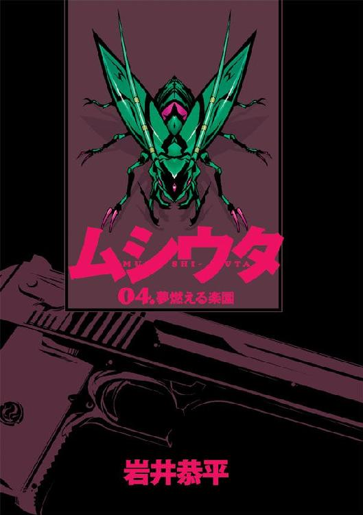

| ムシウタ 04.夢燃える楽園 | |
| 岩井恭平 | |
| KADOKAWA / 角川書店 (2012) | |


ムシウタ
04.夢燃える楽園
岩井恭平
角川スニーカー文庫
本作品の全部または一部を無断で複製、転載、配信、送信したり、ホームページ上に転載することを禁止します。また、本作品の内容を無断で改変、改ざん等を行うことも禁止します。
本作品購入時にご承諾いただいた規約により、有償・無償にかかわらず本作品を第三者に譲渡することはできません。
本作品を示すサムネイルなどのイメージ画像は、再ダウンロード時に予告なく変更される場合があります。
本作品は縦書きでレイアウトされています。
また、ご覧になるリーディングシステムにより、表示の差が認められることがあります。
ムシウタ
０４．夢燃える楽園
ＣＯＮＴＥＮＴＳ
口絵・本文イラスト／るろお
プロローグ 0.00〝オゥル〟The last
......もう、うんざりだ。
ベッドの上で体を丸めた状態で眠っていた〝オゥル〟は、目を覚ました。
ぶるり、と体を一度、震わせる。
暖かくなってきたとはいえ、早朝はまだ冷える。
「......」
ベッドを降りると、〝オゥル〟はまっすぐに窓際の椅子に移動する。曲がりくねった木材を組んだ、クラシックなデザインの椅子である。
くたびれたベッド。
窓際の椅子。
古びた14型のテレビ。
それが〝オゥル〟に与えられた部屋のリビングにある、家具のすべてだ。他のものを要求したことはないし、必要だと思ったこともない。
今日も、変わらないな──。
〝オゥル〟はぼんやりと窓の外を眺めながら、異常がないことを確認する。五年前から一度も欠かしたことのない確認事項。
窓の外にあるのは、何年間もまったく変化のない景色だった。
きれいに並ぶ住居の列。細い路地。歩いていく人々。唯一、変化しているものといえば、路地に並ぶ木々の色くらいのものだ。今は若葉が茂り、青々としている。
〝オゥル〟の薄く開いた瞳は、正面にある一軒家に向けられていた。
彼女に与えられた使命である監視の対象、鮎川千晴が住む家だ。
「......」
椅子の上で背中を丸め、じっと鮎川千晴の家を見つめつづける。
〝オゥル〟は、己の使命を疑ったことはない。
名前もなく、汚らしい路地裏でかろうじて生きていた彼女は、今の使命のために〝あの少女〟から力と名前を与えられたからだ。〝あの少女〟──〝おぅる〟と同じ名前、〝オゥル〟。それは彼女にとって唯一の光り輝く宝物だった。他にはなにもない。
〝おぅる〟様、今日も何事もありません──。
心中で、しばらく顔を合わせていない主人に報告する。もちろん答えは返ってこない。
〝オゥル〟に課せられた使命を全うしなければ、彼女は〝おぅる〟に捨てられる。そして主人である〝おぅる〟は組織に消される。〝おぅる〟はその組織を特別環境保全事務局と言っていた。意味はよく分からないが、とにかく強大な力をもった集団がいるということだろう。
特別環境保全事務局は、公表では存在しないとされている異形の生物、〝虫〟に取り憑かれた人々、虫憑きを捕獲し、拘束するために造られた政府機関と言っていた。
〝虫〟は少年少女に取り憑き、宿主の夢や希望といったものを喰らう。代償として宿主の意のままに力を貸すが、夢を食い尽くした時、宿主は死に至る。また〝虫〟を殺された虫憑きは、同時に感情を失い生ける屍と化す──〝オゥル〟はそういった事実を深く考えたことはないが、どうやらそういうものらしい。彼女の主人である〝おぅる〟もまた、虫憑きである。
主人である〝おぅる〟の説明は一言一句おぼえているが、意味まではよく分からない。つくづく自分は主人に似ず頭が悪いと思う。それでも何も考えることすらできなかった五年前とは比べものにならないが。
薄く開いた目を窓から離し、足元に置いたリモコンを使ってテレビの電源を入れる。
ブツンッ、と音がして、画面に早朝のニュース番組が映し出される。
ニュースキャスターが元気な声で、何かを言っていた。
〝オゥル〟は再び、窓の外を見る。
「......」
椅子の上で、体を丸めてじっと鮎川千晴の家を監視する。
それきり身動き一つしない〝オゥル〟の部屋に、キャスターの騒ぐ声だけが響く。
五年間。
〝オゥル〟はずっと同じ行為を繰り返してきた。
──彼女は鮎川千晴を監視する理由を、知らされてはいない。
やがて〝オゥル〟は、のそりと椅子から移動した。
キッチンに向かい、冷蔵庫の前に立つ。
冷蔵庫を開けると、ドアの内側に牛乳のパックが刺さっている。〝オゥル〟は数口、パックをかたむけて牛乳を飲む。それが彼女の朝食だ。
冷蔵庫を閉じて一息つくと、〝オゥル〟は玄関から外へ出た。彼女に与えられた部屋は、年季の入った二階建てのアパートである。となりの部屋には誰も住んでいないのは、ずっと人の気配がないことから知っている。
エレベータなどがあるわけもなく、二階からリズムよく階段をおりる。しかし足音はまったくしない。街の路地裏で生活していた昔より、気配の殺し方は確実に上達している。
通りに出る直前、塀の陰に潜んで鮎川家を見る。
......遅いな。
〝オゥル〟が目を細めると同時に、玄関が勢いよく開いた。ほとんど内側から蹴り開けるような感じだ。
「なんっ......で、もう！ 時計が止まってること、教えてくれなかったのぉ！」
あわただしく、一人の少女が姿を現した。
いつもは綺麗にストレートにまとまっている髪が、今朝は少し乱れている。前髪をとめる空色のヘアピンはお気に入りのようで、五年間、定期的に使用している。下がり気味の目尻は、怒ったせいでつり上がっているかと思いきや、いつもより下がっている。身を包んでいるのは通っている西遠創成高等学校の制服である。
鮎川千晴、十七歳。
母親は五年前に現在の夫と再婚、以来、三人暮らしをしている。家族仲は良く、たまに家の前で会話をする彼らはいつも笑顔だ。
千晴もいたって品行正しく、たまに帰宅が遅くなることはあるものの、決まった時間に家を出て、夕方には帰宅するのがほとんどである。
ずっと監視を続けている〝オゥル〟はじゅうぶんに承知しているが、千晴は主人である〝おぅる〟とは違い──虫憑きではない。
ごく普通の、どこにでもいる少女である。
柵を開けようとした千晴の手が、空を切った。あわててつかみそこなったせいで、膝を金属製の柵にしたたかに打ちつける。
「いっ......！」
くふっ、と〝オゥル〟は笑みを漏らした。──彼女の笑い方は〝おぅる〟に気味が悪いと言われたが、そこはクセなので直しようがない。口許に浮かべたのは、嘲笑である。
トロいやつだ──。
「痛い......」
涙を浮かべながらも、千晴がようやく家を出た。
〝オゥル〟は塀の陰から、通りへ出る。足音と気配を消し、一定距離をおいて千晴のあとを追う。
通行人の間を滑るように歩いていく〝オゥル〟を、中学生くらいの少女らが振り返る。
「ねえ、あそこ。可愛い......」
「なんか、キレーだねー」
ちっ、と〝オゥル〟は舌打ちした。少女たちの視線は自分のほうを見ている。
〝オゥル〟は自分の外見が嫌いである。いくら気配を殺そうが、容姿のせいで注目を集めてしまうことがあるのだ。尾行の相手がもし勘の鋭い人物だったら、命とりになる。
そう考えたところで、再び〝オゥル〟の口許に侮蔑の笑みが浮かんだ。
チハルにかぎって、こちらに気づくことはあり得ないな──。
鮎川千晴は、はっきり言って人並み以上に鈍い。なにせ五年もの間、監視を続けている〝オゥル〟の存在にちっとも気づく素振りを見せないのである。まさにいらぬ心配だ。
千晴が小走りに、横断歩道を渡ろうとしたときだった。
〝オゥル〟の視界に、赤信号に向かって突進しつつある大型トラックが映った。運転席に座る人物は、今にもまぶたを閉じようとしている。〝オゥル〟の他に異変に気づいている者はいないようだ。居眠り運転である。
このまま何もしなければ、千晴は他の通行人ともどもトラックに激突するだろう。
どうする......？
ほんの一瞬、〝オゥル〟は思考を巡らせる。
──いつからだろう。鮎川千晴に、ある感情を抱くようになったのは。
憎悪。
普段は冷静に千晴を監視しているが、胸の奥では激しい憎しみが渦巻いていることを、〝オゥル〟は自覚していた。
五年という月日の、いかに長いことか。
鮎川千晴が平凡に日々を生き、泣き、笑い、成長していくのを見てきた。千晴は青春というにふさわしい人生を送っている。
それなのに、〝オゥル〟は──毎日、一人の少女のあとをつけまわす日々。アパートに戻っては窓際の椅子に座り、一時間ごとの仮眠でベッドと椅子の間を往復する。
ずっと、繰り返してきたのである。毎日。毎日。たった一つの使命、鮎川千晴という少女の監視のために、〝オゥル〟はすべてを捨てた日々を送っている。
なにより、この使命が続くかぎり、主人である〝おぅる〟のもとへ戻ることはできない。
いい加減、飽き飽きだ......！
〝オゥル〟の憎悪が、首をもたげた。
千晴さえ死ねば、こんなくだらない日々から離れられる。自分に力と名前をくれた〝おぅる〟のもとへ戻ることができる。
動かない〝オゥル〟の眼前で、トラックが横断歩道へ突っ込もうとしている。暴走車に気づいた他の通行人が、悲鳴を上げようとしていた。
千晴もまた、ようやく事態を悟ったようだ。暴走車を見て硬直している。
「......っ！」
くそったれ......！
心中で毒づき、〝オゥル〟は地面を蹴った。すばやく道路の脇へ移動し、足元の小石を勢いよく蹴り飛ばす。
宙へと放り出された石は、全開になった運転席の窓へと吸い込まれた。うたた寝をしていた運転手のこめかみに当たる。
運転手はビクリと顔を上げ、目を見開いた。慌ててハンドルを切り、街路樹へと突っ込む。大きな樹とトラックが衝突する轟音が響いた。
ふん、と〝オゥル〟は鼻をならし、街路樹の陰へ身を隠す。千晴からはトラックが壁となり、〝オゥル〟の姿は見えなかったはずだ。
横断歩道は騒然としていた。
千晴もまたしばらく放心状態だったが、思い出したようにまた走り出した。何度も振り返りながらも、学校へと向かう。
〝オゥル〟は何事もなかったように、千晴の尾行を再開する。
事故では、ダメだ──。
鋭い視線で、少女の背中を凝視する。
〝オゥル〟に課せられた使命は鮎川千晴の監視であり、また〝おぅる〟からある命令も下されている。
不審な点を確認した時点で、報告すること。もし不審な点があれば、〝おぅる〟の手で殺すこともあり得る。
それが、〝オゥル〟に与えられた命令だ。
ぎりっ、と奥歯を嚙みしめ、少女に対する憎悪を抑える。
千晴本人を不測の危険から守ることも、使命の一つなのだ。〝オゥル〟がこのくだらない日常に終止符をうつには、千晴自身が何かしらの〝危険な〟行動をとっているところを確認する他にないのである。そう、主人の〝おぅる〟──ひいては特別環境保全事務局とやらが、千晴を抹殺するのもやむを得ないと判断できるような......。
今や、〝オゥル〟の目的は監視ではなく、千晴を殺す口実をさがすことへと変わっていた。
学校へ到着すると、〝オゥル〟は校門を通り抜ける千晴を見送った。
自分は校門を避け、校舎の裏側へと移動する。
金網の一部、穴のあいた箇所をくぐり抜け、敷地に入る。チャイムが鳴り、教室の中に生徒たちが集まったのを確認し、窓から人気のない廊下へ飛び込む。
周囲を警戒しつつ、足音を消して階段を一気に駆け上る。屋上へ出る扉には鍵がしまっていたが、〝オゥル〟は反対側の窓へと身を投げ出す。雨どいをつかみ、壁をけって外から屋上へと着地する。
慣れた足取りで柵の手前、ぎりぎり校舎からは姿が見えない位置へと腰を下ろす。
いた。
反対側の校舎に、ＳＨＲを受ける千晴の姿を確認する。教師が何か話しているが、千晴は後ろの席の級友と話し込んでいる。今朝の事故の話題で盛り上がっているのだろう。
「......」
〝オゥル〟は千晴からは見えないよう体を丸め、じっとその様子を観察する。
監視任務に明け暮れるうちに、彼女は思考を停止する術をおぼえていた。何も考えずに、ただ監視する。そうでもしないと、ゆるやかすぎる時間の流れに気が狂ってしまいそうだった。
その日も（悔しいことに）何事もなく、千晴は放課後を迎えた。委員会活動にいそしんだ後、千晴は友人らに別れを告げて校門を出る。
「......？」
〝オゥル〟は、眉をひそめた。
まっすぐに帰宅するかと思いきや、千晴の歩く方角が違っていた。
くふっ、と〝オゥル〟は外見には似つかわしくない笑みを浮かべる。
いいぞ......危険と判断できる行動をとった瞬間、〝おぅる〟様に報告してやる......！
そんな彼女の〝期待〟は、すぐに裏切られた。
鮎川千晴がやって来たのは、西遠市の中心街だった。千晴は制服姿のまま、洋服店を何軒か見て回りはじめた。
なんということはない。ただの買い物のようだ。〝オゥル〟は落胆した。
千晴は、大型の複合デパートに近づいていった。駅前広場を通り過ぎ、中に入るかどうか考えているようだ。
デパートの壁には、大型のオーロラビジョンが備わっている。
〝オゥル〟は思わず立ち止まり、ビジョンを見上げる。画面の中では、映画の予告編が次々と映し出されている。
「......」
我を忘れて、映像に見入る。
映像では、めまぐるしく幻想的な光景が入り乱れていた。
ある時は他国の激しいカーアクション、またある時はこの世ではないファンタジーストーリー......それらを凝視する〝オゥル〟の中から、あらゆる感情がたった一つの思いに押しのけられていく。
この気持ちは、〝憧れ〟とでもいうのだろうか。
あまりにも自分とは無縁の世界が、次々と四角いパネルの中で踊っていた。
思えば、そう。〝オゥル〟が〝おぅる〟と出会ったのも、この場所だった。
あの日、たしかに〝オゥル〟は夢みていた──。
幼い〝オゥル〟は、西遠市の駅前広場のベンチにいた。
彼女の視線は、取り憑かれたようにある一点を見上げていた。
新しくできたばかりの大型デパート、その壁面に設置された大型パネルの中でウソのように綺麗な光景が映し出されていた。
汚れきったベンチは、今や彼女の特等席になっていた。彼女以外の清潔な通行人は決して近づかない、だからこそ〝オゥル〟の聖地だった。
当時の〝オゥル〟はベンチに負けないくらい、薄汚れていた。路地裏でその日暮らしをしていた彼女を振り返る者がいても、それらは皆、不潔な彼女を見て顔をしかめていた。
じつはその頃のことを、〝オゥル〟はよくおぼえていない。物心ついた時には親兄弟はなく、薄汚い路地裏に積まれたゴミをベッドに寝る生活を送っていたはずだ。本能だけで生きていた彼女はそれが当然のことだと思っていたし、通りを歩く人々が自分と異なる生き物だとはっきり認識していた。
そのベンチに居座っていたのも、そこには彼女を威嚇する人間がいなかったからだ。だれもが彼女を避けて通る。たまに浮浪者が食べ物を分けてくれるのも、理由の一つだった。
だがその日、その席は〝オゥル〟にとってかけがえのない宝物へと変わった。
あまりにも綺麗な光景が、頭上のパネルの中に拡がっていた。
見たこともない海が現れ、次の瞬間には宇宙を進む船が現れ、かと思うと格好をつけた男女が抱き合って口づけをかわし──。
路地裏の汚れきった地面しか見たことのない〝オゥル〟が、はじめて上を向いていた。画面が変わるたびに、彼女の心は躍っていた。
陳腐な表現だと思うが......感動していた。
食べ物を手に入れる体力もなくなり、衰弱しきった体でここまでやって来ていた。ここが死に場所だと覚悟していた。
「......くふっ」
いつの間にか、〝オゥル〟の頰を一筋の涙が伝っていた。
生まれて初めて、笑った。
それはちょっとした奇跡だった。
地べたをはいずることしかなく、そのまま死んでいくはずだった〝オゥル〟が笑えるはずがなかった。彼女はそういうふうに生まれていなかったのだから。
だが、もしかしたら......世界に歯車のようなものがあって、それが一つでも動きを変えていたら、もしかしたら彼女もその光景のどれか一つの中に──。
「くふっ......くふふっ......」
涙を流しながら笑う〝オゥル〟の横に、一人の女の子が座った。
まだ子供だ。短い髪に巻いた紐の色を、〝オゥル〟は今でもはっきりとおぼえている。
「なに、アンタ？ 笑ってるの？ 気持ち悪りーわね」
〝オゥル〟はぼんやりと女の子の顔を見上げた。彼女は顔をしかめていた。
だが、ふいに女の子が〝オゥル〟の顔をなでた。──はじめて触れた自分以外の生き物の感触に、〝オゥル〟は身をすくめた。
「動揺したわね」
ニヤリと笑った少女の背後に、深紅の煙のようなものが見えた。煙はまるで生き物のように姿を変え、大きな腹、長い触覚、そしてキレイに輝く翅と針へと形を保っていく。
まるで蜂のような──いや、その中でも特別に高貴でプライドに満ちた、女王蜂のように見えた。
「私みたいなのを、虫憑きっていうんだって。どう？ 私も気持ち悪りーでしょ？」
〝オゥル〟は、かくんと首を縦に振った。
それは単に頭を支える力すらなくなっただけの動作だったが、それを見て女の子は驚いたようだ。すぐに、心から楽しそうに笑った。
「あっはは！ なに、アンタ？ アンタみたいなのでも私の言ってること分かるわけ？ おっかしいわ、まったく......いいわ、アンタを私の最初の奴隷にしてやるわ。特環の任務とやらを手伝ってもらうのもいーわね」
言い、女の子はにっこりと微笑んだ。言葉遣いや喋る内容など関係ないくらい、清々しく可愛らしい笑みだった。
「いっしょに、くそったれな人生を歩んでやろうじゃないの！」
まるで世界の頂点にたったかのような──いや、間違いなくその瞬間だけは、二人は狭いベンチでの支配者だった。
その日から〝オゥル〟は女の子の奴隷であり、手駒であり、相棒になった。
それが、五年前の出来事である。
「......」
〝オゥル〟は大型パネルから目をそらし、鮎川千晴の尾行を続ける。
こいつさえ死ねば──〝おぅる〟様が殺してくれさえすれば、私はまた〝おぅる〟様と......。
一定距離でついていく〝オゥル〟の殺意に気づく素振りすらなく、千晴はウィンドウショッピングを楽しんでいる。
そんな千晴の背中を見つめる〝オゥル〟は、奇妙な既視感を抱いた。
まるで......映画の主人公みたいだな。
明るい陽を浴びて青春を謳歌する千晴の姿は、〝オゥル〟が憧れた大型パネルの中の光景を切り取ったかのようだ。千晴が主人公ならば、つけ狙う側の〝オゥル〟はさしずめ暗殺者といったところか。サスペンスとしてはＢ級かもしれない。
だが、もしかしたら......生まれ変わりというものが本当にあるのなら、あるいは〝オゥル〟が千晴のような主人公に成り変わることも──。
「......くふっ」
あまりに滑稽な妄想に、思わず笑ってしまう。
だが、妄想は勝手に続いた。
これが映画だとしたら、どんなストーリーになるのだろう？ 暗殺者の凶刃をくぐり抜け、主人公の少女はたくましく成長していく？ それとも、あっさりと殺されて悲劇と化す？ あるいは暗殺者と主人公が恋心を抱き、二人で手を取り合うということも──。
「くふふっ......」
妄想に耽りながらも、〝オゥル〟は現実を忘れることは決してない。
自分が抱いたあの日の夢は、ほんの一時の気の迷いだったのだ。〝オゥル〟自身が、映画の主人公のように生きることなど決してない。彼女が日に当たることなどあり得ない。
だが、千晴は......？
千晴が主人公の物語があるとしたら、〝オゥル〟もまた彼女を中心に描かれたストーリーの、登場人物の一人なのだろうか？ 〝オゥル〟は物語の結末を見ることがあるのだろうか？
とりとめのない想像を巡らせる〝オゥル〟の見ている前で、千晴の動きが変化していた。
「......？」
急にあらぬ方向を見たきり、じっとその場に佇んでいるのだ。〝オゥル〟は千晴の視線を追いかけるが、雑踏が壁となりよく見えない。
千晴が方向転換し、小走りに駆け出す。
なんだ......？ 知り合いでも見つけたのか？
〝オゥル〟は足音を殺しつつ、慎重に距離をおいて千晴を尾けていく。
千晴はまるで蝶々を追いかける子供のように、なにかを見つめたまま横断歩道を渡っていく。フラフラとした足取りで向かう方向は、自宅や学校とは正反対である。
到着したのは、駅と県庁のちょうど中間、西遠市のど真ん中にあたる場所だった。
千晴がキョロキョロと周囲を見回し、張り巡らされたロープをくぐる。
「......」
〝オゥル〟は、目の前にそびえ立つ巨大な建築物を見上げた。
透明なのか白なのか、それとも銀色なのか、日光を反射してキラキラと輝く塔が建っていた。塔の横にはドーム状の建物もあり、その周囲を様々な建物が取り囲んでいる。それらすべてが銀色の光に包まれており、まるで巨大な宝石箱のようだ。塔はクリスタル、ドームはダイヤモンド、周囲の建物はちりばめられたプラチナやシルバーといったところか。
西遠市メガシティプロジェクト、『ＵＲＢＡＮ』。
衣食住と娯楽、ワーキングを一つの区画にまとめようとした政府企画であり、中央のタワーは企業と娯楽施設、ドームは芸術と教育、周囲の建築物は住居に利用される。建築作業が内装を残すのみという段階で、プロジェクト責任者と建設業者の間で癒着問題が発覚し、作業がストップしてしまっている──そんなことを、〝オゥル〟と同じく茶深の手駒である杉都綾が言っていた。
「......」
千晴は、ドーム状の建物──通称アーバン・ドームへと向かっていた。敷地内はもちろん関係者以外立ち入り禁止だが、本人はほとんど気にしていないようだ。
〝オゥル〟の心臓が、ゆっくりと高鳴りつつあった。
「......くふっ」
ひきつった笑みをこぼす。ごくり、と無意識に喉が鳴った。
い、いよいよなのか......？
これまで、千晴がこのような不審な行動をとったことはなかった。千晴の背中に、〝悪いこと〟をしている一種の緊張感がただよっているのが分かる。
今日なのか......？ 五年間、あの女を監視してきた理由が、ようやく分かるのか？
「くふふっ......！」
〝オゥル〟は軽い足取りで、千晴を追う。気分が高揚していくのが自分でも分かった。
〝おぅる〟様！ あいつは何か〝悪いこと〟をしようとしています！ もし危険だと判断できる場面を見つけたら、すぐに報告に向かいます......！
〝オゥル〟の主人ならば、あんな小娘など一瞬でくびり殺してくれるはずだ。これまで積み重ねられた〝オゥル〟の憎悪も、瞬時に払い落としてくれる。その光景を想像しただけで、〝オゥル〟の胸が晴れ渡っていくようだった。
千晴は地面に放り出されたベニヤ板を乗り越え、重機をかわし、アーバン・ドームの敷地へと入っていく。
いいぞ......！ 今日がお前の命日だ！ そうさ、お前のストーリーはここで──。
そこまで考えて、〝オゥル〟の思考がピタリと停止した。
「......」
千晴の物語が、終わる。今日、ここで。
本当に？
五年間。それは〝オゥル〟にとって気の遠くなるような時間だった。
千晴はそれだけの年月をかけて、ゆっくりと成長していった。
母が義父と結婚した当時は、なぜかあまり笑顔を見せない少女だった。だが、中学校、高校と良い友人に恵まれたのだろう。学校に通う彼女は、しだいに周囲に溶け込んでいったようだ。今では微笑を浮かべ、鼻歌を口ずさんでいるのが日常のスタイルとなっていた。まだ恋人はいないようだが、それも時間の問題だろう。なにより彼女は屈託がなく、そう、本当に青春映画の主人公のようで──。
「......っ！」
ぎりっ、と奥歯を鳴らし、〝オゥル〟は回想を力ずくで振り払う。
関係ない......！ いまさら何をためらうことがある！
千晴はドーム内へ入り、停止したエスカレータをのぼっていく。
二階ラウンジは、吹き抜けになっていた。もとは観葉植物の園芸フロアにするつもりだったのだろう。植林したまま放置された木々は、レンズ状の天井から集まった日光を浴び、好き放題に生い茂っていた。まるでジャングルを切り取ったような、幻想的な光景がひろがっていた。
「......」
そこに見た光景に、〝オゥル〟は身震いをした。
ああ──。
震えはとまらず、ガクガクと両膝が揺れる。ゆっくりと笑みの形に歪んでいく口は、五年もの間に鬱積した感情が解き放たれていくのを表していた。
密林にたたずむ千晴の前に、見知らぬ少女が横たわっていた。茂みをベッドにまぶたを閉じた少女は、まるで妖精のように儚く見える。
──いや、見知らぬ少女などではない。〝オゥル〟はその顔を知っている。つい先日、杉都綾が持ってきた〝甲のレベル１捕獲対象人物〟という資料に載っていたからだ。事情はよく分からないが、とにかく危険人物であるらしい。
「く......くふっ......」
〝オゥル〟は呆然と笑んだまま、クルリとやってきた方向を振り返った。
と、とびっきりだ......チハルは、〝組織〟が追っている危険人物と接触していた！ 間違いない！ これ以上、危険な行為はあるもんか！
「くふふっ！」
一歩ずつ脚を踏み出すのももどかしく、〝オゥル〟は全力疾走していた。もちろん、主人である〝おぅる〟のもとへ報告するためである。
エスカレータを飛び降りると、床が滑って転倒してしまう。だがそんな痛みも心地よかった。立ち上がった〝オゥル〟の口許には笑みが浮かんだままだ。
〝おぅる〟様！ チハルは危険人物です！ さあ、今すぐにここへやってきて、あいつを殺し──。
「......」
〝オゥル〟の顔から、すうっと笑みが消えていく。
千晴は、ここで死ぬ。
五年間、〝オゥル〟が見守ってきた少女のストーリーは、ここで幕を閉じるのだ。
これまで、何度も夢見てきた結末のはずだ。だが......もしかしたら、別の結末もあるのかもしれない。あるいは、〝オゥル〟が〝報告をしない〟という選択をとったとしたら、鮎川千晴はこれまで通り──。
「く......くふふっ！」
あまりに馬鹿げた自分の考えに、笑いがこみ上げる。
あり得ない。そんな結末は、あり得るはずがない。鮎川千晴という少女のストーリーは、間違いなくここで──。
「......」
ドームから出ようとしたところで、〝オゥル〟はピタリと脚を止めた。
千晴以外の気配など、まるで注意を払っていなかった。だから、入り口の前に立つ人物に気づいて、〝オゥル〟はぽかんと口を開ける。
向こうも、彼女に気づいたようだ。ぼんやりとした瞳でこちらを凝視している。
「......っっ！」
誰だ、お前は......！
危うく、大声で叫ぶところだった。
佇んでいたのは、闇色のスーツを着た長身の男だった。体の線は細いが、袖が破れて露わになった二の腕は筋肉質で引き締まっている。伸び放題になった長い髪が目元を隠し、口を覆うマスクの奥からは荒い呼吸音が聞こえる。
男の足元に、血だまりができていた。怪我を負っているようだ。だがそんなことよりも──。
野生に近い生活を送っていたことがある〝オゥル〟は、はっきりと感じ取っていた。悠然と佇む男が纏った、今にも張り裂けそうな緊張感。それは──殺気だ。それもこれまで感じたことのないくらい強烈な殺気である。
「ぐっ......はあっ......はぁっ......どこにいる......このあたりにいるはずだっ......」
男がうめき声を上げながらも、〝オゥル〟に向かって歩み寄る。
こいつは、皆殺しにする──。
眼前の男が冷静な判断力を失っているのが分かった。そして、この尋常ではない殺気だ。男は視界に入る人間すべてを殺戮するだろう。たとえそれがごく普通の......千晴のような少女であっても。
「......っっ！」
〝オゥル〟の全身が、総毛立った。それまで彼女を責め立てていた喜び、迷い。それらの感情が、たった一つの激情に押し呑まれる。
ふざけるなっっ！
心の中で、絶叫する。──〝オゥル〟は、怒っていた。
五年間！ 五年間だっ！ ずっと待ち続けてきたんだ！ それを......それを、なぜ、貴様のような見も知らない相手に奪われなければならないんだ！ チハルは私と、〝おぅる〟様の獲物だ！ それを......横取りしようってのか？ ナメやがってっっ！
本能が〝オゥル〟から理性を奪っていた。助走をつけて、男に飛びかかる。
「むっ！」
とっさに回避した男の顔を、〝オゥル〟の指先がかすめた。男の喉に裂傷が刻まれ、血がしたたる。
「なんだ、貴様は......！」
〝オゥル〟は再び襲いかかるが、今度は完全にかわされてしまった。カウンターで男の拳が〝オゥル〟の脇腹にめり込む。
「ぐふっ......！」
小柄な彼女は簡単に吹っ飛び、壁にたたきつけられる。口の中に血の味がひろがったが、怒りに我を忘れた〝オゥル〟はすぐに立ち上がる。
タタンッ、と小刻みなステップで立ち向かう〝オゥル〟を、男が蹴り飛ばそうとする。だがそれはフェイントだった。軽い身のこなしで蹴りをかわすと、抱きつくようにして男の体に飛びつく。
「ぐおあっ！」
男の苦鳴が、響いた。頰から首筋にかけて、皮膚が引き裂かれていた。
〝オゥル〟は舌打ちした。非力な彼女の武器といえば、素早い動きと爪くらいしかない。本当は眼を狙ったのだが、かわされてしまった。逆に〝オゥル〟の爪ははがれ、激痛が指先を襲っていた。
「き、貴様ぁっ......！」
顔から血を流した男が、鬼のような形相で〝オゥル〟を睨む。男の背後で、赤と青の紐が浮かび上がったかと思うと、それらは瞬時に膨れあがっていき、双頭の化け物と化す。
昆虫、それも唇脚綱に似た多くの体節を持つ怪物だ。体の半分が引き裂け、びっしりと牙が生えた口器となっている。何百という数の脚が蠢く様はゲジを連想させ、背筋に悪寒が走った。赤と青の頭、合わせて四つの複眼が〝オゥル〟の姿を映し出していた。
こいつ......〝おぅる〟様と同じ、虫憑きなのか！
強引に突き飛ばされ、地面に転がる〝オゥル〟。その彼女に向かって、赤いゲジが大きな顎を開いて襲いかかる。
とっさに横に転がってかわした〝オゥル〟をかすめ、巨大なゲジが地面をえぐりとった。
ブルドーザーのごとくアスファルトをかみ砕き、塔──アーバン・タワーの壁をたたき壊して貫通する。
「......！」
ケタ外れの破壊力に、〝オゥル〟は戦慄する。あんな怪物の攻撃を喰らおうものなら、彼女など形も残らないだろう。そしてそれは、千晴も同じことだ。
〝オゥル〟はドームを見る。今の音は、千晴のもとまで聞こえてしまっただろう。何事かと顔を出すかもしれない。そうなったら──。
お前なんかに、横取りさせてたまるかっ......！
続けて襲いかかった青いゲジの顎をかわし、〝オゥル〟は壊れた壁からタワー内部へ駆け込む。かわしざまに、ゲジの複眼を全力で引っ搔く。硬そうな体殻の中でも、さすがに眼だけはもろいようだ。生身の指先に、表面をえぐる嫌な感触が伝わる。
「殺すっ......！」
男のうめき声と引き替えに、左の爪もはがれていた。男が〝オゥル〟を追いかけ、タワー内に飛び込んでくる。
「......くふっ」
指先を伝わる痛みで脂汗を浮かべながらも、〝オゥル〟はニヤリと笑う。
そうだ、ついてこい......！ 知ってるぞ！ 虫憑きは力を連続して使い続ければ、疲れがひどくなるんだろう！ 私がここで限界まで力を使わせてやる！ チハルのもとまで近づけないほどにな！
タワー内は、静まりかえっていた。支柱が壁面に並んでおり、一階フロアには木材や建築材がうち捨てられていた。モニュメントが置かれ、輝くパイプが張り巡らされたそこは、完成さえすればさぞ美しいことだろう。
また、未舗装でむき出しになった金属管が〝オゥル〟の目についた。それが水道管であることを、〝オゥル〟は知っている。水道管は一階から地下へと延びている。
ドームと同じように、フロアの中央に停止したエスカレータがあった。〝オゥル〟は足音も軽やかに、上階めざして駆け上がっていく。
〝オゥル〟と見知らぬ男の戦いは、何十という数のエスカレータを昇るまで続いた。ゲジの攻撃をかわしては、〝オゥル〟は時にはそばに置かれていた木材を男に向かって蹴り飛ばし、時には爪がはがれた指先で執拗に複眼を狙って攻撃をする。
「ふっ......ふっ......！」
激しく動き続けたせいで、肺が悲鳴を上げていた。だがそれは男も同様だった。怪我を負ってなお追いかけてくる体力は凄まじいが、〝オゥル〟のほうがわずかに勝っている。
──気がつくと、風が吹いていた。
まさかエスカレータで屋上まで出るとは思わなかった。面食らいながらも周囲を見回す。鉄柱が並べられ、クレーンが放置されていた。
「はあっ！ はあっ！」
やや遅れて、男が屋上へたどりついた。
〝オゥル〟は顔を歪める。──もう少しで体力と気力を完全に奪えそうだが、あと一歩、足りなかったようだ。せめてあと数階、タワーが高ければと運命に舌打ちする。
必死に逆転の手をさがす〝オゥル〟の目に飛び込んだのは、いくつも並べられたドラム缶だった。〝オゥル〟の鼻は、そこから刺激臭をかぎ取っていた。それが何であるか悟ると同時に、〝オゥル〟の頭にある策がひらめいた。
「くっ......ふふっ」
自然と、笑みがこぼれた。
〝おぅる〟ゆずりの知恵の賜だろう。考えついた策は、主人である〝おぅる〟ならば、こう評価するに違いない。
──くそったれな思いつきだわ。
「くふっ」
その通りだ。本末転倒もいいところである。
だが、〝オゥル〟の体は迷わず動いていた。ドラム缶に向かって駆ける。
「逃がすか！」
男の操るゲジが、〝オゥル〟を襲う。かろうじて身をひねった〝オゥル〟をはじき飛ばし、並べられたドラム缶をことごとくかみ砕く。
「っ......！」
牙が、脇腹にひっかかったようだ。〝オゥル〟の腹から、血がはじけ飛んだ。
だが直後、鼻をつく刺激臭が周囲に立ちこめた。
「これは......ガソリン？ クレーンの燃料か？ まさか貴様、わざと......！ いや、そんなことがあるわけが──」
男は動揺したようだ。
「くふっ......」
〝オゥル〟は震える膝で立ち上がり、離れた場所に置かれた鉄柱に飛びつく。割れた爪を振りかぶり、鉄柱の表面を搔き立てようとする。
「う......うおおおっ！」
恐怖を感じたのかもしれない。男が反射的に、青いゲジを〝オゥル〟にけしかけた。爪が鉄柱を引っ搔こうとした直前で、大きな顎が〝オゥル〟の体に牙を突き立てる。
「......っっ！」
〝オゥル〟は大口を開け、苦鳴を上げた。肋骨が砕ける嫌な音がして、ゴミのように離れた地面に放り出される。
「き、貴様......今、なにをしようとした！ まさか、火花でガソリンに引火させようとしたのか？ 自分もろとも！」
「......くふっ。くふふっ」
ガソリンを全身に浴びた〝オゥル〟は、倒れたまま笑みをこぼす。完全に致命傷だ。自分はもう助からない。
「わ、笑ってるのか......？ な、なんなんだ、貴様は......！ いったい、なんなんだ！」
それは、こっちのセリフだ──。
〝オゥル〟は笑みを浮かべたまま、再び立ち上がった。
お前じゃないんだ......チハルの物語を終えさせるのは............〝おぅる〟様じゃなければならないんだよっ！
〝オゥル〟は地面を蹴った。離れた位置にあるコンクリート製の小屋を目指す。〝オゥル〟は直感で、それがくみ上げ式のポンプであることに気づく。千晴の学校でも同じものがあり、床置き式のそれはタワーとドームの各所へと水道管で繫がっているはずだ。
〝オゥル〟が次に思い浮かべた策、それは〝オゥル〟自身にとってはまったく意味を為さないものだった。しかし──。
〝おぅる〟様......同じ街にいるかぎり、この男はきっと貴女の邪魔になります。貴女なら、私の考えなんて簡単に分かるはず......どうか、〝おぅる〟様──。
「その傷で、なぜ動ける......う、うあああっ！」
完全に恐怖に支配された男の〝虫〟が、〝オゥル〟もろとも小屋を砕いた。
──破壊音が『ＵＲＢＡＮ』に響き渡った。
完全に静寂が訪れたことを確認して、ようやく男が背中を向けた。
「な、なんなんだったんだ......俺は幻覚を見ていたのか？ くそっ......しばらく休息をとらないと──」
ぶつぶつと呟きながら、男の足音が遠ざかっていく。
「......くふっ」
破壊された小屋の中で、〝オゥル〟は会心の笑みを浮かべた。
腹は裂け、肋骨と脚が折れ、視界が霞んでいた。
お前じゃないんだ......チハルのストーリーを終わらせるのは......。
霞んだ視界の中、自分の体から血とともに赤い煙がこぼれおちていくのが見えた。煙は空中で凝り固まっていき、女王の風格を纏う蜂へと変わる。
〝おぅる〟様......今すぐに、貴女のもとに向かいます......。
身を起こし、折れた脚を引きずって歩きだす。
「くふっ......くふふっ......」
折れた骨が肺に突き刺さっているのだろう。笑みを浮かべる口からは、大量の鮮血があふれ出していた。
赤い煙──〝おぅる〟からもらった力を失っていくと同時に、それまで鮮明だった思考がぼんやりと知性を失っていく。
でも、〝おぅる〟様......私は、貴女に報告できないかもしれません。どうやら私は──。
「くふふっ」
くそったれな夢を思い描いてしまったようです......あるいは、チハルの物語はこれからも、ずっと──。
「くふふっ、くふっ」
それが、〝オゥル〟に残された思考能力の、最後の一滴だった。
「くふふふっ、くふふっ......」
何も考えられなくなった〝オゥル〟の笑い声が、アーバン・タワーを降りていった。
0.01 The others
西遠市の駅に近づいたところで、光の洗礼が杏本詩歌を迎えた。
「んっ......」
高級車の助手席に座った詩歌は、強烈な光線を放った主へと顔を向ける。
詩歌は思わず、その美しさに息をのんだ。
まるで、地上に生えた巨大な水晶だ。
巨大な塔とドーム状の建物の、先端が見えた。銀色の表面が、夕日を反射して詩歌のいる場所へ降り注いだのである。
「複合ビル『ＵＲＢＡＮ』。計画が途中で頓挫しているせいで、まだ産声も上げられずにいる施設だ」
運転席でハンドルを握った中年男性、宗方槐路が説明する。
「『ＵＲＢＡＮ』......」
詩歌の乗る車は、夕方のラッシュに巻き込まれていた。
後部座席には、一人の少年が座っていた。ヘアバンドで髪をまとめた、詩歌と同年代の少年である。切れ長の瞳を半開きにし、大きなあくびをしている。
「残念だが、見学している時間はないな。この街に用はない。もっと中央本部から離れたほうがいい」
宗方の言葉に対し、ひさしぶりに少年が口を開いた。
「いや、しばらくここで留まったほうがいいかもな」
「どういうことだ、アイジスパ」
「桜架市からずっと、オレたちの周りをうろちょろしているヤツがいる」
「なんだって？ どうして今まで言わなかった──」
「あっ」
巨大なタワーと雑踏を見比べていると、詩歌は通りにあるものを見つけた。
「あ、あの......ちょっと待っててください」
答えも待たず、詩歌はドアを開けて外に飛び出す。
「むっ」
「ちっ」
宗方の怪訝そうな声、少年の舌打ちを背に、通りの暗がりへ走る。
そこに、その生き物はいた。
「......」
「猫か。死にかけているみたいだな。おおかた車に轢かれでもしたんだろう」
怪我を負った白猫が、息も荒く倒れていた。
腹から血を流し、脚は折れているようだ。さぞ綺麗であったはずの真っ白な毛並みは、しかし大量の出血で深紅に染まっている。薄く開いた金色の瞳は、まるで何かを探し求めるように宙を見つめている。
血の痕は、延々と通りの向こうに続いていた。方角から言えば、『ＵＲＢＡＮ』がある方向である。
詩歌は、白猫を抱き上げた。背後の少年ではなくとも、分かる。この猫が助かることはないだろう。
「......くふっ」
詩歌は、目を見開いた。
「くふふっ......くふっ......」
背後で、動揺する少年の声が聞こえた。
「わ、笑ってるのか、こいつ？」
詩歌の腕の中で、白猫が笑っていた。苦しみにあえいでいるようにも見えるが、猫の口許は確かに笑みの形に歪んでいた。
その笑みは、まるで何か大きな使命を果たした勇者のように誇らしげで、満ち足りているように見えた。
「くふっ......」
猫の笑い声が、ゆっくりと小さくなっていく。
小さな体から伝わる鼓動が弱まっていき、やがて停止した。息を止めてもなお、白猫は笑っていた。悔いはない、とでも言いたげに。
「......」
車から「可哀想だが置いていけ。我々にはそれを弔っている時間すら、惜しい」という宗方の声が聞こえた。
ちっぽけな命の終演を見届け、詩歌は唇を嚙んだ。
ピクン、と菰之村茶深は顔を上げた。
見上げた彼方には、銀色に輝く塔──アーバン・タワーがそびえ立っていた。
制服姿のまま街を歩いていた茶深は、塔からこちらへと向かってくる赤い煙を見た。煙は空中で蜂のような形を成し、茶深の体に吸い込まれるようにして消えていく。
「......」
雑踏の中、茶深は立ちつくす。カチューシャ代わりに頭に巻いた紐が、風に揺れる。三角形の伊達メガネの奥から、じっと『ＵＲＢＡＮ』を見かける。
「〝おぅる〟？ どうかした......？」
横を歩いていた少女が、ぼそぼそという声でたずねてくる。両目を隠してしまいそうな長い前髪の奥で、心配というより警戒の眼差しが茶深を見ている。
茶深はニヤリと笑う。
「べつに、どーもしねーわよ。手駒が一つ減っただけだわ」
「......？」
「それよりも『ＵＲＢＡＮ』から半径二キロ以内で、白猫がいないか確かめてくれる？ 怪我を負ってる可能性が高いわね。そこらの野良猫じゃねーわよ。それなりにキレイなやつに絞ってちょうだい。アンタの能力ならこれだけの条件でもできるでしょ、〝コノハ〟」
〝コノハ〟と呼ばれた少女は、突然の命令に驚いたようだ。だがすぐに狭い路地にひっこみ、言われた通りの行動に移る。
少女が雑居ビルの路地に手を触れた部分が、盛り上がった。それはゆっくりと緑色へと変色していき、壁に擬態して隠れていた〝虫〟が露わになる。葉っぱが二枚かさなった間に、大きな一つの複眼が挟まれたような、奇怪な外見をしている。
異形のハムシは壁を伝い、ビルの屋上まで滑っていく。見晴らしのよい場所までのぼったところで、大きな複眼で町並みを凝視する。
〝コノハ〟が口を開いたのは、数分も経った頃だった。
「見つけた......」
「遅せーわよ。手を抜いてんじゃないの？」
「......この近くよ。怪我を負ったまま、『ＵＲＢＡＮ』からずっと歩いてきていたみたいだけど、その......もう死んでるわ......」
「知ってるわよ。案内しなさい」
〝コノハ〟に先導されてやってきたのは、大通り沿いの歩道だった。
茶深は、路地の片隅で息をひきとった白猫を見下ろす。猫のそばには花の代わりとでもいうように、蝶々結びをした赤いリボンが置かれていた。どうやら誰かが猫の最期を看取ってくれたらしい。柄にもなく「ま、礼を言っておくわ」くらいの気持ちが湧いた。
「......」
手駒の一つ──そう、あくまで茶深が利用するための、ただの奴隷にすぎない。しかもそれは、茶深がはじめて能力を使ったあくまで実験のようなものにすぎなかった。
笑みを浮かべた白猫を、そっと指先でなでる。
事故やそういった怪我じゃねーわね......大きな動物か、それとも〝虫〟にやられたか。〝虫〟だとしたら分離型の直接攻撃系だわね。『ＵＲＢＡＮ』で現場を確認したほうがいーか。まったく、面倒ったらないわ。
心中で、今後どう動くべきかを考える。だが、これは間違いなく──。
「鮎川千晴の周りで、何かが起こったみたいね。五年間も何も起きなかったくせに、まったくくそったれなタイミングだわ」
怪訝そうに佇む〝コノハ〟を無視し、立ち上がる。
見下ろした猫の姿に、死体になった茶深が重なる。その幻は、実際に未来に起こることなのかもしれない。茶深はいつ死んでもおかしくないような、野望を抱えているからだ。
──いっしょに、くそったれな人生を歩んでやろうじゃないの！
過去の自分の台詞を思い出し、茶深は不敵に笑う。
「......シアワセそーな死に顔してんじゃねーわよ。ご主人様をさしおいて、自分だけくそったれな人生から逃れられたってわけ？ まったく、ナマイキだわよ......」
茶深の呟きは小さく、〝コノハ〟までは届かなかった。
密林状態と化した二階ラウンジで、鮎川千晴は一人悩んでいた。
「うーん、たしかにキモチいいわ」
栄養に富んだ土はふかふかで、その上にびっしりと背の低い雑草が生えている。もともと害虫や昆虫を寄せ付けないよう防虫剤がまかれているのだろう。吹き抜けになった天井から降り注ぐ日光の下、木々にとって小さな楽園ができていた。
楽園の中央に、二人の少女が寝そべっていた。
一人は不肖、西遠創成高等学校二年Ｈ組、鮎川千晴。長い髪に土がつくことも構わず、大の字になって天井を見上げている。クラスの女子の中では高めの身長と、生徒会の副会長を務めていること以外は特にこれといった特徴もない、ごく普通の女子高生である。と、少なくとも自分では思っている。
「って、そういうことは比較的どうでもいいわけで」
ごろりと転がって仰向けになり、真向かいに寝ている少女の寝顔を見つめる。
「問題は、キミが誰かってことよね。ヘンな格好でふらふらと歩いてたから、思わずついてきちゃったけど」
千晴が見つめる中、少女は体を横にした状態で穏やかな寝息を立てていた。千晴よりも長い髪が、放射状に草の上に散らばっている。同性の千晴から見ても美人に思えるが、年齢は千晴と同じくらいか少し下だろう。
少女が着ているのは、病院の入院患者が着ているような簡素な服である。およそ街を歩く格好ではないことに加え、今になって千晴は困ったことに気づいてしまった。服の裾あたりに、赤い染みが付着していたのだ。
「まさかこれ、返り血とかだったりして。あは、あはは......」
ひきつった笑みを浮かべる千晴をよそに、少女はあどけない顔で眠ったままだ。
「もしかして、どこかの秘密組織の暗殺者だったりして。それとも、脱獄犯とか。ううん、そんな血生臭いカンジじゃないわ。逃亡中のどこかの国のお姫様とか？ そうなるとここから大恋愛ストーリーへと発展するのがスジってもんよね。うーむ、女の子のあたしが見つけちゃって良かったのかしら？」
頰杖をつき、想像をめぐらせる。そんなことで答えが出るはずもないが、考えているうちに千晴は笑顔になっていく。──ついさっき、外から何か音が聞こえたような気がしたが、すぐに止んだので見に行ってはいない。なんとなく少女のそばから離れることが、もったいない気がしたのだ。
人差し指で頰をつつくと、少女はちょっとだけ眉をひそめた。
「ねえ、キミは誰？」
たずねる千晴に対し、少女は小さなクシャミで返事をした。
1.00 千晴 Part. 1
前略 いかがお過ごしでしょうか？
私、鮎川千晴という一少女は、自分が思うに青春まっただ中にあると思われマス。
だって家庭はそれなりに円満だし、学校での友人も多いよ。たまにアルバイトをしてみたりして、金銭的にも不自由はしてないしね。あ、でも欲しい最新機種のケータイには届かないのよ。またバイトしなきゃね。
ああ、素晴らしき日々。花の女子高生、バンザイ！
とこで私は今、青春にありがちなシチュエーションに巻き込まれています。
キミは青春ときいて、何を連想するかね？
勉強？
夜遊び？
ノンノン、やっぱコレっきゃないっしょ！
恋愛だよ！
「鮎川？ 聞こえなかったかな？」
──我知らず意識が異次元に飛びかけていた千晴は、ハッとして我に返った。
時刻は昼。
春休みまで残すところ数日と迫ったこの時期、授業は午前中で終了していた。生徒たちの半分は帰宅の途につき、残す半分は部活動に励んでいる時間帯である。
千晴がいるのは、自分のクラスである二年Ｈ組の教室だった。クラスメートたちの姿はすでになく、室内にいるのは千晴とクラスメートの男子生徒の二人きりだった。
メールで、『放課後、教室に残ってくれないか』とあった時に、もしやとは思っていた。だがいざとなると、やはりどこかむずがゆいものである。
「あ、うん。えーとね......」
苦笑を浮かべて頭をかく千晴を、クラスメートの男子生徒はじっと見つめている。
「好きなんだ。鮎川って今、つきあってるヤツいないだろ？ だったら、俺とつきあってくれよ」
だったら、なんて言われてもね───。
千晴の顔がますます苦りきっていく。交際を申し込まれるのははじめてではないが、慣れることはできない。この先、何度あってもそれは同じだろう。
「新学期になったら、クラス替えがあるだろ？ 別々のクラスになるかもだし......だから、今のうちに気持ちを伝えておきたくて」
どうやら彼は本気らしい。これがいけない。真剣な気持ちというやつに、千晴は弱いのだ。
「うーんと、結論から言うと、ムリ。ごめんね」
千晴は、ハッキリと言う。相手が真剣ならばこそ、思わせぶりな態度はとってはいけないと思った。
「なんで？ 他に好きなヤツとかいるのか？」
「うんにゃ。悲しーことに、まったくいないんだわ、これが。恋愛っつったら、青春のメインイベントなのにねー」
「だ、だったらさ......！」
「だったら、なんてムリだよ。好きになれるかどうかも分からないのに、そういう約束みたいなことはできない。ごめん」
言ってしまってから、千晴は心中で「あちゃー。またやっちゃった」と頭を抱える。
胸中では迷ったり戸惑ったりしているはずなのに、行動はやけにハッキリしてしまうのだ。さらに悪いことに、その行動に対して後悔をしないのである。
案の定、男子生徒はとりつく島もない返答に、ショックを受けたようだ。落ちこんだ表情を、作り笑いで誤魔化している。
「そっか......うん、そうだよな。ごめん、忘れてくれよ。三年になって同じクラスになったら、今まで通りよろしくな」
「ん」
笑顔で頷く千晴の胸が、チクリと痛む。言葉通り、千晴がこの出来事をすっぱり忘れたら、彼は満足なのだろうか？ ......そんなことの答えは、分かりきっている。自分にできるかぎり憶えておこうと思った。
男子生徒が教室を出るのを見届け、千晴は自分の机にもたれこんだ。
「だはー。まいったわ、ホント。青春ってのもラクじゃないわ」
突っ伏して深呼吸する自分の顔が、木目の浮いた机の表面にうっすらと映し出される。
長めの髪は、西遠創成高校の校則をぎりぎりオーバーするくらいまで伸ばしている。大きな瞳は目が覚めている時と眠たい時の差がはっきり分かってしまうので、今のところ何かの役に立ったことはない。千晴にはよく鼻歌を口ずさむクセがあるが、その時の顔は友人曰く「猫みたいな顔」らしい。
「むー......とおっ！」
反動をつけて、勢いよく立ち上がる。千晴までも落ち込むのは、告白した彼の望むところでもないだろう。気持ちを切り替え、教室から出る。
なにげなく窓の外を眺めながら歩く千晴は、いつの間にか微笑を浮かべて鼻歌を口ずさんでいる。校内をランニング中の運動部が、千晴と次々にすれ違っていく。
......まあ、なんにしろ平和な日々ってヤツなわけよ、うん。悩み多き青春ってのも、悪くないとか思ったり思わなかったりね。
千晴は心中で、誰にともなく語りかける。
──ごく普通の女子高生を自負する千晴だが、彼女には奇妙なクセが三つあった。
一つは、先ほども出てしまった〝きっぱり癖〟である。心と体の動きが一致していないともいうのかもしれない。心の中では迷っているのに、やけにきっぱりとした行動をとってしまうことが多々あるのだ。
二つ目は、鼻歌である。気がつくと微笑を浮かべたまま、フンフンと鼻歌を口ずさんでしまっているのだ。授業中にこれが出てしまい怒られたことが、今までに何度あったことか。
そして最後の三つ目は、これまた他人には説明しづらいクセである。〝語りかけ癖〟とでもいうのだろうか？ まるで手紙の文面のように、自分の日常を語りかけてしまうのである。それが誰にあててのものかは、自分でも分からない。だが何年間も続けている日記も、たいていは『前略』とか『拝啓』といった文字からはじまる。もはや日記というより宛先のない手紙の束である。
まあとにかく、どれも些細で誰にでもあるようなクセだということだ。というより、そう信じたい。
「ちわーす。ちゃーす。ごめんくださいよー」
生徒会にあてられた特別教室のドアを開けると、見慣れた顔が数人こちらを振り向いた。
「アイサツは一回でじゅうぶんですよ、鮎川センパイ」
苦笑を浮かべたのは童顔の一年生、津島歩である。彼の肩書きは書記である。
「あ！ なにそれ、津島クン！」
歩が広げている弁当箱に目をつけ、千晴はススッと彼の前に回り込む。
「いーなー。おいしそーだなー。ねえ、津島クン。ここにお腹を空かせた尊敬すべき副会長様がいるんだけど、なにか言うことはない？」
長テーブルに両手をそえ、物欲しそうに歩の顔を見上げる。歩はちょっと顔を赤らめ、諦めたように嘆息する。
「オニギリで良かったら、一つどうぞ」
ふっ、と笑みを浮かべ、こっそりと拳を握りしめる千晴。──歩はこう見えて、数人の恋人を股にかけているプレイボーイだ。そのことを千晴が知っていることを、歩もまた知っている。このあたりの裏取引が成り立っているせいか、歩はわりと千晴の言うことをよくきいてくれる。
「あっ、ちょっ......カラアゲまで！ 最後の一つだったのに！」
「あー！ なんで副会長にはあげるの？ アタシがさっきちょうだいって言ったら断ったくせに！」
横からくってかかったのは、同じく一年生の会計、野田佐緒里である。水泳部に所属していることもあり、健康的なイメージのある少女だ。彼女の歩に対する気持ちも知っている千晴は少し、悪いことしたなと反省する。
「いや、だってほら、野田さんとは違って鮎川センパイはセンパイなわけだし」
「そうそう、力関係が違うのよ。ホント、それだけ。ところで野田ちゃん、部活のほうは出なくていいの？」
「今日はサボリです！」
「うむ、分かりやすくてヨロシイ。......京くんも、ちゃんと出席してるわね。感心感心」
教室の反対側に置かれた長テーブルに両脚を投げ出し、携帯電話をいじっていた京直樹が顔を上げた。校則で禁止されているアクセサリ類を身につけているあたり、彼ほど生徒会が似合わない生徒会役員はいないだろう。しかしこういった集まりは必ず出席する、ありがたい総務でもある。
部活でも活躍している生徒会長を含め、他の生徒会役員は欠席のようだ。だがもとより雑務の主要メンバーは今の四人だったため、支障はないことも確かである。
「まーな。でもま、今日は鮎川の報告目当てっつか、そんなとこ」
「へ？ 報告？」
「同じクラスのやつに告られたんだろ？ で？ つきあうわけ？」
直樹がニヤリと笑う。千晴は目を見開いた。
「なっ、なっ......なんでアンタがそんなこと知ってんのよ！」
「せ、センパイ！ 告られたってどういうことですか？」
「なんでそこで津島クンが怒るわけ？」
「お前に告ったヤツの友達が、おれの友達。近いうちに告白するらしいってのは聞いてた。んで、お前は集まりに遅刻。そこで名探偵のおれには、分かっちゃったわけよ」
「ビックリさせないでよ......てっきり、秘密組織かなにかから監視でもされてるのかと思っちゃったわ」
「で？ どうだったわけ？」
「ノーコメント。当人同士の問題であり、プライバシーに深く関わることです。さ、これが最後のオシゴトなんだから、ぱっぱと終わらせちゃおー」
千晴は咳払いをして、正面の長テーブルに置かれた書類の束を各自に均等に分けていく。新学期からの新しい生徒会に引き継ぐために、各書類を分類するのである。
「どうせ断ったくせに、もったいつけんなっつの」
「......知ってんなら、聞くんじゃないわよ」
「いんや、今のは予想。そうか、断ったのか」
「京センパイ、ナイス誘導尋問です」
「だからなにがナイスなのよ、津島クン」
その後も、どうでもいいことを雑談しながら、四人は書類を分類していく。会話が途切れ、なにげなく千晴は窓の外を見る。グラウンドを走る陸上部が見えた。
うん、悪くないよ。青春の日々ってやつも──。
気がつくと、また〝語りかけ癖〟が出ていた。顔も知らない、存在すらも定かではない〝誰か〟に語りかける。
でもね。なんか、こう......なんていうのかな。こう言うのもヘンだけど、罪悪感っていうのかな。なんだか、今の生活は自分のものじゃないような気がするんだ──。
「最後の仕事ってわけには、いかないだろ。少なくとも鮎川にかぎってはな」
唐突に直樹が言った言葉で、千晴は彼を見た。どうやらさっき千晴が言ったことを、否定しているようだ。
「へ？ なんで？」
「次期生徒会長様が、なにとぼけてんだ。お前を推薦する気たっぷりなヤツを、少なくとも三人は知ってるぜ」
千晴は苦笑する。
「ごめん、ムリっす。あっしはそんなガラじゃないよ」
「なんでですか？ 今の後期だって、立候補してれば絶対、鮎川センパイのほうが勝ってましたよ」
「あはは、そう言ってくれるのは嬉しいけどね。できないものはできないよ」
今度は、〝きっぱり癖〟だ。彼らの気持ちは嬉しかったが、はっきりと断ってしまう。
──あたしは〝主役〟になっちゃいけない......そんな気がするんだ。ねえ、これってやっぱりヘンなのかな？
誰にともなく心の中で語りかける。
「だったら、また副会長になってくださいよ。それなら、いいんでしょう？」
「なれたら、ね。でもそんときは、キミらも道連れだからね。人に面倒なシゴトをおしつけて、自分らは逃げようなんてわけにゃーいかんぞ」
「いいですよ。約束ですからね」
「へいへい」
「わ、私もまた生徒会に入ります！ ......水泳部の顧問のセンセーには、嫌みを言われそうだけど......」
そんな調子で話をしながら作業していたため、あっという間に時間が経っていた。昼食をとっていなかった千晴と直樹が買い出しに行ったりと、中断も多かったために思っていたよりも手間取ってしまった。
西の空が染まりだした頃、ついに千晴は音を上げた。
「あーもう！ 今日中に終わるわけないってのよ、こんなに残ってたら！ キミら、ちゃんと働いてんの？」
「不思議だなぁ。最初は同じ分量だけあったそれぞれの書類が、そんなこと言ってる鮎川センパイがいちばん残ってますよ」
「こりゃ、今日だけじゃムリだな。明日だ、明日」
「うー......ですねぇ」
結局、作業は翌日に持ち越しという形で結論が出た。
生徒会室の前で解散した後、千晴は鞄を手に校門から出た。
もともと家から近いという理由だけで入学した高校である。自宅は歩いて十五分ほどの距離にある。鼻歌まじりに歩いていると、すぐに到着した。
玄関を開けようとしたが、鍵がかけられていた。そういえば今日は町内会で遅く帰ってくると、母が言っていた。父は出張中で帰宅するのは、一週間後だ。
鞄から鍵をとりだし、玄関を開ける。
「ただいまー」
靴を脱ぎながら、誰もいない家に声をかける。千晴に姉弟はいない。返事はもちろん返ってこなかった。
階段を上がり、自分の部屋に入る。ぬいぐるみもなければポスターもない、シンプルな部屋である。いちど生徒会の会議（と称した集まり）で今日集まった四人を招いたことがあるが、直樹曰く「味気ねー部屋だな」、歩曰く「たしかに女の子の部屋にしては、珍しいくらい地味ですね」と言っていた。そのあと佐緒里が「まるでたくさん女の子の部屋を知ってるみたいね」と問いつめるシーンなどもあったが、とにかくそんな部屋である。
かろうじて壁にぶらさげたボードに写真が貼ってあるが、どれも中高生の時のものばかりだ。それより前の写真は──ある理由ゆえに、一枚も持っていない。
「ん......？」
着替えをするためにカーテンを閉めようとして、千晴は眉をひそめた。
向かいのアパートの窓を、人影がよぎったような気がしたのだ。ほとんどの部屋は雨戸が閉められており、二階の一室だけいつも暗闇に包まれていたはずだ。明かりが点いたところを見たこともないし、カーテンすらないことから無人だとばかり思っていた。
幽霊......？
身震いし、千晴はカーテンを閉める。制服を脱ぎ捨て、クローゼットからトレーナーを引っ張り出そうとしてやめる。
「幽霊、か......昨日の娘って、まさかホントに幽霊だったりして？」
樹林の楽園の中で眠る少女を、思い出す。
思い返してみても、あの時の直感めいた感覚はなんだったのだろう？
──その少女を見つけたのは昨日、学校帰りに街を散歩していた時のことだった。
見つけた瞬間、千晴の耳から雑踏のざわめきが遠のいていた。
談笑しながら歩くカップル。仕事帰りのサラリーマン。せわしなく女性を追いかけるキャッチセールス。──そういった人々は、誰もその少女の存在に気づいていないようだった。普通なら、まるで入院服のような布きれを着て歩いている少女がいれば、振り返るくらいのリアクションはありそうだというのに。
少女の姿を捉えたのは千晴だけで、さらに彼女は不思議な感想を抱いたのだ。
懐かしい相手を見つけた──と。
千晴自身は少女の顔に見覚えなどなかったし、その感覚はすぐに消えてしまった。
だが、ふらふらと歩く少女が、どうしても千晴には気になった。懐かしい、などと思う根拠はないが──いや、もしかしたら、あるのかもしれない。矛盾するようだが、千晴にはそう思う、ある理由があった。
こっそり少女を追いかけていくと、『ＵＲＢＡＮ』に着いた。少女はドームに入り、木々に囲まれたラウンジでぱたりと倒れて眠ってしまった。
千晴はしばらく少女を見守っていたが、目を覚ます様子はなかった。
どうしたものかと考えた。警察に通報するようなことではないかもしれないし、救急車でもないような気がする。なにより少女のそばは居心地が良かったので、しばらく何をする気にもなれなかった。
二時間ほどそうしていると、少女が目を覚ましそうな様子を見せた。つい千晴は樹の陰に隠れてしまった。
少女はぼんやりとまぶたを開いたかと思うと、またふらふらとした足取りでやってきた道を戻っていった。
千晴はただじっと少女を見送ることしかできなかった。
「......」
トレーナーをつかんでいた手が、ぱっと離れる。かわりにスカートとシャツを着、上からカーディガンを羽織る。私服の時は、よく帽子をかぶる。ハンチングに手をかけようとして、直前でキャスケットに手をのばす。
また頭より先に、体が決断したようだ。階段を下りていき、玄関で鼻歌まじりにブーツの紐を結んでいく。
鍵をしめ、家を出る。庭にとめてあった自転車に乗り、顔を上げる。
「青春ってのは、冒険したいお年頃なのよ。ね、そう思うっしょ？」
にこりと笑い、顔のない誰かに向かって言う。
西遠市の彼方に、橙色の夕日を照り返すアーバン・タワーがそびえ立っていた。
1.01 茶深 Part. 1
アーバン・タワーの屋上に出ると、新鮮な空気ではなくツンとした臭いが鼻を刺激した。
「ガソリンくせーわ」
菰之村茶深は、周囲を見回して無表情に言い放った。
本当は、臭いどころではない。目の前に拡がっていた光景は、まさに廃墟と化していたからだ。間違いなく、ここで戦闘が行われていたのだ。
茶深の短い髪が、風に揺れる。ガソリン臭が洗い流されるが、それも一瞬のことですぐにまた臭いがたちこめる。
いちど自宅に帰って着替えてきたため、今の茶深は私服姿である。タイツの上にニッカーボッカーを穿き、ロングＴシャツを重ね着している。小柄な茶深は中学生に見間違われることもあるが、目つきだけは十六歳という年齢には似つかわしくない鋭さを秘めている。
「ここで......あの白猫が、致命傷を負ったみたい......」
背後でぼそぼそと呟いたのは、〝コノハ〟である。特別環境保全事務局の中央本部戦闘班に所属する火種四号局員として、普段は氷鉋市という都市に住んでいる。現在は茶深に〝報告〟をするために、この西遠市に呼び出されたのだ。キュロットの上にジャケットを着ただけのシンプルな服装である。
「当たり前でしょーが。一階から続いてる戦闘の痕を追ってきたんだから。ここで行き止まり。ジ・エンド。それとも空に飛んで戦闘続行？ 猫が空飛べるわけねーでしょ。バカは黙ってろっての」
「......」
押し黙る〝コノハ〟を一瞥し、茶深は考えを巡らせる。
......〝オゥル〟は私の能力の影響とはいえ、頭が良かった。私の命令を理解して、バカみてーに五年間もずっと鮎川千晴の監視任務を押しつけられたんだものね。今さらアイツが命令を放棄する理由はねーわ......となると、この『ＵＲＢＡＮ』に鮎川千晴がやってきたということよ。どうして千晴は、こんなところに──。
頭の中で推測をたてながら、入り口からの破壊の痕をたどっていく。
そして、何者かと戦った......一方向からしか破壊痕がねーところを見ると、敵の数は一人だわね。それもかなり強力な虫憑きだわ。敵から襲いかかってきたわけじゃねーわ。逃げる気になれば、猫しか通れねーよーな狭い場所へ抜ければよかった。〝オゥル〟はコイツを倒そうとしてる......その理由は、一つ。千晴に危険が及ぼうとしていた......つまり、敵は千晴を狙っていたか、結果的に千晴を危険にさらすような行動をとろうとしていた。
最初の血は、ガソリンの容れ物であったのだろうドラム缶の残骸のそばに残っていた。クレーンの燃料だろう。
茶深はニヤリと笑う。
......くくっ。あのちっちゃい脳ミソでよく考えたもんだわ。こいつで敵を焼き殺そうとしたってわけ？ でも失敗して、攻撃を受けた。最後の攻撃を受けた場所は......。
貯水タンクのある小屋へ歩いていく。給水ポンプとタンクが破壊され、周囲は水浸しになっていた。ガソリンと水が混じり、まだ無事な床置き式の配水ポンプのタンクに流れ込んでいる。
「......」
茶深は真顔になる。
これは......これも、アイツがわざと攻撃させたっての？ いや、さすがにそこまでは......でも、そう考えると......そこまでしないと勝てない相手だとでもいうわけ？
茶深は背後を振り返る。驚いた顔をする〝コノハ〟の肩越しに、アーバン・タワーとドームを見下ろす。
──いっしょに、くそったれな人生を歩んでやろうじゃないの！
ふん、と茶深は鼻で笑う。
戦いの痕から、茶深は〝オゥル〟の遺志を感じ、自分に対する忠誠心を感じ、苛立つ。振り返り、〝コノハ〟を睨む。
「アンタは、勝手に命令を破るんじゃねーわよ」
「......？」
ご主人様に断りもなく、勝手に死んでんじゃねーわよ──。
怪訝そうに眉をひそめる〝コノハ〟を追い越し、小屋の前を離れる。
おおよその事態は、把握した。
鮎川千晴は昨日、ここへやって来たのだ。
そして、敵となりうる者と遭遇した。──いや、遭遇しかけたといったほうが正しい。今日、学校で普段と変わらず生活している千晴を見た。一度でも命の危険にさらされた顔には見えなかった。
一階から人間の血（と、〝コノハ〟が断定した）が続いていたことから、すでに重傷を負っていたのだろう。〝オゥル〟を倒し、敵は一時的に退散した。
「......ホント、何から何までくそったれな任務だわ。五年間、なにも起きなかったくせに」
エスカレータを歩いて降りながら、毒づく。
菰之村茶深。特別環境保全事務局、西南支部所属の異種十号局員〝おぅる〟という肩書きが、彼女にはある。十号といえば虫憑きの中では無指定の次に、最低ランクの力しか持たないことを示している。
五年前、茶深に与えられた任務はそんな最低ランクの局員にふさわしい任務だった。
鮎川千晴という人物を監視せよ。
ただ、それだけである。理由も教えてくれなければ、具体的にどんな危険が起こりうるかも分からない。当時、虫憑きになったばかりで訓練もろくにしないまま放り込まれた、明らかに投げやりな任務だった。
茶深が定期的に提出する書類は、千晴の行動を記したレポートの最後に〝異常なし〟。次の報告書も〝異常なし〟。〝異常なし〟......それが延々と五年間、続けられた。
返ってくる命令書も、〝続行せよ〟。〝続行せよ〟──行動レポートなどでっちあげも良いところだったが、ろくに確認したそぶりすらなく機械的に命令だけが続いている。
能力によって奴隷化した中の一人、いや一匹、〝オゥル〟に押しつけていなければ、気が狂ってしまいそうな退屈な任務。まさにくそったれな組織から与えられた、くそったれな任務である。
バカな組織、特別環境保全事務局。奴らはその無能さゆえに、決して知らないだろう。
五年間という月日は、猫一匹に影響を及ぼすのがやっとだった茶深の能力を限りなく成長させたことを。そして最低ランクに定めた一人の虫憑きが、やがて自分たちの首を絞めるどころか一刀両断に討ち滅ぼす運命にあることを──。
「私のくそったれな任務は、まあぼちぼちやってくわよ。それより、中央地域の動きはどうなってるかそろそろ報告しなさい」
エスカレータを降りながら、茶深は背後の〝コノハ〟に命令する。〝コノハ〟は昨日、西遠市に到着したばかりでまだ肝心のことを聞けずにいたのだ。
「〝かっこう〟がレイディー・バードを倒した後、〝始まりの三匹〟のうちの一匹、〝浸父〟を倒したところまでしか聞いてねーわよ」
足音もなく茶深のあとについてきていた〝コノハ〟が、ぼそぼそと喋りだす。
「中央本部から、〝ふゆほたる〟が脱走したわ......」
「！」
「同時に、魅車副本部長の命令で三つの特別チームが編成されたの......」
「三つ？ なんでわざわざ命令系統を分けるわけ？ 魅車八重子もバカだわね」
「......私は〝ふゆほたる〟追撃チームに加わったけど......危険度が同レベルの命令が他にも二つ、発令されたのよ......一つは〝ディスク〟奪還......内容までは分からないけど、その〝ディスク〟とかいうのを持ち出したのは、センティピード......」
エスカレータを降りていた茶深の足が、止まる。つられて〝コノハ〟も立ち止まる。
「アンタ、てきとーなこと言ってんじゃねーわよ。センティピードっていったら、欠落者になったはずの〝むしばね〟の幹部じゃねーの。情報源は？」
〝むしばね〟とは、虫憑きを捕獲する特別環境保全事務局に対抗して組織されたレジスタンスである。リーダーだったレイディー・バードという少女が〝かっこう〟という局員との戦いで死亡し、現在は分離状態にあるとされている。
「センティピードはすぐに捕獲されたみたいだけど......〝ディスク〟を持って逃げた女の子と、奪還チームのリーダーだった〝霞王〟が話しているのを〝見た〟わ......なぜかその女の子と〝ふゆほたる〟が行動をともにしてて、桜架市へ逃げたの......その途中で、〝Ｃ〟と〝ふゆほたる〟たちが話していた内容からも......」
「戦闘狂いの〝霞王〟と、本部のデータバンク〝Ｃ〟が？ そんな上級局員を投入するような任務ってことは、ちょっとは信憑性があるってわけね。その〝ディスク〟とやらはかなり重要なアイテムらしーわね。それが、他の誰でもない〝かっこう〟の手に渡った。戦いの〝中心〟が主役のもとに渡されたってわけ......本人が気づいているかどーか知らねーけど、ディスクを届けたヤツはとんでもない大仕事をやってのけたもんだわ。──で、アンタはディスクの中身を確認したんでしょーね？」
「......」
唇を嚙んでうつむく〝コノハ〟。茶深は舌打ちし、少女の胸ぐらを乱暴につかむ。
「バッカじゃねーの？ 肝心の中身を見ないで、てめーは一体なにしてたってのよ！」
「......」
「特別チームが三つって言ってたわね。〝ふゆほたる〟捕獲と〝ディスク〟奪還、残す一つはなんなのよ」
「それは......四号指定の私じゃ、情報を聞き出せなくて......」
「ちっ、つくづく使えねーヤツだわね！ なんのために私が立ち回り方を教えて、アンタの階級を四号まで引き上げてやったと思ってんのよ！ 一号とは言わねーわ。二号......いや、せめて三号までは上がってみなさいよ！」
茶深が責める言葉を、〝コノハ〟は唇を嚙んでじっと耐えている。茶深は顔をしかめ、〝コノハ〟を突き飛ばす。
「なんとか言えっての！ くそったれの根暗女が、キモチわりーのよ！」
「......いつになったら......捜し出してくれるの......」
〝コノハ〟が、肩を震わせて呟く。我慢しきれなくなったように、長い前髪の奥から茶深をにらみ返す。
「私......あなたの奴隷なんかじゃない......あなたが、あの人の仇を見つけてくれるっていうから......五人目の一号指定を捜すのを手伝ってくれるっていうから、協力してる......」
ぼそぼそと、震える声で言う。
〝コノハ〟の体から、うっすらと赤い煙が立ち上っていた。今は茶深にしか見えないそれは、女王蜂の輪郭をかたどっていく。
以前に茶深が〝コノハ〟に仕込んだ、自らの〝虫〟の一部である。
〝虫〟の形態は分離型と特殊型、そして同化型という三種がある。虫憑きは〝始まりの三匹〟という存在に接触したことで生まれるが、三匹のうちのどれによって虫憑きにされたかで形態が変わるとされている。
〝コノハ〟のように、〝虫〟が独立して能力を発揮するタイプは分離型。〝大喰い〟と呼ばれる存在によるものである。
茶深のように、実体のない〝虫〟は特殊型である。比較的に物理的能力が多い他の二種に比べ、超自然的な能力を多く生む種である。〝浸父〟という存在によって虫憑きにされた者は、特殊型の〝虫〟を宿す。
同化型は、〝虫〟と宿主が一体化して超人的な力を得るタイプである。最も数が少なく、また同化型を生む〝三匹目〟と呼ばれる存在は、特に謎に包まれている。
「......」
茶深は、右手を振るう。彼女の手のひらが〝コノハ〟の頰を打つ、パチンという軽い音がタワーに響く。
「......っ！」
「口答えしてんじゃねーわよ。ここでアンタを捨ててやってもいーのよ」
頰を押さえた〝コノハ〟が、殺気すら込めた眼差しで茶深を睨む。〝コノハ〟を包んでいた赤い女王蜂が、膨張していく。
茶深の能力──それは、その人物が動揺した心の隙に自らの〝虫〟を植えつけることである。茶深の〝虫〟である女王蜂は、その人間が心に秘めている最も強い感情をふくらませていく。許容量を超えた感情は本人の理性を奪う。冷静な判断力を失った人間を利用することなど、茶深にとっては実にたやすいことだ。
精神を汚染し、感情を昂ぶらせるだけの力。精神支配に分類される能力の中でも、それは些細な力でしかない。相手を強制的に支配することもできない。だからこそ十号という最低ランクに指定されているのである。
だが、茶深の本当の〝力〟は、その能力を使う彼女自身の手腕によるものだ。思考能力を低下させた人間を味方に取り込み、本人も気づかないうちに茶深がいなくては何もできないようにまで追いつめるのである。
特別環境保全事務局という組織は〝虫〟の能力ばかりに目がいっていて、茶深のことなど見向きもしていない。それが茶深にはたまらなく屈辱的だった。
「アンタ一人で、なにができるっての？ 言ってみなさいよ。たかが条件指定や三次元座標指定でものを見ることができるだけの、アンタごときで！」
茶深の言葉に、〝コノハ〟がぶるぶると肩を震わせる。少女が抱いている感情は、〝怒り〝である。少女はうつむいた顔の下に、常に抑えきれない怒りを隠している。
──これ以上、刺激するのは危険だと判断する。過度に感情を増幅させると、その人間は心身に支障をきたしてしまうのだ。うまく誘導しないと、敵に回ってしまうこともある。精神支配ではなく精神汚染でしかない茶深の能力の、十号指定たる所以でもある。
〝コノハ〟をここで壊してしまうわけにはいかない。彼女には、まだ利用価値がある。
「アンタは、恋人を奪った五人目の一号指定とやらに必ず会えるわ。私がいつか、虫憑きの謎の〝中心〟にたどり着いて、特環を支配しさえすれば、すぐにでもね」
すべての虫憑きを支配し、その頂上に君臨する──それこそが、茶深の目的だった。
〝虫〟という存在は謎に包まれているが、その力は強大だ。特別環境保全事務局という組織を支配下にし、虫憑きの兵隊を手中に収めればそれ以上のものを手に入れるのも可能だろう。そう、この国すらも。
そのためには、〝虫〟とは何かを知る必要がある。むしろその秘密を知ることこそが、虫憑きを支配する鍵になると茶深は考えている。
「私に忠誠を誓ったはずでしょ？ 今さら後戻りなんかできねーのよ。ここで止めたら、アンタには何も残らない。そーでしょ？」
「......」
〝コノハ〟が真っ青になるほど唇を強く嚙みしめる。少女を覆う女王蜂の影が、茶深の目にも薄く消えていく。
だが、決して茶深の〝虫〟が〝コノハ〟から消えることはない。普段も、その鋭い針で常に彼女の〝怒り〟を刺激しているのだ。
〝コノハ〟は肩を震わせたまま、身動き一つしない。
「......あっそ。じゃあいーわ。アンタとの関わりも、これでおしまい。どこへなりとも、好きなところへ行けばいーわ」
「......！」
背を向けようとした茶深の服を、〝コノハ〟がつかむ。
「行くところなんて......ない......言うこと......きくから......」
目に涙を浮かべて呟く〝コノハ〟を、茶深は冷たく睨む。
「二度と口答えするんじゃねーわよ」
「......」
「アンタはディスクの中身を調べなさい。今すぐに」
「ど、どうやって......」
「くそったれの頭を、ちょっとは使いなさいよ。中身を見たヤツがいるはずでしょーが。どんな手を使ってもいいから、そいつから探り出すのよ」
言い捨て、茶深は『ＵＲＢＡＮ』をあとにする。
歩いて街を通り抜け、住宅街へと向かう。
目的地に着いた頃には、夕方になっていた。夕焼けに照らされた鮎川千晴の自宅は、静まりかえっている。
「......」
踵を返し、向かい側のアパートへ向かう。階段をのぼり、並んだ扉の一つに手をかける。
鍵はかかっていない。中へ入ると、ひんやりとした空気が茶深を迎えた。
冷蔵庫。テレビ、そして窓際の椅子が見えた。靴を脱いで中に入ると、部屋の奥にベッドがあった。シーツの上で、夕日を反射して純白の毛が輝いていた。
「......っと」
鮎川家の窓に千晴の姿を見つけ、とっさに身を隠す。ちょうど千晴の帰宅とかちあってしまったようだ。
ベッドに座り、茶深はぼんやりと窓の外の景色を眺める。この部屋に入ったのは、何年ぶりだろう。〝オゥル〟の普段の世話は、クラスメートであり手駒でもある杉都綾という少女にまかせていた。
「〝ディスク〟......欠落者だったはずのセンティピード」
ぽつり、と茶深は呟く。
虫憑きが〝虫〟を殺されると、精神を失った抜け殻である欠落者となる。欠落者になると、二度と元の人間には戻れないとされていた。
たった一人の例外、〝ふゆほたる〟を除いては。
もし〝コノハ〟の話が本当ならば、〝ふゆほたる〟以外にも欠落者から立ち直った虫憑きが現れたということになる。それは〝ふゆほたる〟が特別ではなくなるということだ。そしてその秘密は......茶深が考えるかぎり、その〝ディスク〟とやらに残されていたに違いない。
だが、茶深がそのディスク自体を見ることは不可能だろう。特環の使う磁気ディスクは秘密保持のため、数日間しか記録を保持できないようになっている。
「......？」
ふと、茶深はベッドのそばに置かれている紙に視線を落とした。
中央本部からまわってきた、手配書である。おそらく全国の支部に手配されているのだろう。茶深にとってはどうでも良い内容なので、綾を通じて〝オゥル〟のもとへと渡しておいたのだ。いちおうこの部屋は特環から与えられたものなので、たまにそういった書類の保管場所にしているのだ。
堀崎梓、という名前が記載された少女の顔写真が載っていた。長い髪をした美人だが、驚くほど危険ランクが高いことに今さら気がついた。捕獲理由に関しては記載無しだ。本部の手配書にはよくあることである。
やはり、茶深にとってはどうでもいいことだった。今の彼女にとっては、どうやって虫憑きの秘密をさぐるか、そして中央本部をどのようにして手中に収めるかしか頭にない。
そう、茶深にとっては鮎川千晴の監視の任務すら、どうでもよかった。五年間も放置された任務だ。命令を下した組織すらも、忘れ去っているに近い。
「......」
茶深は、窓辺の椅子に目を向ける。
何年間もこの部屋に近寄らなかった理由。それは、かつて一度だけやってきた時の〝オゥル〟の態度にある。
普段は鳴かない白猫が、嬉しそうに鳴いたのだ。気味の悪い笑い声まで上げて、茶深にすり寄ってきたのである。それが茶深にとってはとても──居心地が悪かった。
今や茶深の奴隷は、何人もいる。〝オゥル〟もその中の一匹にすぎない。
自分と同じ名前を与えた猫の死に顔を見たときは、それほど動揺はしなかった。
来るべき時が来た──そう思っただけだ。
心の底では、茶深は自分が誰にも見向きもされないような小物だと気づいている。能力そのものはたかが知れているし、こっそり悪巧みをするのがせいぜいだろう。映画のキャスティングに置き換えれば、悪党Ａとか通行人Ａとか、そんなところだ。
一方で、虫憑きの〝中心〟にいる連中は果てしなく強い。中央本部、〝かっこう〟、〝ふゆほたる〟、ハルキヨ──彼ら主人公と成りうる者たちの視界には、茶深のような存在は決して映らないだろう。
だが、茶深はあの日、野望を抱いてしまった。
──いっしょに、くそったれな人生を歩んでやろうじゃないの！
茶深は、いつか死ぬ。
野望の足がかりもつかめず、誰にも気づかれず死んでいくのだろう。物語の主人公たちは、そんな彼女も演出の一つとして、舞台の〝中心〟で華やかに活躍するのだ。
いつ終わるとも分からない、あまりにも地味で泥臭く、卑怯なストーリー。いつ死ぬとも分からないし、手駒をいくつ失っても続けるつもりだった。だがそれでも描いた茶深の脚本のはじまりに、あの白猫はいた。
「まったく、うぜーったらねーわ。こんな感傷なんて......」
今になって茶深は、誰も見向きもしない物語を歩む自分のとなりに、あの白猫がいないことを思い出す。
「忠誠、か......私もよく言ったもんだわ。〝コノハ〟に、そんなもんあるわけねーじゃねーの。むりやり追い込んで手伝わせてるってのに」
茶深はニヤリと笑い、白い毛が残された椅子を見つめる。
「思えば私に心から忠誠を誓ってたのなんて、アンタくらいなものだったのかもね......」
1.02 The others
くそっ......！ 結局、チームで残ったのは俺だけか！
「ううっ......」
特別環境保全事務局、中央本部殲滅班所属火種三号局員〝かなた〟は、暗がりの中で一人うめき声を上げた。
昨夜は『ＵＲＢＡＮ』から離れるのに体力を使い切ってしまい、路地裏の陰で一晩を過ごした。身動きがとれる程度に回復するまでは、もう少し時間がかかるだろう。本格的な治療と潜伏とはいかないまでも、応急処置をとるために人目につかない場所を探した。
西遠市の商店街の隅、倒産した薬品店を見つけられたのは幸運だった。裏口の鍵を力任せに壊して侵入すると、中には薬の箱が散乱していた。なんとか痛み止めを見つけることができた。さらに包帯も見つけ、傷口に乱暴に巻いている。
薬の箱をベッドに、〝かなた〟は仰向けに床に寝転がる。顔に浮いた脂汗を拭くと、伸びっぱなしにした無精髭がザラリと音をたてた。髪も髭も伸び放題の彼は、他人からはとても十九歳には見えないだろう。
汗を拭いた手を見ると、赤い血がべっとりとついていた。──すでに顔半分の感覚を失っていたため忘れていたが、彼の頰から耳にかけて深い傷が刻まれていた。
「はあっ......」
顔の傷はともかく、息をするたびに腹の傷が疼いた。まるで血といっしょに精神力までこぼれ落ちていくようだ。見た目は裂傷だが、ただの傷ではないことは明らかである。
〝かなた〟が属する殲滅部隊は、他の局員には極秘にされている魅車八重子副本部長直属の精鋭部隊である。万が一、特環内部で反逆者が現れた時にのみ命令が下る。名前の通り、目的は目標の捕獲などではない。殲滅、抹殺である。
魅車から、命令が下された。
堀崎梓という収容所からの脱走者を抹殺せよという内容だった。
たった一人の、しかも少女の抹殺のために編成されたのは六人の特別チーム。全員が六号指定以上の強力な局員ばかりだった。かなり手強い相手なのだろうと予想したが、このチームならすぐに任務を成功させて帰還できると信じて疑わなかった。
それなのに、このザマである。
思えば、出発前からこの任務はキナ臭かったのだ。殲滅部隊が組織される前から不穏分子の暗殺者として働いていた〝かなた〟は、どこかでひっかかるものを感じていたのだ。
「くっ......！」
思い出すと、苛立ちがこみ上げた。
──ねえ、〝かなた〟さん。知ってる？ あなたのチームの任務は〝霞王〟と同じ、ある実験の蘇生者の暗殺だってこと。
装備を調え本部を出ようとした〝かなた〟の前に現れたのは、やけにニコニコとした少年（少女かもしれない）だった。たしかあの胡散臭い一号指定、ハルキヨの仲間だったはずだ。ハルキヨは彼を梅と呼んでいた。
──ある実験だと？
──欠落者からの生還だよ。もう一人の生還者、センティピードはもうすでに〝霞王〟がやっつけたみたいだけどね。
──バカな。蘇生者は〝ふゆほたる〟だけだったはずだ。
──そうだね。じゃあ彼らはどうやって生き返ることができたのかな？ ううん、どうして生き返らせられたのかな？
くだらない、と〝かなた〟は笑い飛ばした。わけの分からない連中の言うことだけあって、まるで意味不明である。なぜ連中が殲滅部隊に所属し、また魅車はなぜ奴らを放任しているのだろう。
気になるのならハルキヨもチームに参加したらどうだと皮肉を込めて言うと、梅は困ったように笑って言った。
──オレは〝欠片〟を倒して喜べるほど単細胞じゃねーのさ、〝かっこう〟と違ってな。だってさ、ハルキヨは。
まったくもって胡散臭い連中である。常人とは異なる世界の生き物のように、まるでつかみ所がない。
堀崎梓の足取りを摑むのは、容易かった。
チームの一人が、特定の人物の匂いを追跡できる能力を持っていた。梓はまず桜架市へ向かい、そこからこの西遠市へと移動していた。東へ西へとまったく一貫性のない足取りだった。〝かなた〟たちと同じく、誰かを追跡しているようにも思えた。
西遠市でようやく梓に追いつき、〝かなた〟たちは躊躇なく少女の暗殺に動いた。
だが──。
「くそっ......！」
思わず毒づいたせいで、傷口に激痛が走る。
──気がつくと、立っているのは〝かなた〟一人だけだった。
何が起こったのか、一部始終を目撃したのも彼だけだっただろう。梓が、襲いかかった彼らを振り返り、ニヤリと笑ったのだ。
少女の双眸が闇のように黒く濁ったかと思うと、不気味な音が響いた。
ゴォォン......という、鐘の音のような重い響きだった。たちまち、周囲の空気が粘着質に濁っていくように感じた。
──王を探し求めるもう一つの〝器〟は、すでに目的を失ったから良いものの......こちらの〝器〟は未だ使命を果たさず。我が行く手を阻むのならば容赦はせんぞ......。
暗い瞳の少女の口から紡ぎ出されたのは、嗄れた老人のような声だった。片手を持ち上げる少女の肩に、数匹の芋虫が這い上がるのが見えた。
黒い霧がたちこめ、次々と悲鳴が上がった。チームのメンバーたちの〝虫〟が霧と同化するように、その形を失いつつあったのだ。
〝虫〟たちを〝喰った〟霧は、少女のもとへ収束していき消えていった。ゴクリ、と少女が喉を鳴らすのを見たのは、〝かなた〟だけだった。かろうじて形を保っていたのは彼の〝虫〟だけで、他の者たちは皆、欠落者となってその場に倒れていた。
雄叫びを上げて、〝かなた〟は双頭のゲジを少女にけしかけた。トレーラーを持ち上げ、食い破るほどのパワーを秘めたゲジを、しかし少女はかわした。すでに力の大半を吸われ、スピードが鈍っていたのだ。
黒い霧をまとった少女の手が、〝かなた〟の体を引き裂いた。
──王のもとへ赴くにはまだ時間が要るか。そばにいる我が子は、その夢ゆえに必ず我を阻むだろう......これより先、王を護るべき運命にある我が子を我が手で失うわけにもいかぬ......。
その呟きは、〝かなた〟に対してのものではなかったのだろう。倒れる彼にはもう目もくれず、梓はその場を立ち去っていった。
堀崎梓という少女が何者かも不明だが、最大の謎はそのあとに訪れた。
傷を負いながらも梓を追い、『ＵＲＢＡＮ』へたどり着いた彼の前に立ちはだかったものがいた。
一匹の白猫である。
怒りに我を失っていた彼は、そのちっぽけな生き物すらも蹴散らし、梓の追跡に向かおうとした。もはや彼の邪魔をする存在は皆殺しにしてやろうとすら思っていた。
だが、思いもしなかった反撃をくらった。白猫は彼の攻撃をかわし、爪で彼の顔を切り刻んだのだ。さらにまるで彼を誘導するかのように、タワーの内部を逃げ回り、屋上ではわざとガソリンをまき散らし、己もろとも焼き殺そうとしたのだ。
そして──。
──くふっ。
猫が、笑った。
戦いに明け暮れる中で麻痺していた感覚、恐怖が〝かなた〟を襲った。ついに自分の気が狂ってしまったのかと思った。
「なんなんだ、この任務は......！ この街は！ いったい......何がいるんだ！」
荒い息をつきながら、怒りに声を震わせる。
暗殺の標的、堀崎梓は（梅の言葉を信じれば）欠落者からの蘇生者だという。
その堀崎梓は、今となっては疑うべくもない。この街にいる、何者かを捜し求めているようだ。王、と彼女は言っていた。
梓を追い、出会ったのは奇妙な白猫だった。あれは梓に関係があったのだろうか？ それとも、まったく別の何かに関わるものだったのだろうか？
だが、〝かなた〟はまだ生きている。気が狂ってしまっていたとしても、まだ生き延びているのだ。
梓の能力は、把握した。あの霧に近づかなければ、ダメージを最低限にできる。距離を置いたところから一気に攻め、最大ダメージを与える──そうすれば勝てるはずだ。あの霧に物理的な防御能力がないことは、彼の攻撃を少女がかわしたことが証明している。
次は、逃がさない。
魅車から与えられた任務、自分の使命を全うしてみせる。
「......」
使命。
そう、戦うことこそ、〝かなた〟の使命に他ならなかった。
同年代の子供が小学校に通っている頃から、彼は路地裏で殴り合いに明け暮れていた。同じような境遇の連中を倒していくうちに、十代半ばで地元のギャングの用心棒として雇われるまでになっていた。容赦と限度を知らない彼の戦いぶりに、敵対勢力のギャングたちは恐怖していた。
だが、地元警察による一斉検挙によってギャングは壊滅。戦いの場を失った〝かなた〟には、何も残っていなかった。戦いという舞台を失っただけで空っぽになった自分に気づき、愕然とした。
──だれか......俺に戦う場所をくれ......そうじゃなきゃ、俺は......。
すがるような想いが、彼の夢となった。
虫憑きになってからは、戦いには不足しなかった。中央本部は彼にあらゆる反逆者の抹殺を命じ、魅車副本部長が編成した殲滅班に抜擢された。
──これからは、私があなたを愛してあげる。だからあなたも、私を愛しなさい。
戦いの場所をくれた魅車八重子が、女神に見えた。
〝かなた〟が戦うかぎり、魅車八重子は彼の存在を認めてくれる。彼の夢を満たしてくれる。
だから彼は、自らの任務や使命に、うたがいを持つことはなかった。
そう、これまでは。
──くふっ。
猫の笑い声が、耳元で聞こえたような気がした。
あの白猫──〝かなた〟の幻覚が生み出したのかもしれない猫の、笑う声が鼓膜に焼きついて離れない。
傷を負いながらも笑うその姿は誇り高く、まるで......そう、自分の生まれてきた意味、使命を果たしたかのように晴れやかな姿だった。
あの猫には、戦う理由があったようだ。
なんのために？ 誰のために？
それが誰かのための戦いならば──もし誰かに与えられた使命だとしたら、あの猫は満足していたのだろうか？
ならば、〝かなた〟はどうだろう？
戦い、傷つき、さらに次の戦いの舞台へと巡る彼の夢に、救いはあるのだろうか......？
「なんだったんだ、あの猫は......分からない......」
ぶつぶつと夢遊病者のように呟く。
心の奥に生まれた、小さな感情を押し殺す。猫のことなど忘れ、これから任務を全うすることだけを考える。
怪我は深く、血が止まったとしてもしばらく身動きがとれないだろう。誰かの協力がいる。動けるようになったらこの街にいる局員と連絡をとる手段を考えるつもりだ。
次は必ず、堀崎梓を殺す。
しかし、彼のほうが殺される可能性もある。
──くふっ。
もし死を悟り、人生の最期を迎えた時、〝かなた〟はあの猫のように笑えるのだろうか。
「知るか......あんな猫......俺には関係ない......」
ぶつぶつと呟く。
彼の頰をなでる、魅車八重子の笑みが思い浮かんだ。
「戦い続ければ、あの人が俺に戦いをくれる......次の戦いへ......その次の戦いへ......」
怪我による熱で意識を失うまで、〝かなた〟の呟きは続いた。
──堀崎梓は今、力を消耗している。
そのことは間違いなかった。彼にトドメを刺せなかったのもそのためであり、『ＵＲＢＡＮ』に向かう梓が纏った闇は今にも消えそうだった。
梓はこの街で、体を休めているはずだ。さらに去り際の梓の言葉からすると、彼女の目的を阻む何かがあるようだ。力を蓄えつつ、行動を起こす機を窺っているに違いない。
しかし〝かなた〟も同様に、衰弱しきってしまっている。〝かなた〟は自分の快復力には自信がある。数日で戦闘を行うまでに力を取り戻してみせる。
〝かなた〟が体力を回復した時が、決着の時だ。梓が回復しきっていないうちに、一気に勝負をつける。また逃げられないように、なにかエサのようなものを用意する必要があるかもしれない。それらも含め、策を練る時間はたっぷりある。
数日後、〝かなた〟は必ず堀崎梓を倒してみせる。自らの使命を、そう定める。
「必ず、カタをつけてみせる......だから、俺にまた戦いをくれ......魅車副本部長......」
暗がりで息をひそめる暗殺者の耳元で、猫の笑い声がしたような気がした。
1.03 The others
西遠市の駅近くにある高級ホテル、西遠インペリアルホテルの最上階にスイートルームがある。
ベッドルームと二部屋のリビングルームからなり、面積はかなり広い。どの部屋に置かれた調度品も外国製の高品質なものばかりで、ソファにいたっては腰がほとんどクッションに沈んでしまうくらい柔らかい。
宗方槐路は都市やリゾート地を主とする複数のホテルの経営者である。このインペリアルホテルも彼が八割近い株を所有する、いわゆる買収直前のものだった。アポイントもなしに突然に訪れた大株主に対し、ホテル側は慌ててこの部屋を用意した。
「......」
エントランスに近いほうのリビングルームで、複数の人間が黙り込んでいた。
一人掛けの椅子に座っているのは、宗方槐路だ。銀髪が混じった髪をオールバックにした、中年男である。秘書も運転手も持たない、あくまでワンマンで多くの富を産み出してきた経営者である。高級スーツを着た彼は、液体の入ったグラスをもてあそんでいた。
宗方とテーブルを挟んで向かい側、三人用のソファに一人で座っているのは杏本詩歌である。特別環境保全事務局が秘種一号に指定した虫憑きであり、欠落者から蘇生した唯一の人間でもある。宗方がホテルに用意させたブルーのワンピースを着ている。緊張の面持ちでうつむいたまま、顔を上げられずにいるようだ。
テーブルの周りには、他に二人の人物がいた。
ダブルソファに座った十代半ばの少年、梶取洋壱。シャツにジーンズというラフな格好をした彼は、詩歌を見てニヤニヤと笑っている。
暖炉によりかかって腕組みをした長身の少女は、制服姿だ。杉都纏。昨日、遠方から呼び出された洋壱とは異なり、彼女は地元の高校生である。日本人的なストレートの長い髪と細い目が特徴だが、一文字に閉じられた唇は険悪な雰囲気を漂わせている。
一方、彼──城谷怜司は、離れた場所に置かれたソファに座って窓の外を眺めていた。ヘアバンドをした頭の後ろで両腕を交差し、あくびをかみ殺す。十六歳の彼の頭には、現在の気まずい沈黙などさして興味はなかった。
「......彼女は？ いちばん〝ふゆほたる〟に会いたがっていただろう」
沈黙を破ったのは、宗方の静かな一言だった。視線はグラスに向けられたままだ。
「〝ふゆほたる〟に会わせる顔がない──だってさ」
答えたのは、洋壱だった。不思議そうに首を傾げる詩歌を見つめ、肩をすくめる。
「そうじゃなくても、昨日の今日で〝むしばね〟幹部を集合させようってのもムリっすよ。最初の集合場所はもっと西だったはずでしょ。どうしてこんな中途半端な街で、立ち止まってるわけですか」
「中途半端な街で悪かったわね」
纏が顔をしかめる。彼女はこの街で生まれ、この街で育ったと言っていた。
「こいつは失礼。そうだ、お前の妹はどうしたんだよ？」
「連絡がとれなかったのよ。急だったしね」
「ここに来てもらった理由はあとで説明する。まず、紹介からはじめよう」
宗方の手が、すっと詩歌の前に差し出される。
「彼女は杏本詩歌。新たな〝むしばね〟のリーダー、スノウ・フライだ」
目を見開いたのは、洋壱と纏だけではなかった。詩歌本人がいちばんびっくりしたようだ、言葉もなく宗方の顔を見る。
「なっ！ はあ？ ちょっと待ってくださいよ！」
「ど、どういうことですか、宗方さん！ 新しいリーダー？」
「あ、あの......私が......？」
「詩歌くん。彼らは現在の〝むしばね〟に残された幹部の二人だ。数が多いメンバーを総轄する立場の者が、他に何人かいる。虫憑きだけでなく普通人も含めてな」
困惑している三人を見ようともせず、宗方は続ける。
「私は、彼ら〝むしばね〟の協力者の一人ということになる。主に資金の援助や施設の提供などを行う、パトロンといったところ──」
「宗方さん！」
声を上げたのは、洋壱だった。彼の顔からは笑みが消え、代わりに怒りが露わになっていた。宗方の胸元を乱暴につかむ。
「勝手に話を進めてもらっちゃ、困るぜ。あんたにゃ確かに世話になってるが、そこまで好きにしてもらう理由なんてないね。いつ、誰がこんなガキをレイディーの代わりにリーダーにするだなんて決めたんだ？」
「ガキではないよ、シニカ。彼女は君やレイディーと同い年だ。アイジスパともな。ハレンは一つ上になるか」
「年齢なんて問題じゃありません。どうして彼女をリーダーにしようと考えたのか、まず理由を教えてほしいと言っているんです」
纏が割って入る。口調は丁寧だが、声は冷たく鋭い。
険悪な空気が漂う中、とうの詩歌本人は呆然としたまま身動きできずにいる。思い出したようにハッと我に返ると、オロオロと宗方や他の二人の様子を見比べている。
「......ちっ」
怜司は小さく、舌打ちする。
リーダーどうこうは、彼にとってはどうでもよかった。言い争いになることも予想通りだ。だが詩歌の、いかにも普通の少女のような態度が気に入らなかった。
心中で、亡き友人に問いかける。
本当にコイツがお前の言ってた〝ふゆほたる〟なのか、利菜......？
「説明するには、現在の〝むしばね〟の状況を再確認する必要がある。スノウ、君にも説明しようとしていたことだ。どうか聞いて頭に入れておいてほしい」
「......は、はい」
「現在の〝むしばね〟は虫憑きが３００弱、普通人の協力者が１００といったところで組織されている。去年のクリスマス──葉芝市での特環東中央との決戦と、その後のビィ・ホークモスの独走である鴇沢町での戦いでメンバーの多くが失われ、全盛時と比べて人数は大きく落ち込んでいる。だが、問題はそんなことでは決してない」
宗方が、手元のグラスを見つめたまま淡々と語る。詩歌は言われた通りじっと耳を傾け、洋壱や纏も不満げに口を閉ざしていた。
「立花利菜──」
呟く宗方の眉が、わずかに歪む。洋壱、纏の表情も硬くなったように見えた。詩歌が唇を嚙んだのも分かった。ただ一人、怜司だけが何も感じずに平然としていた。
「レイディー・バードを失ったのが、すべてだった。創立者であり我々の望みでもあった彼女を失った時点で、ひょっとしたら〝むしばね〟は意味を失ったのかもしれない。事実、私は彼女の死を知った時にすべての終わりを悟った。我々は......負けたのだ」
「......」
重い沈黙が、リビングを包んだ。洋壱は顔を伏せ、纏は涙を浮かべる。
「正直、そのあとは何もかもがどうでもよかった。それまで〝むしばね〟はイースト、ウエスト、ノーズ、サウスの四区画に分類し、レイディーの指揮下でそれぞれにリーダーが配置されていた。レイディーを失った彼らはそれぞれ独自に動くようになり、あっという間に分裂状態に陥った。私はそれを止めるつもりもなかったし、私以外の全員が同じだったろう」
返ってこない反論が、彼の言葉を肯定していた。
「白樫初季──密かに内通していた特環の局員から取引を持ち出された時も、まったく興味がなかった。だが、たった一人だけ動こうとした人間がいた。それが彼、アイジスパだ」
四人の目が、怜司に集まった。彼は気にもせず、涼しい顔で視線を受け止める。
「そいつのことも、聞こうと思ってたんだ。いったい誰だ、こいつ？ 俺ははじめて見るぜ」
「私もです」
二人の言葉に、詩歌が意外そうに怜司を見た。怜司も〝むしばね〟の幹部だと思いこんでいたようだ。
「彼は〝むしばね〟ではない。いや、〝むしばね〟ではなかったというべきか。本人の話では、利菜の幼なじみだという。彼もまた虫憑きだ。レイディーの所在を探っていたところを、私から接触した。ちょうど白樫初季との取引を無視しようと考えていた時だ」
ふう、と息を吐き、宗方はグラスをテーブルに置く。
「──強い。私の見た限りでは、特環ならば三号以上に指定するだろうと思えるほどに」
「！」
洋壱、纏が顔色を変える。だが彼らの表情に浮かんだのは、怒りだった。
「利菜の幼なじみだと......？ それに、強いだと？ そんな胡散臭い話を信じろってのか？ だいたいそれなら、どうして今まで〝むしばね〟に入らなかったんだ！」
洋壱の問いに、怜司は考える。
──あたし、桜架市に行くの。
一年以上も姿を見せなかった利菜が、赤牧市に戻ってきたあの日。見知らぬ少年少女を引き連れた彼女は怜司に対し、そう言って笑っていた。
──大丈夫か？
怜司がたずねると、利菜は寂しげに笑った。
「......さあ。なんでだろうな」
思った疑問をそのまま口にすると、二人は激昂したようだ。
「〝むしばね〟に入らなくても、もし本当に強いのならどうして彼女を助けようとしなかったの！ 幼なじみなんでしょう！」
纏が激しい口調で問いつめる。
──あたしね。明日、死ぬかも。
桜架市というところにある高校へ通い出し、利菜と会う機会は減っていた。だがたまに電話で話したりすることはあった。
クリスマス・イヴの前日だった。電話口で利菜はいきなりそんなことを言った。彼の前では冗談をよく言う利菜だったが、弱音につながる冗談を口にしたことはなかった。おそらく本当のことだろうと思った。
──だからね、お願いがあるのよ。
──いいぜ。なんでも言えよ。
あくまで平然とした利菜の言葉に、怜司は即答していた。利菜は驚かなかった。
それが利菜と怜司の間で交わされた、たった一つの〝契約〟だったからだ。利菜が怜司に助けを求めた時、怜司は必ずそれに応えるつもりだった。そしてそのことを、利菜も知っていた。
「助けてくれ、と言われていたら助けていたんだろうな」
怜司は上の空で、呟く。
利菜の願い。
それがもし協力を求めるものだったら、そうしていたのだろう。だが結局、利菜は最期まで怜司に頼ることはなかった。
「だが、あいつの最期の頼み事はそうじゃなかったんだ」
沈黙に包まれたスイートルームに、怜司の独白めいた呟きがやけに大きく響く。
「それにオレはこれから杏本詩歌のそばにいるつもりだが、助けるつもりはない。そいつが利菜のあとを継いでどうするのか──それだけだ。オレが興味があるのは」
「......！ 納得できねぇよ！ 利菜を見殺しにして、おまけに〝ふゆほたる〟を助けるつもりがないだと？ そんなやつを仲間にしようってのか、宗方さん！」
「アイジスパ......君は、スノウ奪還のために力を貸してくれた。これからも彼女の力になってくれるものと思っていたんだが？」
「あれは、オレがそいつに会いに行くのを邪魔されたからだ。今、こうして本人と会うことができた以上、あとはこいつの行動を見届けるだけさ。生きようが死のうが、結末だけ見れればそれでいい」
「......クソ野郎」
嫌悪をむき出しに吐き捨てたのは、纏だった。腕組みを解き、宗方に向き直る。
「話になりませんね、宗方さん。〝ふゆほたる〟がレイディーの友人だという話は聞いています。保護することに関しては異存ありません。しかし彼女を私たちのリーダーにし、そこのクソ野郎を仲間にすることだけは同意しかねます」
「オレもだね。きっと、他の連中も同じことじゃないんスかね」
宗方は洋壱と纏の顔を見、それから怜司を一瞥した。心の内が分からない、機械的な目つきだった。──行動をともにした数日間で気づいたが、宗方は決してその目を詩歌に向けようとはしない。
「時間をもらえまいか。三日でいい」
宗方の口調は、あくまで平坦で起伏がない。
「それまでに、スノウに決めてもらおう。今さら気づいたが、一番の問題は彼女自身の意志にあるようだ」
「はあ？ なに言ってんスか、宗方さん。誰がそんな話をしたんです？ 決めるのはオレたち〝むしばね〟だ！」
「ハレン、例の資料をここに」
宗方が纏を見ると、彼女は戸惑ったようだ。だが宗方が「たのむ」と繰り返すと、彼女はしぶしぶと片手を持ち上げた。
白く細い纏の指先を、小さな丸い昆虫がよじ登った。昆虫は翅をひろげて飛び、エントランスに近いスペースに降り立つ。
「......！」
詩歌が息をのんだのが分かった。
昆虫はビキビキと音を立てながら巨大化していき、スペースを埋め尽くすほどの大きな怪物と化す。岩なのか鉄なのか、ゴツゴツとした金属質の甲殻が光を反射して虹色に輝いている。移動には不向きな短い脚と、そこだけゴムのように伸縮する口器が不気味に蠢いている。観葉植物と傘立てが怪物に押し倒され、壁に挟まれたドレッサーにヒビが入る。
「彼女はハレンシス。いちど取り込んだ固形物を自らの躰へと変え、必要があれば元の分子構造に基づいて再生することができる」
宗方の説明が終わるよりも先に、ゴミムシにも似たその〝虫〟が口器から一抱えほどの塊をはき出した。纏が糸のような繊維をひきちぎっていくと、中から銀色のアタッシュケースが現れる。
纏が乱暴にケースをテーブルに乗せ、ふたを開ける。中に収まっていたのは、数十センチもの厚みがある紙束だった。
「〝むしばね〟に属する虫憑きや協力者たちの資料だ。それに数は少ないが、今のところ判明している特環の局員に関する情報も含まれている。スノウ、アイジスパ、君たちはこれを頭にたたき込んでほしい。三日間で」
「え......」
詩歌が呆然と分厚い資料を見下ろす。
「これはまあ、儀式みたいなものだが。これで君ら自身を評価できるとも、我々の仲間が納得するとも思っていない。だが、ここでじっとしてるだけというのもヒマだろう？」
「えっと......あの......」
「私はこの三日間で、できるだけ他の仲間を説得しようと思う。だからスノウ、君には考えておいてほしい。〝むしばね〟のリーダーとなる覚悟があるか。桜架市では、そこまでは君の意志を確認していなかったんでね」
言い、宗方が立ち上がる。巨大なゴミムシが元の小さな昆虫へと戻り、洋壱と纏もまたリビングをあとにしようとする。
「アイジスパ、君にはもう少し話がある。外へ出てもらえるか？」
「......」
怜司は息を吐き、黙って立ち上がる。
洋壱と纏が部屋を出て行き、宗方と怜司もそれに続こうとしたところだった。
「あの、宗方さん」
詩歌が、呼び止める。
「──なにか分からないことでも？」
宗方が立ち止まる。だが、詩歌の顔を見ようとはしない。振り向きもしない。
詩歌はソファに座ったまま、膝の上で両手を握っていた。わずかに唇を嚙み、思い切ったようにたずねる。
「宗方さんは、私のことをどう思っているんですか？」
「......憎んでいる」
しばしの沈黙の後、宗方は低い声で言った。ぱらり、と銀髪が一筋だけ額から垂れた。
「シニカやハレンは、アイジスパを憎いと言った。だが私にとっては誰よりも君が憎かった。利菜と同じ──いや、それ以上の力を持っているというのに、君は何もしなかった。利菜を見殺しにしたのは、君だ」
詩歌の両手が、ぎゅっと握りしめられる。動揺で大きな瞳が揺れていたが、すぐに弱々しい笑みを浮かべて顔を上げる。
「そう、思っていました。ありがとうございます、正直に教えてくれて......」
「だが桜架市で君を見て、分かったのだ。利菜が何を考えていたのか、どうして君を友達と言ったのか......そして、我々を救ってくれるのも、君しかいないということも」
「......え？」
「だが、感情はそう簡単に割り切ってくれんのだ。どうか許してほしい」
言い残し、宗方は足早にエントランスに向かう。
「......」
呆然とする詩歌をおいて、怜司は宗方のあとを追う。
ドアをくぐると、廊下の先で先ほどの二人が待っていた。だが怜司は、ドアの前で宗方の肩をつかむ。
「なんだね？」
「分かった、と言ったな。アンタは」
無意識にスーツをつかむ腕に、力が入っていた。
「利菜は、あの女が利菜やオレにないものを持っていると言っていた。それが何なのか、アンタは知ってるのか？」
「伊達に君らより年をとっているわけではないんでね。──ハレン、シニカ、こちらへ来ていっしょに話を聞いてくれ」
こいつ......。
怜司は顔を歪める。宗方の態度から、必要以上に彼との会話をするつもりがないことが明らかだった。──それが、彼をこの場へ留める手段だと心得ているのである。
そう、怜司はまだ詩歌のそばに居なければならない。利菜の最期の頼みの意味を知り、それを全うするまでは。
「アイジスパ。桜架市から、我々を尾行している者がいるといったな。どんな人物か、教えてほしい。それくらいの頼みは聞いてくれるのだろう？」
洋壱と纏をそばに置き、宗方が怜司を見つめる。
「......女だ」
怜司は素直に口を開く。宗方の態度は気に入らなかったが、反発するほどの理由でもない。強制ではなく頼みと言われたら、無意味に拒否することもない。
「正確には、女の姿をした何かだな。オレが気づいたことを感じ取ると、すぐにまた姿を消す。一瞬だけ見えた姿が、長い髪に細い体をした相手だったというだけだ。桜架市内でほとぼりがさめるまで潜伏先を転々としていた時も、ずっとつきまとっていた」
「他に気づいたところは？」
「人間かどうかは保証しない」
「......なんだって？」
「アンタは、生身で自動車のあとを走ってついてこれる人間を知ってるのか？ 少なくとも、オレは知らないぜ」
怜司を除く、三人が顔色を変える。
「ふむ。君は虫憑きに興味がなさそうだから知らないだろうが、同化型という種の虫憑きならばそれも可能だろうが......どちらにしろ、幹部を急いで集める必要があるな」
「この男がウソをついているという可能性もあります」
「それはない。彼はスノウのそばにいるだけだ。我々にウソをつく必要も理由もない」
断言し、宗方は怜司に向き直る。
「参考にさせてもらう、ありがとう。──ところでアイジスパ。君にはスノウとは別の部屋を用意してあるのだが......」
「必要ないさ」
「君は、そうなのかもしれないがね」
言われ、怜司は遅まきながら宗方の言わんとしていることに気づく。
「オレが、あんなガキに手を出すとでも......？」
「君と同い年だと言ったろう。そうは見えないかもしれないが......まあ、ともかく彼女の機嫌を損ねないよう気をつけることだ。死にたくなければね」
はじめて、宗方がニヤリと笑う。怜司は渋面になる。
「エロジジイが」
「よく言われる。──行こう、シニカ、ハレン」
ジョークのつもりなのだろうが、洋壱と纏は彼の笑みに驚いたようだ。呆然とする二人を引き連れ、宗方が廊下の奥のエレベータへと去っていく。
「......ちっ」
食えない人物である。怜司は舌打ちし、室内へと引き返す。
詩歌はぼんやりと、何かを考えているようだった。だがすぐにハッと我に返ると、資料の束が詰まったアタッシュケースを凝視する。
「......」
紙の厚みに圧倒されている様は、嫌いなピーマンを前にどう攻めようかと迷う子供のそれだった。怜司は疲れたため息をもらす。
......本当にこんなやつがお前の言ってた、杏本詩歌なのか？
亡き友人にたずねながら、窓際のソファに戻る。特にすることもないため、脚を投げ出して目をつむる。
「あ、あの......アイジスパさん」
詩歌がおずおずと声をかけてくる。
「これ、三日間で憶えないといけないらしいです、私たち......」
「そんなもん、一時間もあれば憶えられる」
沈黙が落ちた。愕然としている少女の顔が、目を閉じていてもはっきりと思い浮かぶ。
「い、一時間......？」
眠りに落ちようとする怜司の耳に、「一時間......一時間......」という詩歌の呟きが何度も繰り返し聞こえていた。
1.04 千晴 Part. 2
アーバン・ドームの前に自転車を停め、千晴は目を見張った。
「うっはぁ、台風か地震でもあったっけ？」
渡り廊下でつながったタワーとドームの前の地面が、大きく抉れていた。まるでブルドーザーが通ったかのように、タワーの壁に空いた大穴まで破壊されている。自分で言ってみたものの、そういった自然災害があれば近くに住む千晴も知っているはずだ。
周囲はすでに暗くなりつつある。昨夜は真っ暗になってからドームを出たため、帰る時にどんな状態だったのかはおぼえていない。
「工事が再開されたのかな？ そんでもって、舗装のやり直しとか」
自転車に鍵をかけ、ドームに向かって歩いていく。
ドームの入り口は昨日と同様に、鍵はかかっていなかった。すんなり中に入ることができる。千晴は鼻歌まじりにフロアを歩いていき、停止したエスカレータをのぼっていく。
外は不可解な瓦礫と化していたが、二階ラウンジの楽園は変わらなかった。
夜の暗闇の中でも青く茂る樹々も。
ベッドのようにふかふかとした土も。
そして──。
「また来ちゃったよ。キミに会うためにね」
昨日と変わらず、長い髪の少女がそこに横たわっていた。胎児のように両手両脚を折り曲げ、心地よさそうに寝息をたてている。
──なつかしい。
また、奇妙な感覚が千晴を包んでいた。
おとぎ話の眠り姫のような少女は、千晴の知らない顔だった。だが、なぜか奇妙な懐かしさを抱かずにはいられなかった。
その理由を、千晴はなんとなく察していた。
「色々と訊きたいことがあるんだけどね......その寝顔見ちゃったら、起こす気になんてなれないよ」
微笑を浮かべ、少女と頭を合わせるようにして楽園に寝ころぶ。百八十度、体の向きを変えた状態で、千晴は笑う。
「あのねぇ。あたし......五年前までの記憶がないんだ」
母親以外、今まで誰にも語らなかった秘密をつぶやく。
「それを思い出せないことが、とても悪いことのような気がするの。あたしは誰かにとてもひどいことをしたような、そんな罪悪感があるんだ。それを忘れたままシアワセになっちゃいけない......あたしは何かをやり残してる。そんな気がするんだよ」
千晴は、顔を知らない誰かに語りかける。
そうだよね？ あたしはきっと、一番大事ななにかを忘れてるんだよね......。
仰向けに寝たまま、頭の向こうにいる少女を見上げる。
「ねえ、キミはあたしが誰かを知ってるんじゃない？」
眠る少女から返ってくるのは、小さな寝息だけだった。
くすり、と笑って、千晴もまた心地よい睡魔に身をゆだね、まぶたを閉じた。
2.00 The others
早朝。
桜架市にある総合病院の渡り廊下を早足で歩く、数人の姿があった。
病院そのものは、一見してどこにもありふれた建物に見える。だが、よく見ると一般的なそれとは多少、異なる点があることが分かる。
外来を受けつけている中央棟はともかく、渡り廊下で繫がった西棟のガラスはどれも繊細な金属繊維が張り巡らされているのが分かった。硬化ガラスである。さらによく見ると向こう側がわずかに歪んで見えるのは、相当の厚みを持っているからだろう。
建物自体も、西棟だけはアスファルトを形成する材質の比率が違うのだろう。硬性を増すべく粒状のコンクリートが多分に混じった壁は、白というより灰色に近い。さらに廊下の天井、照明を装って設置されているのはおそらく監視カメラだ。十メートル間隔で、どの階にも設置されている。
桜架市営第三総合病院──外来も受けつけている一般的な病院だが、西棟だけは事情が異なっている。
特別環境保全事務局、東中央支部が管理している入院施設である。東中央支部の任務による負傷者を治療するための施設の一つだ。
「昨日、目を覚ましたばかりで、まだだるそうですね。私は直接お会いしてお話ししましたけど、担当の先生はあまり長時間の面会は避けたほうがいいと」
「生きてりゃ、いいよ。訊きたいことがあるんだ」
「はあ、あまり無茶はしないでくださいね。〝ねね〟さんの能力は傷の修復はできますけど、歌の届く範囲内にあるものしか治せませんから。大量に失った血は、どうにもなりません。本人はまだ手足が軽い麻痺状態にあると思いますから」
渡り廊下を歩いているのは、二十代前半の女性と十代半ばの少年である。
「その〝ねね〟は？ まだ桜架市に？」
半歩ほど先を歩いているのは少年のほうだ。どこかの高校の制服だろう、ブレザーを着ている。頰に貼ったバンソウコウ以外はこれといって特徴のない、淡泊な顔立ちをしている。身長も中肉中背の範囲を超えていない。
「まっさかぁ」
女性のほうは、両手で大量の資料を抱えたまま愛想笑いを浮かべている。顔の造形そのものは整っているが、通行人が振りかえっているのは彼女の頭とスーツを見ているのだろう。寝グセもそのままで、シャツの一部がベルトをはみだしてこぼれている。よく見ると、顔にかけたメガネさえも傾いていた。
「そんなわけないじゃないですかぁ。すぐに中央本部に取り返されちゃいましたよ、ホントもう、あっさりと。うまくいけばそのまま東中央に留まってけが人を診てもらおうと思ったんですけど、一人だけ診てもらうのが限界でした。あはは」
へらへらと笑いながら、女性──東中央支部長代理、五郎丸柊子は言う。
「私の手腕に期待してたのなら、そんなのムダですよ。先日の副本部長に対する発砲で監査委員に入られて、減俸されちゃいましたから。もう余計なことしないよう、ビクビクしてますよ。......あ！ 聞いてください、大助さん！ あとちょっとで愛車のビートルちゃんのローンが払い終わるんですよ！」
「ああ、うん。期待はしてなかったけど......せめて少しくらい頑張ってよ、柊子さん」
額に手をあて重い嘆息をしたのは、薬屋大助だ。東中央支部の局員であり、同時に火種一号という最高位の虫憑き〝かっこう〟でもある少年である。
「で？ 一人だけ診てもらえたってのは？ やっぱり......」
「ええ、土師センパイです」
柊子の笑みに、かすかな陰りが見えた。
土師圭吾。東中央支部の若き支部長でもあった青年だ。去年、東中央支部の管轄である葉芝市で起きた〝むしばね〟との戦いで重傷を負い、意識を失ったままである。
大助の表情も、真剣になっていた。
「どうだった？」
「......変わりありません。もともと傷そのものはほとんど癒えていたので、あとは本人の意識が戻るのを待つしか......三階の特別病棟にいるので、帰りにお見舞いにいきましょう──と言いたいところですけど」
「？」
「土師センパイの妹さん......千莉さんが毎日、そばにいてくれています。それでその、今日は有夏月さんもいっしょにいるので、いま大助さんが彼と鉢合わせすると、そのう、非常にマズイわけでして......」
土師千莉。土師圭吾の実の妹であり、異種三号の虫憑きでもある。彼女に関しては危険度が不明だった時点では秘種。ある程度の制御が可能となった今では異種。そして中央本部が提出した資料の内容によって近々、火種になる予定であったりと未だ扱いが定まっていない。中央本部が召還するかもしれないという話も聞いている。
緒方有夏月というのは、火種二号の局員である。千莉の友人であるが、以前から大助に対して憎悪を抱いている。
──......。
土師圭吾の脱落によって弱体化していくと思われたが、今になって東中央支部は着実に地盤を固めつつある。そのことは疑うべくもなかった。
大助と柊子が、渡り廊下を抜けて西棟に到着した。
しばらくして彼らが訪れたのは、二階のある部屋だった。一人部屋だが、必要なもの以外のものは一切ない一般病室である。全開に開放された窓では、カーテンが揺れていた。
「ども、こんにちはぁ。具合はいかがです、〝からす〟さん？」
ドアを開けるなり、脳天気な声を上げて柊子が室内に入る。大助もまた中に入った。
「ぼちぼちだよん、支部長代理さん」
独特の言葉遣いと笑顔で迎えたのは、長い髪の大人びた外見の少女である。ベッドに横たわった彼女の前髪の間に、かすかな火傷の痕がかいま見えた。顔色が少し青ざめているようにも見えるが、本人の表情はいたって元気である。点滴も部屋の隅に置かれたまま、使われてはいなかった。
中央本部所属無指定局員〝からす〟、白樫初季である。
「初季って呼んでよん、って言ったでしょ？ そのコードネーム、嫌いなんだよねぇ」
「あ、はい。じゃあ私のことも柊子で構いませんよ。あはは、もともとの肩書きなんて給料泥棒でしかなかった身ですから」
「あははー。柊子たん、おもしろいよねぇ」
「和んでる場合じゃないだろ、柊子さん......」
横で疲れた顔で嘆息する少年を見て、初季は笑顔を浮かべる。
「んん？ キミ、だれぇ？ そんな顔したらカワイー顔が台無しだよん？」
「ほっといてくれ」
「ああ、紹介が遅れました。彼は〝かっこう〟さんです。目を覚ました昨日の今日で申し訳ないですけど、今日は彼をまじえてご相談──どうかしましたか、初季さん？」
柊子が首を傾げる。
初季は笑みを消し、大きく目を見開いていた。
「あは......あはは、ジョーダンきっついよん、柊子たん。この子が〝かっこう〟？ アタシが前に見た〝かっこう〟は──」
「俺のことなんて、どうでもいいさ。さっさと話をはじめるぞ」
業を煮やしたように、大助がベッドの上の初季を睨む。その顔つきは先ほどまでとうって変わって鋭かった。初季が顔を歪める。
「その声......たしかに、〝かっこう〟みたいだねん。ゴミみたいに他の虫憑きを倒していくところを見たことがあるよん。声を聞くだけでムカつくよん」
「ま、まあまあ、そう言わずに。〝かっこう〟さんもこう見えて優しい──」
「ディスクの中身を見たな？」
柊子の言葉を遮り、大助が単刀直入にたずねる。
「お前みたいな無指定の役立たずを、俺たちが同情でかくまってやってると勘違いしてないだろうな。知ってることは素直に話しておいたほうが、身のためだぜ」
「〝かっこう〟さん......私のフォローが台無しなんですケド......」
初季が険悪な目つきで大助をにらみ返す。
「夕たんがアンタに渡したはずだよん。中身は見なかったのぉ？」
「途中までだ。奇妙な実験室......欠落者から生き返るための実験を映したものだった。実験は成功したんだろう、二人の欠落者が蘇生したようだった」
「......そんなこと、ここで堂々と話していいのぉ？」
「あ、大丈夫ですよ。この病棟と敷地内は今、〝兜〟さん率いるチームで見回ってもらってますから。もちろん室内に盗聴器等がないのも確認済みです」
「蘇生した一人は、センティピードだろう。そしてもう一人はおそらく......」
「大助さんから聞いた話がホントだとすると、虫憑きの根底が覆ってしまうことになります。今までは詩歌さん──〝ふゆほたる〟だけが異例で、それゆえに彼女は各組織が追っていたんです。でも、これからは、そうじゃなくなるかも......？」
大助と柊子の話を聞いていた初季が、ふん、と嘲笑を浮かべる。
「蘇生に成功した、ねん。アタシも最初はそう思ったよん。欠落者になってからもあんなにひどい扱いをするヤツらに、むかついて途中で見るのをやめた。──でも、あれには続きがあったんだよん。夕たんに返す前に、やっぱり気になって続きを見たんだよん......」
「......続き？」
「アレは、欠落者から蘇生させるための実験なんかじゃないよん。だって、あれは......生き返った二人は......人間じゃなかった」
大助、柊子が顔色を変える。
「ど、どういうことですか？ 人間じゃないって......」
柊子が問いつめるが、初季は口を閉ざしてしまう。故意に黙ったわけではない、少女の表情には明らかに恐怖の色が浮かんでいた。
やっと開いた少女の口からもれたのは、震える声だった。
「あんな暗い眼......人間の眼じゃないよん。鐘の音が聞こえた......二人の口が動いて、気持ち悪い声が聞こえた......『王を求めるこれら二つの器......我が借り受ける』って......」
「......！」
絶句したのは、大助だった。
「鐘の音、だと？」
柊子は意外にも冷静に、人差し指と親指を顎にあて考えている。
「まさか......〝浸父〟？ 映像の中では『ディオレストイの欠片』という声が聞こえたんでしたよね。ディオレストイとは〝かっこう〟さんが確認したかぎり、〝浸父〟の本当の名前と考えて間違いないでしょう。でもどうして、中央本部の基地内で......」
初季は思い出した光景に怯えているのか、両手を握りしめ黙り込んでいる。
......ディ・オ・レ・ス・ト・イ──。
柊子の唇の動きは、確かにそう言った。〝浸父〟の本当の名前である、とも。
その名前を頭に焼きつける。
「......！ 柊子さん」
突然、大助が柊子の口をふさいだ。もう一方の手で初季の肩をつかみ、自分のほうへと体を向けさせる。
「〝かっこう〟さん？」
「な、なにするのよん、エッチィ」
大助は硬い表情で、二人の顔を寄せて壁を向いて何かを喋る。
少年の言葉を、他の二人は頷いて聞いている。
──......。
三人の密談は、すぐに終わった。
「ええ、了解しました。でもホントに〝かっこう〟さん一人で大丈夫ですか？」
「アタシも、空から行くよん」
「足手まといだ。けが人はおとなしく寝てろよ」
「ほ、ほら、ねっ？ 優しいでしょ？ 言葉は悪いですけど、彼は貴女を気遣って──」
「アンタの言うことなんか、聞くつもりないよん。アタシは〝借り〟を返しに行くだけだよん。ちょっとくらい手足が痺れてても、飛ぶことには問題ないもんねぇ」
「ふん、勝手にしろ」
「あ、あの、お二人とも、仲良く......同じ同化型なんですから......」
三人は何気ない雑談をするような口調で、話し合っていた。
だが、ふいに彼らの頭上に二つの小さな影が現れた。
──......？
小さな昆虫だ。
一匹はやけに触覚の長い、緑色のかっこう虫。
そしてもう一匹は、黒い翅を振動させたカラスヤンマである。
そして、次の瞬間──。
「......っ！」
薬屋大助が、こちらを見た。
「し、しまっ......！ じ、条件解除......！」
病室の窓、病院の全貌、桜架市の街並みと、それまで望遠状態になっていた視界が次々に解除されていく。
「くっ......はやくここを離れないと......！」
病院から数キロ離れたビルの屋上で、病室の様子をうかがっていた〝コノハ〟は慌てて自分の〝虫〟から身を遠ざける。
二枚の葉っぱが重なった中央で、ギョロリと大きな眼が蠢いた。〝コノハ〟が装着したゴーグルに繫がっていた、長い一本の脚が葉っぱの中に収まっていく。
見つかった......？ そ、そんなわけない......これだけの距離があるのに......たしかに私の〝虫〟の眼は光を集束するから、あちら側に反射光があたってしまうかもしれないけど、まさか──。
〝虫〟の能力を使って最後に見えた光景、それはそれぞれの〝虫〟と同化し、病室の窓から飛び降りる大助と初季の姿だった。大助は強化した脚力で地面に着地し、初季は背中に生やした翅で空高く加速するところまではっきりと見えた。
「......！」
肉眼で病院があった方角を見ると、こちらに向かって近づく黒い影が見えた。
初季である。
もはや疑うべくもなかった。あの二人は、こちらへと向かってきている。
ば、化け物......！ どうして、この距離で気づくことができるの......？ 〝おぅる〟の言ってた通り......あいつは、他の虫憑きとは違いすぎる......！
ゴーグルを額へと持ち上げ、片手でみずからの〝虫〟につかまる。大きなハムシにも似た〝虫〟はビルの壁に吸い付き、〝コノハ〟を乗せたまま滑るように地に降りていく。
少女の脚が地に着くと同時に、〝虫〟が周囲の景色に溶け込んだ。
あらゆる条件下での索敵、追尾、そして光の屈折率を変えての迷彩化が〝コノハ〟の〝虫〟の能力である。〝虫〟が捉えた映像はデジタル化され、〝コノハ〟のゴーグルへと送信される。迷彩能力によって〝コノハ〟自身も姿を消すことができるが、問題は〝虫〟の移動能力が極端に遅いということである。
位置が知れてしまった以上、ここに留まれば東中央のエージェントがやって来ることは目に見えている。姿を消したところで見つかる可能性は高い。今は現場を離脱することを優先すべきだと考えた。
「はあっ......！ はあっ......！」
〝コノハ〟が桜架市へやって来たのは、中央本部の任務ではない。当然、援護もない。特環のコートすら着てこなかったが、それに関してはかえってよかった。路地裏を抜けて商店街へ抜ければ、一般人に紛れることができるだろう。
ポリバケツを突き飛ばし、〝コノハ〟は息を切らして路地裏を走る。行き止まりになった塀の直前で角を曲がり、脚を止める。
「！」
「じゃじゃーん。ここは行き止まりだよん」
路地の向こうに、背中に翼を生やした少女が待ちかまえていた。
入院服姿の白樫初季である。入れ墨のように顔に黒い模様を浮かべた少女が、〝コノハ〟を見つめてニヤリと笑う。
速い──。
見つかってから、一分ほどしか経っていない。直線距離で翔んできたとして、時速六十キロ以上は出ていたということだろう。
「......ちっ」
〝コノハ〟は回れ右をして、路地を戻る。全速力で駆け、逆方向へと進む。
「こ・こ・もだよん」
空から初季が降り立ち、立ちふさがれてしまう。
顔を歪め、残された唯一の道へと向かう。
走る〝コノハ〟の前に、通行人が行き交う大通りが見えた。しかし、その前にやはり初季が先回りしていた。
「いい加減、諦めたらぁ？」
「......ナメないでよ......〝からす〟......」
〝コノハ〟は苛立ち、初季を睨みつける。彼女の〝虫〟は姿を隠し、すぐそばについてきている。戦闘能力に自信はないが、それでも白樫初季に負けるほどではない。
緑色のハムシが姿を現し、初季めがけて滑るように移動する。
「私が火種四号だってこと、忘れてるんじゃないの......！」
「きゃあ、〝コノハ〟たんが怒ったぁ。こわぁー」
おどけた笑みを残し、初季があっさりと宙高く舞い上がる。ハムシの体当たりはかわされたが、大通りへの道が空いた。
〝コノハ〟は地面を蹴り、大通りを目指す。
雑踏のざわめきが近づき、〝コノハ〟は路地裏から飛び出す。だが──。
「──動くな」
ゴツッ、という硬い感触がこめかみにあてられる。
「......！」
通りに出る手前、建物の陰に一人の少年が身を潜めていた。
背筋を凍らせて硬直する〝コノハ〟の頭に、薬屋大助が大型の自動式拳銃を押し当てていた。初季と同様に、緑色の模様を顔に刻んだ大助が言う。
「怪しい動きをしたら、頭を吹き飛ばすぜ。〝かっこう〟が人間を殺さない、と思うほど優しいとは思ってないだろ？」
少年の冷たい眼差し、底冷えするような声に、〝コノハ〟の喉が一気に渇く。これっぽちの慈悲もない、まさに悪魔の宣告だった。
......〝からす〟はともかく、〝かっこう〟は走ってここまで来たっていうの......？ いったい、どれだけの速さで......う、ううん、それよりも、どうやって〝からす〟と連絡をとりあって私をここへ追い込んで──。
やにわに大助が〝コノハ〟の胸ぐらをつかんだ。そのまま力まかせに、薄暗い路地へと放り投げる。
「......くっ......！」
人気のない路地に倒れこみ、顔を上げた〝コノハ〟に銃口が向けられる。拳銃を構える大助のとなりに、初季が降り立つ。
「まあ、役立たずってのは撤回してやるよ。時間稼ぎくらいはできるみたいだな」
「アンタの目って、フシアナなんじゃないのぉ？ わざわざそっちの動きを予想して、ここまでこの子を誘導してあげたんだからぁ」
「いいや、違うね。俺がお前の動きを予想して、回り込んだんだ」
〝コノハ〟は、目を見開く。
......この人たち......なんの合図もなしに連携してたってこと......？
中央本部の魅車副本部長や、〝おぅる〟こと菰之村茶深が〝かっこう〟や東中央を特別視する理由が、今になってようやく分かった。
〝かっこう〟と〝からす〟......それに、まだ〝月姫〟や〝火巫女〟に〝兜〟までいる......他の中央地域に比べて号指定の局員が少ないことなんて、問題じゃない......この支部は、間違いなく全盛期の力を取り戻しつつあるってこと......？
呆然とする〝コノハ〟の視界に、路地の出口に急停止するクラシックな車が見えた。たしかビートルという外国産の自動車だったはずだ。
「いやぁ、お二人とも窓から飛び出すからびっくりしちゃいましたよ。おやおや、その方が私たちを監視していたんですか？ キュートな方ですねぇ。もっとゴツいのを予想していたんですけど」
「一人だけか。俺が来る必要はなかったな」
車から降りて近づいてきたのは、五郎丸柊子と一人の少年である。東中央支部の黒コートとゴーグルを装着した完全武装の〝兜〟である。〝コノハ〟の記憶が正しければ、〝兜〟は火種六号の局員だったはずだ。
「柊子さん。コイツは陽動かもしれない。病院のほうは？」
〝コノハ〟の額に銃口を定めたまま、大助がたずねる。柊子は平然とした顔だ。
「有夏月さんと千莉さんに屋上へ移動してもらって、警戒態勢をとってもらってます。千莉さんを実戦に投入するのは初めてですが、有夏月さんだけでも充分でしょうし。あの二人の能力なら、半径百メートル内にいる虫憑きはほぼ全滅させられますよ、あはは」
「千莉を？」
「命令という形をとったのは、有夏月さんだけです。千莉さんは、みずから志願されました。ここにくるまでに、彼女の能力によって現時点では敷地内に他の虫憑きがいないことが確認できたと連絡がありました」
「......そうか」
大助が唇の端を嚙んだのは、一瞬だった。すぐに〝コノハ〟を鋭い眼差しで睨む。
「それで？ お前は誰だ。その白いゴーグルからすると、中央本部の局員だな。あのビルの上で何をしていた」
「......」
「中央本部所属〝コノハ〟。階級は火種四号だよん」
答えたのは、〝コノハ〟ではなく白樫初季だった。中央本部の古株である初季は、最も多くの中央本部局員を知る一人だろう。
「こいつが、〝コノハ〟か。鴇沢町で俺を監視していたヤツだな」
大助の声に、驚きはない。まるで〝コノハ〟の存在を予想していたかのようだ。
「どうして......私のことを見つけられたの......」
「鴇沢町で、俺に忠告をくれたヤツがいた。それ以来、周囲は警戒してたんだよ」
「......」
「こっちの質問の答えが、まだだぜ。あそこで何をしていた？ ......俺たちの会話を聞いたのか？」
大助の声が、一段と低くなる。彼の冷たい視線にさらされ、〝コノハ〟はビクリと肩を震わせる。
硬い表情をした彼らの中で一人、へらへらと愛想笑いを浮かべた柊子が彼女のそばにしゃがみこむ。
「ええとですね、現在の状況証拠から我々には貴女を尋問する権利があります。かといって、中央本部のシステムは非常に厳しく、かつ冷酷ですね。保身を考えれば、貴女は何も答えることはできないでしょう。土師センパイならうまく誘導尋問できるんでしょうけど、私たちにそれだけの交渉能力はないですからねぇ。困りましたね」
「関係ない。喋らなければ、拘束してイヤでも聞き出してやればいいんだ」
「そぉそぉ。この前はアタシ、この子にさんざん追いかけられたんだから。なんなら尋問を手伝うよん？ 尋問じゃなくてゴーモンになっちゃうかもだけどねん」
「葉芝市に移送する準備をするか？」
「ま、まあまあ、皆さん。そぉ殺気立たないでくださいよぉ。ほら、ほら、この子、こんなに怯えちゃってますから」
〝コノハ〟の体が、小刻みに震えていた。
彼女は、中央本部のシステムしか知らない。中央本部が他支部のスパイを捕らえた場合、どのような対処をするか──魅車八重子の鎖の微笑を思い出し、戦慄する。もしかしたら本当に拷問されるのかもしれない。いや、もし東中央に単独行動の結果、拘束されたことがバレたら、中央本部に戻れたとしても、末路は同じだろう。
部下を諫め、柊子がコホンと咳払いする。〝コノハ〟に向き直り、締まりのない愛想笑いを浮かべる。
「どうでしょう、〝コノハ〟さん？ 私たちは取引ができると思うんですけれど」
「......？」
「私たちは、ここで貴女を解放します。中央本部に報告も抗議もしません。いわゆるアレですね、〝なかったこと〟にするわけです」
〝コノハ〟を含む、局員たち全員が驚愕の表情を浮かべる。
「そのかわり、貴女は私の質問に正直に答える。もちろん回答は我々の胸の内だけにおさめておき、外部に漏らしません。......ね？ コレってすごい良い考えだと思いません？ 大助さん、ほめてください！ 今の私、土師センパイみたいじゃないですか？」
はしゃぐ柊子を見ながら、〝コノハ〟は顔をしかめる。
......この人、無能な人間って聞いていたけど、本心がまったく分からない......この人たちが本部に報告しないって保証はないけど、でも......。
「選択の余地があると思ってるのか？」
大助に拳銃を押し当てられ、〝コノハ〟は呻く。まさに、彼の言うとおりだった。
「了解しました？ はい、了解しましたね。それじゃあ、最初の質問です。貴女の他に、この周囲と病院の周りに中央本部の人間はいますか？」
「......」
〝コノハ〟はしばし考え、首を横に振る。──〝コノハ〟が見たかぎり、それらしい人間は見あたらなかった。
「ありがとうございます。では、貴女がここにいるのは誰の命令によるものですか？」
「......単独行動よ......」
ぼそぼそと、小声で答える。
「ウッソに決まってんじゃん。中央本部の命令なんでしょぉ？」
「しかしそれにしては、無防備すぎる。桜架市に潜入するからには、少なくともチーム単位でないと不自然だ。特にこいつのような索敵タイプにはな」
初季の言葉を、〝兜〟が否定する。大助は黙ったままだ。
「ふむ。......言い忘れていましたけれど、ウソはやめてくださいね。それがウソだとわかった時点で、取引は無効です。本部に報告した後、貴女の身の保証はできかねます」
「本当よ......」
「わかりました。では、目的はなんですか？」
「......」
「どうしました？」
「......海老名夕が〝かっこう〟に届けた、ディスクの中身が知りたくて......」
沈黙が落ちる。
──あえて本当のことを、口にした。本部に自分の勝手な行動を知られることが、最悪の事態だと考えたからだ。自分の行動に、中央本部の意向を匂わせるわけにはいかない。
「それは、なぜですか？ 魅車副本部長──中央本部は、すでに彼が中身を見たことを知っているはずです。見たかどうかではなく、中身そのものに興味があったのですか？」
「......」
「それは、個人的な理由ですか？」
「......ええ」
「そうですか。それなら、聞きません。答えたくない様子ですしね」
「甘すぎるよ、柊子さん」
しばらく黙っていた大助が、柊子を非難する。だが柊子は「そうですかね？」とへらへらと苦笑しただけだ。
「最後の質問です。貴女は病院での私たちの様子を見ていた。──私たちの会話を、〝聞いた〟んですか？」
柊子が一転して、真顔になっていた。大助、初季、〝兜〟の鋭い視線が、四方から〝コノハ〟を取り囲む。
「......いいえ......」
ごくり、と緊張で喉を鳴らしながら、〝コノハ〟は答える。
「あの距離で......あなたたちの声が聞こえるとでも思うの......？」
噓である。
〝コノハ〟は長い訓練の大半を、唇の動きから言葉を読む読唇術の鍛錬に費やした。今では読唇術によって読み込んだ言葉が、〝虫〟を通して音声として変換されるまでに成長している。
そう、〝コノハ〟はこれからも成長していく。自分の目的のために。こんなところで、邪魔をされるわけにはいかない。
......中身を知ったとなれば、彼らは私を放っておかない......こんなところで、足止めなんてくらってられないのよ......！
「〝コノハ〟さん」
柊子が、静かにたずねる。
「なぜ、怒っているのですか？」
「......え......？」
言われてはじめて、自分が血がにじむほど唇を嚙みしめていることに気づく。
いつからだろう、胸の内に秘めた怒りが、自分の意志とは関係なく膨れあがってしまうようになったのは。
「──分かりました。質問は以上です。どぉも、お疲れ様でした。さあ、引き返しましょう、大助さん、皆さん」
「......」
〝コノハ〟が睨み返している目の前で、柊子たちが本当に彼女を置いて去っていく。大助をはじめ、初季や〝兜〟も抗議していたが、柊子に愛想笑いで受け流される形で、渋々ながら撤収していく。
路地裏に取り残された〝コノハ〟は一人、しばらく自らの中に燃えさかる怒りの炎と向かい合っていた。
2.01 The others
「柊子さん」
「うう......そんなに睨まないでくださいよぉ、大助さん」
ビートルの車内、助手席から運転席を睨む大助に対し、柊子が顔をひきつらせる。
外国産のクラシックカーの車内は狭い。後部座席に座った初季と〝兜〟は窮屈そうだ。エンジンの振動が直接シートに伝わってくる上に、柊子がギアを変えるたびにガコガコと鈍い音がした。
「最後の答えは、ウソだ。あの〝コノハ〟ってやつ、どうやってかは知らないけど、俺たちの会話を把握してたよ」
「ええ、そうでしょうね」
大助の言葉を、柊子があっさりと肯定する。大助は目をむく。後部座席の二人も言葉を失っているようだ。
「でも中央本部の命令じゃないってのは、本当だと思います。あの子を単身で東中央に送り込むほど、中央本部や他支部は我々をなめてませんから。かといって、あの子が自分の意志であんな無謀なことをしたとも思えません。誰か、裏で糸をひいている人がいます」
赤信号にさしかかり、ビートルが横断歩道の手前で停止する。
方角からすると、目的地は病院ではなく東中央支部の拠点のようだ。初季が思っていたより元気そうなので、調書でも取るつもりなのだろう。彼女が回復し次第、そうすると柊子は言っていた。
「それじゃあ、〝コノハ〟さんを操っていたのは誰でしょうか？ 〝むしばね〟？ それともハルキヨでしょうか？」
信号が青へと変わり、ビートルがエンジンの振動とともに発進する。
大助は眉をひそめる。
「ハルキヨは、中央本部の殲滅部隊の一人だろ？ 千莉の護送任務で分かったじゃないか」
「私も実際にホンモノとお会いしましたが......あの彼が、誰かに従うと思いますか？ たとえそれが特別環境保全事務局の中央本部であろうと」
「......」
「彼が中央とつながってるのは、確かだと思います。しかし、自由に本部に扱われているかというと......それは違うと思うんです。大助さんの話からすると、ハルキヨは一号指定の虫憑きに興味を抱いている。だから彼は、一号指定が関与する事件にのみ現れる」
柊子の説明に、「柊子たん、あったまいー！」と初季が歓声を上げる。それで機嫌を良くしたのか、彼女はなおも饒舌に続ける。
「それに〝コノハ〟さんに関しては、もう一つのパターンがあります」
「？」
「〝むしばね〟でもハルキヨでもない、まったく別の何者かがディスクの中身に関心を払っている場合です。そうなると......ディスクの中身──中央本部と虫憑きに関わることを探っている以上、いつか本部の目にとまるはずです。ひょっとしたら、これまでまったくノーマークだったその組織が中央本部の動きを牽制する可能性もでてくるわけです、うん」
「それ、今考えたんだろ、柊子さん......？」
「......だって、せいぜい誰かが中央本部を揺さぶってくれなきゃ、私たちはまだ何もできないじゃないですかぁ。さっきはとりあえず誰でもいいから中央本部にちょっかいかけてくれたらいいなー程度に......」
「その何者かを泳がせるために、〝コノハ〟を逃がしたわけか、五郎丸支部長代理。......しかし、雲をつかむような話だな」
〝兜〟の冷静な言葉に、車内が四人分のため息で満たされた。
2.02 千晴 Part. 3
前略、いかがお過ごしですか？
私はあいかわらず青春のまっただ中にいるみたいだよ。
昨夜は、やっぱりありがちな青春の一ページ、親との衝突ってのをしたしね。──アーバン・ドームでつい寝入っちゃって帰りが遅くなっただけで、お母さんがもう、そりゃ目を吊り上げて怒るのよ。心配してくれるのは嬉しいけど、過保護っていうか......起きたら〝あの娘〟もどっかにいなくなっちゃってたし、なんだかね。
ねえ、そっちはどう？
元気でやってる？
「センパイ......なにボーッとしてるんですか？ あっ！ 書類の整理、全然進んでないじゃないですか！」
後輩の声で、千晴は〝語りかけ癖〟から現実へと引き戻された。
午前放課の後、生徒会室にはいつもの四人が集まっていた。
千晴の他に、書記の津島歩と会計の野田佐緒里の一年生ペア。そして二年生の総務、京直樹である。
「ちゃんと働いてくださいよー、副会長」
「ムダムダ。鮎川は集中力ってもんがないのよ。行動力はともかくな」
頰を膨らませる佐緒里とは対照的に、直樹は諦め顔で黙々と作業を続けている。
自分でも、直樹の言う通りだと思う。千晴はどうも気が散りがちで、なんにでも目がいってしまう。だから千晴とは真逆の──たとえば一年中、何かを考えたり頭を働かせている人間とは気が合いそうな予感がするのだが、今のところ周囲にそのような人物はいない。
「えーえー、私は考えるよりも先に行動するタイプですよ。どうせね。体が勝手に動いちゃうっての？」
「そう言いながら何してんですか、鮎川センパイ......」
「俺には、てめーの分を俺たちに勝手に分配してるように見えるけどな......」
「そんなぁ、副会長......」
「ごめんね、みんな。こんなふがいない副会長で」
涙を拭く演技をしながらも、千晴はテキパキと自分の仕事を他の三人に分けていく。自分のイスに戻ると、三人分のため息が輪唱する。抗議する気も失せたのか、無言で押しつけられた分も整理していく。まったくもって愛すべき仲間たちである。
きっと、明日も明後日も、こんな調子だよ。楽しくて、あったかいよ。春になったしね。春休みになったら、どっか行こうかなって思ってる。一人で遠くへ──。
再び〝語りかけ癖〟が発動しそうになった時だった。
「野田！」
突然、生徒会室の入り口が乱暴に開けられた。千晴たちはぎょっとして振り返る。
「上ちゃんじゃない、おいっす」
千晴の知った顔だった。上田という水泳部の部長である。
気軽に片手をあげる千晴を無視し、上田は佐緒里に近づき彼女の腕をつかむ。
「窓から見えたから来てみたら......お前、風邪で部活を休むって言ってたろう！ それなのに、どうしてここにいる？ 大会前だってのに、サボリか？」
「え、えっと、あの......」
「一年でレギュラーだっていう自覚があるのか？ さっさと来い！ こんなことしてるヒマがあったら、練習しろ！」
力ずくで立たせようとする上田に対し、佐緒里は萎縮してしまっていた。彼の剣幕におびえて動けなくなっているようだ。
「ち、ちょっと！ 乱暴じゃないですか！」
「おい、そいつは俺らの後輩でもあるんだぜ。ここで勝手なことしてんじゃねえよ」
「ああ？ これは部活の問題なんだよ、黙ってろ！」
立ち上がる歩と直樹を、上田が睨み返す。
生徒会室に、あっという間に険悪な空気が漂っていた。
だがたった一人、イスに座ったままの人間がいた。千晴だ。
「まあまあ、落ち着いてよ、上ちゃん。真っ黒な顔したキミが怒ると、けっこうコワイのよ。たぶん自分が思ってる以上にね」
「野田をこんな時期まで使ってんじゃねーよ、鮎川！ 委員会活動は先週で終わったはずだろうが！」
「ち、違います、副会長は──」
「了解。らじゃ。オーケイ。それじゃあまずは私が謝るべきね、ごめんね、上ちゃん、野田ちゃん」
嘆息まじりに謝罪する千晴に対し、上田は面食らったようだ。なおも怒鳴ろうとしていた口を閉ざす。歩と直樹が抗議しようとするが、千晴はそれよりも先に言う。
「大会前だってことも知らないで、野田ちゃんに仕事を手伝ってもらっちゃってたのは私の管理不行き届きってやつだわ。迷惑をかけちゃったわ、水泳部と野田ちゃんにね」
「そ、それはアタシが黙ってただけで──」
「でも、本人の意志もくみ取ってあげてよ。どうして野田ちゃんは、風邪だなんて噓をついたの？ きっと本当のことを言ったら、部活を休めなかったからっしょ？ 今の上ちゃんみたいに、委員会の仕事なんて放っておけ！ ってね」
上田が言葉に詰まる。
「ウソまでついてこっちに来たかったのは──ホラ、彼女の責任感ってやつよ。委員会の残った仕事を片づけなきゃっていうね。ほんと、それだけ」
実を言うなら、そうではないだろう。千晴が見ているかぎり、佐緒里は仕事よりも隣の同級生が気になっているようだが──そこらへんは、いわゆる微妙な乙女心ってやつだ。プライバシーなことなので言う必要はない。
「そんでもって、上ちゃん。キミも野田ちゃんに謝るべきだわ」
「なんで俺が......！」
「怒鳴り散らして乱暴に腕を引っ張って──後輩は、そんなふうに言うことをきかせるものじゃないよ。部活とか委員会とか、そんなこと関係なくね。何事も本人の意志を尊重しなきゃね。ほら、モチベーションってやつ？ ムリに練習させたって、ね」
「......」
「謝れないなら、ここから出て行って」
黙り込む上田に向かって、千晴はにっこりと微笑む。
「かわいい後輩のことで怒るのは分かるけどさ、ちょっと頭を冷やしなよ、上ちゃん。大丈夫、野田ちゃんはすぐにそっちに行かせるから」
生徒会室に、沈黙が落ちる。上田は黙って千晴を凝視していたが、自らを落ち着かせるように大きく息を吐いた。「さっさと来いよ」と佐緒里に向かって言い、部屋をあとにしていく。
「あ、あの......副会長......」
「いやー、期待されちゃってるねぇ、野田ちゃん。大会のレギュラーだったんだ？」
笑いながら立ち上がり、千晴は佐緒里の分の書類を持ち上げる。それを自分を含め、歩と直樹の前に振り分けていく。
「私らも、応援しなきゃね？ 異存のある人はいないでしょうね」
「......あります。圧倒的に、鮎川センパイの分だけが少ないように見えるんですけど」
「ごめんね、ふがいない副会長で......」
「それはもういい」
歩と直樹の笑みをバックに、千晴は佐緒里に向き直る。
「つーわけで、残りは私たちが平等にやっつけとくから、早いとこ部活に戻りなさい。上ちゃんにちゃんと謝るんだよ？」
「ごめんなさい......ありがとうございます」
「今までありがとうね。おつかれさま」
千晴に続いて、少年二人も「おつかれさま」と声をかける。佐緒里は涙ぐんだ顔で「おつかれさまでした」と頭を下げ、生徒会室を去っていった。
「さて、疲れたわね。......ちょっとだけ、寝ていい？」
「殴るぞ」
「しかし、やっぱり変わってますよね、鮎川センパイって」
作業に戻ろうとした矢先、歩が千晴を見つめて言う。
「なによ、急に失礼なこと言うわね。反抗期？」
「そうじゃなくて......なんていうか、いつもボーッとしてるのに、いざとなると誰よりも冷静で。なんていうんだろう、大人っぽいっていうか......それも違うなぁ」
「俺が見るに、今までに相当な修羅場をくぐってきてると見たね。こう見えても、鮎川は」
冗談めいた直樹の台詞に、千晴は首を傾げる。
「そうなのかなぁ？ 私って、ごく平凡な女子高生じゃないのかな？」
「いや、僕らに聞かれても......自分のことじゃないですか」
「そうよねぇ、どうなんだろ？」
......どうなのよ、そのへん？ 私って、ヘンかな？
顔のない誰かに問いかけ、千晴は書類の整理をはじめた。
──三人がかりで全ての作業を終えたのは、校舎が橙色の夕日に染まりだした頃だった。
歩や直樹と肩を並べて校門を出たところで、千晴は足を止める。
「半年間、お世話になりました。ほんと、色々と助かったよ。ありがとう、二人とも」
にっこりと微笑むと、二人の少年はドキリとしたようだ。顔を見合わせ、照れたように笑う。
「いえ、楽しかったです。──いいですか、約束ですからね。新学期になっても、またこのメンバーですよ？」
「うん、そうなるといいね」
「またな」
「おつかれさま」
手を振り、千晴は校舎に背を向ける。
いちど自宅に帰って鞄を置き、着替えてから出かけようか迷う。だがそんな内心とは裏腹に、つま先はまっすぐ街へと向かっていた。体はすでに行き先を決めているようだ。
鼻歌を口ずさみながら、駅へと繫がる国道沿いの歩道へ出る。通りにはファーストフード店、喫茶店、服飾店などが何百メートルも軒を並べている。
すれ違う人々も様々だ。当たり前のことだが、彼らのそれぞれにこれまでの人生があり、これからの未来があるのだろう。
千晴は鼻歌を止めることなく、かすかな微笑を浮かべたまま駅前をすぎる。
──千晴が失った記憶は、正確には十二歳になる前のものである。ちょうど母親が、今の義父と結婚する直前までのこと全て、何一つおぼえていない。
それまでどういう生活をしていたのか。本当の父は、いったい誰なのか。そして千晴は、どういう子供だったのか。
それらの疑問を、母にぶつけたことがある。あれは中学生の頃だっただろうか？
──今と、なにも変わらないわ。
母はその一言だけで、会話を終わらせた。その時の母の表情は硬く、とても悲しそうだった。以来、千晴は自分の記憶について触れていない。母に気を遣うというより、決して彼女は何も語らないと悟ったからだった。
唯一、千晴の過去を知る母は、口を閉ざしてしまった。
だから、千晴は何も思い出せずにいる。
ごく平凡に満ち足りた生活を送り......根拠のない〝罪悪感〟だけが常に千晴につきまとっている。
千晴は鼻歌まじりに歩きながら、〝誰か〟に語りかける。
こういうの、トラウマっていうのよね。自分でも調べてみたもの。なにかひどくショックなことがあったのかもしれない。本には、小さい頃にギャクタイとかされた人にそーいう症状例が多いって書いてあったけど......そういうんじゃ、ないのよね。どっちかっていうと、私が誰かに何かをしてしまったみたいな......ねえ？ キミはどう思う？
目の前に、銀色に輝く塔とドームがそびえ立っていた。関係者以外立ち入り禁止の札がかけられたその場しのぎの柵を乗り越え、『ＵＲＢＡＮ』の敷地に入ろうとした時だった。
「！」
アーバン・ドームの前に、人影が見えた。
長い髪を垂らし、細い体をおぼつかない足取りでふらふらとさせている。白い顔でぼんやりと歩いてくる姿は、怪談の中の幽霊のようだ。夜に姿を見たら、さぞ不気味だろう。
千晴は彼女が起きているところを、はじめて見たことになる。ドームの二階ラウンジ、樹木の楽園でいつも眠っている少女だ。今日も千晴は彼女に会いにきたのである。
「おでかけ......かな？ それとも、お帰り？」
とっさに、柵から離れて路上駐車した車の陰に隠れる。
──って、隠れる必要なんてないのよね。でもまあ、なんとなくってやつなのよ。
身を潜めてしまってから、心中で言い訳をする。
そんな千晴に気づいたのか気づかなかったのか、少女は変わらない足取りで柵を越え、駅がある方角に向かって歩いていく。
「うん、ちょっと冒険めいてきたわよね。ナゾの美少女を追跡せよ！ ってカンジ？」
車の陰から出て、少女のあとをついていく。
自分の口から出た言葉とはほど遠い、尾行というにはあまりに幼稚な追跡だった。振り向かれたらすぐに見つかってしまうだろう。いつの間にか、鼻歌すら口ずさんでしまう。
一定の距離で、少女と千晴が歩いていく。
薄着一枚で歩く少女を、なぜか振り返る人間は一人もいなかった。まるでそこだけ別世界になっているような、雑踏や自動車の排気音から隔離された空間が少女を包み込んでいた。
少女が足を止めたのは、駅の改札口に近いロータリーだった。
「......？」
少女の細い顎が、上方を見上げていた。視線の先にあるのは駅と、西遠市でおそらく最も高級なホテル、西遠インペリアルホテルだけである。
顔を上げた少女の横顔に、異変が生じた。ゆっくりと、少女の口許が笑みの形へと歪んでいき──。
「へ......？ あれ？ うそ？」
一瞬、少女の細い体が雑踏の向こうに隠れた。通行人が去ったあとには、しかし誰もいなくなっていたのである。
千晴は少女が立っていたはずの場所に走り寄る。乗車券の販売機がすぐそばにあった。きょろきょろと周囲を見回すが、少女の姿はどこにも見あたらない。
「ホームに入ったってこと？ いつの間に......」
しばらく呆然としていたが、千晴の中にふつふつと好奇心や対抗心が湧き上がる。
「ふふ、なるほどね。私に対する挑戦ってわけ？ いいでしょう、挑まれたからにはこの鮎川千晴。西遠創成高校二年Ｈ組出席番号23番、副生徒会長──元・副生徒会長が受けて立ってやるわ！ ......って、くはー！ お金がないんだったわ。見送り用のキップすら買えない......く、くそう、学食のランチをショウガ焼き定食じゃなくてカレーうどんにしておけばぁ......！」
券売機にもたれかかり、がっくりとうなだれる。
「あ、あの」
「あの良い匂いが、やけに気になったのよ。思えば、あれが全ての元凶だったってわけね。謀ったな、学食のオバチャン......」
「あの......？」
敗北感に打ちのめされる千晴の耳に、控えめな声がかけられていた。ようやく気づいて涙を滲ませた顔を上げると、小柄な女の子が立っていた。
前髪に赤いリボンを巻きつけた、中学生くらいに見える少女だ。ワンピース姿がよく似合っている。可愛らしい顔立ちも目を惹くが、千晴はそれよりも不思議な感想を抱いた。
脆いように見えて、強い──。
一見すると痛みを知らず世間ずれしていないお嬢様に見えるが、その実は削られて叩かれたあとに完成した芸術品のような──そんな、芯の通った落ち着きが感じられた。
「なぁに？ 迷子なら、駅員さんに声をかけたほうがいいよ？」
「......！」
千晴の第一声に、女の子はショックを受けたようだ。しばらく呆然としていたが、気を取り直したように片手を差し出す。
女の子の手には、一枚の硬貨が載っていた。
「どうぞ。使ってください」
先ほどの独り言を聞かれていたのだろう。千晴は頭をかき、嘆息する。
こんな小さな子に同情される私って......どうなのよ？
「うん、ありがとう。キモチは嬉しいんだよ？ でもね、実はそれほど困ってるわけじゃないんだ。なんていうのかなぁ、理由なき青春の暴走といいますか？ ダメなら諦めて、ハイまた明日ねってそれくらいのもんなのよ」
女の子は不思議そうに千晴の顔を見ていたが、クスリとおかしそうに笑う。
「でも、行きたそうですね」
千晴は苦笑する。
この子......意外と、核心をついてるわ。
「うん、行きたいのよ。まったく我ながら、困ったもんだよ」
微笑し、少女の手から硬貨を受け取る。
「キミ、名前は？」
「えっと......杏本詩歌です」
「ありがと。あとで、返すね」
千晴は硬貨を券売機に放り込み、いちばん安い金額を押す。出てきたキップを手に、足早に改札口を通る。
「え？ 返すって......」
女の子の戸惑う声が聞こえたが、振り返りはしなかった。
人々の間を縫って構内を走り回る。
そう、ジツはめちゃくちゃ知りたいんだよね！ あの子が誰なのか、どうしてこんなにあの子が気になるのか！ すっごく、知りたい！
息を切らして、少女の姿を捜す。
だが、構内のどこにも見覚えのある薄着姿は見つからなかった。もうすでに電車に乗ってしまったのか、それとも、そもそも駅に入ったりはしなかったのか──。
「だから、諦めたりはできないんだよね......」
息を整えながら、ホームで微笑する。
「ハイ、また明日ってなもんよ」
千晴の目の前を、特急列車が猛スピードで通り過ぎた。
2.03 The others
ポケットに手を突っ込んだまま、怜司は駅を見上げて考え事をしていた。
夕方のラッシュ時ということもあり、西遠市の駅前ロータリーは混雑していた。バスやタクシーが絶え間なく行き過ぎ、歩道は通行人でいっぱいである。改札口の手前、券売機の周辺ともなると制服やスーツを着た人々で埋め尽くされている。
ロータリーと歩道を区切るガードレールには、携帯電話をのぞいたり談笑している少年少女が座っていた。怜司もまた彼らと同様に、ガードレールに座っていた。ポケットから煙草の箱を取り出し、口にくわえる。ただし火は点けない。
──あのね、ある女の子のそばにいてほしいの。
かつて立花利菜という少女は、怜司にそう言った。彼女が彼に頼み事をしたのは、それが最初で最後だった。
赤牧市の保育園ではじめて出会った時から、利菜という少女は人を惹きつける魅力があった。明るく笑う彼女の周りには、いつも誰かが集まっていた。
対照的に、怜司に友人と呼べる人間は一人もいなかった。寂しいと思ったことはないし、必要だと思ったこともない。そこらへんは──きっと、生まれつき怜司には何か心の大事なものが欠けているんだろうと思う。
「......」
怜司がポケットから出した手を、見えない何かを摑むように丸める。彼の腕の周りに、白い雲のようなものが吹き抜けた。プシッ、と炭酸飲料のプルを開けた時のような、空気が抜ける音が伝わる。
口にくわえた煙草から、煙が立ち上る。──いつの間にか、怜司の煙草に火が点いていた。怜司は腕をポケットにもどす。
──保育園、小学校と利菜の姿を見てきた。
どちらが先に話しかけたのかは忘れた。きっとちっぽけで、どうでもいい始まりだったんだと思う。だが怜司が行くところに利菜がいて、利菜がいるところに怜司がいる確率が高かった。
保育園から小学校と、利菜はクラスの人気者だった。明るく優しい彼女はいつも友人に囲まれていて、それなのに誰も見ていないところで物思いをしていることがあった。
小学校高学年のころだったと思う。
屋上で一人、煙草をふかしている怜司のもとへ利菜がやってきた。
彼女はよく、息抜きのように彼に近づいてくる時がある。きっとそれは怜司のそばには誰もいなく、怜司自身もまた空気のようだったからだろう。利菜は一人になりたい時、彼のもとへ来る。そう思っていた。
──あたしにも一本、ちょうだい。
──ん。
──......。
──......。
──ね、レージ。
──ん？
──虫憑きって......知ってる？
──夢だか希望だか喰って成長するとか、そんな噂だけなら。人も喰うとか聞いたな。
──うん、食べちゃった。でも、それは私だけ。他の人は人間は食べないと思う......。
それは、利菜が虫憑きになった日だった。
淡々と語る口から事情を聞いて、怜司は口を開いた。
──助けてほしいのか？
──ううん、たぶん......罰してほしかったのかな。レージにはそれをしてもらえるような気がしたんだ。
──殺してほしいのか？
平然とたずねると、利菜は苦しげに唇を嚙んだ。彼女の泣きそうな顔を、怜司はその時はじめて見た。
だが利菜が顔を伏せたのは一瞬で、すぐに笑顔を見せた。未成年のタバコは体に悪いわよ、と言って口にくわえていたものを彼に返してきた。結局、彼女はそれに火を点けなかった。じゃあね、と言って利菜は去っていった。
利菜は、怜司だけに別れを言ったようだった。次の日から、彼女が二度と小学校に登校してくることはなかった。
次に会ったのは、一年以上が経ってからだった。
地元の中学校からの下校途中、赤牧市の街で利菜を見かけた。怜司の知らない同世代の少年たちといっしょにいた。おそらく市外の人間だろう。登下校ですれ違う通行人の顔は、だいたい怜司の頭には記憶されていたからだ。
話を聞くと、利菜はある人間のはからいで隣町の氷鉋市で中学校に通っているそうだ。だが、ある用事とやらでたまに赤牧市まで出てくるのだと言う。
ひさしぶりに会った利菜は、あいかわらず綺麗だった。小学校で同級生だった頃よりも、笑顔が屈託なかった。きっと好きなことをしているのだろうと思った。
──オレも虫憑きとやらになったらしいぜ。
怜司が平然と言うと、利菜は驚いたようだった。だがすぐに身を乗り出し、怜司の夢をたずねてきた。虫憑きになったからには、夢があるのだろう、と。
怜司は、さあ、と首を傾げた。
怜司を虫憑きにした〝何か〟は、怜司には分からないことを言っていた。『お前は王を護る者となる』とかなんとかだ。
利菜は肩すかしをくらって呆然としていたが、すぐにおかしそうに笑いだした。
──大丈夫か？
別れ際、怜司は利菜に訊いた。何に対して大丈夫かとたずねたのか、彼女には伝わったのだろう。彼女はハッとした。
寂しげな笑みを見せる利菜を、周りにいた少年たちはビックリした顔で見ていた。
──まだ、途中なのよ。なかなかうまくいかないわ。
怜司はいつかのようにまた、助けてほしいのかとたずねた。だが利菜は悪戯っぽい笑みを浮かべて舌を出した。
──レージはつくづく......ホント、いつもそうやってあたしを揺さぶるんだもの。ううん、そうじゃないとダメなんだわ。だってあたしたちは......だからレージだけでも〝そっち〟に居てもらわなきゃ。
怜司にはさっぱり理解できないことを言った。
──いいわ、とっておきまでお願いはおいておくわよ。いつか必ず、でっかいお願いをして後悔させてやるんだから。それこそ、レージの人生そのものを揺さぶるような、ね。
それからまた、しばらく利菜とは会わなかった。だがきっと、いつかまた怜司の前にひょっこり現れるだろうと思っていた。
怜司の予感はあたり、高校入学を控えた時期に彼女は怜司のもとに現れた。
──あたし、桜架市に行くの。いろいろと考えたけど、決めたの。どうしてもやらなきゃいけないことがあるのよ。それが、あたしの夢って分かったから。
怜司はすでに、指定校推薦で地元の高校に入学を決めていた。他にやることがないから決めただけの、ごく一般的な高校だ。
利菜の話を、怜司は黙って聞いていた。ただ、それじゃ順番が逆だろう、と漠然と思ったことをおぼえている。夢があったからこそ虫憑きになったはずなのに、彼女は今になって夢を見つけたという。
大丈夫か、と怜司がたずねると、利菜は以前とまったく同じ顔をした。彼女にとっての安住の地、居場所はまだ見つかっていないようだった。
利菜の最後の声は、電話で聞いた。
──あたしね。明日、死ぬかも。
──......。
──だからね、お願いがあるのよ。
──いいぜ。なんでも言えよ。
怜司は即答した。その言葉に偽りはなく、彼にできることなら何でもしてやろうと思った。
利菜も、そのことが分かっていたのだろう。互いに予想していたそのやりとりは、一種の〝契約〟みたいなものだった。
──いいの？ 安請け合いすると、後悔するわよ。
──しないさ。
──そっか。でもこれは、仕返しなのよ？ 前にも言ったでしょ？ レージはいつもあたしのことを揺さぶってきたから。
──いいから、言えよ。
──......ありがと。
──......。
──あのね、ある女の子のそばにいてほしいの。もしあたしがこれからやることが失敗したら......その子のやろうとすることを、見届けてほしいのよ。あたしの大切な友達なの。
──そいつを守って欲しいってことか？ そいつのために？
──いいえ、違うわ。そばにいるだけでいいのよ。これは、レージのためなの。
──オレの？
──レージに見届けてほしいのよ。詩歌は、レージやあたしにないものを持ってるわ。
──ワケが分かんねーよ。それが、お前のお願いなのか？ オレのためにすることが？
──はあ......やっぱり、まだ気づいてなかったのね。アンタは──いいえ、あたしたちはつくづく......。
最後の最後まで、立花利菜という少女は不思議な人物だった。
いつも一人でいて何もないはずの怜司のそばにやって来ては、まるで水面に出て息継ぎをする淡水魚のように、一瞬だけの寂しい笑みを残していった。怜司は最後まで、彼女の本意が分からなかった。
結局、腐れ縁というやつなのだろう。
だが怜司は最後の会話を交わした翌日、通っていた高校を辞めた。
腐れ縁の少女が彼に遺した〝仕返し〟の意味を、知るためだけに。
「......」
利菜の居場所を知るのに、数ヶ月を費やしてしまった。
利菜の実家を訪ねると、彼女は何年も前に行方不明になっていると言われた。それなのに捜索願いは出していないという。氷鉋市の中学校をしらみつぶしにあたって、ようやく利菜が在学していた学校を見つけた。進学先は鴇沢町というところにあるモイラ高校と聞かされた。
偽装だった。彼女は入学届けを出して授業料もおさめているが、通ってはいなかった。
怜司は彼女の言葉を信じ、桜架市の高校をさがした。ようやく彼女が通っていた公立高校を見つけたが、また彼女は行方不明だと聞かされた。友人だという級友たちをつかまえて話をきいても、彼女の自宅は分からなかった。公立高校のくせにやけにガードの堅い学校で、頑として利菜の自宅の住所は教えてもらえなかった。それどころかさっさと休学扱いにされていたようだ。どうも怪しい学校だと思った。
しかたなく、怜司は夜の学校に忍び込んで生徒の個人情報を盗み見た。そうして分かった住所をたどり、見つけたマンションの一室の借り主をたどると実在しない人間の名前だった。
それからは実力行使だった。大家の自宅から管理書類を盗み、家賃を振り込んでいた口座を割り出し──そんなことをしていると、宗方槐路から彼に接触してきたわけである。
もともと関係者を釣り出す意味でも、わざと派手に動いていた。そのため宗方から声をかけてきたときは驚かなかった。そして、彼から利菜のしていたことを知らされても、驚きはしなかった。
「......」
怜司がタバコを燻らせていると、となりに小柄な少女が座った。
詩歌だ。──もともとホテルから駅前に降りてきたのは、書類とのにらみ合いに疲れた彼女が気分転換をしたいと言い出したからである。
詩歌はじっと怜司の顔を見つめている。近くで見ると、余計に幼く見える。
「ん？」
「タバコ......吸うんですか？」
「見て分からないのか」
「ご、ごめんなさい......」
顔を赤くして、詩歌はうつむいてしまう。だが何かを言いたげに、チラチラと怜司の顔を盗み見ている。
べつに詩歌の視線に反発したわけでも、彼女を威嚇したわけでもない。だが怜司の目つきは、相手にそう思わせないらしい。質問に答えただけで相手を怒らせたことが、今までに何度もあった。
二人はそのまま黙って、駅前の雑踏を眺めていた。チラリと詩歌を見ると、そんな何でもない風景を眺めるのも楽しげだ。ホテルで書類とにらみ合っている時は、まるで追いつめられた仔犬のような顔をしていた。
怜司の視線に気づいたのか、詩歌がこちらを見た。だが目が合うと、恥ずかしそうに視線をそらしてしまう。少女のそんな態度に、怜司にしてはめずらしく苛立ちをおぼえる。
利菜......本当にこいつが、お前の〝友達〟なのか？
利菜自身が気づいていたか分からないが、彼女は友達という言葉をほとんど口にしたことがない。いつも誰かに囲まれている彼女は、彼らを〝みんな〟とか〝あの人たち〟と呼んでいた。氷鉋市に移り住んでからは、〝仲間〟という言葉をよく使うようになった。
「あ、あの、アイジスパさんは......」
人々のざわめきにかき消されそうな声で、詩歌がおずおずと口にする。どうやら彼女は人と接することに慣れていないようだ。
アイジスパという名前は、宗方から与えられた。なぜか、城谷怜司という名前を使う気にはなれなかった。
「利菜の幼なじみだったんですよね？」
「......どうかな。小さな頃から知ってるが、ただの腐れ縁さ」
「小さな頃......利菜の小さな頃って、どんな子だったんですか？」
はじめて訊かれる質問だった。〝むしばね〟では怜司のほうが部外者で、それを訊こうとする人間はいなかった。まるで自分のほうが利菜を──レイディー・バードという少女を知っているのだと言わんばかりだった。
「フツーのやつさ」
正直に答える。こんなことを言ったら、利菜を崇拝している〝むしばね〟の連中は怒るだろうか？
「よく分からないところもあったけど、それは他の人間も同じだしな」
「そうですか」
詩歌は、嬉しげだった。怜司と利菜が幼なじみと信じて疑わない様子である。
怜司が素直に受け答えをすることで、安心したのだろう。詩歌の緊張していた顔がやわらいでいた。ここにやって来るまでほとんど会話はしていなかったが、それは詩歌が彼に対して何も話しかけてこなかっただけだった。
「利菜は、どんなヤツだった？」
怜司は同じことを、詩歌にたずねる。
「桜架市での利菜......レイディー・バードっていうのは、どんなヤツだった？」
詩歌は意表を衝かれたようだったが、すぐに笑みを浮かべる。目尻と口許を緩ませただけの控えめな笑みだが、やけに透き通った笑顔だった。わずかに残っていた怜司の苛立ちが、詩歌の笑顔を通して消えていくのを感じる。
「ふつうの、女の子でした」
「そうか」
「知ってました？ 利菜、好きな人がいたんですよ」
「そうか」
「憎んでる人もいました」
「そうか」
「私の前で、泣いたりもしました」
「......そうか」
たったそれだけの話だが、どれも怜司の知らない利菜だった。
「ありがとう」
我知らず、口から出た言葉だった。詩歌がきょとんとした顔をする。
「きっと、あんただけだ。あいつがそんなところを見せたのは」
「......はい」
頷き、詩歌がうつむく。彼女の右手が、一度だけ目元をこすった。
「利菜から頼まれたのは、あんたのそばにいることだけだ」
怜司は言う。
「あんたがやることを見届ける。それだけだ。あんたを助けるつもりもない。死ねば、それがあんたの結末だったってだけだ」
「はい」
顔を上げた詩歌は、少しだけ目が赤かった。だが屈託なく笑う。
怜司は目を細め、タバコを口から放り出す。ブシッ、空気が噴く音とともに空中のタバコが、絞られたように縮み、次の瞬間にははじけ飛んで霧散する。詩歌がびっくりした様子で目を見開いた。
「助けてほしいとは思わないのか？」
「え？」
聞き返す詩歌を、凝視する。彼女は戸惑った様子でオドオドと顔を伏せる。
「助けてくれと言われれば、助けてやろうと思った」
「......」
「どんなことでもしてやるつもりだった。他にすることもないしな。だがあいつは最期まで、オレに助けを求めなかったんだ。......あんたは、どうだ？ 助けてほしいのなら、助けてやるぜ？」
怜司と詩歌が、見つめ合う。通りのざわめきが、やけに耳にうるさく聞こえた。
怜司が答えを待っているのだと知ると、詩歌はうっすらと微笑んだ。
「私はまだ、迷ってるから......これからどうすればいいのか、何をするべきなのか、自分でも分からないんです」
──それだけだった。
怜司の頭に、純粋な疑問が浮かぶ。
利菜......こいつがオレに助けを求めない理由も、お前と同じなのか？
「！」
背筋に冷たいものを感じ、怜司は目つきを鋭くする。駅前のざわめきが一瞬にして遠のき、周囲が別世界に取り込まれたかのような錯覚をおぼえる。
また現れたか......近くにいるな──。
桜架市からここ西遠市まで、ことあるごとに詩歌の周りをつきまとっていた気配だ。空気が淀み、粘着性を帯びた視線が詩歌と怜司を捉えているのを感じる。
目だけを動かし、周囲を警戒する。
改札口の奥、駅の構内にはいない。左右の通りにもいない。首をわずかに動かし、うしろのロータリーを見る。だがそこにも怪しい影は見えない。
「どうかしたんですか？」
無邪気な顔でたずねてくる詩歌を見て──その肩越し、券売機の前にそれを見つける。
ほんの一瞬だった。
長い髪を揺らした少女が、こちらを見て唇を吊り上げていた。まるで入院服のような薄着を着た少女の目は、ぽっかりと闇に呑まれたように黒い。
「......」
雑踏に呑み込まれた直後には、その少女の姿は消えていた。
化け物だな......だが桜架市にいた時よりも、だいぶ存在感が薄いな。ここに来るまででさすがに疲労しているのか、それとも警戒しているのか......まだ何か仕掛けてくる様子はないな。体力を回復するまでは、〝観察〟するのが精一杯ってところか......。
詩歌は、助けは必要ないと言った。彼女がいったい何者で、なぜあんな化け物に追われているのかは分からない。助けを求めない以上、たとえあの化け物に殺されたところで、それが杏本詩歌という少女の結末だということなのだろう。
だが、どうも腑に落ちなかった。
話を聞くに、詩歌は間違いなく利菜の友達だったようだ。だが彼女は利菜とは違い、あまりにも無防備すぎる。
「こんなところで、いつまでものんびりしてていいのか？」
「え？」
「あんたは、追われてるんだろう？ ここが目立つとは思わないのか？」
遠回しに警告すると、詩歌はハッとした。急に慌ててガードレールから降りる。
「そ、そうですね。なんだか勝手に安心しちゃってたみたいで......」
「安心？ どうして」
「な、なんでだろう......？ アイジスパさんがいたからかな」
「助けないと言っただろう。あんたも助けを求めてない」
「そ、そうですよね。ごめんなさい」
怜司は、また苛立ちをおぼえる。
バカなのか、こいつは......？
嘆息し、詩歌とともにホテルに戻ろうとした時だった。
「挑まれたからにはこの鮎川千晴。西遠創成高校二年Ｈ組出席番号23番、副生徒会長──元・副生徒会長が受けて立ってやるわ！ ......って、くはー！ お金がないんだったわ。見送り用のキップすら買えない......く、くそう、学食のランチをショウガ焼き定食じゃなくてカレーうどんにしておけばぁ......！」
券売機にもたれかかって愚痴る少女が目についた。詩歌もまた彼女の存在に気づいたようだ。鮎川千晴という少女のほうを見る。
キャスケットをかぶった、怜司と同世代くらいの少女である。大げさに身もだえる姿が、舞台の上の主人公のようによく映えている。黙って立っていても目にとまったかもしれないと思うのは、その存在感のせいだろう。
千晴はどうやら、金が足りないせいでキップを買えずにいるようだ。特にどうということのない光景だ。怜司はホテルに向かって歩こうとした。
「あの......アイジスパさん」
怜司は振り返る。詩歌が彼の服を引っ張っていた。彼女の言わんとしていることを悟り、ポケットに手を突っ込む。
「別にいいぜ。好きにしろよ」
財布から硬貨を取り出し、詩歌に渡す。詩歌がそうしたがっているのなら、これくらいの手伝いはしてやってもいいだろう。
「ありがとうございます」
詩歌はにっこりと笑い、千晴のもとへと走っていった。
「あ、あの」
「あの良い匂いが、やけに気になったのよ。思えば、あれが全ての元凶だったってわけね。謀ったな、学食のオバチャン......」
「あの......？」
「なぁに？ 迷子なら、駅員さんに声をかけたほうがいいよ？」
「どうぞ。使ってください」
「うん、ありがとう。キモチは嬉しいんだよ？ でもね、実はそれほど困ってるわけじゃないんだ。なんていうのかなぁ、こう理由なき青春の暴走といいますか？ ダメなら諦めて、ハイまた明日ねってそれくらいのもんなのよ」
「でも、行きたそうですね」
「うん、行きたいのよ。まったく我ながら、困ったもんだよ」
「キミ、名前は？」
「えっと......杏本詩歌です」
怜司はぎょっとする。
やっぱりバカだ、こいつは......追われてる身だっていうのに、本名を──。
「ありがと。あとで、返すね」
「え？ 返すって......」
立ちつくす詩歌を置いて、千晴は改札口を駆け抜けていってしまった。
「ほら、行くぞ。バカ」
「は、はい。え......バカ......？」
怜司は詩歌とともに、ホテルへと向かう。
ほんの少し会話しただけの少女が気になるのか、詩歌は何度も駅を振り返っていた。
3.00 茶深 Part. 2
「......」
窓の外は、ごくありふれた住宅街でしかない風景がひろがっている。
椅子の上で抱きしめた片膝の上に顎をのせ、茶深はぼんやりと鮎川千晴の自宅を見つめていた。もちろん、外からはこちらの姿が見えないよう注意した位置からである。
茶深のいるアパートと鮎川家を挟んだ通りは、まばらな通行人が行き交っている。
通行人の顔以外、変わることのない景色。
聞こえる音といえば、キッチンに置かれた小さな冷蔵庫の振動音と、たまに通る自動車の排気音くらいである。
茶深が特別環境保全事務局から与えられた本来の任務は、鮎川千晴という少女の監視である。理由も任期も聞かされていない。
だが茶深自身は、特別環境保全事務局、ひいては虫憑きそのものを支配するためのあらゆる根回しに奔走していた。実際に千晴の監視任務を行っていたのは、茶深がはじめて自分の〝虫〟の一部を取り込ませた白猫だった。
茶深はその猫を、〝オゥル〟と名付けた。茶深が与えられたコードネームは〝おぅる〟である。──どうしてあの時、茶深は白猫に自分と同じ名前をつけたのだったろうか？
茶深の命令を〝オゥル〟は理解し、忠実に実行していた。野良猫だった〝オゥル〟は、茶深を主人と認めたようだ。あの猫がなついたのは、茶深一人だけだった。そういえば茶深の能力は、〝オゥル〟のどのような感情を増幅させていたのだろう......。
──茶深は最近になって、自分の能力に隠された本当の力を感じつつある。
感情を増幅させる能力。ただ、それだけだと思っていた。
だが、〝オゥル〟のあの知恵、そして〝コノハ〟の驚くべき成長速度──そのどちらもが、常識を超えている気がする。
茶深の能力が、彼らの潜在能力を引き出しているのか、それとも......感情の増幅という現象そのものに、なんらかの人間に与える影響があるのか。
「......五年間も、よく続いたもんだわ」
ぽつりと呟き、茶深は微笑する。
お互い、ね──。
心の中で付け足す。
茶深は、自分を見下した連中を支配することだけを考え、密かに根回しを続けてきた。
〝オゥル〟は茶深の代わりとなり、彼女の本来の任務を肩代わりしつづけた。
誰にも知られず、誰にも見つからず、二匹のふくろうは何もかもが寝静まった夜にだけ鳴いていた。
「まったく......くそったれな人生だわ」
茶深が〝オゥル〟を手駒にしたように、茶深自身もまた組織の手駒にすぎないのだろう。
今回は、茶深の手駒として〝オゥル〟が死んだ。
次は、茶深が死ぬのかもしれない。〝虫〟に夢を喰い尽くされるか、それとも組織の任務によるものか、それは分からない。
だが、そうはいくものか。
「今、虫憑きの〝中心〟にいるのは、誰よ？ 〝かっこう〟？ 〝ふゆほたる〟？ ハルキヨ？ 中央本部？......そんな連中、くそったれよ。アンタらが見向きもしなかった、この私が殴り込んでやるわ。アンタらの誰よりも先に、中心にたどり着いてみせる。そして全部をかっさらってやる」
それが、茶深のたった一つの行動理念である。
窓の外を、鮎川千晴が歩いていた。千晴は自宅の玄関を開け、中へと姿を消す。
同時に。きしんだ音をたてて茶深のいる部屋の入り口が開いた。
「茶深」
現れたのは、物静かな雰囲気をまとった少女だった。長い黒髪とワンピースが似合う。日本人形のように肌が白く、細い目は彼女の姉とうり二つである。
杉都綾。茶深のクラスメートであり手駒でもある虫憑きの少女だ。〝オゥル〟の世話をまかせていただけに、勝手を知った動きで靴を脱いで部屋に上がる。
「どうだったのよ？」
椅子に座ったまま茶深が振り向くと、綾は床に座って顔を上げた。
「特に問題はないと思うわ。生徒会の仕事が終わって、街を歩いて......『ＵＲＢＡＮ』に向かいそうだと思ったら、すぐに引き返してきたし。いちど駅に入ったけど、すぐに出てきたりも」
「それのどこが問題ねーっての？ 『ＵＲＢＡＮ』からすぐに引き返してきた？ 駅に入ってもすぐに出てきた？ めちゃくちゃ挙動不審じゃねーの」
「でも、本人はずっと鼻歌を歌ってたし、緊張感はカケラもない様子よ。ただの散歩かと思ったわ」
「......誰かと接触した様子は？」
「別に誰とも......あ、駅前で女の子と話していたわ。でも、それはキップを買うお金を、たまたま借りただけみたいだけれど」
「ふん」
千晴は、顎に手をあてて考える。
桜架市で東中央支部の幹部──五郎丸柊子と〝かっこう〟らが話していた内容は、すでに〝コノハ〟から報告を受けていた。
どうやら中央地域で、動きが見え始めている。
中央本部は、やはり不穏な動きを続けているようだ。ディスクの内容は、本部が行っていた欠落者からの蘇生実験の記録であると判断できる。しかしそれは失敗だったようだ。二人の欠落者が生き返ったが、〝人間ではない〟らしい。その一人、センティピードはすでに〝霞王〟によって欠落者にされて捕獲済みである。
東中央支部も、なにやら動き出しそうだ。〝かっこう〟はもとより、〝月姫〟や〝火巫女〟といった上位の局員が頭角を現すのも時間の問題だろう。
これは別情報だが、西中央支部はあいかわらず我関せずで装備開発以外の目立った功績は見せていない。南中央支部は、管轄内であるチームが活躍しているだけで外の騒ぎからは蚊帳の外。こちらもあいかわらずだ。支部長が本部長の言いなりの北中央支部に至っては、本部とひとまとめと考えていいだろう。
中央地域は中央本部と東中央の対立が、今後の鍵となるだろう。たった一つの小石が投じられただけで、両者の緊迫状態を爆発させることができそうだ。そうすれば、茶深は動きやすくなる。
中央本部と東中央支部に波紋をもたらすものは、なにか？ 茶深は〝むしばね〟に期待していたのだが、まるっきりあてが外れてしまった。あのレジスタンスはリーダーであるレイディー・バードを失っただけで統率を失い、今ではただの烏合の衆と化してしまった。
「どうやら、自分で石を投げるしかなさそーだわね」
独り言を呟く。
特別環境保全事務局中央本部が、虫憑きについて深く知っていることは間違いなさそうだ。ディオレストイ──〝浸父〟の本当の名前とやらを知っていて、それを公表していないことも謎である。虫憑きを支配するには、やはり中央本部の秘密を探る必要がある。
直接、茶深が中央本部に探りを入れるには危険すぎる。中央本部のガードを緩ませる役は、〝むしばね〟が事実上脱落したことを考えると東中央支部しかなさそうだ。
中央と東、両者を激突させる鍵、それは──。
「〝ふゆほたる〟......それに、中央本部から脱走したもう一人の蘇生者をさがす必要があるわ。ここにいながら、できることじゃねーわね」
虫憑きをめぐる戦いの中心にいるのは、やはり〝ふゆほたる〟だ。
欠落者から〝本当に〟蘇生したたった一人の蘇生者であり、秘種一号の虫憑き。彼女を捜しだし、なんとしても手駒にする。そして彼女を使って特環に内部戦争を起こさせ、隙を見つけて〝かっこう〟もまた手駒におさめる。......その計画は、逃げ出した〝人間ではない〟何かでも代役が務まるかもしれない。
「明日、私が直接、鮎川千晴を尾行するわ。それで何もなかったら、この任務は完全に放棄する。五年間何もなかったんだもの。これから先も、何もねーに決まってるわ」
「......」
「もう〝むしばね〟に期待なんかしてねーけど、最後に聞いといてやるわ。最近、〝むしばね〟内部で変わった動きはありそう？」
茶深が綾を手駒にしたのは、〝むしばね〟に関する情報を探らせるためである。綾は姉ともども〝むしばね〟の幹部なのだ。
「姉さんも、最近はあまり私を〝むしばね〟に関わらせたくないみたいで......この前も何かあったみたいなのに、私には何も教えてくれなかったわ。でも少し、あわただしくなってるみたい」
「あっそ。こんなイナカで起こることなんて、タカがしれてるでしょーけどね。ま、注意しておきますか」
綾の話に対し、茶深は適当にうなずく。
「......ここから、いなくなるの？ 私はもう、用済みってこと？」
それまで機械的に受け答えしていた綾が、急に表情を一変させた。唇を嚙みしめ、茶深の服の裾をぎゅっと握りしめる。
綾の体から、茶深にしか見えない赤い煙がたちのぼっていた。ゆっくりと女王蜂の形になるそれは、綾に宿らせた茶深の〝虫〟の一部である。
「何日か家を空けるかもしれねーけど、すぐに戻ってくるわよ。私の支部がここである以上、拠点はこの西遠市だしね」
綾が心の内に秘めた感情は、〝寂しい〟という気持ちである。あまり刺激しすぎると自分を傷つけてしまう怖れがあるため、このテの感情を溜め込んだタイプに突き放すようなことは言えない。茶深はうっとうしく思いながらも、笑みを作る。
「そうね......戻ってこなかったら、私はきっと死んでるわ。そんときは、アンタも私のことは諦めなさい」
綾を気遣った言葉ではない。それは事実であり、いつでも起こりうる事態なのだ。虫憑きの謎を探るというのは、そういうことである。
〝おぅる〟──茶深の表に出ることのない、情報工作にしか用途のない能力に対する皮肉が込められたコードネームなのだろう。ふくろうは姿を見せず、鳴き声だけが聞こえる。墜ちる時もまた、誰の目にもとまらないのだろう。
「この任務も、明日で終わりだわ。......アイツに任せておいたおかげで、感傷もわかねーわよ」
ニヤリと笑う。
茶深は、己の任務を放棄することを決断する。鮎川千晴の監視任務は、特環にとってどうでもいい捨て任務なのだろう。茶深のような十号指定の局員にまかされ、五年間も放置されてきた任務だ。実際には監視せず、報告だけ続けていれば上層部にも気づかれないはずだ。
「！」
大きな音がして、入り口のドアが乱暴に開け放たれた。
茶深と綾は、驚いて振り返る。
長身の男が立っていた。長い髪と無精髭を伸ばしっぱなしにした顔で、茶深のことを凝視している。見たこともないような上下一体型の黒いスーツを着ているが、右手で押さえた腹には赤黒い染み──乾いた血が大量にこびりついていた。よく見ると、髪に隠れた顔にも傷を負っているようだ。
男は荒い息をつきながら、土足で部屋に上がり込んでくる。
「なによ、アンタ？ 部屋を間違えてない？」
「西南支部十号局員、〝おぅる〟だな......」
男が発した台詞に、茶深は顔つきを厳しくする。
「......中央本部の火種三号局員〝かなた〟だ。しばらくここを、待機場所に使わせてもらうぞ......西南支部の支部長には話がついている」
中央本部、という単語を聞いて茶深はドキリとする。自分の企みに気づかれたのかという考えが頭をよぎったが、どうやら違うようだ。
「応急処置は自分ですませたが......まだ不十分だ。傷薬と食料を持ってこい......いますぐにだ」
男は一方的に言い、ベッドに向かおうとする。
「......」
茶深はこっそり舌打ちする。
いざ本格的に動き出そうとした時に、面倒な人間が舞い込んできたものだ。なにかの任務の途中のようだが、茶深の〝従順さ〟を組織に示すためにも、命令通り彼をしばらくかくまってやるしか──。
「油断した......まさかヤツが、あんな能力を持っていたとは。それに、あのワケの分からない猫だ。なにかを守ろうとしていたようだったが......」
どくん、と心臓が高鳴る。
ふらついて壁に手をついた男の顔に、深い切り傷が刻まれていた。数本の傷が平行して、耳から首へと走っている。それはまるで、動物にひっかかれてできたような傷だ。
天啓のように、茶深の頭に推測の筋道が浮かび上がる。
男は何かを追って西遠市へやってきたようだ。彼はその何かを『ＵＲＢＡＮ』まで追っていき、偶然にかちあった一匹の白猫との戦いになった。おそらく虫憑きであろう彼は、その猫を屋上まで追いつめ、そこで──。
「......猫......？」
「お前には、関係ない。薬と食事だ。はやくしろ......」
茶深の鼓動が、速まっていく。
中央本部の、しかも三号局員となればかなりの力を持っているのだろう。彼にここで恩を売っておけば、今後の役に立つことは間違いない。
「......」
「どうした......聞こえなかったか......？」
握りしめた拳に、力が込められる。
なるほどね......そういうこと。アンタが、あいつを......ええ、別に気にしてなんかいねーわよ。しょせんアイツは単なる手駒の一つだっただけだし、運が悪かっただけのことなんでしょーよ。
──くふっ。
〝オゥル〟の笑い声が聞こえた気がした。
でもね......。
「......ふざけんじゃねーわ」
茶深の口が、勝手に動いていた。
あいつは、この私のモンだったのよ。あいつの命も、人生もね──。
「任務でもないのに、なんで私がアンタをかくまってやらねーといけねーのよ」
顔を歪め、汚いものを吐き捨てるように言い放つ。
......自分のモンを横取りされて素直に言うことがきけるほど、私は良い子じゃねーのよ。私のモンは、私だけが使うためにあんのよ！
茶深の頭が、氷点下に冷えていた。冷静に、男をここで殺し、何もなかったことにするための計画を思い浮かべる。
だがそれは、不可能だろう。火種三号といえば、大規模な戦闘の指揮をとることができるほどの能力者だ。万が一にも茶深には勝ち目はないに違いない。
「勝手にくたばりやがれ、このくそったれが」
〝かなた〟はジロリと前髪の奥から茶深を睨みつけた。そして、乱暴に茶深の肩をつかんで壁に叩きつける。
「うっ......！」
「俺のほうが階級は上だ。いまここで、イヤでも言うことを聞くようにさせてやってもいいんだぞ」
茶深は痛みに顔をしかめながらも、〝かなた〟を冷たくにらみ返す。
「はっ、殴るなり犯すなり好きにすればいーわ。もっとも、それでタダですませるつもりはねーわよ。必ず道連れにしてやる」
「そうか」
〝かなた〟がゆっくりと腕を持ち上げる。
茶深は、ここで企みが終わるのを覚悟した。支部長を通じているということは、彼の保護は正式な任務として認められたということである。それを拒否した茶深は、反逆者として拘束される。〝ふゆほたる〟が脱走したこの機を逃せば、茶深のような脇役が中心にいる連中を出し抜くチャンスはなくなるだろう。
だが、それでもいいとすら思っていた。──茶深は、怒っていた。
「......！」
男の攻撃を覚悟した茶深だったが、その背後に見た光景に目を見開く。
「あ、綾......？」
「その手を離して」
いつの間にか、綾が男の背後に回り込んでいた。男の首筋につきつけているのは、いつの間に持ち出したのか、包丁である。
あ、アンタ、そんなキャラじゃなかったはずでしょーが！ ......っていうか、コイツは火種三号なのよ？ どーしてそんなやつの背後にまわれるわけ？
頭にのぼっていた血が、急に冷える。〝むしばね〟の一員とはいえ、綾にそのような身のこなしができるとは思っていなかった。
「わたしの友達に、何をするの」
「......ふん」
男が鼻で笑い、無造作に片腕を振り回す。
「......っ！」
綾はなすすべもなく壁に叩きつけられる。頭を打ったのか、床に倒れたまま動かなくなる。
「なんだ、こいつは......？」
「......ただの手駒よ。上の連中から、どーせ私の能力も聞いてるんでしょう？」
「戦闘訓練を？」
「受けてるわけねーじゃねーの。そんなもの」
あっさりと背後にまわられたことに、男も多少は動揺していたようだ。綾を見下ろして、黙り込む。
だが本当に驚いていたのは、茶深のほうだった。
綾の今の動きはいったい......？ もしかして、今のも私の〝虫〟の能力のせいってわけ？ どうなってんのよ......？ 思いもしなかった綾の行動だが、彼女が自分の〝虫〟を出さなかったことで最悪の事態だけは免れた。刃物をつきつけただけでなく〝虫〟まで使おうものなら、〝かなた〟は間違いなく綾を殺していただろう。
「もう一度、命令するぞ。俺に協力しろ。三度目はないぞ」
「......」
〝かなた〟に睨みつけられ、茶深は冷静さを取り戻す。
今ここで反発することに、良いことはなにもない。この男が茶深の手駒のうちの一匹を殺したという確信も、今はまだない。
茶深にとって最も有益なのは、〝かなた〟を手駒にすることだ。火種三号の虫憑きを手駒にできれば、かなりの戦力になるのは間違いない。──もっとも、それほど強力な戦闘員に隙を生ませることは、容易ではないだろうが。
......そう、これはチャンスだわ。くだらねー感情でムキになる必要なんて、ねーのよ。
自分に言い聞かせ、口を開く。
「協力はするわよ。ただ、関係ないっていうのが気に入らねーのよ」
「......」
「中央本部からきたアンタ一人じゃ、この街のことなんてよく分かんねーんじゃないの？ 薬も食料も用意するわ。そーね、ハサミとヒゲ剃りも持ってきてやるわよ。そんなナリじゃむさくるしいったらありゃしねーし」
「......」
「分かんねーの？ ぶっちゃけると、私にも点数稼ぎをさせろって言ってんのよ。そんな体じゃ、自由に情報収集もできないでしょ？ 私が動いて、アンタがケリをつける。アンタは任務を完遂できて、私は本部のご機嫌をとってこんなイナカからあわよくば中央地域へ召還されるってなもんよ」
「......取引はしない。これは命令だと言ったろう」
「取引ってほどのモン？ アンタにとっちゃ私みたいな雑魚局員が点数を稼ごうが、何の興味もないんじゃねーの？ そのかわりに、アンタは自由に動かせる捨て駒が一つ増えるメリットのほうがいーんじゃない？」
茶深と〝かなた〟は、互いの算段をさぐるようにじっと見つめ合う。
顔では友好的な笑顔を浮かべながらも、茶深は内心では嘲笑を浮かべていた。
......はっ！ どうせ、アンタの考えなんてこんなもんでしょ？ コイツの能力は、隙を見せたら危険だ......だが相手は十号指定だぞ？ たとえ油断したとしても、こんな雑魚にやられるわけがない。だとしたら、今は利用できるものなら利用してやったほうがいいかもしれない......任務成功が最優先だ。──ってなところでしょ！
「どう？ 任務成功が最優先じゃないの？」
「......いや」
男は、首を振る。
「俺一人でやる......やつはこの街から遠くへ行っていないはず......力をほとんど使い果たしているんだ......だから、俺にトドメをさせなかった......この近くで体を休めているはずだ......それに、やつは何かを追いかけているようだった......俺が、カタをつける......俺に与えられた戦いだ......」
うわごとのように呟き、ベッドにもたれかかる。血を流しすぎたのか、それとも空腹のためか、かなり衰弱しているようだ。反面、精神状態は研ぎ澄まされているのだろう、隙は見せそうになかった。
──なるほど。こういうヤツなわけね。
予想とは返答が異なったが、男の性質を見抜いてニヤリと笑う。
「あっそ。じゃあ好きにすればいーわ。最低限の協力はしてやるけど、その先は知ったことじゃねーわよ。......ほら、起きろっての、綾」
気を失った綾を蹴り飛ばす。うめき声をもらし、綾が目を覚ます。
「アンタの世話は、この子にやらせるわ。あんまり手荒く扱わないでよね。こんなでも、私のモンなんだから。次になにかしたら......毒を盛らせるかもね」
「......」
「ジョーダンだわよ。笑えっての」
笑え、という茶深の一言に、〝かなた〟はピクリと眉を動かした。茶深はその様子に気づき、言う。
「なによ、笑えないの？ 他のヤツを見習えば簡単だわよ。たとえば......笑う猫とかね」
「......」
男が、厳しい顔つきで茶深を睨みつける。まるで宿敵を前にしたかのような、殺意を込めた眼差しだ。
そういうこと。へえ、やっぱり。なるほどね──。
茶深は確信する。冷めた目で、男を見下ろす。
「貴様......」
「それじゃ、お大事に。──行くわよ、綾。中央本部のお偉いさんが、お食事をご所望らしーわ。買いに行くわよ」
〝かなた〟の視線を振り切り、茶深は綾をひきつれて部屋を出ようとする。
だがすぐに足を止め、振り返る。
「ねえ、〝かなた〟さん。アンタ、鮎川千晴って知ってる？」
「......あゆ......かわ？」
男は、不審そうに眉をひそめる。演技ではない。彼は鮎川千晴とは無関係だ。
茶深は、計画変更を決める。
千晴の監視任務にケリをつけたあとは、まず〝かなた〟の任務を調べることにする。そして必ず、あの男に自分の〝虫〟を植えつける隙を見つけてみせる。
もはや、間違いはないだろう。
〝かなた〟は何かを追って、『ＵＲＢＡＮ』にやってきた。そこで〝オゥル〟と鉢合わせをしたのだ。〝かなた〟が何を追っていたのかは知らないが、〝オゥル〟は千晴の身に危険が及ぶと判断した。そして、〝オゥル〟は──千晴を守りきった。それは同時に、茶深の任務を守りきったということだ。
「綾......アンタ、どーして私のことを守ろうとしたのよ」
綾に向かってたずねると、彼女は答えなかった。ただ、迷いのない目つきで茶深の顔を見つめ返してきた。
「......どいつもこいつもただの手駒のクセに、ナマイキったらありゃしねーわ」
呆れた呟きとは裏腹に、茶深の表情には笑みが浮かんでいた。
「いいじゃねーの、とことん使ってやるわよ。アンタらの命、人生すらも......アタシのくそったれな夢のためにね！」
そしていつか、こんな自分こそが舞台の主役になってみせる──。
それこそが、茶深の夢。
五年前のあの日、一匹の猫といっしょに歩き出した夢だった。
3.01 The others
桜架市の中心街からほど近い住宅地に、薬屋大助の住んでいるマンションはある。
十六階建ての建物の入り口は、レンガ造りのクラシックな門構えになっている。観音開きになった手押しの入り口の前で、ビートルが停車する。
すでに日は落ち、あたりは薄暗い。
助手席から降り、大助は車の中をのぞき込む。
「ありがと、柊子さん。送ってくれて」
「いえいえ、それじゃあ駐車場に車を入れてきちゃいますね」
「うん。......は？」
「あ、閉めないと危ないですよ」
「え？ う、うん」
言われるがままドアを閉めると、ビートルは建物の脇にある駐車場へと入っていった。来客用のスペースに停車すると、運転席から柊子が降りた。ボンネットを開き、中から大きなビニル袋を引っ張り出す。
柊子がビニル袋を持ったまま、立ちつくす大助のもとへやって来る。
「お待たせしました。さ、行きましょうか」
「行きましょうかって......どこへ？」
「あはは、とぼけないでくださいよぉ。大助さんの部屋に決まってるじゃないですか」
「はあ？ な、なんでだよ？ そんなこと言ってなかったじゃないか」
さっさと入り口へ進む柊子を、大助は慌てて追いかける。
手押しのドアを抜けると、郵便受けがあった。大助の部屋番号は、見るまでもなく空っぽである。さらに進むと、自動ドアが立ちふさがる。
「大助さん、ちゃんと食べてないんじゃないですか？ 最近、顔色が優れないですよ。ですから今日は、上司として部下の体調を気遣ってですね、少しはマシなものを食べて元気をつけていただこうと思ったわけです。あの、ほら、早く開けていただけませんか？ コレ、意外と重くて、あの、早く......」
ふらついた足取りで自動ドアまで行き、柊子がすがるような顔で振り返る。袋の重量の大半は大量の缶ビールに占められているのが、ボコボコとした外見から分かった。
大助はあきらめのため息をつき、柊子から袋をかっさらう。カードキーを取り出し、ドアの横の光学認証機に当てる。
自動ドアが開いた。
「どうせ酔っぱらって愚痴を言いたいだけだろ、柊子さん......」
「な、なにを言ってるんですか！ 私はですねぇ、これでも支部長代理としての自覚に目覚めつつあるわけで......って、あぁ！ 調べておいた運転代行の電話番号、オフィスに忘れてきたかも......！」
「酔っぱらう気たっぷりじゃんか......それにマシなもんっつったって、イタリアンのテイクアウトだし。ビールも買ってるから、てっきり自分の家で食べるのかと思ってたよ」
「かたいこと言わないでくださいよぉ。ちょっとくらいつきあってください、ね？ 同期のケイちゃんが人事課に異動になっちゃって、相手にしてくれないんですよぉ」
ビニル袋を持ったまま、大助はエレベータに乗り込む。柊子は愛想笑いとともに、彼に続く。
五階へ着いたところで降り、通路を進んでいく。
「千莉は、まだ帰ってないみたいだな」
明かりの点いていない部屋を通り過ぎ、となり部屋のドアの前に立つ。
「へ？ 千莉さん？」
「ここは、土師の部屋だよ。俺は、となり。千莉は土師の部屋に住んでる。毎日、有夏月が送り迎えしてくれてるよ」
「え......え？ 土師センパイがここに？ 千莉さんが土師センパイのところへ住んでるっていうのは聞いてましたけど、てっきり宿舎のほうかと」
特別環境保全事務局に勤めている職員のほとんどは、公営の宿舎を住まいとしていることが多い。住居費が安価なことと、なにより警備システムがしっかりしているからだ。
大助たちが住むこのマンションも、建前上は民営だが管理は国によるものである。入り口やエレベータには監視カメラが隠されているし、別の場所で24時間体制で警備員が待機している。さらに通路の壁は高く、エレベータを降りた後に住民がどの部屋に移動したか、外部からは見ることはできない。
「......あ！」
「え？ どうかした、柊子さん？」
「大助さん、私、大変な事実に気づいてしまいました......わ、私、男性の部屋に入るのって、これがはじめてです......！」
愕然としている柊子を無視し、大助はカードを差し込んで鍵を開ける。玄関を開け、明かりを点ける。
「今まで男の人とつきあったことがないんだね、柊子さん......」
「え？ あ、いえ！ そのぅ、デートまでなら、何度かあるんですけど......あの、秘密にしといてくださいね？」
愛想笑いを浮かべる二十三歳の上司を置いて、大助はリビングに向かう。明かりを点けると、殺風景な部屋が露わになる。ソファとテーブルの正面にパイプを組んだラックがあり、そこに液晶のテレビが置かれている。
靴を脱ぐのに手間取っていた柊子が、遅れてやって来る。
「シンプルなお部屋ですねぇ。大助さんらしいといえば、大助さんらしいですけど。......うふふ、さては大助さんこそ、女性をこの部屋に入れたことはありませんね？」
「残念。千莉が何度か来てるよ。掃除をしろってうるさいから、いちおうキレイだろ？」
「仲が良いんですねぇ。誤解さえ解ければ、有夏月さんともそうやって──」
柊子の言葉が急に止まった。ビニル袋をテーブルに置いて振り返ると、柊子はラックに置かれた一枚の写真立てを見ていた。
今よりも若い大助が中心になった写真だ。小柄な女の子が彼の首に手をまわし、ヴイサインをしている。両隣には笑顔と困惑顔という対照的な二人の少女の姿もある。
「誤解なんかじゃないよ。利菜のことは」
「......」
「写真をとるのは規定違反だったっけ？」
写真立てを伏せながら、大助はとぼける。特別環境保全事務局に所属する虫憑きは、必要以上に外見を記録に残すことを禁じられている。
だが柊子は、くすりと笑った。いつもの愛想笑いとは違う笑い方だ。
「土師センパイから、聞いています。その方が、例の......大助さんのお友達ですね？」
「......」
「ご家族の写真とかは、ないんですか？」
「......」
「ごめんなさい。立ち入ったことを聞きすぎましたね」
悪びれもせず、柊子はにっこりと笑う。そのあまりの開き直りっぷりに、つられて大助も唇の端を持ち上げる。
柊子がラックに歩み寄り、伏せられた写真立てをもういちど立て直す。
「人間の記憶というものは、不思議なものです。大きな出来事や事件ばかり鮮明におぼえていて、そのつなぎ目となる日常はなかなか思い出せないんですから。たとえば退屈だとしか思えなかった一日の帰り道、友達と何を話したとか......」
写真を見つめる柊子の横顔は、笑みを浮かべたままだ。
大助は黙ったまま、彼女の行動を見守る。
「大助さんの中で、過去がどんな形で残ってるのかは分かりません。でも、もうちょっとだけ、なんでもない日々を思い出してあげてもいいんじゃないですか？ なんでもない一日にこそ、楽しい時間があるものです。その時のために彼らと出会ったんだと思えるくらいに、楽しかった時間が......そんな風に思い出すのなら、過去を振り返るのもきっと後ろ向きではないと思います」
振り返る柊子に向かって、大助は笑みを返す。らしくもなく、大助を気遣っているのだろう。それとも、今の柊子が本当の彼女の姿なのだろうか？ どうも、この女性は正体が窺い知れない。土師圭吾とは、別の意味で。
「......シャワーを浴びてくるよ。訓練から帰ったら柊子さんがいたから、向こうで汗を流す時間がなかったしね」
言い残し、シャワールームに向かう。
今日一日、大助はひさしぶりの戦闘訓練で費やした。やることは山積みだが、今は外からの情報収集が最優先である。中央本部の動き、〝ふゆほたる〟──詩歌の消息、そして各勢力の動向、それらを探り次に打つ手を決めるしかない。今の大助にできることは、いつでも動けるように心身を整えておくことだけである。
リビングから、柊子のうって変わって浮かれた声が聞こえてくる。
「それじゃあ私は、宴会の準備をしておきますね。あっ、大丈夫ですよ、決してのぞいたりしませんから。それと大助さん、ビールの銘柄は何でもいいですか？」
「なにからツッコめばいいか分からないから、とりあえず柊子さんに任せるよ」
服を脱ぎ捨て、浴室へと入って頭からシャワーを浴びる。
勢いよく噴き出す水滴が、大助の顔を打ちつける。足元に水たまりができ、流れとなって排水溝へ吸い込まれていく。
「......」
顎から流れ落ちる熱い水滴を見下ろしながら、思い出す。
これまで出会い、別れてきた人々。
大助は、毎晩のように彼らの顔を思い出している。だがいつだって、記憶から蘇る彼らの顔は怒り、泣き、消えていくのだ。
彼らの叫びが、涙が、大助を責め立てている。彼らにそんな顔をさせたのは、いつだって自分だった。いま、彼を動かしているのも、たとえようのないそんな痛みからなのだろう。
大助を知る人間は──〝かっこう〟を知る人間は、彼を悪魔と呼ぶ。
彼のとってきた行動からすれば、当然だ。大助が欠落者にしてきた者からすれば、まさに彼の姿がそのように見えたろう。
戦いを終わらせることができるのなら、喜んで悪魔になってみせる。たった一人の悪魔がいれば、それが恐怖のためといえど虫憑きどうしの戦いはなくなるはずだ。
そしてその悪魔は〝始まりの三匹〟を倒し、本当の意味で戦いを終わらせて、消える──。
これまでしてきたことの全てが、裏目に出ていると思うことがある。生まれてくるんじゃなかった、と思ったことがこれまでに何度あっただろうか。
「......」
壁に触れた拳を、しずかに握りしめる。
気を抜いたら、意識を失いそうだ。眠れない日々が続いていたせいだろう。大量の湯気に包まれてぼんやりとした頭の奥で、このまま目覚めなくても良いのでは？ とさえ思う。
薄れかけていく意識の中で、先ほどの柊子の言葉が思い浮かんだ。
その時のために彼らと出会ったんだと思えるくらいに、楽しい時間──。
そんなものが、あっただろうか？ 戦いでもない、結末でもない、これまで出会った人々との何気ない日々の記憶を掘り起こしてみる。
家族の記憶。親の記憶は薄すぎて、たった一人の姉の笑顔しか思い出せなかった。
──うんと可愛がってやるのよ、もうイヤというほどね。
姉とその友達、そして大助の三人で歩いた学校からの帰り道。姉は友人に向かって堂々とそんなことを言って、大助は恥ずかしくなって先に帰ったのだった。
そして何年後か、虫憑きになってはじめて対等に話せる少女ができた。
──うっさいわね！ アンタの都合なんて聞いてないの。明日はプールに行くって、私が決めたのよ！
小柄な外見と大きな態度が売りの少女は、胸を張ってそんなことを言っていた。両隣ではいつもの笑みと困惑顔を浮かべた少女がいて、大助はやはりいつものように嘆息した。
さらに月日が経ち、宿敵として戦う運命にあった少女もいた。
──うわー、つまんない反応。サイアク。
教室で大げさに顔を歪める少女は、それでも綺麗だった。大助は皮肉にもめげず、平然と笑い飛ばした。
──可愛いなぁ、千莉。
大助を仲間だと呼んだ少年は、そう言って千莉を半笑いで見つめていた。大助は苦笑したが、八つ当たりをおそれて仕方なく同意した。
そして──。
──......うん。
大助が手を握ると、その少女は少し恥ずかしそうに頷いた。だが、口許には嬉しそうな笑みが浮かんでいた。
「ははっ......」
大助は思わず、笑いがこみ上げる。
確かに、ある。
その時のために、出会ったと思える瞬間が。これまで戦いに明け暮れ、〝虫〟に夢を喰われてかろうじて生き残ってる大助の中にも、それは確かに残っていた。
「ああ、ハルキヨ。お前の言うとおりだぜ」
ニヤリと笑い、シャワーを止める。薄れかけていた意識が、はっきりと覚めていく。
出会った彼らと笑い合った日々が、大助の中に残っている。いちど触れてしまった温もりは、自分の感情とは関係なく、前に踏み出す大助の足を突き動かす。
「俺はまだ、生き足りねーみたいだ。この先どんなことがあっても、結局は生きようとするんだろうさ」
全てにケリをつける。
虫憑きも特別環境保全事務局も戦いも関係ない。
〝かっこう〟でも〝ふゆほたる〟でもない。
あの日と同じ、ただのどこにでもいる少年と少女──薬屋大助と杏本詩歌として、再びまた出会うまで。
──うん、約束。
握った手の温もりを、もう一度たしかめるまで。
「......ふう」
タオルを腰にまき、シャワールームを出る。着替えを持ってくるのを忘れたため、寝室まで取りに行かないとならない。
「そうなんですかぁ。うんうん、分かります。副本部長もそうなんですよ、いつもえらそうに命令するだけでこっちのことなんて全然考えてくれないんです。お互いに勝手な上司を持つと、タイヘンですねぇ」
しみじみとした柊子の声が聞こえた。
「......？」
電話でもしているのだろうか、大助はリビングへ向かう。
「ホントだよねぇ。自分で聞きにくればいいのにさぁ、ボクの身の危険なんて気にしてないんだよ。まいっちゃうよねぇ」
目に映った光景に、大助は絶句した。
フタを開けたビールを片手にテーブルに突っ伏す柊子は、まあこの際だからどうでもいい。だがそんな大人げない姿の柊子の頭を撫でていたのは──。
「あ、あわわ！ 大助さん、なんて格好してるんですか！ だ、ダメですよ、ヘンな気を起こしたら！ セクハラ反対！」
「うわー、〝かっこう〟さんのエッチぃ！ ボクになにする気なの？」
振り向いて両手で顔を覆う柊子と、まったく同じ仕草を見せる少年（なのか少女なのかはいまだに分からないが）は、大助の知っている人物だった。
「ウメ......！」
小さく細い体つきと童顔のせいで、性別の判断がつきにくい少年である。わずかに頰が赤らんでいるのは、半裸の大助を見たせいか、それとも柊子にアルコールを飲まされたからなのかは分からない。
久瀬崎梅。ハルキヨの仲間の一人である。
「お前、なんでここに......！」
大助はとっさに身構える。一方、梅は座ったままニコニコと笑っている。
「中央本部のデータベースに侵入して、住所を調べたんだよ。〝Ｃ〟さんがまだ復帰してない今なら、ボクの仲間がそれくらいの情報なら引き出せるんだ」
「どうやってここに入った？」
「インターフォンを鳴らして、五郎丸さんに入れてもらったよ」
「えっ、あ、インターフォンの音、聞こえませんでした？ 私、てっきり大助さんのお友達だとばかり......」
「友達なんて、俺にはいないよ」
「そう殺気立たないでよ、コワイなぁ。ボクは話をしにきただけなんだから。ね？」
人なつっこい笑みを浮かべる梅。だが大助は警戒を解かない。拳銃は、浴室に置いたままだ。格闘して押さえ込むにしろ、柊子に被害が及ぶのは避けねばならない。
「ふざけるなよ。鴇沢町で戦ったのを、忘れたのか？ おまえらが中央本部に協力してるのは分かってるんだよ。それを──」
「ま、まあまあ、大助さん。お話くらいなら、いいじゃないですか。今はどんな情報も欲しいことですし。......えっと、ウメさんでしたっけ？ ウーロン茶でよろしいですか？」
愛想笑いを浮かべ、柊子がプラスティックのコップにドリンクを注ぐ。「ありがとー」と梅が子供のように喜ぶ。
大助は柊子を睨む。
「柊子さん......俺は土師から、柊子さんにはウメのことを教えてあるって聞いてたよ」
「えっ？ あ、あれ、そうでしたっけ？ 昔のことなので、忘れちゃいました。あはは、ほら、私って記憶力ないんで」
柊子が愛想笑いを浮かべてとぼける。彼女が何を考えて敵に等しい相手を招き入れたのかは分からないが、少なからず毒気が抜かれてしまった。腕組みし、壁によりかかる。
「五分以内で話せよ。それ以上ここにいたら、ぶっ殺す」
「うわあ、冷たいなぁ、ちょっと落ち込むよ......うん、じゃあ単刀直入に言うよ。聞きたいことがあるんだ。〝かっこう〟さんなら、知ってるんじゃないかって思って」
「なんだよ」
「堀崎梓さんの夢って、なに？」
平然と、梅が訊く。
大助と柊子は、表情を厳しくする。
「それじゃあやっぱり、あのディスクに映っていたのは彼女だったんですね......」
「さあ？ どうなのかな？ でも東中央以外の支部には、手配が回ってるみたいだね」
「それを訊いて、どうする？」
「......やっぱり知ってるんだね、〝かっこう〟さん。ボクらはちょっとした裏付けがとりたいだけだよ」
梅の笑みの質が、変わる。それまで幼い仕草しか見せなかった少年の目つきが、妖艶に細められる。ハルキヨの仲間は、どれもくせ者ばかり集まっている。
大助は皮肉を込めた笑みを返す。
「中央本部とのつながりといい、今といい、誰かと取引をするなんて、ハルキヨらしくねーな。話がしたきゃ、てめーでここに来いって言っておけよ」
「ハルキヨにとったら、こんなの取引でもなんでもないよ。中央本部とのこともね」
「なにを企んでる？」
「さあ？ もしかしたら世界征服とかかも。ああ、でも、ハルキヨならそんなこともつまらないとか言いそうだなぁ」
あくまで白を切る梅を、睨みつける。柊子はといえば、口を挟むタイミングを逃したのか、二人の顔を落ち着きなく交互に見比べていた。
「とにかくボクらは今、堀崎梓の夢を知りたいんだ。どうしてセンティピードと彼女だけが、欠落者から生き返ることが──ううん、生き返させられたのかが知りたいんだよ」
「生き返させられた......？ どういうことですか、ウメさん？」
「そこにあるのが欠片なのか、本体なのか......それを確かめなきゃならないんだ。もし本体なら、アレもきっとその近くに──」
「俺たちに分かるように、喋れよ」
大助が問いつめると、梅は黙り込んでしまう。いつの間にか、少年の顔からは笑みが消えていた。
「こっちからの質問は一切、答えないってか。......帰れ。話になんねーよ」
「〝ふゆほたる〟の、今の居所を知ってるよ」
「！」
大助の心臓が、殴られたように大きく鼓動する。予想していなかった梅の一言に、柊子もまた身を乗り出していた。
「〝かっこう〟さんが情報をくれれば、詩歌さんがいる場所を教えると？」
「移動中みたいだからね。はやくしないと、別の場所に行っちゃうかも」
「......俺と詩歌が会うのは、まだ早い。たしかそう言ってたはずだぜ、ハルキヨは」
「ちょっと面白い場所だからね。〝かっこう〟さんが驚く顔が、見たいんじゃない？」
「......」
笑みを取り戻した梅の顔を、大助は凝視する。透き通った少年の目を見つめても、その心の内は分からない。
いったい、なにを企んでる......？
警戒する大助に対し、梅が大きく息を吐く。肩から力を抜き、大助を見上げる。
「ねえ、〝かっこう〟さん。実はボクがここに来たのは、もう一つ目的があったんだ」
「......」
「〝かっこう〟さんは、こう思わない？ 特別環境保全事務局や〝むしばね〟......虫憑きだとか普通の人間だとか、そんなものはくだらないって。そんなものがあるせいで、敵と味方に分かれてしまう。もしそんなものがなければ......ボクらは、友達になれるんじゃない？ レイディーさんも、きっと友達になれたはずだよ」
大助は顔を歪める。
「〝かっこう〟さんだって、ずっと思ってるはずだ。特別環境保全事務局なんて、自分にとっては本当は邪魔でしかないって」
「なにが言いたい......！」
声を荒げる大助に向かって、梅が手をさしのべる。あどけない顔に浮かべているのは、まさに汚れのない天使の笑みだった。
「ねえ、〝かっこう〟さん。ボクらといっしょに来ない？」
大助の目が、大きく開かれた。
──どうしてよりによって、アンタが〝かっこう〟なのよ......。
レイディー・バードとして死んだ立花利菜の顔が、思い浮かんだ。もし敵として出会わなければ、同じ夢を持つあの少女とも戦うことなく──。
部屋に沈黙が落ちる。
「ダ──」
静寂を破ったのは、見つめ合う大助と梅の横から上がった声だった。
「ダメですよっ！ ダメダメ！ 大助さんがいなくなっちゃったら、私たちは......！ ぜぇったい、そんなことダメですからね！ 私は許しませんよ、大助さん！」
目に涙を浮かべて抗議する柊子を見て、梅がおかしそうに笑う。
「柊子さんの言うことなんて、気にしないでいいからね、〝かっこう〟さん？ この人たちは結局、〝かっこう〟さんを利用することしか考えてないんだから。......ボクらといっしょに来たほうが、〝ふゆほたる〟さんとも早く会えるはずだよ」
「なっ、ちょっ......ごっ、誤解を招くような言い方はよしてくださいっ！ 私は同じ志を持つ仲間としてですねぇ......！」
「......」
大助は、しずかに顔を伏せる。
たしかに、梅の言うとおりかもしれない。特別環境保全事務局などという肩書きさえなければ、詩歌のもとへ今すぐにでも駆けつけることができるのかもしれない。
だが──。
「五分たったぜ。さっさと消えろ、ウメ」
「......！」
「詩歌とはいずれ、必ず会うさ。お互いにどこにいようと、な。場所なんて関係ないし、お前らの手を借りるつもりもない」
ウメが、かすかに顔を歪める。
詩歌とは、クリスマスに交わした約束がある。それを忘れないかぎり、必ずまた会える。
だから大助には、それまでにやらなければならないことがある。
「俺はここで、戦い続ける。戦い続けて、誰よりも強くなる。中央本部も〝むしばね〟もお前らもみんなまとめて、この俺に逆らう気が起こらなくなるまでな。どいつもこいつも、この俺が力ずくで黙らせてやる」
梅を睨み、不敵に笑う。大助の目つきに怯えたように、梅の顔が青ざめる。
「手駒を増やしてーんなら、他をあたれよ。こっちはもう予約済みだ。俺と同じことを考えてる相棒が、もうすぐ目を覚ますはずだからな」
「大助さん......」
柊子が大助を見上げる。
大助を虫憑きの戦いへ巻き込んだ男、土師圭吾は今に必ず目を覚ますはずだ。大助は彼と二人で戦いをはじめた。この戦いが終わる時も、きっと彼がとなりにいるはずである。
「......」
梅が唇を嚙んだ、一瞬だった。すぐにまた明るい笑みを浮かべ、立ち上がる。
「〝ふゆほたる〟さんは、西遠市にいるよ」
「......！」
「ホントは気になるはずなのに、ムリしちゃって。──それじゃ、殺されちゃう前にボクは帰るよ。お邪魔しましたぁ」
言い残し、早々に立ち去ろうとする梅。
大助は舌打ちした。
「......あいつは、自分を使ってくれる人間を求めてた」
梅のほうを見ず、独り言のように語る。梅が立ち止まる。
「誰よりもプライドが高いくせに......いや、だからこそ大きな夢が持てずにいる自分自身に耐えられなかった。大きな目的を持つ誰かの、手伝いをしたいと考えてた......それが、あいつの夢だった」
「つまり、〝王〟を求めてたわけだね......なるほど、センティピードといっしょだよ」
梅もまた、大助のほうを見なかった。ニヤリと笑う。
「ありがとう、〝かっこう〟さん。これで、確信が持てたよ。......〝アイツ〟はやっぱり、中央本部にいる。その近くに、アレもきっと──」
「......」
「バイバイ、〝かっこう〟さん。また生きて会えたらいいね」
天使の笑みを残し、梅が去っていく。
少年の背中を見送りながら、柊子が呟く。
「ハルキヨはいったい、何を考えているんでしょう......アレとは、一体......？」
「さあね」
そっけなく言い放ち、大助はリビングから出ようとした。
「......あなたが残ってくれて、嬉しいです。大助さん」
背中から、屈託のない声が聞こえた。
──〝ふゆほたる〟さんは、西遠市にいるよ。
大助は振り返った。
「柊子さん──」
3.02 千晴 Part. 4
千晴の席は、暖かい陽の当たる窓際にある。
校舎の大掃除を終え、教室では帰りのＳＨＲが進められていた。
教壇に立つ担任教師の話を聞き流しながら、千晴は窓の外を眺める。
掃除を終えたばかりの中庭は、落ち葉を払われて黒い地面がむき出しになっていた。小さな池の水面は太陽を反射してキラキラと光り、たまに鯉が泳ぐ影がかいま見える。誰かが置き忘れたのだろう、渡り廊下の壁に一本のホウキがたてかけられていた。
教師の口上がＢＧＭになっている他は、平和そのものの静寂が校舎を包んでいた。数分もすればチャイムが鳴り、下校する生徒たちのざわめきでいっぱいになるのだろう。誰かがジョークでも言ったのか、となりのクラスからどっと笑い声が聞こえた。
陽気にさらされて退屈とくれば眠気に襲われそうだが、千晴にかぎってはそうではなかった。大抵の場合は、自分にしか聞こえない程度のボリュームで鼻歌を歌い、頭の中で誰かへ語りかけている。
こっちは、あいかわらず平和だよ。ホント、戦争とか自然災害とか、そんなのテレビの中でしか起こってないんじゃないかってくらいね。
現実味がないってやつ？
今でもどこかで、誰かが戦ってるのかな？
誰かが死んじゃったりしてる？
ねえ、そっちはどう？
キミの周りは、こっちと同じように平和なのかな。それとも、誰かが戦ってる？ もしかしたら......キミ自身が、戦ってるのかもしれないね。
「聞いてるのか、鮎川」
教師に注意され、千晴は我に返った。
自分にとっての現実、平和な教室へと意識を戻す。
前を向いて教師の話を聞いているフリをしつつ、チラリと横目で中庭を見る。
こっちは、もうそろそろ春休みが近いよ。......予定？ そんなもの、特にないよ。テキトーに友達と遊ぶくらいかな、この街で。それともやっぱり、一人でどこか行ってみようかな？ どこへ行ったらいいと思う？
終業のチャイムが鳴った。
「千晴ぅ。これからカラオケ行くんだけど、千晴も来るっしょ？」
声をかけられて振り向くと、友人たち数人が集まっていた。その中には先日、千晴に告白をした少年もいる。
「あっと、ごめんね。ちょっと今日は用事があるんだよ」
「マジ？ 生徒会の仕事、終わったんでしょ？ 大事な用なの？」
「んー、大事かな。うん、大事だよ」
頷く千晴から、男子生徒が視線をそらす。
......違うんだよ、別に気を遣ってるわけじゃないの。やりたいことがあるんだよ、ホント、それだけ。
心の中で少年に謝り、口では誘ってくれた友人らに謝る。
「ごめんねー。じゃ、そーゆーことで。バイバイ、また明日。ごきげんよー」
さっさと教室を出て、家路につく。
階段を下り、下駄箱で靴をはきかえる。校舎を出て、自宅へと向かう。
今日も午前放課だったため、太陽は真上に浮かんでいた。初春の陽気を浴び、鼻歌を歌いながら軽い足取りで歩いていく。
自宅へ着くと、また玄関の鍵が閉まっていた。母は出かけているようだ。
鍵を開けて、階段をのぼって自分の部屋へ入る。
「......？」
向かいのアパートの、例の部屋の窓が開いていた。めずらしい、というよりはじめてのことだ。やはり、誰かが入居したのだろうか？
カーテンを閉め、着替える。ブラウスとジーンズを着て、帽子は今日もキャスケットを選んだ。財布を尻のポケットに入れ、家を出る。
今日は、歩きたい気分だった。自転車を置いたまま、街へ向かう。
鼻歌まじりに歩いていくと、すぐに大通りへ出た。
駅前へ着く直前の、一軒のコーヒーショップに入る。ミルクティとサンドイッチを買い、盆をもって窓際のカウンター席に陣取る。帽子をテーブルに置き、昼食を頰張る。
「......さて、っと」
満腹になったところで、帽子をかぶる。店を出て、駅前へやって来る。
改札口のほうを窺いつつ、とりあえずいったんは駅を離れる。
やって来たのは、『ＵＲＢＡＮ』である。今日も絶好調で工事は頓挫しているようだ。完璧なまでに人気がない。
柵を抜けて、アーバン・ドームへ向かう。ドームの入り口を通り、停止したエスカレータをのぼって二階ラウンジへ向かう。
楽園は、今日も健在だった。
真昼の日差しが、湾曲した天井によって観葉植物の密林に降り注いでいる。そして、明るい日溜まりの中心にいるのは、やはり──。
「こんにちは。元気？」
千晴は小声で、笑いかける。
体を横にして、長髪の少女が眠っていた。布切れのような服のすそから、白い脚が露わになっている。顔はあいかわらず人形のように白いが、数日前よりは血色を帯びてきたようにも見えた。
「昨日は、どこに行ったの？ あたし、キミを追いかけたんだよ？」
千晴もまた土の上に寝そべり、少女の頰を人差し指でつつく。少女はちょっとだけ、迷惑そうに眉をひそめた。
「ま、いーか。今度、目を覚ましたらちゃんと話をしようね。それでもし......あたしのことを知ってるなら、色々と聞いてみたいよ」
笑みを浮かべたまま、立ち上がる。
「今日は、アイサツだけ。ちょっと用事があるんだ。また来るね、マイダーリン」
投げキッスを残し、千晴は踵を返す。
ガタン、と入り口のほうで音がした。
「......？」
誰かいるのかと思ったが、エスカレータを下りても人影はなかった。千晴は首を傾げつつ、ドームを出る。
『ＵＲＢＡＮ』の敷地から出ると、千晴は駅へと戻った。
駅前のロータリーを歩いていき、改札口の前へ出る。ガードレールに座る少年少女たちに加わり、鼻歌を歌いだす。
千晴は待つ。
通り過ぎる人々を眺めながら、待ち続ける。
退屈では、ない。
話す相手ならいる。
ずっと前から知っている、だが顔も名前も分からない相手だ。
......こっちはとても、あったかいよ。これからもっとあったかくなっていくんだと思う。去年も、そうだったから。一昨年もね。
千晴は心中で、語りかけていく。
きっと、来年も変わらないよ。再来年も、その先も。これからも、あたしはこうして平和に過ごしていくんだと思う。ずっと、ずーっとね。
──何も、思い出せないままね。
誰かが、遠くで呟いたような気がした。
3.03 茶深 Part. 3
アーバン・ドームの入り口、モニュメントの陰に隠れた茶深は身震いしていた。
「ほ、堀崎梓......」
千晴が去った後の二階ラウンジを見上げ、かすれた声で呟く。慌ててエスカレータを駆け下りたせいで、モニュメントにぶつかってしまった。千晴に茶深の存在がバレなかったのは、幸運だった。
鮎川千晴の監視任務に、今日で見切りをつけるつもりだった。
学校からずっと千晴を尾行し、ここまでやって来た。もちろん家に帰る余裕もなかったため、制服姿のままだ。
五年間、茶深の使いとして〝オゥル〟が続けてきた任務だ。あの猫は退屈でしかないこの任務を忠実にこなし、今まで何もなかった。これからも何もないだろうと思い、今日はじめて茶深みずから監視をすることで見限ろうと考えていたのだ。
〝オゥル〟が死んだことも、運が悪かっただけだと考えていた。
あの得体の知れない中央本部からの来訪者、〝かなた〟とかいう男の任務と偶然にもかち合ってしまった結果と考えた。──運が悪かったとはいえ、それで済ませるつもりはもちろんない。〝かなた〟の任務をつきとめ、彼には茶深の手駒にするなり、罰を与えるなりするつもりだ。
西遠市での全てにケリをつけ、茶深はいよいよ動き出そうと考えていたのだ。
狙いは〝ふゆほたる〟と、中央本部を脱走した謎の蘇生者。彼女らのどちらかを手中に収めることができれば、中央本部の中心まで潜り込むことができるからだ。
だが、その矢先に、茶深はとんでもないものを見つけてしまった。
「！」
見上げると、そこに一人の少女が佇んでいた。
「......ひっ......！」
思わず、喉の奥で悲鳴を上げる。
暗い眼差しが、茶深を見下ろしていた。布きれのような服を揺らし、長い髪に隠れた顔の奥で、人間のものとは思えないどす黒い瞳がこちらを見ていた。
重苦しい鐘の音が、聞こえたような気がした。──特殊型の〝虫〟を宿す茶深には、聞き覚えがあるような音だった。
「！」
我に返ると、そこには誰も立っていなかった。
き、気のせい......？ いや、違うわ。〝かなた〟はあいつにやられたんだもの......！ でも、それならどうして鮎川千晴は......？ もしかして、敵意に反応してるっての？
入り口を飛び出し、つまずいて転倒する。
向かい側のアーバン・タワーの壁に肩を強打してしまい、うめき声とともに顔を歪める。膝立ちになり、壁を乱暴に拳でなぐりつける。
「ちくしょうっ......！ そういうことなの......！ くそっ、くそっ！」
むしょうに腹が立っていた。
茶深の頭の中で、ようやく全てがつながった。
「〝オゥル〟！ アンタは、こうなることを分かってたってわけ？ そうよ、こんな状況を見逃すことができるわけねーじゃねーの！ くそったれ！ この私に、あいつを......〝かなた〟を倒せっていうつもりなわけ？ だからアンタは、あんな〝仕掛け〟を残したっての？ 私のために！」
まったく、あり得ない偶然だとしか思えない。
ドームの中で鮎川千晴が接触していたのは、堀崎梓だ。中央本部から回されてきた手配書をおぼえていたため、間違いない。
あのひげ面の男、〝かなた〟は堀崎梓を追って『ＵＲＢＡＮ』へやって来たのだろう。彼はそこで堀崎梓──そして、なぜかそこにいっしょにいた千晴に危害を加えようとしていた。〝オゥル〟はそれを阻止しようとして〝かなた〟に立ち向かい、命を落とした。
ならば、堀崎梓とは一体、何者か？
その正体を、茶深は確信していた。たった今、見たあの眼。そして〝人間ではなかった〟という〝コノハ〟からの報告、〝かなた〟を撃退するほどの力の持ち主──。
中央本部の実験を映したディスクに記録されていた、センティピードではないもう一人の蘇生者──茶深が、この西遠市での任務に見切りをつけて、さがそうとしていた人物である。
「わかったわよ、やってやるっての！ どうせ、いつかは勝負をしなきゃなんねーのよ！ ここで死んだら、それまでのくそったれな人生だったってだけだわ！」
〝かなた〟の体が回復してしまえば、彼は堀崎梓を殺すだろう。殺しはしないまでも、欠落者にしてしまうはずだ。同じ火種三号局員〝霞王〟が、もう一人の蘇生者であるセンティピードをそうしたように。
だが、それではダメだ。
茶深が先に梓を手に入れられれば、貴重な情報を手に入れることができる。中央本部が何をしているのか、実験によって何が起こったのか。それらの情報は、これから茶深が虫憑きの謎を探るための大きな役割を果たすに違いない。そのチャンスを目の前にして、むざむざと見逃すわけにはいかない。
「そうよ......これは、チャンスだわ。それも、とんでもない大チャンスだってのよ。五年間、この時のために待ち続けてたって言っても過言じゃねーくらいのね。誰も私のことなんて見向きもしてねーわ。今なら......」
茶深が単独で堀崎梓に接触することは、不可能だろう。三号指定の純粋な戦闘員である〝かなた〟ですら返り討ちに遭ったのだ。さらに茶深が梓を手に入れるためには、その〝かなた〟すらも邪魔だ。彼を排除し、なおかつ梓に接触するための策が要る。
「......」
茶深の頭が、急速に冷えていく。すっくと立ち上がり、『ＵＲＢＡＮ』をあとにする。
駅に向かって歩く茶深の頭では、ありとあらゆる状況に応じた上での策略がシミュレーションされていた。
......たとえ相手がどんなに強力だろーと、〝虫〟を植えつけることができれば勝てるわ。それだけは、間違いない。それだけをこの五年間、私は誰にも知られずに訓練してきたんだもの。私はこの能力で、誰よりも先に虫憑きの中心を見てやるわ。
冷静な顔とは裏腹に、内心ではふつふつと感情が高まりつつあった。
「〝オゥル〟。アンタもそー思ったから、あんな仕掛けをしたんでしょ？ まったく、ナマイキなやつだわよ。この私をバカみたいに買いかぶってんじゃねーっての」
駅へ向かう。
ロータリーの奥、改札口に近いガードレールに座る鮎川千晴の姿を見つける。
「それとも......あんな何の苦労も知らない平和ボケした女に、情でも移ったってーの？ あるいは、その両方？ ま、どーでもいーわ。ついでにアンタの人生も、連れてってやるわよ。私のくそったれな人生にね。死んだからって、この私から逃れられると思うんじゃねーわよ。手駒の人生は、私の人生なのよ。イヤでも、この私につきあわせてやるわ」
茶深は迷うことなく、千晴に近づいていく。
千晴は人通りを眺め、鼻歌を口ずさんでいた。まったく、頭に来るほど平和な女だ。
だが一番、腹が立つのは、その横顔だ。他にもガードレールに座っている者は多いというのに、彼女の周りだけ明るさが増しているような、それとも時間がゆっくり流れているような......まるで、映画の主人公を見ているようだった。
あくまで脇役でしかない、主役になるにはちっぽけすぎる自分の存在を見せつけられたような気になる。まちがいなく、千晴は物語の主役に成りうる存在感を持っていた。
茶深は仏頂面で、千晴の真正面に仁王立ちになる。
もう、姿を隠すのはやめた。これから先に茶深が歩んでいくであろう道に、千晴はまったく関係がない。ここから始まるのは、千晴が主人公の青春映画ではない。血みどろで薄汚い三流映画だ。
「......ん？」
千晴が、茶深を怪訝そうに見上げる。
茶深は無言だ。
雑踏の中、二人はしばしの間、互いの顔を見つめ合う。
先に動いたのは、千晴だった。にこっと笑うと、茶深に向かって両手を持ち上げ、指を長方形になるように交差させる。──その仕草がまた、絵になるのだ。見ているほうが、むしょうに悔しくなるほどに。
「ピピッ、照合完了。一年Ａ組出席番号28番、菰之村茶深です！ あ、修正。機嫌が悪いらしい菰之村茶深です！」
千晴が滑舌の良い声で言う。
茶深は眉根を寄せた。これまで茶深自身は、千晴と必要以上に接したことは一度もない。
「なんで、私の名前を知ってんですか？ 鮎川センパイ」
「キミもあたしの名前、知ってるじゃん」
「副生徒会長の名前くらい、誰だって知ってるっての。で、どうして私の名前を知ってるんですかって訊ーてんだけど？」
「生徒会には、俗に言う......問題児ってやつ？ イジメをしてるとかクスリをやってるとか不登校とか、そんな生徒たちのプロフィールが流れてくるわけさ」
「私はどれですか。特に誰かをいじめた覚えはねーですけど」
「逆よ、逆。キミに目をつけてるコワイ先輩方がいるから注意せよってね」
ふん、と茶深は薄ら笑いを浮かべた。心当たりはある。先日、生意気な茶深を校舎裏に呼び出した二年生（もちろん言い負かし、ついでに彼女の〝虫〟で感情を増幅させ前後不覚に陥らせてやった）の仲間だろう。
「ちなみにそのコワイ先輩方が一人、パニック状態で病院に担ぎ込まれたらしいけど、心当たりとかある？ ん？」
「さあ、知らねーです。きっとくそったれな自分の人生に絶望でもしたんでしょう」
「......キミ、いつもそんなしゃべり方してんの？ せっかくカワイーのにもったいないよ」
「べつにかまわねーですよ。男なんかに興味ねーですし」
「あ、あれ？ ひょっとしてあたし、今ナンパされてるわけ？」
「そーゆーシュミもねーっての。そうじゃなくても、アンタみたいなのに興味ねーです」
「なんだ、残念」
ほっとした表情で、千晴が胸をなでおろす。しかし微笑すると、ふいに茶深に顔を寄せてくる。形の良い唇が、無遠慮に茶深に近づく。
「あたしは、茶深ちゃんみたいなの好みなのに」
「は？ はあ？」
驚いて遠ざかる茶深を見て、千晴が吹き出す。
「あははー。なんつって」
ケラケラと腹をおさえて笑う千晴に対し、茶深は怒りと困惑で顔が上気するのが分かった。心臓がドキドキとうるさく鳴る。
なんだ、こいつ......！ バカなのか？ いや、バカだ！ 間違いねー！
これがもし演劇や映画だとしたら、ひどくアンバランスなキャスティングに見えたに違いない。動きが大きく見栄えのする千晴に対し、茶深は不機嫌顔で突っ立ったままだ。
「立ち話もなんだし、座ったら？ あたしになんか用だった？」
千晴が笑顔で、となりのスペースを手で叩く。
茶深は逡巡したが、言われた通りガードレールに座る。どうせ、これが最後なのだ。別れの挨拶がわりに話くらいしてやってもいいだろう。
「べつに。お気楽そーな顔してるから、呆れて見てただけよ」
千晴の記憶に残らないよう、いちおう普通の後輩らしく慣れない敬語を使っていた。だがそんな配慮もバカらしくなり、茶深は普段通りの口調で言う。
千晴が気分を害した様子はなかった。むしろ興味がわいてきたとばかりに、茶深の顔をのぞきこんでくる。茶深は顔をしかめ、雑踏へと顔を向ける。
「そんなにお気楽そーだった？ うん、何を隠そう、実はよく言われるのよ」
「隠すまでもねーっての。見たまんま。平和でシアワセそーで──ひょっとしたら、自分のすぐ近くでとんでもねー戦争があったりしても、ぜんぜん気づかなそうな感じ。その戦いで誰かが死んでも、アンタはきっと気づかねーままなのよ」
「うん。そーなのよ。前から思ってたけど、あたしってシアワセすぎるのよね。ひょっとしたら誰かに守ってもらってたのかもね、ずっと」
「......たとえそーでも、アンタにゃ関係ねーわ。守ったほうは満足してるんでしょーよ。きっと晴れ晴れとした顔で笑ってるわ」
「そうかな？ そう言ってもらえると......なんだかちょっとだけ、救われるかな」
千晴の笑顔に、わずかな陰がよぎる。
......救われる？ どうして、そんなことを思うっての？
怪訝に思って眉根を寄せる茶深を見つめ、千晴が明るく笑う。
「ありがと。茶深ちゃんは、優しいね」
「は？ はあ？」
また、心臓がドキリと鳴った。今まで一度たりとも優しいなどと言われたことはない。自分自身でも優しいと思ったことなどはなかった。──以前、〝オゥル〟に頭をすり寄せられたときと同じ、むずがゆい感情がこみ上げる。
「めちゃくちゃ、優しいよ！ すんごい優しい！ もう、優しすぎ！ 抱きしめちゃうぞ、こいつぅー」
「や、やめてよ！ ちょっ......よせっての！」
慌てる茶深が面白いのか、千晴は彼女を抱きしめようと腕を伸ばす。茶深は必死にその腕をよける。じたばたともがく二人の少女を、通行人が何人か振り返っていた。
千晴の魔の手をよけきった茶深は、息を弾ませながらも気を落ち着かせる。どうもこの少女といると調子が狂う。早いところ用件を済ませて退散したほうが良さそうだ。
「はあ、はあ......そんなことより、アンタはここでなにしてたのよ？」
「あたし？ あたしはね、人を待ってたんだよ。昨日、ここでお金を貸してくれた子がいるのよね」
千晴が平然と言う。
綾から聞いた話を思い出す。昨日、千晴の監視をしていた彼女は、駅前で千晴に切符代を貸した少女がいると言っていた。
「ふーん。で、そいつはいつ来るわけ？」
「さあ」
「......うん、その返事はおかしーわよね。ここでまた会う約束したんじゃねーの？」
「してないよ。でもあたしは、返すって言っちゃったのよね」
茶深は、ぽかんと口を開ける。
「ち、ちょっと待ってよ。じゃあアンタは、ここで？ いつ来るかも分からないそいつを待ってたってわけ？ たまたま通りかかった旅行者かもしれねーのに？ もう二度とこの街にこねーかもしれねーのに？」
「うん、まあ、そうなるよね」
千晴が頭をかき、苦笑いを浮かべる。
茶深は呆れを通り越し、疲れを感じていた。まともな（少なくとも茶深自身はそう思っている）精神で話をしている自分のほうが、バカのようにさえ思えてくる。
「はあ......バカみてー。いや、バカなのね。私とアンタのどっちがバカなのかは、もうこの際だからどうでもいーわ。きっと何かがどこかでバカなんだわ。うん、悪いのはきっとそいつってことよ。そーいうことにしといてやるわ」
「なんかね、会える気がするんだ。ここで待ってれば、またね。根拠なんてないけど、直感ってやつ？ 最近はなんだか冴えてる気がするんだ」
「最近はってことは、他にもあったってこと？」
茶深は注意深く、千晴の表情をさぐる。噓をついているようなら、まず見抜けるはずだ。
とうの千晴はご機嫌の様子である。
「うん。ちょっと変わった子を見つけたんだ。......その子はいつも眠ってばかりで、あたしのことなんて知らないだろうけど、なんとなくね。その子はあたしのことを知ってるんじゃないかな、って思うのよ。根拠がないのは、同じだけどね」
言い、にっこりと笑いかけてくる。
「......」
噓は......ついていない。茶深はそう判断した。それにこれまでの言動からすると、千晴という少女はそういう〝直感〟を行動原理にできる性質らしい。
やはり、鮎川千晴は関係ない。完璧なまでに。
偶然、そう、神様の気まぐれで、彼女は戦いの舞台へ接近してしまった。だがそれは彼女にふさわしい世界ではなく、気づきさえしなければ、千晴はこれからも今までの五年間のように平和な生活を送っていく。
「もう、会わねーほうがいいわよ」
「え？」
茶深は、千晴から雑踏へと視線を移す。
千晴のあまりにも平和な雰囲気に毒されてしまったのかもしれない。彼女といると、茶深までただの女子高生なのではと錯覚してしまう。妙な組織の局員などではなく、これまでもごく普通のありふれた生活を送ってきたのではないかと勘違いしてしまう。
「アンタがどう思ってそいつに近づいてるのか知らねーけど、もうやめたほうがいいわ。どんなヤツか分からないなら、そいつがアンタに危害を加える可能性だってあるのよ」
「......」
「アンタを守ってくれるヤツなんて、いねーのよ。それが本来の姿。たとえいたとしても、そのことに気づいたり、アンタがこれから先よけーなことで傷ついたら、そいつの意志をムダにしたってことなのよ。そいつの人生そのものもね」
茶深はぼんやりと通行人の波を眺めながら、言う。
鮎川千晴のような、ごく普通の少女が気づく必要はない。
戦うのは、それしかできない人間がやればいいのだ。──茶深のように。
「アンタは、気づく必要はねーの。今まで通り、平和な生活を送ってりゃいーのよ。それがアンタの使命ってやつなのよ」
何事もなく生きていってもらわねば、茶深が困る。茶深は今日を最後に、千晴の監視任務を放棄するのだ。千晴に余計なトラブルに首を突っ込んでもらっては、茶深が任務についていないことが特環に早期にバレてしまう。
「使命、か」
黙って聞いていた千晴が、ぽつりと呟く。
「そう言われると、シアワセになってもいいのかなって思うよ」
「そ。せいぜいシアワセになればいーのよ。苦労も戦いも知らないまま、ずっとね」
痛みも血も知らず、幸せに生きる人生。──そんなものがなければ、救いがないではないか。誰も彼もが茶深のように欺き、戦い、死地に赴くようではくだらなすぎる。
千晴のような人間がいれば、それに憧れることができる。いつか、自分も──そう思える人間が生まれる。そんな夢をみる猫だって現れるだろう。
「......しかし」
茶深は嘆息し、千晴を睨む。
「いつになったら、アンタの待ち人は来るっての？ もうけっこうな時間がたつわよ」
「そんなに簡単には会えないよ。茶深ちゃんは、気が短いね」
千晴は平然とした顔だ。退屈という言葉を知らないのだろうか、待っている間も鼻歌など歌ってずっと上機嫌なままだ。
「私ほど気が長い人間はいねーっての。その子の名前は？ アンタがいくらバカで電波が入ってる変人でも、それくらいは聞いたんでしょーね？」
「ひどい言われようだね......もちろん、聞いてるわよ。杏本詩歌ちゃんっていうの」
茶深の思考が、完全停止する。
ひょっとしたら、心臓も一瞬だけ停まっていたかもしれない。千晴の一言は、それくらいの衝撃を茶深に与えていた。
「いま......なんて？」
「え？ ひどい言われよう──」
「そのあと」
「杏本詩歌ちゃん。......たぶん、そうだったはずだよ」
茶深の顔に、ひきつった笑みが浮かんだ。驚きを通り越して笑うことしかできなかった。
──杏本詩歌。
その名前を聞いて頭が真っ白になるのは、特環の上位局員ならば誰でも同じだろう。茶深は公式には伝え聞いていないが、〝コノハ〟を通じて知っている。杏本詩歌というのは本名で、その少女は特別環境保全事務局では別のコードネームが与えられている。
秘種一号虫憑き、〝ふゆほたる〟。
たった一人の（例の〝実験〟が失敗であったとすればだが）欠落者からの蘇生者。
かつて〝かっこう〟、レイディー・バードという二人の一号虫憑きと接触し、四年前は特別環境保全事務局を存亡の危機にまで追いやった最強の虫憑き。さらに数ヶ月前は、葉芝市という一つの都市が壊滅するほどの大戦争の引き金となった少女でもある。
まさに、虫憑きの〝中心〟。過去でも未来でも、虫憑きをめぐる戦いでカギとなるであろう少女だ。
「......？ どうしたの、茶深ちゃん。知ってる子？」
「し、知るわけねーじゃねーの」
平静を装うのがやっとだった。頭の中はパニック寸前である。
ま、まさか、そんな......同姓同名の赤の他人に決まってるわ。そうじゃなきゃ、私が手に入れようとしていた〝中心〟が、こんなイナカに現れるはずねーもの。そーよ、いくらなんでも非現実的すぎる......！ 堀崎梓ばかりか、〝ふゆほたる〟まで同じ場所にいるなんて、そんな奇跡みたいな──。
──それに、やつは何かを追いかけているようだった......。
〝かなた〟の言っていた独り言を、思い出す。
奇跡ではない、のかもしれない......？
「......」
茶深は厳しい顔で、爪を嚙む。
もし堀崎梓と〝ふゆほたる〟が、何らかの理由でつながっているとしたら？ どちらかが、どちらかを追っているとしたら？ 状況から察するに、〝かなた〟は堀崎梓を追っている可能性が高いわ。連中はぜんぶで一セットだった......それが、たまたまこの街でとどまった......？
「茶深ちゃん？ 気分でも......あ！」
茶深の顔をのぞきこもうとした千晴だが、ロータリーの向こうを見て声を上げた。
顔を上げてそちらを見る。こちらへ向かって歩いてくる一人の少年がいた。
こいつ......そうとう、強いわ。
茶深は警戒の眼差しを向ける。
頭にヘアバンドを巻いた、茶深と同い年くらいの少年だ。足取りや視線の配り方に、まるで隙がなかった。戦いの素質とでもいうのだろうか。訓練されたそれではなく、天性の強さがかいま見える。ボクシングのコーチが、世界チャンピオンの原石を見つけたようなものだ。
......だけど、まだ脆いわね。
だが、あくまでまだ原石だ。戦闘経験を積めば強くなりうる素質があるが、今はちょっとした油断でやられてしまうだろう。そんな感想を抱く茶深を尻目に、千晴がガードレールから飛び降りる。
「おーい！ キミ！ ねえ、こっちだよ！」
周囲の目も気にせず、千晴がぶんぶんと手を振り回す。
少年はチラリと千晴を見て、こちらへ近づいてくる。だがたまに、関係のない方角を見たり振り返ったりしている。
なにかを警戒している......いや、探してる？
茶深は眉をひそめる。
「ね、キミ。詩歌ちゃんといっしょにいたコだよね？ ね？」
「ああ」
笑顔で話しかける千晴に対し、少年は機械的に頷く。少年の目が、茶深を見る。
「こんにちは。アンタ、杏本詩歌って子のお友達なわけ？」
無遠慮にたずねる茶深。すると少年が、ピクリと表情を変えた。
ダメよ、ダメダメ。そんな態度じゃ、杏本詩歌ってのがまるで重要人物みたいじゃねーの。
茶深は心中でニヤリと笑う。
「いや、オレはただの付き添いだ。アンタが」
と言って、千晴を見る。
「ここにいるのがホテルから見えたっていうんで、オレが頼まれたんだ。あいつは〝返す〟っていうアンタの言葉を気にしてたけど、昨日の外出でこっぴどく叱られたもんでな。しばらく外には出れないだろう」
「えー？ 叱られたって、ご両親かだれかに？」
「まあ、そんなところさ」
「そっかぁ、また会いたかったのになぁ」
「ホテルって、そこのインペリアルホテルのこと？ あそこの、たとえば最上階からだったらここがよく見えそーだわね」
茶深が口を挟むと、少年は黙り込んだ。だがすぐに「......ああ」と頷く。警戒しているのかしていないのか、ずいぶんと中途半端な態度である。
千晴が財布を取り出し、一枚の硬貨を取り出す。
「ねえ、それじゃあ、あたしもキミにお願いしていいかな？ 昨日は助かったよ。ありがとうって伝えておいてくれる？」
「ああ。それくらいは、するさ」
「うーん、さっぱりした！ 良かったわぁ、待ってて。......ね？ 本人じゃなかったけど、ちゃんと会えたでしょ？」
「そーね」
晴れ晴れとした笑顔で振り返る千晴に対し、茶深もまた笑顔で答える。
......最後の最後で、アンタは役に立ったわ。これ以上ないくらいにね。
「さて、と。思ったより早く済んじゃったなぁ。今からカラオケに合流しよっかな。みんなに悪いことしちゃったし。──茶深ちゃんは、どうすんの？」
「私は、用事があるのよ」
「そっか。そんじゃ、またね。二人とも」
茶深と少年に向かって、笑顔で手を振る千晴。
ふん......また、はねーのよ、鮎川千晴。アンタとはこれで、サヨナラだわ。
ニヤリと笑う茶深と、無表情の少年。二人とも返事はしなかった。
雑踏の中へと消えていく千晴の後ろ姿は、やはり平和そうだった。今まさに、茶深と鮎川千晴の世界は断絶し、これからはまったく違う舞台を歩いていくのだろう。
「......」
少年は無言のまま、茶深に背を向けようとする。
「ねえ、アンタ」
茶深は気軽な声で、呼び止める。
「なんだ？」
「うーん......やっぱり、そーだわ。ああ、でも違うかも？ いいえ、やっぱり似てるわ。なんだったっけかな」
「......？」
「いやね、アンタ、なにかに似てるのよ。うーん、なんだったかなぁ？」
「そうか。思い出せるといいな」
まったく無関心な素振りで、少年が立ち去ろうとする。だが茶深は離さない。
「まあまあ、ちょっと待ってよ。このまんまじゃ気持ち悪くて、寝れやしねーわ。質問くらいさせてよ」
「......」
「アンタさあ、今まで何かしようとしたことってある？ なんか、なんにも興味ないみたいに見えるのよね。誰かを好きになったことがある？ 嫌いになったことは？ 叫びたいくらい怒ったことは？ 泣いたことは？ 傷ついたことは？ 傷つけたことは？ 切なくなったことは？ 情けなくなったことは？ 後悔したことは？ これから先、のぞむものは？」
「......なにが言いたい？」
「あー、やっと思い出したわ。アンタが似てるもの」
茶深が立て続けに質問を重ねるうちに、最初は無表情だった少年の瞳がわずかに揺れていた。茶深はその瞬間を、見逃さない。
「アンタ、欠落者にそっくりなんだわ」
「！」
少年の目が、見開かれる。茶深はニヤリと笑った。
......動揺、したわね？
まるで死神のように、少年の背後に赤い煙が立ちのぼった。茶深にしか見えない赤い煙は女王蜂と形を変え、鋭い針で少年の延髄を突き刺す。女王蜂がまた赤い煙となって、吸い込まれるように少年の中へと消えていく。
コイツ......やっぱり、思った通りだわ！ 強いのに、戦闘経験がない！ 〝かっこう〟や〝かなた〟ほど自分がコントロールできてねーんだわ。とはいえ、この程度の動揺じゃ完全じゃねーわね。数日で、私の〝虫〟は消滅する。でも、それだけもてば、じゅーぶんだわ！
「あっと......欠落者って言っても、アンタにゃわかんねーわね。私の知ってるのに、そんなのがいるってだけ。時間をとらせて悪かったわね。そんじゃ、また」
内心でほくそ笑みながら、さっさと少年に背中を向ける。
「......」
少年は呆然としていたようだが、軽く頭を振ってホテルへと戻っていく。
茶深は、足早に街を離れる。
歩きながら、茶深の頭にはあらゆる計略が浮かんでいた。
よもや、こんな辺鄙な街に、喉から手が出るほど求めていた〝カギ〟が舞い込んでくるとは思わなかった。これも五年間、ずっと息をひそめていた誰かからのご褒美なのかもしれない。そんな柄でもない考えさえ頭をよぎった。
躊躇のない足取りでやって来たのは、鮎川千晴の自宅の前だった。潜伏先として特環から与えられたアパートの階段をのぼり、ノックもせずに扉を開ける。
「茶深」
部屋の隅に座っていた杉都綾が、こちらを振り向いた。茶深の言いつけ通り、来訪者の面倒を見ていたのだろう。
綾を無視し、茶深は部屋の奥へ進む。
「へえ、ずいぶんさっぱりしたじゃねーの。わりと若けーわね。私より少し上くらい？」
ベッドに腰をかけてシリアルを食べていたのは、半裸に包帯を巻いた男──いや、少年だった。自分で刈ったのだろう、昨日まで伸び放題だった髪が短くなっていた。ハサミだけでなく、カミソリも律儀につかったようだ。無精ヒゲもなくなっている。
〝かなた〟が、じろりと茶深を見上げる。
「貴様には、関係ない」
「ええ、ええ、そうでしょーよ。でも、こっちはいい迷惑してんのよ。──まさか、アンタがあんなものを追いかけてたなんてね。この街を廃墟にしたりしねーで欲しいわ」
少年の顔つきが、変わる。茶深を見る眼差しに、敵意と殺意がよぎる。
これは、賭である。
もし選択を間違えれば、茶深は極秘任務を知ったとして目の前の男に殺されるかもしれない。彼が〝どちら〟を追いかけているのか──確率で言えば自信があるが、それによってもたらされるのは平等な二つの結末しかない。生か死である。
「貴様......なにを知っている？ 俺の邪魔をするつもりなら──」
「邪魔？ とんでもねー、そんなこと私ごときにできるわけねーじゃねーの。知ってれば、私だって協力したいだなんて寝ぼけたこと言ってなかったわ。まさかアンタが追いかけてたのが──〝ふゆほたる〟だったなんてね」
「......！」
〝かなた〟が絶句する。
......勝ったわよ、こんちくしょう！
茶深はありったけの精神力を注ぎ込み、不可視の赤い煙を発現させる。動揺に目をむいた〝かなた〟の背後に、ガラス細工のように煌めく翅と、宝石のように輝く複眼を持つ女王蜂が現れる。ダイアモンドのように鋭い針が、少年の首に突き刺さる。赤い煙が、少年の体に吸い込まれていく。
茶深は、確かな手応えに不敵な笑みを浮かべる。
くくっ......！ 完璧だわ！ アンタの心に、私の〝虫〟を植えつけてやったわよ！ これでもうアンタは、ゆっくりと狂っていくしかできねーのよ！
手加減のない、全力の一刺しだった。手駒にしようなどと、もはや考えてはいなかった。ここまで心の奥深くに突き刺した能力によって、彼にどのような変化が起きるか想像もできない。
「あら？ 違ったの？ 〝ふゆほたる〟じゃなかったってわけ？ インペリアルホテルに潜伏してるって情報だったから、てっきりそうかと思ったわ」
もちろん、彼を動揺させるためにわざと間違えて言ったのだ。白々しくたずねる茶深の言葉を、すでに〝かなた〟は聞いていなかった。
「こ、この街に〝ふゆほたる〟が......？ そうか、やつの言っていた〝王〟とは......やつは〝ふゆほたる〟を追っていたのか......」
ぶつぶつと、うわごとのように呟く。今の彼には茶深や綾が見つめていることや、シリアルの入った皿が床に転がっていることなど、目にも映っていないだろう。
さあ、これでアンタは動くしかなくなったんじゃねーの？ 舞台はもちろん、分かってるわよね？ そう、アンタのお目当てがいるアソコだわ。でも、正面から戦ってもまた逃げられるかもしれない......それなら、どうする？ え？ 分かってるんでしょーね？ そう、〝エサ〟が必要なのよ！ 子供でも思いつきそうな単純な答えでしょ？
これで目の前の男もまた、茶深の描いたシナリオに組み込まれた。何人もの登場人物が複雑に絡み合い、互いにつぶし合い、最後に笑うのは──もちろん、茶深だ。
ぜんぶ、私が手に入れてやるのよ！ 今まで誰にも知られず、誰にも見向きもされなかったこの私が、誰よりも先に虫憑きの中心を見てやるわ！
狭い部屋の中には、〝かなた〟の呟く声だけがいつまでも響いていた。
4.00 千晴 Part. 5
終業のチャイムが鳴った。
次々と席を立つクラスメートの中で、千晴だけが一人、窓の外を眺めたままだった。
「うっそ、マジで？」
「だってウソつくような子じゃないもん。アタシの二つ下の従姉妹でさぁ、赤牧市に住んでる人たちは結構見てるんだって」
クラスメートの女子生徒が話しているのが聞こえ、千晴は声の主を振り返る。
「ねぇ、千晴。聞いた、今の話？」
「へ？ なんすか？」
「虫憑きって、ホントにいるんだよ！」
女子生徒の一人が、千晴の机に身を乗り出す。
──......。
千晴の中で、何かが首をもたげたような気がした。
「虫......憑き？」
「そうよ、虫憑き！ アタシの従姉妹が見たんだって！ 実物よ、ジツブツ！」
千晴は、ぼんやりと思い出す。
そういえば、都心部では〝虫〟という怪物の噂が絶えないそうだ。人間に取り憑き、その夢を喰って成長していく化け物。
以前に何度か、似たような話題を耳にしたことはある。だがそのどれもが信憑性に欠けていて、千晴にとっては別世界の出来事のように聞こえた。外国で起きている戦争や災害と同じだ。平和な毎日を生きる千晴にとっては、まったく無関係の世界の話である。
だがなぜか、今の千晴には虫憑きという言葉がやけに現実的に感じられた。
「虫憑き......」
「そうなのよ！ ......って、どうしたの、千晴？ なんか今日は暗くない？ いつもノーテンキなのにさぁ」
「へ？ そうかな？」
「うん。てゆーか、昨日のカラオケに来た時から、すでに」
「そっかー。悩み多き年頃なんよ、きっと」
他人事のように言い、千晴は席を立つ。
「そんじゃ、先に帰るぜい。さらばじゃ、皆の衆。また会う日までー」
鞄を持つと、さっさと出口に向かう。背後から笑い声とともに「また会う日までって、明日の終業式でまた会うじゃん」という言葉が聞こえる。
千晴は鼻歌まじりに教室を出ようとした。
──......。
だが、ふと、誰かに呼ばれた気がして振り返る。
談笑するクラスメートと、掃除をしたばかりでわりと綺麗になった教室が視界に映った。
西遠創成高校の春休みは、他校よりも少しだけ時期が早い。明日は終業式で、春休みになったら四月の新学期まで校舎にやって来ることはないだろう。
一年間、お世話になった教室を見て、笑みを浮かべる。
なんとなく、生徒会の皆の顔をもう一度見たいと思った。だが彼らはそれぞれの教室を出て、帰途についているだろう。
「あたしは、今日もシアワセだよ」
ぽつり、と誰にともなく呟く。
笑顔で踵を返し、教室を出る。
校舎から出て、自宅に向かう。
帰り道には、普段と変わらない風景がひろがっていた。下校途中の他の生徒を早足で追い抜き、春先の住宅街を歩いていく。
自宅に着くと、迷うことなくさっさと着替えをすませる。
「ん」
今日は、向かいのアパートの窓が閉まっていた。人がいる様子はない。これまで何年間もそうだったように、周りの喧噪から取り残されたような静けさがアパートを包んでいる。
私服に着替えると、いつものキャスケットをかぶって家を出る。
徒歩で住宅街を抜けると、駅につながる大通りへ出た。植樹が並ぶ歩道を歩きながら、鼻歌まじりに通り沿いの店をのぞいていく。
「茶深ちゃん......明日の終業式には、ちゃんと出るかな？」
ふと思い出し、独り言を呟く。
茶深とは、昨日偶然に出会った同じ学校の後輩、菰之村茶深のことだ。
口が悪く無愛想だが、非常に頭が良さそうだった。プライドが高いのだろう、先輩である千晴に対して敬語を使うのをあっさりやめたのを思い出す。孤高で厳しく、揺るぎない眼差しで前を見つめる横顔が印象的だった。
声をかけようとして茶深のクラスを訪れると、クラスメートの生徒が彼女は欠席だと教えてくれた。茶深がクラスで嫌われているのが、その生徒の態度で分かった。
茶深に声をかけようとしたのは、彼女とは仲良くなれそうだという漠然とした理由によるものだ。千晴は、茶深の誰にも媚びることのない態度が気に入っていた。
──アンタは、気づく必要はねーの。今まで通り、平和な生活を送ってりゃいーのよ。それがアンタの使命ってやつなのよ。
そう言った茶深の態度はそっけなく、しかし偽りはなかった。まるで戦いの地に赴く戦士のように、迷いのない姿に見えた。
「使命、か」
たどり着いた駅を、通り抜ける。
──使命。
使命って、なんだろう？
そのために生まれてきたと思える何か、とかそんなものなのかな？
昨日ね、同じ学校の後輩、菰之村茶深ちゃんから言われたんだ。あたしは、今みたいにずっと平和に生きていくのが使命なんだって。もしすぐそばで誰かが戦っていても、そのせいで誰かが死んじゃっても、あたしはそれに気づかないでシアワセに暮らしていかなくちゃいけないんだって。
ホントに、それでいいのかな？
あたしはまだ、昔のことを思い出せずにいるよ。今のシアワセな毎日に罪悪感がある理由が、きっと過去にあったんだと思う。
でも、あたしはこのままでいいの？
このまま、何も知らず、何も思い出さないまま、シアワセになっちゃっていいのかな？
ねえ......おしえてよ......。
「......」
いつの間にか、千晴は無意識に鼻歌を口ずさむのをやめていた。
真剣な顔つきで見上げる視線の先には、銀色の塔とドームがそびえ立っている。
『ＵＲＢＡＮ』。
天空から突き立てられた剣のようなタワーが、鋭く陽光を照り返していた。となりに寝そべった円盤のようなドームは、プラチナでできた巨大な盾のようだ。堂々とそびえ立つ様は、まさに戦いの神アーバンが携える最強の武器にふさわしい姿だった。
「もう近づくなって言われてもね。やっぱり気になっちゃうんだよ」
笑みを浮かべ、柵を越える。
『ＵＲＢＡＮ』の敷地は、あいかわらず静けさだけが漂っていた。重機や資材がそのまま放置され、軒を連ねる建物は不気味に沈黙している。駅から聞こえる電車の音や、街から届く喧噪以外は何も聞こえない。まるでゴーストタウンだ。
アーバン・タワーとアーバン・ドームは、キューブ状の渡り廊下で接続している。一階部分と三階部分の二本の通路がある。両者の正面はロータリーのある広場になっており、それぞれの地面に空いた穴へと坂道が続いている。その先は、地下駐車場へとつながっているのだろう。
千晴はドームに向かって歩いていき、入り口から内部に入る。
壁面と天井は鉄骨が張り巡らされ、ガラスと強化プラスティックで日光を集めている。フロアの中央に停止したエスカレータがあり、吹き抜けになった二階には密林があった。
エスカレータをのぼって、二階ラウンジの密林へ足を踏み入れる。本来は観賞用の観葉植物園だったのだろうが長期間、放置されていたせいか好き放題に繁殖していた。
緑の楽園と化した植樹園の中心に、いつもの眠り姫はいた。
体を横にして眠る、長髪の少女。服から伸びた手足は細く、白い。あどけない寝顔は、唇からかすかな呼吸が漏れている。
「またキミに会いに来ちゃったよ。茶深ちゃんにはやめろって言われたけどね」
笑みを浮かべ、千晴は少女と頭のてっぺんを合わせる形で、反対側に寝そべる。
「使命って言われてもねぇ。なんだか、納得いかないんだ。なんでだろ、ホント」
ドーム内は閉め切っているせいで、空気が新鮮だった。木々が光合成によって産み出す新鮮な酸素で満ちている。
「それにね、キミはなんとなくあたしのこと知ってるような気がするんだ。こういうのって、ヘンだよね？ あたしはキミのことを見つけて、たまたまあとを追いかけてきただけなのに」
ぼんやりと天井を見上げながら、千晴は語り続ける。
「毎日、シアワセだよ。でもね......あたしはなんだか、それがとても悪いことをしてるような気がするんだよ。ねえ、どうしてかな......？」
言葉の後半は、急に襲ってきた眠気のせいで小さくなっていた。
ねえ、教えてよ......あたしは一体、過去にどんなことをしたの？
誰にともなく、問いかける。
「......」
もちろん、返事はどこからも返ってこない。日射しの暖かさと奇妙な安心感に包まれ、千晴がウトウトとし始めた頃だった。
「！」
薄く開いた目に映る天井に、黒い影が生まれた。逆光になって輪郭しか見えなかったが、誰かが千晴の顔をのぞきこんでいる。
「あっ......え？ キミ......！」
慌てて身を起こす。
少女が、目を覚ましていた。眠たげな顔で佇み、ぼうっと千晴のことを見下ろしている。
「あ、あのっ、ちょっ......」
あまりに突然の〝出会い〟に、千晴は落ち着きを失う。覚醒した少女と面と向かい合うのは、これが初めてだった。
「......」
少女は千晴を一瞥しただけで、すぐに顔をそらした。ドームの出口のほうへと、頼りない足取りで歩いていく。少女のフラフラとした動きに、以前に観たホラー映画のゾンビを連想してしまう。
「ねえ、ちょっと待って......！ あのね、あたし、キミに訊きたいことが──」
「あくまで......我が前に立ちふさがるつもりか、エルビオレーネの子よ......お互いにまだ力を完全に取り戻していないというのに......」
少女を呼び止めようとした千晴だが、ビクリと肩を震わせて硬直する。
嗄れた老人の声で、少女が呟いていた。表情は見えないが、彼女の若々しい外見とはかけ離れた低い声である。ビリビリと周囲を震わせる呟きは、そもそも本当に〝声〟なのかどうかすら疑わしい。
「ならば、戦うがいい......王を護る我が子と......我は王のもとへ......」
ゴォォン......という重苦しい鐘の音が、どこからか聞こえた。
「き──キミ......？」
千晴の全身から、冷たい汗が噴き出していた。それまで平和そのものだった楽園が、一瞬にして穢れに侵されていくのを感じる。
「......っ！」
千晴は息をのむ。
少女が、こちらを振り向いた。
その眼差しは、ぽっかりと闇の色に侵食されていた。暗い瞳を千晴に向けた少女の口が、大きくひきつって笑みに変わる。
「悔い改めるか、かつての同胞の匂いを残す少女よ......だが、思い悩むことはない......お前はすでに、使命を果たしている......」
悩める人間に慈悲を与える神のように、大仰な言葉で少女が言う。
「すべて忘れ去ったまま、生きるがいい。それこそが、お前の使命......かつてのアリア・ヴァレィのあるべき姿......」
耳元まで引き裂けてしまうのではと思えるほど口をひきつらせ、少女が笑う。
千晴の心臓が、大きく鼓動した。どくん、どくん、と速度を増し、内側から千晴の胸を激しく叩く。──まるで、思い出せと誰かが急き立てているかのように。
かつての......アリア・ヴァレィ......。
千晴の脳裏に、まるで閃光のように誰かの叫ぶ声がよぎる。
──なんで......どうして、忘れなきゃならないのよっ！
よぎる。
──この、空も......？ キミの顔も......？ ぜんぶ、あたしは失くしちゃうの......？
よぎる。
──じゃあ、あたしは......いったい、誰になるの？
誰の声か、千晴は知っていた。
自分自身......まだ幼い頃の千晴の声だった。
「......」
だが、まだ思い出せない。
──いいんだよ、思い出さなくて。
皮肉げな誰かの声が聞こえたような気がした。その声によって、蘇った千晴自身の声の記憶が霧散する。
あれ......？ あたし、今、何を......？
困惑する千晴を置いて、長髪の少女がエスカレータを降りていく。
「あ！ ち、ちょっと待ってよ！ 今のって、いったいどういう意味──」
とっさに少女を追いかける。
だが──。
「え？ あれ？」
エスカレータを降りていったはずの少女の後ろ姿が、忽然と消えていた。
同時に、重苦しかった周囲の空気が、再び元の新鮮さを取り戻す。
駆け足でエスカレータを降り、ドームを出る。
あたりをきょろきょろと見回すが、やはり長髪の少女の姿は見あたらなかった。
「あ......？」
その代わり、別人の姿を見つける。
広場の向こう、アーバン・タワーの地下駐車場へとつながる坂道に見知った顔を見つけたのだ。
「茶深ちゃん？」
菰之村茶深である。
どこかで拾ったのだろうか、長い棒のようなもの──工事用のスパナを手に歩いていく横顔は、笑っていた。だが千晴の目には、彼女が怒っているようにも見えた。それも尋常ではない怒りだ。まるで自分の運命そのものに立ち向かうかのような──。
「......」
千晴はしばし考える。だが、心の迷いとは裏腹に、やはり体が先に動いていた。
地下駐車場へ向かって、千晴は地面を蹴った。
4.01 The others
インペリアルホテルの最上階にあるスイートルームは、重い沈黙に包まれていた。
ソファに座った詩歌に注目しているのは、数日前と同じ面子である。
向かいの椅子に宗方槐路。横のダブルソファに梶取洋壱。宗方の後ろの暖炉に腕組みしてよりかかる杉都纏という配置も同じだ。彼らは一様に厳しい顔つきで、うつむく詩歌を凝視している。
一方、怜司は、窓際のソファで窓の外を眺めていた。
「結局、たった三日では他の幹部は集まることはできなかった。皆、最初の潜伏先に考えていたもっと西に行ってしまったんでね。各地の統制をとるのに精一杯で長期間、地元を離れることができずにいる」
沈黙を破ったのは、宗方だった。いつも変わらない淡々とした口調で続ける。
「だから、今ここで君を守ることができるのは、我々しかいない。──アイジスパにそのつもりがないかぎり、事実上戦えるのはシニカしかいないことになる。ハレンは戦闘に向いていないし、私にいたっては戦闘に関してはまったくの役立たずだからな。ハレンの妹が居てくれれば助かるんだが、また連絡がとれなかったようだしな」
「......」
宗方が、纏を見た。纏は無表情に顔をそむける。──長髪の少女が噓をついているということが態度で分かったが、怜司は気づかなかったフリをする。
「そういった事情もふまえてもう一度、念を押しておくが......先日のように、勝手にホテルを出るようなことはしないでくれ。赤牧市や桜架市を離れたとはいえ、君は今も追われていることに変わりがないんだ」
「ご、ごめんなさい」
詩歌が申し訳なさそうに、縮こまる。その姿はどこにでもいる普通の女の子で、とても秘種一号とやらに指定されるほどの協力な虫憑きとは思えない。
「これから気をつけてくれればいい。......どうかね、資料のほうは憶えられたか？」
「え、えっと......ごめんなさい」
詩歌が再び、謝る。
丸三日間以上、詩歌のそばにいたが、怜司が見るかぎり彼女は必死におぼえようとしていた。だが量が量だけに三分の一をおぼえるのが限界だった。もともと、そういった記憶の詰め込みという作業が向いていないのだろう。きっかり一時間で全資料を記憶できた怜司とは、頭の構造からして違う。
「ふむ......」
宗方が押し黙る。洋壱と纏が、露骨なため息をこぼす。
詩歌は膝の腕で拳を握り、じっと彼らの視線に耐えている。
「......」
いらっ、と怜司の胸中に苛立ちがわいた。
詩歌が謝る必要など、ないはずだ。彼ら〝むしばね〟は、自らすすんで詩歌を守ると言っているのだ。資料を憶えろと一方的に押しつけたのも彼らだ。そんなものはできないと突っぱねてしまえばいいものを......少なくとも怜司ならそうするし、立花利菜だったらできることとできないことを区別し、もっと最良の手段を選ぶだろう。
利菜......お前はどうして、こんなヤツを友達だと言ったんだ？
怜司には、その理由がどうしても分からない。
分からない以上、怜司にできることは詩歌を見守るだけだ。利菜が彼にそうしてくれと頼んだように。
俺や利菜が持っていないもの......それはいったい、なんなんだ？
仮面のように無表情な怜司の中で、しかし苛立ちはますます膨らみつつあった。こんなに感情が昂ぶるなど、これまでなかったことだ。まるで見えない何かに感情を刺激されているかのように、いちど高まった感情は収まることを知らなかった。
「ちっ......」
誰にも聞こえないような、小さな舌打ちがこぼれる。
そんな怜司の向こうで、宗方が大きく息をついた。改まった口調で、たずねる。
「スノウ──いや、まだこの名前で呼ぶのは早いのだな。杏本詩歌。数日前に言った通り、ここで君の返答をききたい。我々のリーダーとなってくれるか？」
「......」
洋壱と纏が、顔を歪めた。彼らの反対姿勢は、変わっていないのだろう。だが直前に宗方に言い聞かされていたのか、今のところは口を出すつもりはないようだ。
詩歌は考え込むように、黙っていた。だが、ゆっくりと顔を上げる。
「〝むしばね〟のリーダーって、なんですか？」
強い口調ではない。しかし弱い口調でもない。静かな声は澄んでいて、静寂に包まれていた部屋に響いた。
「......」
宗方、洋壱、纏の静かな視線が詩歌を見る。
「もしそれに私がなったとして、何をすればいいんですか？」
怜司もまた、詩歌を見た。小柄な少女は、穏やかな顔で宗方を見つめていた。
「もしそれを、私が決めなければならないなら......私には、できません。助けてもらっておいて自分勝手なようですけど、私にはムリです......私は利菜と違って、人を導くような目的がまだありませんから」
「我々といっしょに戦ってほしい、と言っても？」
「戦う......」
詩歌が、目を伏せた。
「戦うって、なんなんでしょう......私たちは、何と戦えばいいんですか？」
「特環とに決まってんだろーが！」
こらえきれなくなったように、洋壱が怒鳴る。
しかし詩歌は動じなかった。悲しげに、わずかに眉を落としただけだ。
「それなら、やっぱり......私には、できません」
「どうしてよ......」
纏が、かすれた声を漏らした。組んだ腕は小刻みに震え、目には涙が浮かんでいた。怒りの眼差しを詩歌に向ける。
「アンタは、強いんでしょう！ レイディーと同じくらいに！ それなのに、どうして戦おうとしないの？ 特環が憎くないの？ あいつらにレイディーを殺されて、怒らないの？ アンタ自身だって、これまでひどい目に遭わされてきたんじゃないの？ 憎くないなんて言わせないわよ！ だったら、戦ってよ！ 私たちと！ レイディーと同じように！」
「利菜は──」
詩歌が言いかけ、口をつぐむ。だが決意した顔を上げ、はっきりと言い放つ。
「利菜は......間違っていたんだと思います」
その場にいる全員が、目を見開いた。
「利菜だって、本当は分かっていたんだと思います......だって彼女は、迷っていましたから。でも立ち止まれなくなって......でも最後にはきっと気づいて──」
──あたし、桜架市に行くの。
あの日、偶然に出会った時に──いや、彼女はきっと怜司に報告に来たのだと思う。自分の決意を彼に知らせるために。自分自身に覚悟を決めさせるために。
「なっ......んだと......！」
「アンタ......！」
洋壱と纏が身を乗り出す。
だが、ガタンッという大きな音で二人の動きが止まる。
怜司が、ソファから立ち上がっていた。無表情のまま、詩歌に向かって一直線に歩いていく。驚いた顔で見上げる詩歌の胸ぐらを、乱暴に摑み上げる。
「取り消せ」
表情を変えないまま、機械的に口を動かす。──怜司の胸が、得体の知れない感情で埋め尽くされていた。それはまるで鋭い針で刺激されるかのように、怜司の体を突き動かしていた。
怜司は心の奥底では、詩歌が〝むしばね〟のリーダーになることを望んでいた。かつての利菜と同じ立場になり、どんな命令を下すのか。それを、知りたかったのだ。
だが──。
「お前が、利菜を間違っていたというのか？ アイツの人生は、無駄だったって？ 利菜はお前を友達だと言った。そのお前が、アイツのしていたことは無駄だというのか？」
「......」
詩歌が怜司の顔を見つめ返す。その悲しげな表情が、余計に怜司を怒らせる。
......コイツの行動を見届けろだと、利菜？ これがお前の言っていたお願いなのか？
「無駄なんかじゃ、ないです」
「取り消せと言ったんだ」
怜司は、もう片方の腕を持ち上げる。彼の腕に白い雲──長い胴体に二つの牙を持つ影が、まとわりつく。手の中で、プシッという空気が吹き抜ける音が響く。
「よせ、アイジスパ」
宗方が、怜司の腕をおさえる。だが怜司に迷いはない。取り消さないのなら、ここで終わらせてやるつもりだった。かつての友人には「お前の見込み違いだったよ」と言うつもりだ。──だが、心の奥底にある冷静な部分では、どうして自分がここまで激昂しているのだろうと考えていた。
「......宗方さんは、私を憎んでいると言いましたね」
ふと、詩歌が宗方を見た。唇を嚙む少女の瞳に、怜司の姿は映っていない。まるで眼中にないというような素振りに、怜司は頭が急速に冷えていくのを感じた。今なら、躊躇いなく目の前の少女を殺せそうだ。
「私自身、私のことが憎いです。最後まで、私は利菜に助けを求めてしまった......でも、本当は違ったんです」
詩歌の揺れる瞳が、宗方や洋壱、纏を見る。
「でも、私だって......あなたたちが、ほんの少しだけ憎いです」
宗方たちの表情に動揺が走る。
「本当に助けを求めてたのは、利菜だった......だって利菜は、とても追いつめられていたから。誰にも助けを求められなくて、それなのに誰からの助けも受け入れて......だから、最後の最後で戦い方を間違えてしまったんです」
「......我々は、利菜を助けていたつもりだ。彼女を守ろうとした」
「なんのためにですか？ 自分が助けてもらうためにですか？」
「！」
詩歌の一言に、宗方たちの表情が変わった。完全な沈黙が部屋を支配する。
「利菜は、強かったから......そんな周りの人たちの期待を、裏切れなかった。でも、本当は......利菜だって、助けてほしかったんです。泣いて、笑って、好きな人がいて......そんな普通の女の子だったこと、あなたたちの中で気づいていた人がいるんですか？」
言葉を失う宗方たちから視線を外し、詩歌が怜司を見つめた。
「でも、自分を除けば......いちばん憎いのは、あなたです。アイジスパさん」
怜司は、ギクリとする。おとなしく控えめな少女が、怜司を睨んでいた。
「あなただけは、知っていたんじゃないですか？ 利菜が、普通の女の子でしかなかったってことを。それなのに......」
責めるような目つきで見据えられても、怜司は表情を変えなかった。だが、ギリッと奥歯を無意識に嚙みしめていた。
「助けてくれと言われれば、助けていたさ。でもあいつの頼み事は、そんなことじゃ──」
「そんなこと、関係ない......！」
目に涙を浮かべた詩歌が、ついに詩歌が叫ぶ。
「助けてほしいって言われなくちゃ、助けないなんておかしい......！ アイジスパさん自身は、どう思っていたんですか？ どうして、助けようとしなかったんですか？ アイジスパさんだって、本当は......本当は、利菜のことを助けたかったくせに！」
「......！」
怜司の頭が、真っ白になる。詩歌の服を摑んでいた腕が、力を失う。
オレは──。
音をたてて崩れていく理性と、自分の意志に関係なく膨らんでいく感情。それらが混ざり合い、思考能力を失っていく。
「利菜自身が死んでしまうような戦いなんて、私は正しかったなんて思えない......！ そんな戦いなら、私はしたくない！」
誰もが口を閉ざした室内に、詩歌の叫び声が響く。
──どうしてもやらなきゃいけないことがあるのよ。
利菜は、言った。それを自分の夢だとも言った。
──大丈夫か？
怜司がそうたずねると、利菜はちょっとだけ視線を落とした。
あの時、本当は利菜は何を考えていたのだろうか？ 本当は、怜司は何に気づいていたのだろうか？ それでも気づかないフリしかできなかった自分を、利菜は恨んでいたのだろうか？ だから──。
──いつか必ず、でっかいお願いをして後悔させてやるんだから。それこそ、レージの人生そのものを揺さぶるような、ね。
杏本詩歌のすることを見届けてくれという頼みは、もしかしたら自分に対する利菜の復讐だったのだろうか──。
「だったら......！」
纏が腕組みを解く。詩歌に向かって、激しい感情をむき出しに叫ぶ。
「だったら、どうしろってのよ！ レイディーを殺されて、それでも黙ってろっての？ 私たちにどんな戦いをしろっていうのよ！」
「それは......」
今度は詩歌が、唇を嚙んで黙り込む。
だがそんな彼らのやりとりも、呆然と佇む怜司の目には映っていなかった。
立花利菜という少女がもし、虫憑きにならなかったとしたら。〝むしばね〟という組織のリーダーにならなかったら。そんな未来を想像してみる。
利菜はやっぱりクラスの人気者で、自分は遠くからそれを見ているのだろう。たまに利菜は怜司のもとへやって来ては、愚痴をこぼしたりするのだ。──思い浮かんだのは、そんなごくありふれた光景だった。
そう、怜司は利菜がただの女の子でしかなかったことを、知っている──。
電子音が室内に響き渡った。内線電話だ。
ドスン、という小さな振動が足元から伝わった。
「私だ。──なに？ 怪物とは......おい？ どうした？」
振動は鳴りやまず、次第に大きくなっているようだ。宗方たちの間に緊張が走る。
「どうしたんです......？」
「フロントからだ。電話線をやられたのか、途中で切れてしまったが......何者かがこちらへ向かっているようだな」
「敵......特環ですか？」
「わからん。だが、目的はおそらく......」
慌ただしくなる周囲と、足元から近づいてくる振動。詩歌の表情も強ばっている。
だが、怜司は身動き一つとることができなかった。
鼓動が激しくなり、思考はますます混乱していく。自分が何をしたかったのか、何をしたいのか、何をするべきなのか分からない。
「う、ううぅ......」
耳元で聞こえる唸り声が、自分の発したものであることも認識できなかった。
大きな衝撃とともに、エントランスが破壊される。
「ちっ......！」
宗方を下がらせ、洋壱が前に出る。彼のそばに、褐色で細長い体殻をした〝虫〟が現れる。薄い上翅と、長い触覚。突き出た口器には、のこぎりのように鋭い牙が無数に生えている。外見はカミキリムシに似ている。
纏もまた、巨大なゴミムシを具現化した。だが動きは鈍く、狭い部屋の中で窮屈そうに躰を動かすことしかできない。
エントランスを覆っていた埃が消え去り、佇む影が露わになる。
「一人......だけか？」
宗方が、意外そうに呻いた。
破壊されたエントランスに現れたのは、細身の男が一人だけだった。機械的なゴーグルで目元を隠し、口許は首から持ち上げたマスクで隠している。全身を一体型の黒いスーツで隠し、本人の容姿は乱暴に刈った短い髪しか見ることができない。
前傾姿勢をとった男の横には、異形の怪物が鎮座していた。何節にも分かれた甲殻が、唇脚綱のゲジに似ている。青と赤の双つの頭部を持つそれは、躰の半分が巨大な口器となっていた。隙間なく生え揃った牙の先端からは、緑色の体液がしたたっている。
ゴーグルの男が、部屋の内部を一瞥する。
「......」
男の目が、詩歌でとまった。
「っのヤロウ！」
洋壱が自らのカミキリムシを、男に向かってけしかける。
男はそちらを一瞥する。赤いゲジが頭をもたげ、カミキリムシに向かって覆い被さるように牙を突き立てようとする。
カミキリムシの躰が急激に加速する。褐色の残像を残し、ゲジの牙をかわす。一瞬にしてゲジの背後にまわり、男の腹に嚙みつく。勢いにおされ、身体ごと壁に叩きつけられる。
「たった一人で突っ込んでくるなんて、バカじゃねーのか！」
「油断するな、シニカ。まだ他にもいるかも──」
冷静な宗方の声が、途中で中断される。
メキャッ、というカミキリムシの躰が軋む音が、部屋に響いた。
「......」
ゴーグルの男が、表情を変えず自らに嚙みついた〝虫〟を見下ろしていた。カミキリムシのようなその〝虫〟に、赤いゲジが牙を突き立てていた。薄翅がめくれ上がり、緑色の体液に触れた部分が煙を上げて刺激臭を発する。
「お──」
洋壱の顔が、歪む。
赤いゲジが頭を振り回し、男から〝虫〟を離す。腹から鮮血が噴き出すが、男は顔色を変えない。
赤いゲジが、甲高い奇声を上げた。カミキリムシをくわえたまま、圧倒的な力で室内を突進する。ドレッサーが砕け、壁が砕け散り、あらゆる家具を破壊しながら洋壱めがけて突進する。
「おおっ！ ああああぁあぁあ......！」
重戦車のように部屋を破壊しながら、赤いゲジが洋壱もろともカミキリムシを破壊した壁の向こうへと放り出した。ぽっかりと空いた空洞の向こう、地上数十メートルという高さから、洋壱が放り投げられる。──一瞬、傷ついたカミキリムシが翅をひろげたのが見えた。だがたとえ空中で洋壱を拾えたとしても、今の怪我では戦闘はできないだろう。
「ハレン！」
宗方と纏の叫び声が、重なった。
青いゲジが、纏の〝虫〟に襲いかかる。
「ぐっ......！」
たった一嚙みで、巨大なゴミムシの硬い甲殻が食いちぎられていた。なすすべもなく、蒼白な顔をした纏が床に跪き、人形のように倒れる。──〝虫〟が死ぬには至っていないが、重傷によって生じた精神力の消費に耐えられなかったのだろう。
双頭のゲジが、破壊された部屋の中で咆哮を上げた。狂ったように振り回した頭が、宗方を激しく壁に叩きつける。頭を強打して気絶した宗方が、床にくずおれる。
怪我を負っても顔色一つ変えない男も異常だが、双頭のゲジの強さは桁外れだった。
「......」
ゴーグルの男が、怜司を見た。
男の全身から立ち上る殺気が、立ち向かうのなら殺すと言っていた。
「う、ううぅう......！」
怜司は、その場から一歩も動くことができなかった。
奥歯がガチガチと鳴り、全身が痙攣しているかのように震えていた。視界がチカチカと定まらず、今にも失神しそうだった。
「......ふん」
ゴーグルの男が、笑ったのが分かった。嘲笑だった。あまりの恐ろしさに、怜司が恐怖しているのだと思ったのだろう。
だが、怜司は恐怖しているわけではなかった。
男が詩歌に向き直る。
呆然と立ちつくしていた少女が、震える唇を開いた。
「と......特別環境保全事務局ですか？」
「俺といっしょに来てもらうぞ......」
男がゆっくりと詩歌に歩み寄る。
「ここで戦えば、そこに寝ている連中が巻き添えになる......分かっているな......」
何かの感情を押し殺している声だ──怜司はぶるぶると震えながらも、そのことが分かった。男は必死に自分の感情を抑え込んでいる。
詩歌は宗方や纏、そして壁に空いた大穴を見た。そして男へと向き直る。か弱い少女だと思っていた詩歌の顔に浮かんでいたのは、しかし怒りだった。
「分かりました」
はっきりと言い、みずから男へと向かっていく。
待て──。
怜司は、そう言って呼び止めようとした。
だが、口から漏れるのは情けないうめき声だけだった。
「ううぅっ......！」
恐怖しているわけでは、ない。
自分でもよく分からない、今まで感じたことのない感情ばかりが怜司を責め立てていた。
どうする......？ いや、どうするもなにも、オレはただ見ていればいいだけだ！ 彼女は助けを求めていないし、なにより利菜は彼女のそばにいるだけでいいと言った......！ だからここで彼女が死ねば、それで終わりだ。オレは利菜の頼みを果たしたことになる！
思考がぐるぐると頭の中を回る。
だ、だが......！ 本当に、利菜はそれでいいと言うのか？ アイツは、本当は俺に助けを求めていたのか？ オレは何も知らず......いや、オレは知っていた！ アイツはずっと、一人で苦しんでいた......オレのせいなのか？ オレが、利菜を殺したのか？ だとしたら、ここで彼女を見殺しにするのは......？
「う......ううぅう......！ た──」
やっと、怜司の震える唇が言葉を紡ぎ出した。
「助けてほしい......と、言え......」
詩歌にやっと届くくらいの、小さな声だった。
詩歌と男が、怜司を見る。──彼はきっとその時、今にも泣き出しそうな情けない......どうしようもなく格好の悪い顔をしていたに違いない。
「そうすれば、オレは......」
すがるような目で、詩歌を見る。
男が再び、嘲笑した。
詩歌は──。
「......」
笑った。
──大丈夫か？
かつて怜司が何度となく利菜にたずね、そのたびに彼女が見せた笑みと同じだった。
怜司は、絶望の表情を浮かべる。
そうか、お前は──。
詩歌の笑みを見て、怜司は悟ってしまった。
「ううっ！ うぅうぅぅ......！」
うめき声を上げる怜司の目の前で、男が詩歌を連れて去っていく。
お前は......怖かったんだな──。
立花利菜は、怖がっていたのだ。自分が虫憑きであることや、これから起こること。〝むしばね〟という大勢の仲間たちを背負うこと、すべてに恐れを抱いていた。
だが、それでも笑ったのだ。今の詩歌のように。
お前はずっと、助けを求めていたんだな。声には出さずとも、ずっと──。
「うう──」
完全に詩歌の姿が見えなくなり、何分が経っただろう。ほんの数秒しか経っていないようにも思えたし、何時間も経過したかのような気もした。
怜司は、目を見開く。
「うう......うぉおおああああぁあああああっっ！」
獣のように、あらんかぎりの声を振り絞って絶叫する。振り回した右腕から、凝縮した白い雲が噴き出す。──倒れた宗方をかすめ、背後の壁がまるごと吹き飛んだ。
「うあああっっ！ がああぁあっ！ ぁああああああっっ！」
叫んで腕を振り回すたびに、ホテルが破壊されていく。天井が跡形もなく爆発して青空が拡がり、ベッドルームが嵐に巻き込まれたように荒れ果てた姿で凍結する。跡形もなくなったエントランスの絨毯が、ブスブスと焦げ臭い匂いをまき散らす。
「くそっ！ くそっ！ くそぉぉっ！」
自分は狂ってしまったのだろう──頭の隅にかろうじて残った理性が、そう告げていた。
「いったい、なんなんだ！ オレは！ 利菜は！ あの詩歌とかいうガキは！ いったい、何を考えてる！ わかんねぇ！ なにも、わかんねぇよっっ！」
床に倒れた纏のことも気にせず、滅茶苦茶に暴れる。
「これが！ これが、お前の望んでいたことなのか、利菜っ！ 人生を揺さぶるような仕返しだと？ はっ！ そうさ、オレはもうどうしようもねぇ！ もう後悔しちまったからなっ！ お前を助けなかったことをっ！」
自分でも抑えきれないくらいに膨らんでいく感情──それは、後悔だった。
昨日、駅前で会った得体の知れない少女の言葉が、頭をよぎる。
──アンタさあ、今まで何かしようとしたことってある？ なんか、なんにも興味ないみたいに見えるのよね。誰かを好きになったことがある？ 嫌いになったことは？ 叫びたいくらい怒ったことは？ 泣いたことは？ 傷ついたことは？ 傷つけたことは？ 切なくなったことは？ 情けなくなったことは？ 後悔したことは？ これから先、のぞむものは？
その通りだ。
今までの怜司には、何もなかった。
すべてが退屈で、なんのために生きているのかも分からなかった。誰も怜司を傷つけることはできなかったし、怜司もまた他人に触れる必要を感じなかった。惰性で生きているだけで、何も感じていなかった。
──アンタ、欠落者にそっくりなんだわ。
あのメガネをかけた少女の、言うとおりだ。
何も感じない怜司は、死んでいるも同然だった。だが呼吸をして、生きている。それはまさしく何も望まず、何も感じない欠落者そのものだ。
「うおおぉおおおぉぉおおああああああっ！」
自らの能力によって生まれた衝撃で、服がボロボロに破けていた。ヘアバンドをした髪も乱れ、他人からはまさしく狂人に見えただろう。
怜司は、何も感じなかった。
だが──。
「おお......！ うおおぉぉお......！」
声が枯れ、息も途切れ、怜司は床に跪く。自分の能力の余波によって傷ついた右腕を、左手で握りしめる。腕にからみつく白い煙が、プシッと音を立てた。
だが、怜司は虫憑きになった。
利菜が虫憑きになったという告白を受けたあとだった。
「おおぉお......！」
慟哭する。スイートルームの影さえも無くした部屋で、怜司はむせび泣いていた。
あの時、自分は何を想ったのだろう？
思い出す。
そうだ──。
怜司は、たしかこう思ったのだ。いつもと同じ、軽い気持ちで。二人きりの屋上で利菜の愚痴を聞いては、「そうか」と単調に相づちをうったのと同じ気持ちで。
──お前が虫憑きになったというのなら、オレもなってみるか。
なぜ、そう思ったのだろう？
「........................」
嗚咽さえも消え、怜司は思い出す。
使命──。
そんなふうにも言えるのかもしれない。
誰も必要じゃなく、誰にも必要とされない自分。そんな彼に、いつも話しかけてきてくれる一人の少女がいた。その少女は、淡々と言ったのだ。
──虫憑きって......知ってる？
本当は、気づいていた。あの時、怜司は確かに見たのだ。乾いた屋上の床に、ぽつりと一滴だけ水滴が落ちたことを。
両親に産み落とされたというだけで、空気のように惰性で生きていくはずの人生だった。
だが、そんな彼が思ったのだ。
この少女と出会うために、自分は生まれてきたのだと。
目の前にいるたった一人の少女のために何かをしてやるために生まれてきて、それが自分の使命──自分の夢だと思った。
だが、彼女に何をしてやればいいのか──こんな自分に、何がしてやれるのか分からなかった。最後まで。
「..................くっ」
怜司の口から、笑みがこぼれた。
使命、という言葉がやけに馬鹿げて聞こえた。そしてその使命という言葉によって、ある光景を思い出したからだ。
「ぷっ......くははっ......」
西遠市にやってきた時、詩歌が見つけた猫がいる。
もとは美しかったであろう白毛を血に染め、息絶えた猫である。その猫は口を歪め、まるで笑っているかのようだった。──あたかも、悔いのない人生を謳歌したと言わんばかりに。自らの使命を果たしたとばかりに。
「ははっ......あーっはっはっはっはっは！」
あんな猫ですら、笑いながら死んだのだ。
──あのね、ある女の子のそばにいてほしいの。もしあたしがこれからやることが失敗したら......その子のやろうとすることを、見届けてほしいのよ。私の大切な友達なの。
──そいつを守って欲しいってことか？ そいつのために？
──いいえ、違うわ。そばにいるだけでいいのよ。これは、レージのためなの。
──オレの？
──レージに見届けてほしいのよ。詩歌は、レージやあたしにないものを持ってるわ。
利菜との会話を、思い出す。
そうか......そういうことなんだな、利菜。お前は、チャンスをくれたんだな。この欠落者みたいなオレに......また使命をくれたわけだ。オレが後悔することを知ってて......それとも、まだ他にあるのか？ あの女に、お前ですらなかったというものがあって、それをオレに見せたかったのか？ お前は最後まで......オレを助けてくれようとしたのか？ オレはお前を助けられなかったっていうのに......。
「......」
笑い声も尽きた怜司の身体から、何かが押し出されるように弾き出されたのが分かった。
目には見えなかったが、天井を失って床に落ちた怜司の影から、煙のような何かが噴き出していた。影の形は空中で、鋭い翅と針を持つ蜂のような形になり、弾けて消える。
「そうだよな......お前に頼まれたんだものな......」
静寂の中、ぽつりと呟く。その顔には、穏やかな笑みが浮かんでいた。
憑きものが落ちたとでも言うのだろうか。結論が出ると同時に、怜司の中に渦巻いていた後悔の気持ちが、消え去っていた。
瓦礫が積み重なった、自分のとなりの空間を見る。
そこには、何もなかった。誰もいなかった。
「そばにいるよ......なにがあっても。これから、ずっと。──まったく、利菜。お前はズルいぜ。あいつのそばにいるには、あいつを守らなくちゃならないって知ってたな？」
怜司の中から、後悔は消えていた。
利菜が、くれたのだ。取り返しのつかない気持ちを、取り戻すチャンスを。
「それがオレにできるってことを、知ってたな？」
ニヤリと笑う。
瓦礫を踏みしめる音が、荒れ果てた部屋に響く。
──だからね、お願いがあるのよ。
利菜にそう問われた時、怜司はこう答えたのだ。
「いいぜ。なんでも言えよ......」
クスリ、と利菜が笑う声が、耳元で聞こえたような気がした。
4.02 茶深 Prat. 4
金属がひしゃげるゴキンッという音が、湿気がこもった地下駐車場に響いていた。
「ふっ......！ ふっ......！」
息を切らせ、茶深はスパナに体重を預ける。そのたびに金属パイプがねじ曲がり、サポートから外れた管から液体が溢れ出る。
注意すべきことは、決して火花を生じさせてはいけないということだ。そして、円滑かつ迅速に作業を進めなければならない。
「ふっ......！ ──あうっ！」
手が滑り、スパナが手の中で踊る。先端部分にひっかけて裂けた腕から、じっとりと赤い血の染みがひろがった。
「はあ......はあ......まったく、地味な悪事もあったもんだわ。やってらんねーわよ。私は肉体労働なんてガラじゃねーっての......」
ぶつぶつと愚痴をこぼしながらも、再び作業に戻る。
『ＵＲＢＡＮ』については、すでに下調べがついている。
まず、この地下駐車場だ。
入り口は地上に二つあれども、地下部分ではタワーとドームの駐車場がつながっている。水道管やガス管が張り巡らされ、奥にはボイラー室もある。
また地上より上の階は、電気系統や水道、ガスといった各供給源の工事はほとんど終わっている。一部の内装工事は終わっていないものの、各階に入るはずだった設備をすでに持ち込んでいたテナントも少なくない。本当にお披露目直前で、工事が頓挫してしまったからだ。
タワーやドームの電力源であるブレーカも、先ほど入れてきた。工事や施設内の設備をいつ動かしてもいいようにだろう、大元である高圧電源は稼動したままだった。茶深が入れてきたのはごく一部の設備を動かすためのブレーカだが、電力が使用されればすぐに電気会社が調査にやってくるだろう。それまでに、〝仕掛け〟を終えなければならない。
「はあっ、はあっ......くせーったらありゃしねーわ」
地下駐車場を一周し、壁に張り巡らされた水道管を壊して回る。接合部分を破壊されたパイプから、勢いよく液体が溢れ出していた。刺激臭を帯びた液体が、地下駐車場の床面一帯に溢れていた。
「ホント、しょーもねーことを企んだもんよ、アイツも......ヘンなところで私に似やがって。そうよ、私はこんな小細工くらいしかできねーわ。どーせね」
独り言を呟きながら、バシャバシャと液体を蹴って別の場所に移動する。同じく壁に沿って張り巡らされた、もう一本の細いパイプにスパナをひっかける。
「......」
ほんのちょっとでも火花が散ったら、それで最後だ。ジ・エンド。茶深の人生や野望といった、そんなつまらないものが誰にも知られないままに終わる。
テコの原理を利用して、パイプの接続部分をねじ曲げる。パキンッという軽い音とともにサポートを支えていたボルトが折れ、パイプがひしゃげる。パイプの切断面から、勢いよく気体が噴き出した。
......ニヤリ、と額に汗を浮かべた茶深は笑う。
「くくっ......ははっ」
こもった笑い声を上げながら、同様の作業を続ける。周囲に満ちる刺激臭を吸い込んだせいで、ハイになっているのかもしれない。それとも命がけの作業からくる緊張感で、頭のネジが数本とんでしまったか。
「これからも、ずっと続けていくのかね。私は。誰にも知られないで、誰も気づかないようなちっぽけな悪事を続けていく......まあ、根っこが小物なんでしょーね、きっと」
自嘲しながらも作業をやり遂げ、ふらついた足取りで地上へと繫がる坂道をのぼる。
「物語の中心にいる主役どもから見れば、〝え？ そんなことしてたの？ そりゃタイヘンだったでしょーね〟ってなもんよ。所詮、私は小悪党にすぎないってこと。そんなこと、五年前から知ってるわよ。アイツと......あのパネルを見上げた時からね」
地上に出ると、茶深は新鮮な空気を肺いっぱいに吸い込んだ。混濁しかけていた意識が、しかし晴れていくことはない。
「......」
ぼんやりとタワーに向かって、歩いていく。
入り口を抜け、停止したエスカレータをのぼっていく。
杏本詩歌のそばにいるという少年、そして〝かなた〟に使った能力が、茶深の限界だった。他にも何人かの手駒に〝虫〟の能力を使い、茶深の精神力は著しく消耗していた。
ぼんやりと、五年前の出来事を思い出す。
虫憑きになり、あっさりと特別環境保全事務局とかいう組織に拘束され、今後ずっと組織のために働かなければならないと知った時だ。家族も友人も失い、世界に茶深はたった一人だった。たいした能力もなく、たいした才能もなく、誰かに使い捨てにされて終えるだけの自分の人生を想像して絶望していた。
どうでもいい任務を言い渡され、それに就く前日のことだった。抜け殻のように街を歩いていた茶深は、駅前にある薄汚れたベンチに目がいった。
──くふっ。
新しくできたばかりの大型デパートだった。その壁面に設置された大型パネルを見上げ、笑う者がいた。
一匹の仔猫だった。
汚らしい外見をしたそれは、画面を見上げて確かに笑っていた。それに、あろうことか啼いているようだ。
茶深は驚きとともに、猫の視線につられて画面を見上げた。
そこに映し出されていたのは、バカみたいに綺麗な光景だった。
世界を駆けめぐる冒険劇。この世ではあり得ないファンタジー。自由と愛をテーマにした恋愛ストーリー。──どれも、茶深の人生にはあり得ない物語だった。
──くふっ......くふふっ......。
涙を流しながら笑う仔猫のとなりに、茶深は座った。
──なに、アンタ？ 笑ってるの？ 気持ち悪りーわね。
顔をしかめ、茶深は言う。気まぐれで頭をなでてやると、その仔猫はビクリと躰を震わせた。その怯えた様が、まるで自分を見ているようで笑いがこみ上げた。......そう、茶深は怯えている。自分が虫憑きであるということに。これから何もなく終えていくであろう自分の人生に。
──動揺したわね。
茶深は自分の〝虫〟を具現化する。猫からも見えるようにすることくらいはできた。
──私みたいなのを、虫憑きっていうんだって。どう？ 私も気持ち悪りーでしょ？
猫が頷いた。茶深は吹き出した。
──あっはは！ なに、アンタ？ アンタみたいなのでも私の言ってること分かるわけ？ おっかしいわ、まったく......いいわ、アンタを私の最初の奴隷にしてやるわ。特環の任務とやらを手伝ってもらうのもいーわね。
そのとき思ったことを、茶深は今でもはっきりと憶えている。
こんな猫ですら、願ってしまうのだ。
想ってしまうのだ。
茶深と同じ、願いを。
──こんなくそったれな私でも、いつか主役になれる日がくるかもね。
目の前の猫も、まったく同じ夢を抱いていたことを感じていた。〝憧れ〟という感情を抱いた猫は、もう一人の自分だった。
ここから、どこまで這い上がれるのだろう？
どこまで〝中心〟に近づけるのだろう？
そんな想いを抱き、茶深は叫んだ。
──いっしょに、くそったれな人生を歩んでやろうじゃないの！
それから、五年間。
形は違えど、場所は違えど、二人のふくろうはここまで歩んできた。
いつか、自分こそが主役に──。
「やめろっての、感傷なんて。これじゃまるで映画のエンディングじゃねーの。このあとはスタッフロールで、さようならって？ はっ、ふざけんじゃねーっての」
スパナを引きずりながら、重い足取りで九階までやってくる。
「まだまだ、クライマックスはこれからなのよ」
吹き抜けになったその階は、展示場を兼ねたフリースペースだった。四方をテナントに囲まれ、隅に四機並んだエレベータがある。
茶深はエレベータの前で力尽き、床に座り込む。放り出したスパナが床に落ち、軽い金属音がホールに響き渡る。目の前の壁面はガラス張りになっており、ドームとそこから繫がる渡り廊下を見渡すことができた。
地上を見下ろし、茶深は目を見張った。
ドームに向かって近づいていく二つの人影があった。〝かなた〟と、もう一人は小柄な少女だった。遠いためはっきりとは分からないが、その顔は〝コノハ〟からこっそり受け取った最重要書類にあった写真と同じだった。
やっぱり、〝ふゆほたる〟......だけど、なんだってのよ、ちくしょう！
茶深は思わず拳でガラスを殴りつける。
「ま、まるっきり無傷じゃねーの！ あんちくしょうっ！ とんだくそったれだわ！ 何もできなかったっての？ 何のために、私が〝虫〟を植えつけてやったってゆーのよ！ 怖じ気づいたんじゃないでしょーね！」
計画では、ここにやって来た時点で〝かなた〟と〝ふゆほたる〟はある程度の負傷をしているはずだった。
〝かなた〟──あの男が堀崎梓の暗殺という任務に固執しているのは、感じ取っていた。
だが堀崎梓のほうは、理由は分からないが〝ふゆほたる〟を追いかけているようだ。〝かなた〟のことなど相手にしなかったのだろう。ならば、茶深の〝虫〟によって冷静な判断力を失った〝かなた〟がとるのは、一つしかない。〝ふゆほたる〟を先に捕らえ、堀崎梓をおびきよせる囮に使うのだ。
おびきよせる場所はここ、『ＵＲＢＡＮ』。先日、堀崎梓を見失った場所であることは予測がついていた。そしておそらく冷静さを欠いた〝かなた〟は、一連の目的を果たさないかぎり本部には報告しないに違いない。
だが、茶深の予想では、〝かなた〟は〝ふゆほたる〟を捕らえるためにある少年と戦っていなければならないはずだった。〝ふゆほたる〟を守っているはずの、ヘアバンドをした少年だ。茶深が受けた印象では、かなり厄介な相手であるはずだった。
〝かなた〟はヘアバンドの少年との戦いで負傷し、なおかつ〝ふゆほたる〟を弱らせてからここへやって来る──そう考えていた。〝ふゆほたる〟には戦う意志がないのは、〝コノハ〟の報告から確信していた。
ここで弱った〝かなた〟を茶深が殺し、〝ふゆほたる〟と堀崎梓を手に入れるはずだった。しかし、これでは茶深が〝かなた〟に勝てる見込みは、少なくなってしまった。腹から血を流しているようだが、飄々とした足取りからするとかすり傷程度のものなのだろう。
「くそったれ......！」
一度はドームに入った〝かなた〟たちだったが、しばらくすると渡り廊下を歩いてタワーにやってくる二人の姿が見えた。──ドームに堀崎梓がいないことは、茶深も確認済みだ。予想通りの行動である。
だが、ふいに敷地を歩く一人の少年の姿が目に映る。
ヘアバンドの少年だ。
彼は渡り廊下を歩く二人に気づいたようだ。頭をかき、平然とした顔でタワーへと足を踏み入れてくる。
茶深は思わず胸をなでおろす。
「なによ......まだ戦ってなかったわけ？ おせーってのよ。でもまあ、いーわ。結果オーライってやつね」
ほう、と息をついて天井を見上げる。
「役者は揃ったってやつよ。ねえ、そーでしょ、〝オゥル〟」
ニヤリと笑い、立ち上がる。ポケットからライターを取り出す。電子着火式の安物ではなく、フタを閉じなければ火が消えることのないオイルライターだ。亡き相棒に捧げる線香がわりくらいにはなるかと思い、奮発した。
エレベータのボタンを押すと、扉が開いた。──茶深がブレーカを稼動させた電源を使う、唯一の設備である。
ライターを着火し、機内に放り捨てる。カランカランと音をたてて床を転がるのを見届け、地下駐車場の階を示す内部のボタンを押す。
「それとも舞台は整った、のほうがいい？」
言い放ち、再びその場に座り込む。
茶深の横で、エレベータの扉が閉じる。
「ふう......」
息をつき、うなだれる。
まぶたを閉じ、再び感傷に浸りそうになる。だが、そんな茶深の背後から思わぬ声がかけられる。
「ねえ、茶深ちゃん。ガッコさぼって、さっきから何してんのかな？」
「......！」
驚愕し、茶深はバッと後ろを振り返る。
あり得ない人物が、そこに立っていた。茶深の描いた脚本にいるはずのない人間。こんな泥臭い戦場にいるべきではない少女。
これまで、自分の周囲は常に警戒していた。茶深の企みに、いつ特環が気づくかもしれないのだ。だが茶深は、最後の最後で思い描いていたキャスティング以外の人物に、まったく注意を払っていなかった自分の迂闊さを呪った。
「あ......鮎川千晴......！」
昨日、駅前で会った時と同じように、鮎川千晴が脳天気な顔で佇んでいた。わずかに首を傾げた千晴が、苦笑いを浮かべる。
「思ったんだけどさぁ、茶深ちゃん。そんなことすると......」
場違いに、困った顔をして千晴が言う。
「......ここ、バクハツしちゃうんじゃない？」
茶深は、自分が考えたシナリオが跡形もなく崩壊する音を聞いた。
4.03 The others
三階の渡り廊下を歩く二人分の乾いた足音が、鼓膜をうるさく震わせる。
マスクの下で息づく自分の呼吸音すら煩わしかった。
「......」
〝かなた〟は、無言で歩いていく。
後ろから黙ってついてくるのは、〝ふゆほたる〟──杏本詩歌である。彼女は反抗もせず、従順に彼のあとについてきていた。
──俺は......。
鋭利な刃物のように、感覚が研ぎ澄まされているのが分かった。全身が目であり耳であるかのように、肌に触れる空気の流れさえも感じ取れる。腹に受けた傷は内臓を傷つけているようだったが、痛みは感じなかった。
今なら、誰にも負ける気がしなかった。うしろにいる杏本詩歌にも勝てるし、そう、〝かっこう〟やハルキヨといった最強の称号を持つ虫憑きにも負けたりはしない。
だが、異常なほど軽い身体とは裏腹に、徐々に思考能力がすり減っていくのを感じた。
──堀崎梓を、抹殺する。それが第一の目的......俺の、使命だ。〝ふゆほたる〟を見つけたのは幸運だった......本部に連行すれば俺の評価は上がるだろう......だが、それは堀崎梓を抹殺してからだ......俺が、命令されたんだ。あの人に......魅車副本部長に......戦い続けていれば、あの人が次の戦いを俺にくれる......俺の夢をかなえてくれる......。
ゴーグルの奥でギラギラと眼を輝かせ、渡り廊下を通じてタワーに入る。
タワーの内部も散策したが、目的の堀崎梓はいなかった。
だが、堀崎梓が詩歌を追っているのは、間違いない。彼女をそばに置いておけば、必ず現れるはずだ。──堀崎梓が詩歌を追っているというのは、単なる推測にすぎない。だが〝かなた〟はそう確信していた。もはや疑いを持つだけの心の余裕もなくなっていた。
──俺は間違っていない......狂ってなど、いない......邪魔するやつは、皆殺しにしてやる......俺の任務のために......次の戦いのために......。
〝かなた〟はいつの間にか、ぶつぶつと呟いていることにも気づいていなかった。
「俺は狂っていない......皆殺しに......」
背後で、詩歌が怪訝そうな顔をした。
タワーの三階は、装飾品店が並ぶ予定だったらしい。ところ狭しとラックが並び、袋をかぶったまま真新しいマネキンが佇んでいる。
「......！」
停止したエスカレータに刻まれた、破壊の痕を見て動揺する。
それは〝かなた〟の〝虫〟によってつけられた傷である。〝かなた〟の脳裏に、ここで出会った奇妙な白猫の姿が浮かぶ。
「......！」
バッ、と勢いよく右を振り向く。
放置された資材やビニルシートの陰を、白い何かが走り抜けたように見えたのだ。
「......！」
左を振り向く。
今度はそちら側に、白い塊が見えたような気がしていた。
──くふっ。
猫の笑い声が、耳元で聞こえた。
──それがお前の使命......お前の夢なのか？
誰かが、耳元で囁いた。それは自分の声に似ていた。
──その夢の果てには、何がある？ お前は戦い続け、その先に笑えるのか？ あの猫のように......。
「っ......！」
背後を振り向く。
だが、ビクリと肩を震わせたのは小柄な少女だった。決して笑う白猫などではない。
「あ、あの......」
詩歌が声をかけてくるが、無視する。
「ふうっ......ふうっ......！」
〝かなた〟は短く呼吸を吸い込み、脳に酸素をできるだけ多く供給する。虫憑き──それも特殊型の〝虫〟には、精神支配や精神汚染の能力を持つ者もいる。おのれの精神を平常に保つ訓練なら、これまでにイヤというほど施されてきた。
いるわけがない......！ あの猫は、俺がこの手で確かに殺したんだ......いや、そもそもあの時は傷のせいで、高熱を出していた......あんな猫が、いるわけがないんだ。あれは俺の心の隙が生み出した、たんなる幻だったんだ......！
だが、通常なら冷静さを取り戻すはずの心が、なぜか静まらなかった。自分の意識とは関係なく、何者かによって胸の内側を刺激されているかのようだ。
なぜ、これほどまでに自分は焦っているのか。今の自分をせめぎたてる感情は、いったい何なのか。それが〝かなた〟には分からない。
「......ふうっ！ ......ふうっ......」
殴りつけるように激しく鼓動する心音に、〝かなた〟は顔を歪める。渡り廊下の出入り口に、座り込む。
ここからなら、タワーの下から現れる者も、ドームに出入りする者も見て取れる。──それくらいの計算ができるほどには、まだ〝かなた〟の中に理性が残っていた。
急にその場に座った〝かなた〟に対し、詩歌が周囲を見回す。
「本当に一人、なんですか？」
「......」
「特別環境保全事務局じゃないんですか？」
「......黙っていろ」
ゴーグルを額まで持ち上げ、ぎらつく眼で睨みつける。尋常でない目つきをしていたのだろう、詩歌の表情に怯えが走る。
「貴様は本部に連れて行く......だが、それは俺の任務を片づけてからだ。そのために貴様を利用させてもらう......」
詩歌が、顔つきを変える。唇を嚙み、言い放つ。
「私は、これから逃げます」
「......」
「ここなら、誰にも迷惑がかからないはずです。......それに、友達と約束したんです。もう二度と特別環境保全事務局には捕まらないって」
詩歌が浮かべた表情を、〝かなた〟はこれまで何度も見てきた。追いつめられ、戦う覚悟を決めた者の表情──だが、それは決して相手を倒す覚悟ではない。
「......ふう」
〝かなた〟は息を吐き、のそりと立ち上がる。詩歌の心の内──そこにあるくだらない感情を見て、頭が冷えていた。
「逃げる、か......俺を殺さないようにしつつ、か？」
「......！」
詩歌が動揺したのが分かった。
「戦場じゃ、迷ったヤツから死ぬ。貴様に戦う意志などない。貴様にあるのは、ただの甘えだ......そんなに相手のことが心配か？ 相手を傷つけてしまい、傷つく自分が可哀想か？ それとも......そうして傷ついた誰かを思い出したりしているのか？」
詩歌の顔に、ますます波紋が拡がっていく。
「中途半端だな、〝ふゆほたる〟......今の俺は、はっきり言って貴様自身のことなどどうでもいいが......貴様には自分が〝中心〟の立場にいることが、まだ分かっていないんだな」
「ち、中心......？」
「貴様は、特別だということだ。そこにいるだけで、貴様を中心に争いが起こる。そうなってしまったんだ、この国は......戦いが起こるたびに、貴様はそうやって甘えるのか？ 戦いたくないという自分に甘え、敵にすら甘え......そんな貴様が、これからも戦いを生んでいくんだ。貴様のようなヤツが、戦いをいつまでも繰り返させていくんだ......」
〝かなた〟は無防備に、詩歌に歩み寄っていく。詩歌は怯えた顔で──いや、困惑した顔で、じりじりと後退る。
「いつか、誰かが戦いを終わらせてくれるとでも思っているのか？ 自分以外の誰かが？ それまで、何人の兵隊が死んでいく？ 誰にも知られず。誰にも見向きもされず。貴様ら〝中心〟にいる連中は、それすらも、自分のためだとでも思っているのか......？」
「っ......！」
詩歌が表情をひきつらせ、声のないうめき声を上げる。何かを思い出してでもいるのだろうか、今にも泣き出しそうな顔だ。
──違う......。
〝かなた〟は、自分が何を言っているのかも分からなかった。
これまで戦いの中で生き、戦いの中で死んでいく者を数多く見てきた。まったくの犬死にで人生を終えた仲間もいた。堀崎梓を追って欠落者になった、彼のチームの仲間のように。堀崎梓の目的が詩歌だとしたら、彼らは詩歌によって生み出された犠牲者も同然ではないのか？
──違う......俺は、気づいてしまっている......。
〝かなた〟の中の、かろうじて残っている冷静な部分が囁く。
俺は......戦うことでしか価値のない俺は、気づいてしまっている......魅車八重子が戦いをくれることを信じて、俺は戦っている......魅車八重子を信じて戦うことしかできなくなっている......いつか、その戦いの中で死ぬことを知りながらも、それでも戦うことをやめられなくなっている......そして、それこそがきっと何よりもタチが悪い......。
心の中の独白とは裏腹に、〝かなた〟の口は勝手に動いていく。
「一度だけ、〝かっこう〟と会ったことがある。気に入らないヤツだが、あいつは貴様とは違った。戦いを終わらせる意志があった......」
「〝かっこう〟......くん？」
「今、分かった。貴様を〝中心〟にした戦いは、これから先もずっと続いていく。それでも、もし終わるとすれば、それはきっと......お前自身が、戦いを終わらせる意志を持った時なのだろう」
〝かなた〟の横に、双頭のゲジが生まれた。巨大な口を開け、毒液の滴る牙を詩歌にむける。
「私が、戦いを終わらせる......」
「その意志を持たない貴様は、生きる資格などない。貴様が生きているかぎり......俺のような、くだらない兵隊が生まれ続けるんだろう。〝中心〟にいる誰かを信じて、戦うことしかできなくなっていく者が......」
戦いを、求めた。
戦いをくれた魅車八重子を信じてしまった。
ならば、魅車八重子は彼に何を与えてくれるのだろう？ それはきっと──ただの、死地にすぎない。それでも〝かなた〟は戦い続けるしかないのだ。それが彼が抱いてしまった夢であり、彼が存在する唯一の理由なのだから。
俺のように、救いのない夢を抱く人間が──。
「貴様は、魅車八重子と同じだ」
「......！」
「戦いを起こすばかりで......戦いを終わらせる気など、ないんだろう」
衝撃を受けたように、詩歌が硬直する。
──あの白猫は、笑っていた。
〝かなた〟と同じように、誰かに与えられた使命を果たそうとしていたのかもしれない。
あの猫と〝かなた〟の違い。
それは、自分が信じる誰かが、自分に使命をくれた誰かが、自分の願いを叶えてくれると信じていたのだろう。自分の人生を、これからもいっしょに連れて行ってくれると信じていた。
〝かなた〟は、あの猫のように笑えない──。
「気が変わった......貴様は、ここで死ね」
詩歌に対する憎悪が、自分でも抑えきれないくらいに膨れあがっていた。
自分のことは、もういい。すでに戻ることなどできなくなっている。だが目の前の少女がいるかぎり、〝かなた〟のように、それにすがって生きることしかできない哀れな兵隊が生まれ続ける......。
「この距離なら、簡単だ。貴様が力を使うまでに、首をへし折ってやることなど造作もない。お前は堀崎梓をおびきよせるために使うはずだったが......この際、死体でも構わんだろう。俺はヤツを抹殺する任務だけを成功させて、本部に戻る」
〝かなた〟に躊躇いはなかった。中央本部は杏本詩歌を暗殺ではなく、捕獲するという姿勢を変えていない。知られたら罰せられるだろうが、〝かなた〟の任務はあくまで堀崎梓の抹殺である。〝ふゆほたる〟など最初からいなかったと報告すれば、それまでだ。
詩歌は苦しげな顔をして立ちつくしていたが、〝かなた〟の背後を見て声を上げる。
「あ......」
〝かなた〟は振り返る。
エスカレータを歩いてのぼってくる人物がいた。
「アイジスパさん......？」
「よお」
ヘアバンドを巻いた、杏本詩歌と同年代くらいの少年である。ボロボロに破れた服とは対照的に、その顔つきはじつに穏やかだった。細められた両目が、緊張感のない眠気を帯びているようにも見える。
〝かなた〟が詩歌を拉致した際に、呻くばかりで何一つできなかった少年だ。恐怖に身が竦んでいたらしいあの時とは違い、自然体で〝かなた〟の前に立ちはだかる。
アイジスパという少年へと向き直り、〝かなた〟は殺気を込めた眼差しで睨みつける。
「どうして、ここが分かった......？」
「お前に話しても、分からないだろうな。何日か前からつきまとってる、不気味な化け物に連れてこられたって言ってもな。......どうやらオレも、どこかで何かに利用されているらしい」
化け物......？ 堀崎梓のことか？
〝かなた〟は心中で呟く。だが、まだ確信には至らない。
「さっきは震えるだけで何もできなかった臆病者が、いまさら何をしにきた？ 消えろ」
「そいつを返してくれりゃ、消えるさ。オレのほうも、お前には特に用事はないしな」
両手をポケットに突っ込んだまま、アイジスパが面倒そうに言い放つ。少年の別人のような落ち着きぶりに、〝かなた〟だけでなく詩歌もまた驚いたようだ。
「〝ふゆほたる〟は、ここで殺す。もう一度だけ言うぞ。消えろ。さもないと、殺すぞ」
「オレももう一度、言う必要があるのか？ だったら、それくらいは言ってやるよ。そいつを返してもらう。オレはまだ何も見ていないんでね。今、死なれちゃ困る」
「......」
「どうせ、戦うんだろ？ それくらいは、覚悟してるさ」
こともなげに言い放つ少年に対し、〝かなた〟の中で苛立ちが湧きあがった。ほんの小さな苛立ちだったそれは、見えない針に刺激されるように、あっという間に憤怒へと膨らんでいく。
ぐるる......という獣のような唸り声は、自分の喉から発せられていた。強く嚙みしめたせいで奥歯が軋む音も聞こえていた。
「貴様ぁ......！ 戦うこともできなかった臆病者が、俺の邪魔をするというのか......！」
前傾姿勢をとり戦闘態勢に移る〝かなた〟を、アイジスパは静かな視線で見据える。
「臆病者......？ オレには、怖がっているのはお前のほうに見えるぜ？」
〝かなた〟は、目を見開いた。
──くふっ。
「......！」
猫の笑い声が、聞こえた。勢いよくフロアの奥を振り向く。
それは、嘲笑だった。
自らの夢に絶望した彼を、亡霊が笑っている。ぞくり、と〝かなた〟の背筋を突き刺すような寒気が襲う。
「？」
アイジスパが、怪訝そうに眉をひそめる。
確かに、〝かなた〟の目には映っていた。エレベータの前を通り過ぎる、小さな白い影が。
そいつは哀れな〝かなた〟を見て、嘲笑っていた。
「ぐ、ぐるるっ......」
だが次の瞬間には、猫の亡霊は消えていた。
〝かなた〟の中で膨らんでいく感情──それは、〝恐怖〟だった。
笑う白猫を見た時に抱いた恐怖。はじめは自分でも気づかないうちに、自分を壊すまでに膨らんでしまっていた。
理性が失われる直前、真っ赤に充血した〝かなた〟が見たのは、エレベータの搭乗口で点滅するランプだった。
階数を示すランプが、移動していた。九階から八階、七階へと降下していく。ランプは〝かなた〟たちのいる三階をも通り越し、地下二階──地下駐車場で停まった。
──直後、『ＵＲＢＡＮ』全体が、大きな振動で揺さぶられた。
「......っ！」
〝かなた〟、詩歌、アイジスパの誰もが、その場に立っていることができなかった。
窓の外に、一階部分の壁面を囲うガラスが、木っ端微塵に吹き飛ぶ光景が見えた。ドームに至っては、まさに大爆発である。密閉された内部から、壁や天井にいたるまで、すべての物が外に向かって吹き飛んでいた。破壊された窓から、大量の火炎を噴き出している。
〝かなた〟たちのいるタワーも、無事では済まなかった。一階部分が爆発で吹っ飛んだのはもちろん、エスカレータを下から上へと爆風が突き抜けた。渡り廊下のガラスも、突風によって一枚残らず外側へと破片をまき散らす。
「っ......！」
立ち上がり、〝かなた〟は周囲の惨状を見回す。見ると、アイジスパもまた素早く立ち上がり状況を確認していた。
夕方に近づき暗くなりだしていた空が、一転して真っ赤に染まっていた。大量の火と爆風によって熱気がたちこめ、髪の毛がじりじりと焦げるのが分かった。
この臭い......ガスか？ それに、ガソリンだ！ 地下駐車場で爆発を起こしたのか！ このままでは一階から上へとすぐに火が燃え移っていくぞ......！
「ぐ、ぐるるっ......！」
唸り声を上げ、〝かなた〟はアイジスパを睨みつける。
「貴様ァッ！ 小細工をっ......！」
「オレじゃあない。お前こそ、違うのか？」
とぼけるアイジスパの言葉を、もはや〝かなた〟は聞いていなかった。
──くふっ。
また、猫の笑い声がした。
それが、〝かなた〟が理性をとどめていた限界だった。異常なほど真っ赤に充血した双眸を、ゴーグルで覆い隠す。
「ちっ......聞きやしないか。──詩歌！ お前は奥の階段で上へのぼれ！ 爆風も、もうおさまってるはずだ！」
「で、でも！ アイジスパさんは──」
「いいから、行け！ 邪魔だ！」
言い放ち、アイジスパはまた笑んだようだった。
「罰してほしい、か......よく言ったもんだぜ、利菜。今のオレも、そんな心境だ。オレなんかは、ちょっとくらい痛い目を見たほうがいいのさ......」
独り言のように、呟く。その声は〝かなた〟に届くのがやっとで、詩歌までは聞こえなかっただろう。
「ぐるぅああああっっ！」
咆哮を上げ、〝かなた〟は自らの〝虫〟をアイジスパに突進させた。
4.04 茶深 Part. 5
『ＵＲＢＡＮ』が、燃えていた。
茶深がやったのだ。いや、茶深と彼女の相棒が仕掛けたのだ。こうなるように。
「......」
「......」
九階は、まだ爆風と熱気はそれほど強くなかった。ただ振動は強く、茶深と千晴の二人とも、バランスを崩していた。
立っていられず、四つんばいになった状態で互いの顔を見つめ合う。
茶深はぽかんと口を開き、千晴は千晴でやはり大口を開けている。
「ホ──」
「な──」
二人同時に、間近で口を開く。
「ホ、ホントにバクハツしちゃったよ、茶深ちゃん！ ね、ねえ、これって、どういうこと？ ドッキリ？」
「な、なんでアンタがこんなところにいんのよ！ もう近づくなって言ったでしょーが！」
「危ないよ！ はやく逃げなきゃ！ こ、この建物、倒れたりしないよね？」
「信じらんねー！ なんで、まったく、これっぽっちも関係ねーアンタが、こんな時にかぎって......！ いちど命拾いしただけじゃ、気が済まねーっての？」
互いに互いの肩をつかみ、顔を寄せ合ってまくしたてる。
茶深は準備で疲れ果てていたが、そんなことはすでに忘れてしまっていた。
千晴が息をのむ。
「命拾い......私が......？」
「どうして！ アンタがここにいんのよ！ 五年間よ！ 五年間！ アイツはアンタを守ってきた！ そのせいで、死んだのよ！ それでもアイツは笑ってたの！ ふざけんじゃねーわよ、くそったれ！ アンタはアイツの人生だけじゃ飽きたらず、アイツが仕掛けたものまで台無しにしようっての！ ちくしょうっ！ ちくしょうっっ！」
鮎川千晴がここにいるという現状に、むしょうに腹が立っていた。その場に寝ころんで、駄々をこねる子供のように無茶苦茶に暴れてやりたいくらいだった。
自分の計画に、千晴という異分子が舞い込んだという怒りなどはどうでもよかった。
ただ、悔しかった。
ここにやってきた千晴。千晴をここへ送り込んだ運命とか偶然とか、そういったもの全てを呪ってやりたかった。
茶深の相棒（そう、今となってはもう認めてやる）だった白猫は、自分の人生をかけて茶深の代わりを務めてきたのだ。茶深は、その遺志に応えなければならない。なぜ〝オゥル〟が命をかけてまで千晴を守ろうとしたのか、今となっては分からない。だが、あの猫は千晴を戦いという舞台に上げたくなかったのだ。それだけは、はっきりと分かる。
何も知らず、シアワセに青春を送ることを望んだのだ。鮎川千晴という少女に。
「くそったれっ！ アイツの人生を返──」
アイツの人生を返しなさいよ！
そう叫びそうになり、口を閉じる。千晴の胸ぐらを摑んだまま、腕を震わせる。
その言葉を言ったら、本当に相棒の死を台無しにしてしまうと思ったのだ。〝オゥル〟は笑って死んだ。ならば、〝オゥル〟の人生は満足のいくものだったのだろう。他の誰でもない茶深が、それを否定してしまうわけにはいかない。
違う──。
茶深が嚙みしめた唇が裂け、血が流れる。
裏切ったのは、私だ......鮎川千晴に尾けられていたことに、気づかなかったなんて！
悔しさのあまり、涙がにじんでいた。
千晴が、呆然と呟く。
「あたしを守って......？ 死......？ ね、ねえ、何を言ってるの？ わかんないよ......」
「......ちっ」
舌打ちし、茶深は千晴から手を離す。
「なんでもねーわよ。ただの八つ当たりよ。忘れなさい」
言い捨て、立ち上がる。スパナを拾い、窓の外を見ると、暗くなりつつあった空が真っ赤に焼けていた。
ドームは爆発によって全体に火が移ったようだ。もうこうなったら火をとめようとしても無駄である。全焼を待つだけだ。
茶深たちのいるタワーも、一階から二階は火の海に呑み込まれている頃だろう。火はじわじわと上階へ移り、やがて茶深の計画通り、〝第二の爆発〟を起こす階へとたどり着くはずだ。
「五年間、って言ったよね？ うん、たしかに言ったよ！ 茶深ちゃんは、五年前のあたしがどんなだったか、知ってるの？」
千晴が、茶深の肩につかみかかってくる。強引に身体を向き直らされ、茶深は顔をしかめる。千晴は必死の顔をしていた。
「はあ？ 私がそんなこと、知ってるわけねーわ、ただのガキだったんじゃねーの？」
「......」
千晴は、落胆したようだ。茶深を見つめたまま、肩を落とす。
「そっか......そうだよね」
「なによ、アンタ。自分のこと人に訊くなんて......記憶喪失だとでもいうわけ？」
「......」
「......マジ？」
「五年前までの記憶はね、なんだかあやふやなんだ......」
言い、千晴が弱々しく笑う。茶深は眉をひそめる。
......なんだって？ 本当に憶えてないの？ だとしたら、もしかしたら忘れた記憶の中に千晴が特環に監視される原因があるっての......？──いや、今さら、そんなことはどーでもいーのよ......！
鮎川千晴の監視任務は、昨日で見限ったはずだ。それに今は、そんなことを考えている余裕はない。茶深は頭を切り替える。
「まあ、そんなことは今はどーでもいーわ。分かってるのは、ここはアンタみたいな一般人がいるべき場所はねーってこと。私はやんなきゃなんねーことがあるけど、アンタが約束するならついでに助けてやってもいーわ」
「約束？」
千晴が、咳き込みながら問い返す。──火はまだここまで到達していないが、エスカレータがあるほうから黒煙が到達しつつあった。熱気も押し寄せ、蒸し風呂の中にいるかのようだ。じっとりと全身に汗が浮く。
「ここで見たことは、カンペキに忘れること。私のことも含めてね。そして明日からは、ふつーの生活に戻るの。楽しくてシアワセな毎日に戻るのよ。──それが約束できるなら、私のそばにいなさい。もう逃げ道は一つしかねーわ」
「で、でも、さっき......あたしのせいで、誰かが死んだって......」
茶深は皮肉の笑みを浮かべる。千晴は、優しい人間なのだろう。顔も見たことがないはずなのに、その〝誰か〟のために泣きそうな顔をしていた。茶深なんかの言うことを、簡単に信じ切ってしまっているようだ。
「それも、忘れてよ。アンタの知ったこっちゃないわ。......もともと、私たちはいつそうなってもおかしくなかったのよ」
「......」
「誰にも知られず、死んでいくのよ。それが、私たちのくそったれな人生ってやつなんだわ。好きこのんで戦って、勝たないかぎり何も残らねーのよ。それだけのことなのよ」
ニヤリと笑う茶深を、千晴は絶句して見つめ返している。
「私から離れるんじゃねーわよ」
茶深はうっすらと煙で視界を遮られる中を、エスカレータに向かって歩いていく。まだ煙は天井にこもっているだけで、呼吸に支障が生じるまでには至っていない。ひきずったスパナが床をこする音が響く。
「......」
千晴が、黙って茶深のあとについていく。
エスカレータの手前で立ち止まり、下の階の様子を注意深く探る。
......もしかしたら、階段を使ってくる？ いいえ、使うとしても、それは〝ふゆほたる〟だけのはず。あの二人には、戦いながらそんな余裕はねーはずだわ。じりじりと火に炙り出されて、ここを使ってやって来るはず。それとも、ここにのぼってくるまでに決着がついてしまうかも......？ 〝ふゆほたる〟はあとでいーわ。問題は、先にここを通るのがあの二人か、それとも......。
吹き抜けになったロビーから、鋭い視線をエスカレータに向ける。息をひそめる茶深の真似をしてか、千晴もまた息を殺して黙り込んでいた。
「ね、ねえ、茶深ちゃん。ホントにこれ、キミの仕業なの？ なにをしたの？」
千晴がおそるおそる問いかける。
「たいしたこっちゃねーわ」
茶深はエスカレータを警戒したまま、答える。
「屋上にある水道水用のポンプに、どっかのくそったれがガソリンを混ぜておいたのよ。だから私は、地下駐車場の水道管を壊して、それを地下にまき散らしただけ。本当なら比重の差で下までガソリンは浸透しないけど、地下の水道管を壊せば、水圧が勝手に地下までガソリンを送ってくれるわ。それにつられて、各階に張り巡らされてる水道管の中にもね。ついでに、地下はボイラー室があるからガス管もある。それも壊しておいて、エレベータからライターだけを降ろしてやれば、ドカンってわけ」
屋上に設置された床置き式ポンプに燃料を混ぜたのは、もちろん茶深ではない。〝かなた〟に追いつめられた〝オゥル〟によるものだ。
あれを見なければ、こんな馬鹿げた計画は思いつきもしなかっただろう。だがあの猫は、それをやったのだ。まるで茶深なら、自分のしたことの意味を分かってくれるはずだと言わんばかりに。茶深を信じて疑わなかったかのように。
「爆発に巻き込まれたのは、せいぜい一階まででしょーね。でも、それで逃げ道は完全にふさがれる。取り残された連中は、火を避けるために上にのぼるしかねーのよ。火が絶えることはねーわ。なんたって、どの階にある水道管も燃料でたっぷりだものね」
火がはぜる音に混じり、サイレンの音が聞こえた。街中だけあって、消防隊の到着も早かった。だが茶深が言った通り、火の勢いはこれからも増す一方だ。今から消火して間に合うはずもない。
「な、なんのために、そんなことしたの？ あの連中......？」
「なんのために？ はっ、それこそアンタの知ったこっちゃねーわ。これっぽちもアンタに関係のない戦いがあんのよ」
茶深は、不敵に笑う。
「そーよ。私はこの時のために、五年間も誰にも知られず動いていたのよ。情報をかき集めて、自分の能力を磨いて、戦闘訓練もずっとしてきた......！ ぜんぶ、まるごとひっくるめて手に入れるためにね！ アイツがくれた私の五年間を、ナメんじゃねーわよ！」
ここで〝かなた〟とヘアバンドの少年を共倒れにさせ、茶深は〝ふゆほたる〟と堀崎梓を手に入れる。中央本部や〝むしばね〟、その他の勢力がやっきになって欲しがっている虫憑きの〝中心〟を、今まで誰も見向きをしなかった茶深が横からかっさらってやるのだ。
千晴は喉を鳴らし、黙って茶深の言うことを聞いていた。彼女には、茶深の言っていることなどちっとも分からないのだろう。
「誰にも知られず......さっきも、そう言ったよね、茶深ちゃん」
急に、千晴が静かな声で言った。茶深は振り返る。
「あ？ 言ったわよ。それがどーかしたの？ アンタにゃ......どこでも主役になれるアンタなんかには、関係ねー話よ」
「こんな状況でこんなこと言うのも、ヘンかもしれないけど......あたし、茶深ちゃんとは友達になれそうな気がするよ。うん、マチガイナイ」
「はあ？」
うんうんと何度も頷く千晴を見て、茶深はヘンな顔をする。
「ホントだわ。こんな時に、なにしょーもねーこと言ってんのよ。やめとけっての。私みたいなのをそんなに簡単に信用したら、都合良く利用されて使い捨てられるのがオチだわ」
「そうかな？ そんなことないよ」
千晴が、にっこりと笑う。──まわりは煙がたちこめ、窓の外は火で真っ赤に染まり、下からは破壊音が近づいている。そんな現実離れした状況の中で、しかし千晴の笑顔は輝いていた。まさしく、物語の主役たる笑顔だった。
「......はっ」
茶深は鼻で笑って、千晴から目をそらす。千晴の笑みを前にすると、自分がどうしようもなく小さな存在であることを思い知らされてしまう。
......〝オゥル〟。アンタの五年間も、無駄じゃなかったってわけね。鮎川千晴は今もこうして生きていて、笑ってるわよ。コイツが生きている限り、アンタはアンタのくそったれな人生を謳歌したってことなんだわ。
「あり得ねーわ。アンタと私は、生きてる舞台が違うの」
「あ、照れてるの？ そうだよねぇ、茶深ちゃんってトモダチいなさそうだもん」
「ドでけーお世話よ。アンタ、よくこんな状況で笑ってられるわね？ 怖すぎて狂った？ それとも今はやりの、現実とゲームの区別がつかない世代ってやつ？」
「茶深ちゃんだって、笑ってるよ。お互い様だね」
生死をめぐる状況で、しかし二人の少女は笑っていた。茶深は〝中心〟にいる連中を出し抜くための不敵な笑み。一方、千晴は多少引きつってはいるが、彼女にふさわしい明るい笑みだった。
「......！」
下の階のエスカレータが、爆発したように破壊される。
同時に現れたのは、二人の男たちだった。
一人は、巨大な双頭のゲジを従えた長身の男だ。短髪であること以外、ゴーグルとマスクに隠れて相貎は分からない。だが獣の唸り声のような奇声を上げ、ゲジとともに階下の設備を根こそぎ破壊していく。
もう一人はヘアバンドを巻いた少年だ。劣勢にあるのか、全身に傷を負いながらも無駄のない動きでゲジの攻撃をかわしている。少年の両腕には、白い雲──胴体の長いクワガタムシのようなものがまとわりついている。彼が腕を振り回すたびに、プシッという空気が漏れる音がした。直後、階の端から端まで一直線に衝撃が突き抜ける。
茶深と千晴は、エスカレータの上り口から顔を出し、その光景を見た。互いの圧倒的な破壊力の前に、フロアにあるものが材質を問わず紙切れのようにちぎれては消滅していく。
「......」
絶句する茶深の横で、千晴が惚けた顔をしていた。驚いているというより、意識が別次元に飛んでいるといった感じだ。
「......〝虫〟......」
ぽつり、と両目を見開いた千晴が呟く。──〝虫〟？ という疑問形ではなかった。まるでどこかで見たことがあるかのような呟きだった。
「そーよ。こいつらは、くそったれな虫憑き。私と同じ、ね。だけど──」
茶深は、千晴どころではなかった。
私と同じ、だって？ とんでもねーわ......！
二人の男が戦う光景を見て、背筋に冷たいものが走っていた。予想以上などというものではない。特に〝かなた〟のほうは、異常な強さである。
こ、こいつら......こんなに強かったの？ もしかしたら、〝かっこう〟なんかよりも強いんじゃ......！
「虫......憑き......？」
呟く千晴の腕を、茶深が力任せに引っ張る。下の二人が気づいていないうちに、エスカレータを上に向かって駆け上っていく。
「ちっ......！ 今さら、あとにひけねーわよ！ やってやろーじゃないの！」
千晴の腕を引いて上階を目指しながら、茶深は声を張り上げる。スパナを握りしめた腕に力を込める。
「〝虫〟......アリア......ヴァレィ......」
千晴のぶつぶつと呟く声が、下から響いた破壊音でかき消された。
4.05 The others
「ぐるるっ......！」
どこかで、何かが唸り声を上げていた。
〝かなた〟は、アイジスパに向かって青いゲジをけしかける。〝かなた〟の〝虫〟はさらに躰を肥大化させていた。今や赤と青のゲジはそれぞれ、〝かなた〟の身長の何倍もの大きさに膨れあがっていた。
鼓膜を破りそうなほどの咆哮を上げながら、ゲジが大きな顎で床や天井もろともフロアの一角を食い破る。
「くっ......！」
ヘアバンドを巻いた少年が、とっさに地面を蹴って牙をかわす。だが舞い上がった金属やガラスの破片によって、体中に裂傷を刻み込まれていた。血しぶきを上げながらも、しかしアイジスパの冷静な目は〝かなた〟を見据えていた。
アイジスパが、〝かなた〟を指さすようにして左手の人差し指をこちらへ向ける。
気流が不自然に変化し、〝かなた〟の頰にひんやりとした湿り気が触れる。──階下から押し寄せる熱気と煙の中でも冷気を保ったそれは、気体から液体へと変化した水滴だった。アイジスパの指先に、異形のクワガタムシの形をした雲が口器を開く。
少年の指先が赤く光ったと思った直後。
「......っっ！」
〝かなた〟の視界が、真っ白に染まった。反射的に赤いゲジを自らの盾にする。
爆風が、吹き荒れた。
ゲジの赤い甲殻が溶け、〝かなた〟の身体が後方へ吹き飛ばされる。
受け身をとって体勢を立て直した〝かなた〟の眼前に、アイジスパの冷たい眼差しがあった。爆発に乗じて距離を詰めたアイジスパの拳が、〝かなた〟を襲う。
だが戦闘訓練を受けた〝かなた〟は、身をかがめてなんなく攻撃をさける。カウンターでアッパー気味にアイジスパの腹に拳をたたき込む。
だが、〝かなた〟の拳は少年の身体に届く直前で、見えないクッションにはじき返された。拳の先で、白い雲が渦巻いていた。凝縮された雲が、一気に解放される。
「ぐるるっ......！」
吹き飛ぶ〝かなた〟の腕に、びっしりと白い霜が降りていた。着地する〝かなた〟の前を横切り、青と赤のゲジが両側から挟みこむようにして覆い被さる。
アイジスパは冷静に、両腕を交差させる。人差し指と中指、親指の三本の間に白い雲が収束していく。直後、両手の中で赤い光が弾けた。
プシッ、という何かが噴き出す音が響いた。周囲に、液化した水滴が降り注ぐ。
解放された爆風が、双頭のゲジを突き抜けた。爆発はゲジを呑み込んでも収まることなく、フロアを貫通して壁に大穴を空ける。煙や炎もろとも、タワーの外へ内部の空気が吹き抜けていく。
「ぐるぅおあああ......！」
何かの唸り声と、ゲジの咆哮が重なった。
圧倒的な質量を持つ爆風にさらされても、ゲジの甲殻の表面をわずかに溶かしただけだった。半狂乱に叫ぶゲジの躰が、空気を入れた風船のようにまた一回り大きくなる。
「......化け物が......！」
アイジスパが、吐き捨てるように呟いた。
「ぐるぁっ......！ るぅうおああ......！」
〝かなた〟は〝冷静〟に、目の前の少年の能力を分析する。
八階にたどり着くまでに大体の推測はついていた。アイジスパの両腕にまとわりつく白い雲。そして、爆発が起こる前の水滴、そして指先の赤い光。少年の体を覆う、不可視の盾──それらは特殊型のアイジスパの〝虫〟によって生まれた副産物なのだろう。
水蒸気。
それが、アイジスパの能力の正体だと〝かなた〟は確信していた。
空気中に散らばる水蒸気を、少年の能力が及ぶ範囲内で自由に操ることができるのだ。加圧して敵の攻撃を防ぐ壁とすることもできれば、一瞬で膨張させて冷却し、液体化することもできる。それを可能としているのは、指先で生むことができる熱源だ。
空気中に冷却した水蒸気を降らせ、そこへ温度差の激しい熱源を与える。それは一度は液体化した水分を再び急激に蒸気化し、爆発──俗に言う蒸気爆発を起こす。おそらく指先の熱源も水分子を高速振動させて生んだ熱エネルギーであり、腕にまとわりつく雲は周囲との温度差で水滴化した雲であることが分かっていた。
「ぐるっおぉああ......！」
やっかいな相手だった。攻守一体であり、なおかつ破壊力が大きい。だが水蒸気を同時に圧縮と解放、膨張させることはできないようだ。攻撃と防御の間隔をずらし、隙を見つけるしかないだろう。
──そのような作戦を立てていたはずだ。昨日までの〝かなた〟なら。
だが、今の彼にそのような駆け引きは必要なかった。
咆哮するゲジの甲殻が、見る間に修復されていく。巨大な顎を大きく開き、今にもアイジスパを呑み込もうと毒液の涎をしたたらせていた。
「っ......！」
アイジスパが、腕で口を覆う。
炎が九階まで押し寄せようとしていた。ヘアバンドの少年が〝かなた〟を一瞥し、エスカレータを駆け上がって上階へ逃れる。
逃がすか......！
「ぐるぅあっ！」
赤いゲジに飛び乗る。青いゲジがエスカレータをかみ砕き、そのまま上階の床を食い破って十階へとよじ登る。
アイジスパはさらにエスカレータを駆け上がっていく。
柱を呑み込み、エスカレータを破壊しながら〝かなた〟が少年を追いかける。
数階をのぼったところで、アイジスパが〝かなた〟を待ち伏せていた。
「くらいやがれっ！」
両手に纏った白い雲を、叩きつけるようにして〝かなた〟へと向ける。
水滴が、〝かなた〟を覆った。
巻き起こった蒸気爆発によって、上から下へとタワー内で崩壊が起こった。炎を巻き込み、火炎の渦が〝かなた〟を呑み込む。
だが──。
「ぐるぅぉあああっっ！」
ゴーグルが割れ、マスクも破れ、全身に火傷を負いながらも、〝かなた〟の荒れ狂う感情はおさまることはなかった。
双頭のゲジもろとも、炎の中から這い上がる。愕然とするアイジスパに、二つの顎が襲いかかる。
アイジスパがかろうじて青い牙をかわす。だが赤い牙までは避けられなかった。鋭い牙がアイジスパの右腕に突き立てられ、骨を砕く。毒液が皮膚を焼く臭いが、周囲に満ちた。
「ぐあああっ！」
少年の苦鳴が響き渡る。〝かなた〟はゲジの背を蹴り、息の根を止めるべく少年の首めがけて抜き手を放つ。
「......ぁあああああっっ！」
アイジスパの声が、雄叫びへと変わっていた。少年の腕を嚙み砕いた赤いゲジの口器から、白い雲が噴き出した。
「っっ！」
ぼこんっ、と赤いゲジの躰が膨張した。内部で蒸気爆発を起こされ、耐えきれなかったゲジの躰が破裂するように四散する。自らの〝虫〟に受けたダメージが、リバウンドとなって〝かなた〟の胸を突き抜ける。
......俺は、使命を──。
目を見開く〝かなた〟を、傷つきながらもアイジスパが冷静に見つめる。血まみれになった右手を垂らしたまま、左手で〝かなた〟の脇腹に触れる。
「相討ちってやつだ。......殺すつもりは、なかったんだがな」
「ぐる──」
アイジスパの左手に赤い光が点る。
冷気が〝かなた〟の腹に触れたと思った瞬間、視界がグルリと回転していた。
腹部で起こった爆発に吹き飛ばされ、〝かなた〟は錐揉み状態でフロアに叩きつけられる。床の上をバウンドし、支柱に激突してとまる。
「はあっ......！ はあっ......！」
力を失った腕を左手でおさえ、アイジスパがその場に片膝をつく。
「とんでもねえ......これから先、ずっとこんな調子なのか？ あいつのそばにいるってことは、そういうこと──」
息も絶え絶えに毒づくアイジスパの声が、ピタリと中断する。
......俺は任務を、やり遂げる......そして、また次の任務を......俺は、戦い続ける......それこそが、俺の使命──。
「ぐるる......」
〝かなた〟は、むくりと立ち上がっていた。手足の感覚を確かめる。ちゃんと動いた。特に支障はなかった。
腹から足にかけて、スーツを大量の鮮血で染めた〝かなた〟が、アイジスパを睨む。
......戦いを、俺にくれ......次の戦いを......さらに、次の戦いをっ......──。
怒りのあまり、嚙みしめた奥歯が砕けた。
「ぐるるっ......」
さっきから聞こえる唸り声が、自分のものだとすでに気づいている。──もう、疑うべくもなかった。自分の中で、何かが起こっている。自分以外の何者かによる〝何か〟が、〝かなた〟を内側から食い破ろうとしている。
「どうして......生きていられる......？ その、傷で......」
アイジスパが、かすれた声で呻く。
〝かなた〟は、激怒していた。
白い猫だけじゃ飽きたらず、今、目の前にいる男も〝かなた〟の邪魔をしようとしている。そのことがたまらなく、〝かなた〟の怒りをかきたてていた。
それに、自分の中に巣食う〝何か〟だ。何よりもこの感情が、〝かなた〟の任務を邪魔していた。
誰だ......俺の邪魔を、するのは......！ 俺に何をしやがったっ！
「ぐるぅああああああっっ！」
邪魔をする者は、殺す。
アイジスパも。
〝ふゆほたる〟も。
そして、〝かなた〟に何かを植えつけ、さらにこのビルを爆発へと巻き込んだ人物。
すべて、皆殺しにしてやる。
「ぐおっ......！」
青いゲジが、アイジスパに体当たりをかける。とっさにゲジと少年の間に白い霧が立ち上ったが、〝かなた〟は構わずゲジを突進させた。
「おああああっっ！」
壁を突き破り、柱を破壊し、ゲジはアイジスパを次々とフロア内にある障害物へと叩きつけていく。
崩壊が起こった。
支柱を失った階の一部が崩れ、アイジスパを呑み込む。
「......」
煙と熱気、炎が押し寄せる階に、静寂が訪れる。
階下から噴き上がった炎で、〝かなた〟の影が床一面に伸びた。影の中の自分の背中で、ゆらめく形があった。
それは次第に輪郭をとっていき、やがて腹部に鋭い針を持つ蜂の形へと変貌する。
──まさか、アンタが追いかけてたのが......〝ふゆほたる〟だったなんてね。
〝かなた〟の脳裏を、小憎らしい笑みを浮かべる少女の顔がよぎった。
「そうか......お前か......」
自分を狂わせた人物。
このビルへと誘い込み、利用しようとした女。
その正体に、〝かなた〟はようやくたどり着いた。
「〝おぅる〟ぅぅっっ！ 貴様かぁっ！ 俺の邪魔をしているヤツはっ！ すべて貴様の仕業だったんだなっ！」
絶叫し、天井を仰ぐ。青いゲジにつかまり、天井を食い破って上階へ這い上がっていく。
崩壊した瓦礫に押しつぶされ、アイジスパが頭から血を流していた。その両目は閉じられ、力なくうなだれている。
ゲジの咆哮が、アーバン・タワーに響き渡った。
4.06 The others
詩歌は、煙の立ちこめる階段をのぼっていた。
謎の爆発がおこった直後、怜司とマスクの男が戦いはじめ、詩歌は置いてけぼりにされた。怜司に逃げろと言われたが、どこまで行けばいいのか分からない。言われた通り、できるだけ上階を目指すだけだ。
怜司はどうやら、詩歌を守ってくれる決意をしたようだ。だがそれは、詩歌の中の迷いを膨らませていた。
詩歌はこれまでに何度となく、守られてきた。白樫初季という少女は、彼女を逃がすために命をかけてくれた。
──そこにいるだけで、貴様を中心に争いが起こる。そうなってしまったんだ、この国は......。
マスクの男が言った言葉が、詩歌の胸をえぐる。
「私が、いるだけで......」
熱気と煙に追い立てられ、階段をのぼりながら詩歌は顔を歪める。
その通りだ。
白樫初季や怜司は、詩歌を守るために傷ついている。そして詩歌自身は、彼らを助けることができないのだ。彼女が力を使えば、そばにいる彼らも巻き添えにして何もかもを破壊し尽くしてしまう。
「大助くん......」
薬屋大助との約束を、思い出す。
──来年、また待っていてほしい。やらなきゃいけないことができたから......。
〝かっこう〟を通じて、大助は詩歌にそう言った。
詩歌はその時を待っていようと思った。彼との約束が、これまで何度も諦めそうになった詩歌を立ち直らせてくれた。
マスクの男の言葉を、思い出す。
──あいつは貴様とは違った。戦いを終わらせる意志があった......。
〝かっこう〟のことだ。
彼は、戦いを終わらせようとしている。詩歌と同じ夢を持ちながら、逃げることなく戦い続けている。
「......」
16Ｆと書かれた壁の前を通り過ぎようとして、足を止める。
利菜は、戦っていた。結末こそ悲しいものになったが、生きていたとしても彼女なら今でも戦っていただろう。
宗方槐路は、言った。詩歌は〝むしばね〟のリーダーにふさわしいと。自分たちとともに戦ってほしいと。
そして、怜司だ。彼は詩歌のために戦うことを決意してくれた。
──貴様を〝中心〟にした戦いは、これから先もずっと続いていく。それでも、もし終わるとすれば、それはきっと......お前自身が、戦いを終わらせる意志を持った時なのだろう。
双頭のゲジを従えた男は、詩歌に向かってそう言った。
「私も、同じなのかな、大助くん......」
今はどこにいるかも分からない、少年に向かって語りかける。
「ただ、待ってるだけじゃダメなのかな......？ 私にも、やらなくちゃいけないことがあるのかな？」
戦え──。
詩歌を取り巻くすべてのものが、そう言っていた。
だが、これまで詩歌が見てきた戦いとは、けっして正しいと思えるものではなかった。
同じ虫憑きどうしで、ほんの少しのすれ違いのために生まれた戦いだった。〝かっこう〟が利菜と戦っていたのも、お互いに背負っているものが違っただけだ。もし、ただの友人として出会っていたなら、彼らも戦うことなく──。
利菜の死。欠落者になった大勢の虫憑きたち。そんな結末を生んだ戦いを、詩歌はどうしても認めることができない。
「私は──」
胸をおさえて顔を上げた詩歌の耳に、奇妙な音が聞こえた。
ゴォォンン......という重苦しい鐘の音だった。
タワー全体に響いているのではとも思える大音響だったが、そのような物理的な音のようにも聞こえなかった。心臓を直接震わせるような、不気味な音だった。
音は、断続的に続いている。フロアのほうから聞こえるようだ。音が鳴るたびに、周囲から煙や熱気が遠のいていくようだった。かわりに空気そのものが粘着性を帯びたように、穢されていく。
「......？」
詩歌は、うっすらと煙がかかったフロアを見る。
逡巡しながらも、詩歌は階段をはなれてフロアに向かって歩いていく。
呼んでいる──根拠はないが、詩歌はそう感じていた。この音は、他ならぬ詩歌をそちらへと呼び込んでいる。
煙をかき分けて進んでいくと、フロアの中心にぽっかりと黒煙から逃れた空間があった。
「え......」
詩歌は、思わず声を上げる。
一人の少女が、佇んでいた。
長い髪と布をつなぎあわせた薄着を揺らめかせ、唇を吊り上げて笑っている。詩歌を見つめる瞳は、色を失っているどころか、闇が詰まっているかのようにどす黒い。
「なん......で......？ どうして......？」
詩歌の声は、かすれていた。両手で覆った口の中で、舌が震えていた。
「だって、あなたは......あの時......」
少女が、ニタリと笑みを深める。
少女の全身を黒い霧が覆っていた。もぞり、と肩を這い上がったのは小さな芋虫である。また足元には、腹のあたりには、小さな蟬が張りついていた。
その少女は、ここにいるはずのない人物だった。
なぜなら、彼女は詩歌の見ている前で......詩歌の力によって欠落者になったはずの少女だったからだ。
「ようやく相見えることができた......虫憑きの王よ......」
少女が、口を開いた。形の良い唇からこぼれたのは、しかし嗄れた老人のそれだった。
いや、口を開きはすれど、動かしている様子はない。不自然に湾曲させ、笑みの形を作ったままだ。
詩歌は絶句したまま、言葉を発することができない。
「我が子が......王を守るという使命にまだ目覚めていないと知っていれば......もっと早く相見えることができたろうに......だが、あれはようやく己の役割を思い出した......これから先、お前の役に立つだろう......今、争い、我が手で失うわけにはいかなかった......」
「......」
自分の知っている少女ではない──詩歌の直感が、そう告げていた。外見こそ同じだが、中にいる人格は違う。そのことをはっきりと感じ取っていた。
「この器は、我が仮の止まり木......主を求める夢を持つもう一つの器は......すでに主を失っていたために消え去ったようだ......」
「だ──」
詩歌は、ようやく声を発する。
「誰、ですか？ あなたは......」
今まで出会ったことのない存在感を前に、恐怖をおぼえる。だがそれよりも、小さな怒りが詩歌に生まれていた。目の前にいる〝何か〟は、少女自身の意志にかかわらずその意識を乗っ取っている──そう感じたからだ。
「意志を......たずねに......王たる資格を持つお前の、意志を......」
少女の体から、黒い霧が不規則に噴きだしていた。芋虫の輪郭が消えそうになっては、かろうじて輪郭を保つ。蟬もまた同じだ。
「意志......？ 王って......？」
「お前は、この先に何を望む......？ 仮の死から蘇ったお前は、王の資格を携え......何を求める？」
詩歌は息をのむ。
戦え──。
これまで詩歌が欠落者にしてきた虫憑きたちの声が、聞こえたような気がした。
鐘の音が響いた。
少女の問いかけは、拒絶を許さない圧迫感を帯びていた。
戦え──。
周囲に立ちこめた煙が、少女が纏う黒い霧が、欠落者たちの姿となって詩歌を取り囲む。
「私は──」
脚が、がくがくと震えていた。恐怖が、詩歌を追いつめる。
戦え──。
逃げることを、これまで詩歌が失わせた夢が許さなかった。詩歌はどこに居ても、そこを戦場にする。まるで戦いの場こそが、詩歌の居場所であるとでも言うかのように。
詩歌は、戦うことができるかもしれない。
自らの力によって、戦いを終わらせることができるかもしれない。
だがそれは、詩歌がもっとも怖れる結末──最期に立っているのが詩歌しかない、屍の山に築かれた終末だった。
「た......戦いたくない......！」
自分以外の虫憑きを欠落者にした詩歌が、足元の屍を見下ろす光景を思い浮かべる。
それは、何より恐ろしい光景だ。
「でも──」
詩歌と同じ夢を持つ者たちを、思い出す。
──あたしは、どうかな。自分のことなんて、もう分からなくなっちゃった......。
──おれは絶対、あきらめない。約束だ。
──やらなくちゃいけないことができたから......。
彼らは、戦っている。詩歌は拳を握りしめる。
「終わらせたい......！ こんな戦い、もう終わりにしたい！」
鐘の音が、鳴り響いた。
少女が口が裂けそうなほど、笑みを深めていた。ついに探し求める者を見つけた、とでもいうかのような笑みだった。
「ならば......探し求めるがいい......」
詩歌と少女が、見つめ合う。
「我を解放し、真実を知ることだ......そうすればお前が王たる資格をもつ理由、仮の死から蘇った唯一の存在である理由を語ろう......」
「......！」
「そのとき、すべてを終わらせることができるかもしれない......」
少女の笑みが、遠のいていく。滑るようにして、煙の向こうへと姿を消そうとする。
「ま、待って......！ あなたは一体──」
「我が名は、ディオレストイ......エルビオレーネやアリア・ヴァレィとは違い、我はどこにも往かぬ......我をさがせ......すべてを終わらせたいと願うなら......」
走り寄る詩歌の目の前で、少女の姿が完全に消えてなくなる。
鐘の音が遠ざかり、やがて聞こえなくなる。
「終わらせる......すべてを......」
呆然と佇んだ詩歌は、ぽつりと呟く。
ディオレストイと名乗った少女の言葉の意味は、ほとんど理解できなかった。だが彼女が噓をついているとは思わなかった。
本当に、終わらせることができるのかもしれない。
詩歌が虫憑きの戦いに、終止符を打つ。
そんなことが、できるのだろうか......？
だが、やらなければならない。
他の誰でもない、今こうして生きている詩歌が。
「私が、やらなくちゃいけないんだ......」
決断する詩歌の足元から、大きな振動が伝わった。
4.07 千晴 The last
千晴は、茶深にひっぱられてエスカレータを駆け上がっていた。
〝虫〟......虫憑き......アリア・ヴァレィ──。
目の当たりにした光景と、不思議な少女から聞いた言葉が、何度も頭の中をめぐっては消えていく。
「もっと速く走りなさいよ、このウスノロっ！」
茶深の叱咤も、聞こえていなかった。
──じゃあ、あたしは......いったい、誰になるの？
頭の奥で、過去の自分の声が反響する。
「あたしは......いったい、誰......」
呟く千晴の声が、破壊音にかき消された。
十五階にたどり着いたところで、離れた場所の床が崩れ落ちたのだ。埃と煙、瓦礫が周囲に飛び散る。
「ちっ......！」
この階は、レストランが軒を並べる予定だったフロアのようだ。一定のスペースをおいて区切られたガラスには、あらゆる国の言葉でレストランの名前らしき文字が描かれている。椅子やテーブルなどをすでに収容している店舗もあった。
崩れた床から這い上がったのは、青黒い躰を蠢かす巨大なゲジだった。体長だけで、千晴の体の何倍もあるだろう。無数の蠢く脚も含めると、フロアの一区画を占領してしまうほどに大きい。
「ぐるぅぉおお......〝おぅる〟ぅぅ......」
獣の唸り声のようなものが聞こえた。
ゲジの背中に乗った男が、食い入るようにこちらを凝視していた。ゴーグルのレンズが片方割れ、充血した眼を真っ赤に輝かせている。マスクもやぶれ、犬歯をむき出しにして唸る口も見えていた。
「〝おぅる〟ぅぅううっっ！ 貴様が、俺の邪魔をしていたのかあぁっ！」
ゲジの咆哮よりも大きな怒声が、周囲の煙をまき散らす。
「くそったれっ......！ あのガキ、もうちょっとがんばれなかったの？ ここまで来て......あとほんの数分の時間くらい、稼げなかったっての！」
茶深が足を止め、千晴の腕から手を離す。マスクの男に向かって、スパナを構える。
「〝ふゆほたる〟を......堀崎梓を、どこへやったあぁああぁああっっ！」
「知らねーわよ！ アンタを殺してから、ゆっくり探してやるつもりだったからね！ どーせ行き着く場所は上しかねーのよ！」
「ぐるぅぉおおっ......！」
唸り声を上げる男は、もはや茶深の言うことなど耳に入っていない様子だ。重傷を負っているのか、半身を鮮血で染めながらも怒りに身をまかせて叫んでいる。
青いゲジの躰が、一回り大きくなったような気がした。口器から真っ二つに裂けた赤いゲジをひきずり、不気味に輝く複眼で茶深を睨んでいる。
「ほどよく狂ってるみたいだけど......ちくしょうっ、どうしてあんな傷で生きてられんのよ！ それに〝虫〟だって、半分死んでんじゃないのよ！ 成虫化とも違うみてーだし......これも、私の能力のせいだっての？」
呪いの言葉を吐き捨て、茶深が千晴に向かってスパナを振るう。
「ぼけっと突っ立ってないで、さっさと離れろっての！ 巻き添えを喰らうわよ！」
茶深の叫ぶ声で、千晴はハッと我に返る。
「ち、茶深ちゃん......！」
勢いに圧され、千晴は後退る。
あたしは、いったい──。
震える足で立ちつくす千晴の目の前で、ゲジが茶深に向かって突進する。
「望みどーり、私がじきじきに相手になってやるわよ、〝かなた〟！ 感謝しなさいよ、この死に損ないが！」
「ぐるぅおあああっっ！」
まるで巨大な恐竜が迫ってくるかのようだった。大口を開けたゲジの口器は、茶深を三人くらいは一嚙みで喰い殺せそうなほど大きい。ガラスをまき散らし、椅子やテーブルを丸ごと呑み込んで突き進んでくる。
茶深が横っ飛びにその場を離れ、ぎりぎりのところで牙をかわす。後ろに立ちつくしていた千晴のすぐそばを、巨大な口器が突き抜けた。特急列車が通り抜けたような轟風が、千晴の頭から帽子を吹き飛ばす。
「っ......！」
「ナメんじゃねーわよ！」
床の上で一回転し、茶深は男に向かって駆ける。
「〝虫〟なんかじゃなくて、アンタがかかってこいっての！ それとも、こんなちっちぇー女が怖いってゆーの？」
振り回したスパナで、ゲジの上に乗った男の顔面を狙う。男──〝かなた〟という人物は、怒りの形相でスパナを腕で受け止める。
「怖い、だとぉっ......！」
〝かなた〟の蹴りが、茶深に襲いかかる。だが茶深はとっさにスパナの柄で蹴りを受け止める。体重差によってはじき飛ばされそうになるが、数歩ほど後退ったところで何とか踏みとどまる。
腕が痺れたのだろう、茶深が顔を歪めていた。だが決して引き下がろうとしない。
千晴には、茶深が必死に〝かなた〟から距離をとらないようにしているのが分かった。離れてしまえば、〝虫〟の攻撃を受けるからだろう。巨大な〝虫〟の破壊力は圧倒的だが、それゆえに宿主たる〝かなた〟自身を巻き込んでしまうからだ。
「殺してやるっ！ 〝おぅる〟っ！」
「殺してみろっての！」
千晴の眼前で、二人の人間が殴り合っていた。
いや、殴り合いなどではない。
殺し合いだ。
男の動きは、怒りで我を失いながらも、無駄がなかった。眼や喉、延髄といった人体の急所ばかりを攻撃している。
対する茶深もまた、躊躇も慈悲もなかった。Ｌ字に曲がったスパナの先端は、男の頭や心臓を狙っていた。一撃で息の根を止めるつもりなのは、間違いなかった。
「貴様ごときがっ！ 〝ふゆほたる〟や堀崎梓を手に入れられるとでも思っているのかっ！ ヤツらは俺の獲物だ！ 貴様のような小物が手を出していい相手じゃないのが分からんのかっ！」
「アンタみたいなくそったれは知らねーでしょーよ！ 何年もくだらねー任務に縛りつけられたどころか、その任務のことすらも忘れられてるよーな小物でも！ ちっちぇープライドとか野望とか、そんなくだらねーもんを持ってんのよ！ 利用されて終わる人生なんて、クソくらえだわ！ 私は何もかも、利用してやんのよ！ 他の何でもない、この私だけのためにね！」
感情をむき出しにして叫びながらも、二人は殺し合う。
千晴は震える自分の体を抱きしめ、目の前で繰り広げられる戦いを凝視していた。
ねえ、そっちはどう......？
階下から噴き上がる煙が増え、酸欠になりかけているのだろう。混濁しつつある思考能力の中で、無意識に〝語りかけ癖〟がでる。
あたしは、今日も平和な一日──だと思ってたのに、ゼンゼン違ったよ。こんな戦いが......あたしが知らなかっただけで、あたしのすぐ近くで起きてたんだ。やっと、分かったよ。毎日シアワセだと思ってたけど、本当はあたしの関係ないところで──。
千晴の頭が、ズキリと痛んだ。
──関係ない？ へぇ、本当に？
耳元で誰かが囁いた。
千晴は目を見開く。
関係......あるの？ あたしは、〝虫〟や虫憑きと......そう、だって私は──。
「見下ろしてんじゃねーわよ......！」
茶深の叫ぶ声が、千晴を現実へと呼び戻す。上背のある〝かなた〟の腕をかいくぐり、茶深が渾身の力をこめてスパナを叩きつける。
「どいつもこいつも、私の前にひれ伏しやがれ！」
ドスッ、という鈍い音が聞こえた。
全体重を乗せた茶深のスパナが、男の胸板に深々と突き刺さっていた。
荒い息をつきながら、茶深が会心の笑みを浮かべる。
〝かなた〟の動きが止まっていた。大きく見開いた瞳から、光が失われ──濁った瞳が、ぎょろりと茶深を睨んだ。
「な──」
再び、鈍い音が響いた。
〝かなた〟の抜き手が、逆に茶深の腹に突き立てられていた。肉を破る嫌な音が、千晴の耳にまで届く。勢いよく男が腕を抜くと、たちまち茶深の腹から赤い血が溢れだした。
「......ぷっ──」
茶深が、口から血の塊を吐き出す。〝かなた〟が蹴り飛ばすと、小柄な茶深は軽く吹っ飛んだ。床をバウンドし、千晴のそばまで転がってくる。落ちたメガネが、千晴を追い抜いて後方へ床を滑っていく。
「ち──」
千晴は、茶深のもとへ駆け寄る。
「茶深ちゃん！ 茶深ちゃんっ！」
仰向けに倒れた茶深を、千晴は抱き起こす。茶深は一瞬、激痛に顔を歪めた。だがすぐに弱々しい笑みを浮かべ、脱力する。
「ホン......トに、化け物に......なってたってわけ......ざ、ざまぁねーわ......自分の力のせいで、殺されるなんて......くははっ......」
自嘲の笑みを浮かべる茶深に向かって、〝かなた〟と巨大なゲジが近づいてくる。
千晴の目にも、男が本当に今も人間であるのかどうか分からなかった。唸り声を上げる男の胸には、今もスパナが突き刺さったままだ。重傷であるはずだった。
「あーあ......私は、ここまでか......所詮、三流の小悪党の最期は、こんなもんよ......」
茶深が血の混じった咳をして、千晴を睨む。
「なに、してんの......はやく、逃げろっての......これはアンタとは関係ねー戦いだって言ったでしょーが......」
「......っ！」
千晴は言葉が出ず、ただ必死に首を横に振った。
関係なくはない。そんな気がするのだ。
「逃げろってば......早く離れないと、ここはもう......」
千晴は首を振り、茶深の体を引きずる。懸命に〝かなた〟や〝虫〟から遠ざけようとするが、千晴の腕力では距離を稼げるわけもない。ひきずったあとの床が、茶深の血でべっとりと濡れていた。
「バカ......私はまだ、負けたわけじゃねーっての......ここで......あいつを巻き添えにしてやるんだから......」
茶深は何かを言おうとしている。
「関係なくなんて、ないよ......言ったでしょ！ 友達になれそうだって......！」
肝心の理由が思い出せない今、千晴の頭に浮かんだ理由はそれしかなかった。
噓ではない。
プライドが高く、まるで自分以外の人間を自分のもののように言う茶深が、千晴は嫌いではなかった。茶深は自分のことを小物だと言ったが、素直な欲望を堂々と叫ぶことができる茶深は、その瞬間だけでもこの世の女王に見えた。
茶深が、怒りの顔を浮かべる。
「バカじゃねーの、アンタ......！ そんなくだらねーことで、人生を捨てるんじゃねーわよっ......！ そこまでして......主役をきどりてーっての......！」
「ぐるぅあああっっ！」
人間の叫び声ではなかった。男が咆哮を上げると同時に、青いゲジが千晴と茶深に向かって襲いかかる。
「......っ！」
千晴は自らの死を覚悟した。
だが、身を強ばらせる千晴たちに嚙みつく直前で、ゲジの動きがピタリと止まっていた。
「ぐるっ......るぅああっ......」
〝かなた〟の様子が、おかしい。何かを気にしているようだ。勢いよく、左右に視線を巡らせている。
「......？」
呆然と見つめる千晴たちの前で、男はますます不自然な動きを見せ始めた。充血した目で、フロアのあちらこちらを振り返る。
「まだぁ......邪魔をするぅのかぁっ......！」
男が、発音のおかしくなった言葉で叫ぶ。
「殺したはずだぁっ！ あの時、このタワーで......！ まだ邪魔をするのかぁ、ただの猫ごときがぁあうっ！」
「......！」
息をのんだのは、茶深だけだった。
千晴は状況が理解できず、男の視線を追いかける。だがどこにも、彼の言う猫とやらの姿は見えない。
「そんなのっ......狂ったアンタの......幻覚に決まってんでしょーがっ......」
茶深が、おかしそうに笑う。だが、その目尻には涙が浮かんでいた。
「それとも......くそったれ......！ 死んでまでアンタは、私や千晴に生きろっていうの......ふざけんじゃねーわよ......〝オゥル〟！」
かすれた声で、茶深が叫ぶ。
千晴は少女の言っている意味が分からない。
「てめーだけ先に死んでおいて！ いっしょにくそったれな人生を歩いていくって、そう命令したじゃねーの！ それなのに、アンタは先に笑って死にやがって！ アンタが忠誠を誓ってた私は！ 卑怯で汚くて弱っちくて、どーしよーもねー小物だってのに！ それでもアンタは、こんなくそったれな私にまだ生きろっていうの？ まだくそったれな人生を歩めっていうの、〝オゥル〟！」
まさに慟哭だった。それまで誰も彼も敵に回し、不敵に笑っていた少女が啼いていた。ボロボロと涙を流し、血が混じった唾を吐き、弱さを剝き出しにして叫んでいた。
プシッ──。
空気が弾ける音が聞こえた。
煙で汚れた千晴の頰に、ひんやりとした水滴が触れる。
直後、千晴の鼻先を真っ白な閃光が突き抜けた。閃光は青いゲジの躰を大きくえぐり取り、フロアの奥にまで一直線に貫通する。〝かなた〟がビクリと身をのけぞらせた。
「はあっ......はあっ......」
千晴たちの背後に、一人の少年が立っていた。頭に巻いたヘアバンドは今にも破けそうで、全身を血で染めている。だらりと下げた右腕が折れているのが、一目で分かった。
「キミ......！」
千晴の知っている人物だった。
そうだ、先ほど下の階でゲジと戦っていた少年の顔が、一瞬だけ見えたはずだ。その時は〝虫〟のことばかりが頭にひっかかって、彼の顔を今まで忘れていたのだ。
「......よお」
頭から血を流した少年が、疲れた顔で千晴を見る。
西遠駅の前で出会った少年である。千晴に硬貨を貸してくれた少女、杏本詩歌といっしょにいた人物だ。
「ちっ......いまごろ出てきやがって......！ この役立たずっ......！」
涙の痕を残した茶深が、苦しげな声で毒を吐く。
「なるほど、このタワーはお前たちの仕業だったってわけか。オレたちは、やっぱり都合良く利用されてたってわけか......」
「いいから......さっさと上へ上れっての！ ここはもうすぐ──」
「ああ、確かに急いだほうがよさそうだな。ここでヤツを食い止めるのも、策略のうちだったわけか......いや、もっと下の階でオレたちを戦わせて、ここで逃げ場をなくすつもりだったな？」
茶深と少年が話している内容が、千晴にはさっぱり理解できない。
「アイジスパさん......！」
狂ったように悶えるゲジの向こうから、声が聞こえた。
「詩歌ちゃん......？」
愕然とする千晴を見て、詩歌もまた驚いたようだ。硬直したように立ち止まる。
「あっ......！」
千晴の腕の中で、急に茶深が暴れ出した。現れた詩歌に向かって、地面を這って近づこうとする。
「ちっ、ちくしょう......！ 私のモンだ......！ 私が手に入れるはずだったのに......！」
「......そういうことか。お前たちも、敵だったわけだな」
「え......？」
「ぐるぅあああっっ！」
吼える〝かなた〟に向かって、少年が左腕を持ち上げる。
空気が抜ける音がしたと思った直後、白い閃光が〝かなた〟とゲジを撃ち抜いた。男が怯んだ隙をついて、少年が詩歌のもとへ走り寄る。
「行くぞ。急げ」
「あ、あの人たちは......？」
「敵だ」
詩歌の腕を引いて、少年が走り去っていく。奥に見えるのは階段だ。
「ちくしょうっ！ 待ちやがれっ......！」
茶深が手を伸ばすが、詩歌には届くはずもない。ぐっ、と顔を歪め、まるで世界全体を呪うかのように怒りを剝き出しに叫ぶ。
「ふざけんな......ふざけんじゃねーわよっ！ 〝ふゆほたる〟！ どーせ今のアンタの目にゃ、こんな私は見えてないんでしょーよ！ でも、おぼえておけっ！ ぜったい、アンタを手に入れてやる！ この私のためだけに利用してやるっ！ 私が誰よりも先に虫憑きの〝中心〟にたどり着いてやるっ！ 他の誰でもないわよ！ この菰之村茶深が、アンタたち全員をひれ伏させてやるっ！」
なりふり構わず、怒りと野望を剝き出しに叫ぶ茶深。
昨日、駅前で話した時の茶深は、年齢に似合わずクールな少女に見えた。だが千晴は、今の彼女の姿こそ本当の菰之村茶深だということを悟っていた。不敵に笑う表情の下には、いつでも身分不相応の野望が渦巻いているのだ。
激しく、狡賢く、しかし他の何よりも純粋な野望。それを、菰之村茶深は持っている。
「ち、茶深ちゃん......！」
声が枯れると、茶深はすぐに力尽きた。ぐったりとその場で動かなくなる。
「くそうっ、くそうっ......！ ちくしょうっ......！」
「は、はやく逃げないと......！」
千晴は、茶深の腕を持ち上げ、背中に背負う。
足をひきずるようにしてエスカレータへと向かう。階下には、すでに火の手が見えていた。熱風で千晴の髪が舞い上がる。
何が起こるのかは分からないが、千晴の勘が危険だと告げていた。
「ぐるぅあああっっ！」
〝かなた〟の相貌が、こちらを見る。
「もう、いいから......私なんて置いていけ......！ も、もう、間に合わねー......！」
下からは火の手が上がり、後方から〝かなた〟とゲジが詰め寄ってくる。
千晴はエスカレータをのぼっていく。上の階に、もうすぐたどり着きそうだった。
「は、はやく、逃げ......！」
茶深が焦りの声を上げる。
千晴は、下を見た。
炎の中で、小さな火花が爆ぜるのが見えた。
「......っ！」
反射的に、千晴は上の階のフロアへ茶深を放り投げる。
その、直後だった。
爆風がレストラン・フロア内で吹き荒れた。
まだエスカレータに残っていた千晴は、下から突き上げる爆発に吹き飛ばされる。
「......」
すべての音が消え、体の感覚が消えてなくなる。
あーあ、思い出しちゃったか──。
誰かの声が聞こえた。
頭の中で、何かがカチリとはまる音が聞こえた。
過去に見た光景が、蘇る。
──なんで......どうして、忘れなきゃならないのよっ！
幼い頃の千晴が、叫んでいた。まわりには誰もいなかったが、千晴が叫ぶ相手はすぐそばに居た。
場面は変わり、千晴は笑顔を浮かべていた。夕日に赤く染まった空の下、千晴の横を一人の少年が歩いていた。
──この、空も......？ キミの顔も......？ ぜんぶ、あたしは失くしちゃうの......？
笑顔を浮かべながらも、心の中では啼いていた。
──じゃあ、あたしは......いったい、誰になるの？
千晴がまだ、幼かった頃。まだ小学生だった頃だ。
あの日から、千晴は〝鮎川千晴〟になった。
それまでの千晴は、違う姓を名乗っていたのだ。
爆風に煽られながら、千晴は大切な人物に向かって語りかける。
やっと、思い出したよ......。
千晴の瞳から、涙がこぼれ落ちた。
壁に叩きつけられ、割れた窓の向こうに燃えさかるアーバン・ドームが見えた。
スローモーションのように揺らめく炎に包まれたドームの中に、劫火に巻かれて炭と化していく楽園の光景が見えたような気がした。
──いや、違う。
燃えてなくなったのは、千晴のありふれていて幸せだったこれまでの日々。
大切なことを忘れ、罪を忘れ、当たり前のように過ごしていた楽園が崩れ去っていく。
千晴は、思い出してしまった。
あたしは......アリア・ヴァレィだったあたしは、キミにひどいことをしたんだね......。
いいや、違うね。キミはこう思ったんだよ──。
誰かがまた、囁いた。
本当にひどいのは、彼を忘れてしまうことだってね──。
4.08 The others
爆風が、階段の下から突き上げようとしていた。
「ちっ......！」
怜司は舌打ちし、左手の中で圧縮した蒸気を解き放つ。
「きゃっ──」
炎が混じった突風が、怜司と詩歌をよけて上の階まで通り抜ける。
爆発の衝撃は、一度だけだった。やり過ごすと、周囲に小さな火種を残して静かになる。天井に黒い煙が通り抜けていたが、それが怜司たちの背の高さまでこもるまでにはまだ時間がかかるだろう。
詩歌が困惑した顔で、階下を見下ろす。少女がオロオロと取り乱す様を見て、いちいち落ち着きのないやつだと怜司は冷静な感想を抱く。
「い、いったい何が......？」
「地下駐車場が爆発したのと、同じさ。レストランがあるからには、ガス管も多いだろう。プロパンかもしれないがな。下からのぼってきた火が、そいつらに引火しただけだ」
「ど、どうしましょう......？ ここから逃げないと......」
「爆発さえやり過ごせば、あとはオレの力で炎を避けられる。引き返して、このまま降りていくさ。ただ......悪いが、少しだけ......」
ガクリ、と怜司は階段の踊り場で膝をついた。血が混じった赤い汗が、怜司の額から床へと落ちる。
「アイジスパさん......！」
心身ともに、すでに限界を超えていた。
これほど力を使ったこともはじめてなら、マスクの男のような化け物を相手に戦うこともはじめてだった。これほどの重傷を負ったこともない。どれもこれもが生まれて初めての経験で、そのくせに少しも容赦のないものばかりだった。
「少しだけ......休ませてくれ......体力を回復させないと、一階までもちそうに──」
その場に寝転がろうとした怜司の肩を、詩歌がつかむ。
「あ、あの......」
疲れ切った怜司は、詩歌のか弱い力にも抗うことができなかった。されるがままに、先に座り込んだ詩歌の膝へと頭を載せる。
「......」
少女に膝枕をされた状態で、怜司は息を整える。詩歌はというと、自分で導いておきながら照れているようだ。頰を紅潮させながらも、取り出したハンカチで怜司の額を拭く。
「あの......ありがとうございます、アイジスパさん。助けてくれて......」
「......」
「大丈夫......ですか？」
「ああ」
怜司は荒い息をつきながら、正直に頷いた。実際、詩歌の膝枕は悪くなかった。異性に触れるのがはじめてというわけではないが、今までに感じた体温のどれよりも温かく感じていた。思ったより早く体力が戻りそうだ。目を閉じ、回復に集中する。
「あ、あの......聞いて、もらえますか？」
「......」
「私、やりたいことができたんです。......いいえ、やらなきゃいけないんです」
「......」
「で、でも、私一人じゃどうしていいか、分からなくて......それで、あの......」
「......いいぜ、なんでも言えよ」
怜司は笑みを浮かべた。
──いいぜ、なんでも言えよ。
あの時、自分は軽い気持ちで言ったのだ。
もちろんその言葉に偽りはなかったし、それこそが怜司の希望だった。
たった一人の友人のために、自分にできることなら何でもしてやりたいと思った。
だが利菜の頼み事は、怜司の予想をはるかに上回っていた。
そのことに今、ようやく気づいていた。
「え？」
「なんでも言えよ......なんでもしてやるよ、オレにできることなら」
──いつか必ず、でっかいお願いをして後悔させてやるんだから。それこそ、レージの人生そのものを揺さぶるような、ね。
利菜の言っていたことを思い出し、笑いがこみ上げる。
まったくだぜ、利菜......お前の頼み事は、とんでもなかったよ。オレがこの女のために何でもすることを知ってたんだな？ オレたちになかったもの......強さの他に、〝弱さ〟を持つこの女に人生を預けることになることを、お前は知ってたんだ──。
「ほ、本当にいいんですか？」
「ああ」
「手伝って......もらえますか？」
「ああ」
「......」
「......」
「あ、あの......」
「〝むしばね〟が手伝うかどうか分からんが、ダメならオレたち二人でやればいい......オレがずっとお前のそばにいるよ」
まぶたを開いて、詩歌を見上げる。詩歌が頰を紅潮させていた。──まるでプロポーズだな、と我ながら思った。
「オレも、お前自身に興味を持っちまったしな......」
「え？......え？」
「なんでも言えよ......オレにできることなら、なんでも......」
睡魔に身をゆだねる直前まで、詩歌はオロオロと戸惑った顔を見せていた。
怜司はまぶたを閉じる。
「......利菜とアイジスパさんは、似ている気がします」
詩歌の静かで優しい声が、心地よかった。
「二人とも強くて......だからきっと二人とも、助けようとしたり助けを求めたりできなかったんだと思います。助けてもらったらきっと、甘えてしまうから......自分たちの強さがなくなってしまう気がしたから......」
怜司は、かすかな笑みを浮かべた。
そうだな。だから、オレたちは──。
意識が途絶える寸前まで、怜司は詩歌の言葉を聞いていた。
4.09 茶深 The last
一定のリズムで感じる揺れによって、茶深は意識を取り戻した。
頰に、心地よい暖かさが触れていた。
「んっしょ、んっしょ......」
顔のすぐ間近で、息を弾ませた声が聞こえた。
微睡みから覚め、完全に覚醒すると激痛が茶深を襲った。
「痛っ......！」
「わわっ」
痛みのせいで仰け反った茶深を、千晴が危うく落としそうになる。
「なっ......！ え......？ なに......？」
茶深は激痛で涙を浮かべながら、自分が置かれた状況を把握しようとする。
千晴が、茶深を背負ってエスカレータをのぼり続けていた。かなり上階までやって来たのだろう。煙はそれほど濃くはない。熱気もレストランにいた時よりは感じなかった。
もともと内装が済んでいないため、可燃性の資材が少ないのだ。茶深を背負った千晴の足でも、押し寄せる炎から逃れることができたのだろう。
「ち、ちょっと、暴れないでよ、茶深ちゃん。これでもけっこうギリギリなんだから」
怒った顔で振り返る千晴の顔を見て、茶深はびっくりする。
「な、なによ、その顔！ 真っ黒じゃねーの！」
「仕方ないじゃん。ちょっぴりバクハツに巻き込まれちゃったんだから。そんなことより、もう暴れないでよね」
よく見ると、千晴の着た服はずたずたに破れていた。血が滲んでいる部分もあり、脚をひきずっているようにも見える。それでも少しずつ、茶深を背負ったまま停止したエスカレータをのぼっていく。
「なんとなく上に来ちゃったけど、よかったのかな？ 茶深ちゃん、何度揺さぶっても目を覚ましてくれなかったんだよ」
「そりゃかまわねーけど......なんで私まで......あつっ！」
「わわわっ」
痛みに顔を歪め、腹をおさえる。止血のつもりか、千晴の上着が巻かれていた。そのおかげというわけではないだろうが、血は止まったようである。ただ腹に穴が空いた状態で、動けるはずもない。千晴に背負われているだけでも、痛みは止まらなかった。
「暴れないでってば、もう！」
汗を浮かべた顔で、千晴が怒る。茶深を背負ってここまでのぼってきたのだ。そうとうの体力を消耗しているはずである。
「くっ......」
言い返すにも痛みがひどく、黙り込む。
頭だけを動かして階下を見ると、煙と熱気がたちこめているだけで人影らしきものは見あたらない。
どうやら、〝かなた〟を倒すことには成功したようだ。本当ならもっと〝かなた〟とヘアバンドの少年との戦いを長引かせ、レストランフロアも地下駐車場と同様に茶深の手で爆発させるつもりだった。先に逃すであろう〝ふゆほたる〟を上階に残し、二人の男たちの逃げ場を失わせるために。
「やれやれだわ......」
千晴の背中で、茶深は嘆息する。
やがて二人は、四方がガラス張りになった展望台へとたどり着く。キューブ状になったエスカレータの外壁の向こうは広いフロアになっており、下から立ち上る炎と煙が暗闇を埋め尽くしていた。
キューブの中には、さらに短いエスカレータが続いていた。そこをのぼると、茶深と千晴は屋上へ出る。
数日前に訪れた時のまま、〝かなた〟と〝オゥル〟との戦いの痕が残っている。
夜の冷気と、眼下から噴き上がる熱気を含んだ上昇気流が、茶深たちの髪を舞い上がらせる。見上げた空は黒煙でいっぱいで、わずかに星が見えた。周囲にはけたたましいサイレンの音が鳴り響いている。
「あー、もう限界っ！ 疲れた！ もう動けません！」
茶深を柵によりかからせると、千晴も彼女のとなりに座り込んだ。
思わず茶深は吹き出す。
「まあ、よくやったわよ、アンタは」
「......ホンット偉そうだよね、茶深ちゃんは」
「気に入らねーなら、ここから突き落としでもすればいーわ。今なら誰も見てねーわよ」
鼻で笑いとばそうとして、茶深は目を見開いた。
「なに？ どうしたの？」
茶深が顔色を変えたのに気づいた千晴が、彼女の視線を追う。
「！」
千晴たちがのぼってきたエスカレータから、一人の人影が姿を現した。
〝かなた〟だ。
血で全身を赤く染め、火傷を負い、それでも生きて歩いていた。意味をなさないほどに壊れたゴーグルの奥から濁った瞳をこちらへと向け、ゆっくりと歩み寄ってくる。
「ば、化け物が......！ まだ戦ろうっての！」
立ち上がろうとした茶深を、千晴の手が制する。
千晴が、笑みを浮かべていた。
「よいしょっと」
かけ声とともに立ち上がり、無防備に〝かなた〟に近づいていく。茶深は慌てる。
「バ、バカっ......！ 近づくんじゃねーわよ！」
「この人はもう、戦えないよ」
千晴はニコリと笑い、男の目の前に立つ。
ハッとして茶深は〝かなた〟を見る。
彼のそばに、双頭のゲジの姿はすでになかった。──おそらく、爆発から宿主である〝かなた〟を守ったのだろう。すでに〝虫〟は息絶えているのだ。
「それじゃあ、そいつはもう──」
「うん、欠落者だね......」
千晴が悲しげに微笑む。──どうして千晴が、欠落者という言葉を知っているのか。そのことを問いつめるよりも先に、千晴が〝かなた〟に優しく語りかける。
「もう、戦わなくていいんだよ」
「......」
男の暗い瞳が、千晴を見つめ返す。
千晴の手が、そっと男の頰に触れる。
「次に目が覚めた時には、戦いが終わってるといいね......」
微笑みかける千晴が拭いたのは、〝かなた〟が流した涙だった。すでに〝虫〟を失い感情も消え失せたはずの男が、啼いていた。
男の背中から、赤い煙が噴き出すのが見えた。茶深にしか見えない、彼女の〝虫〟──赤い女王蜂が闇に溶け込むように霧散する。
糸が切れたように、〝かなた〟がくずおれる。どさり、と床に倒れ、それきり動かない。しかし胸が上下しているところを見ると、まだ奇跡的に生きているようだ。
「アンタ......？」
茶深が見上げると、千晴は自らの頰を指でなぞった。彼女もまた泣いていたようだったが、振り返った千晴の顔には脳天気な笑みが浮かんでいた。
「ホント、やれやれだね」
「......」
「さて、茶深ちゃん。逃げ道があるっていってたよね？ ここからどうやって助かるの？」
茶深は、ゆっくりと空を指さす。
「......？ 空？ あっ、月が見えた。満月だよ」
「今朝のニュースだと、降水確率60パーセントだったのよ」
「へえー。それじゃあ、はずれちゃったね。煙でよく見えないけど、雲なんて一つもなさそうだよ」
「......」
「......って、へ？ まさか、茶深ちゃん......」
茶深は、ぼんやりと空を見上げる。
「雨が降れば、火も消えるとか......そんなタンジュンな考えじゃないよね？ 茶深ちゃんって頭いいんだよね？」
千晴が茶深のもとへ詰めより、床に手をついて彼女の顔をのぞきこむ。ひきつった千晴の顔を無視し、茶深は煙で埋め尽くされた空を見上げ続ける。
──もともと、雨など期待していたわけではない。ただ、逃げ道を残したような中途半端な舞台で、〝かなた〟や他の強い虫憑きたちに勝てるとは思えなかった。
どんな形にしろ、それがただの運でさえ、生き残った者が勝者となる。分かりやすくて良いと茶深は思っていたのだ。
茶深は、生き残った。
だが茶深は果たして、勝者なのだろうか？ もしこのまま焼け死んだとして、〝オゥル〟のように笑って死ぬことができるのだろうか？
「ここには来るな──そう命令しなかったかしら？ アンタは戦闘能力はからっきしなんだから。〝コノハ〟」
詰めよる千晴を片手で遠ざけながら、茶深は低い声で言い放つ。
「......？」
茶深の手で顔面を歪めた千晴が、眉をひそめる。
「......下の消防隊の消火がすすめば、壁をつたって私の〝虫〟で一人ずつ下に降ろせるわ......」
ぼそぼそと呟く声は、茶深のすぐそばから聞こえた。
それまで何もなかった空間に、じわりと緑色が滲む。──光の屈折率を変える迷彩能力によって姿を隠していた異形の〝虫〟が、姿を露わにする。二枚の葉っぱが重なったような奇妙な躰の向こうから、白いコートとゴーグルを装着した〝コノハ〟が現れる。
「だ、誰？」
驚く千晴を無視し、茶深は皮肉を込めた笑みで〝コノハ〟を見上げる。
「ここに置き去りにすれば、私を殺せるんじゃねーの？ 私のこと、嫌ってるんでしょ？」
「......」
「......で？ ちゃんと〝見た〟んでしょうね？」
「ええ......〝ふゆほたる〟と堀崎梓が接触するところを......彼女たちの会話も......」
「ふん。まあ、褒めてやるわよ」
「......連れていってくれるんでしょ？ 私たちを、虫憑きの中心へ......」
聞き取るのがやっとの小さな声だが、〝コノハ〟の口調には迷いがなかった。
茶深はびっくりして〝コノハ〟を見上げる。だが、ふいに笑いがこみ上げた。
「〝オゥル〟といい、アンタといい......ホント、私の手駒はナマイキなやつらばっかだわ。勝手なことばっかして、私にくだらねー要求ばかりしやがるんだわ......」
茶深は嘆息し、うつむく。
──いっしょに、くそったれな人生を歩んでやろうじゃないの！
あの時から始まった茶深の野望は、まだ終わらないようだ。
物語としては泥まみれで卑怯で、三流とすら言えないくらいに美しさのカケラもないものになるだろう。
だが、その物語の主役は紛れもない、菰之村茶深だ。いずれ全ての者たちに勝利し、高笑いを上げてみせる。
「いーわ、やってやろーじゃねーの......アンタたちの命、人生、なにもかも私のために使ってやるわよ！ 主役どもを舞台から引きずり降ろして、私がとってかわってやる！ どいつもこいつも、私の前にひれ伏させてやる！ この私のくそったれな人生にアンタたち全員、連れてってやるわよっ！」
欲望を剝き出しに笑う茶深の横で、千晴もまた笑みを浮かべる。茶深とは対照的に、煤で汚れていても内側から輝いているような明るい笑顔だ。
「ねえ、あたしも入れてよ」
「......はあ？ バカ言ってんじゃねーわよ。ガキの遊びじゃねーっての。だいいちアンタ、鮎川千晴はゼンゼン関係ねー──」
「鮎川千晴じゃないよ」
「......？」
「ちょっとだけ、思い出したんだ。あ、でも思い出したって言っても、それは私自身の記憶ばかりで、アリア・ヴァレィの記憶はまだ思い出せないんだけど。でも、もうちょっとで思い出せそうなんだよね。なんかこう、アリア・ヴァレィ自身じゃなくてもいいから、その匂いだけでも残ってるものに触れたら思い出せそうな......」
茶深と〝コノハ〟は、顔を見合わせる。
だが千晴はそんな反応を気にした様子もなく、にっこりと笑う。
「あたしの名前ね、薬屋千晴っていうんだよ。あらためて、よろしくね。菰之村茶深ちゃん。......と、〝コノハ〟ちゃんだったっけ？」
「薬屋......？」
「ところで茶深ちゃん。さっそくだけど聞いてもいいかな？ 薬屋大助って子、知らない？ あたしの可愛い弟なんだよ」
「薬屋大助って言ったら、そりゃ......え？ 薬屋？ ......弟？」
混乱する茶深と、ニコニコと上機嫌の千晴。事態が理解できず呆然とする〝コノハ〟。
少女たちの上空で煙が途切れ、輝く丸い月が顔をのぞかせた。
エピローグ a refrain
堀崎梓は、西遠市の駅に向かって歩いていた。
周囲は騒然としている。
梓の背後にそびえ立つ巨大なタワーが、真っ赤に燃えているのだ。タワーだけではない。となりのドームも巨大な炎を噴き出している。
消防車や報道車、見物に向かう人々の流れに梓だけが一人、逆らっていた。
布きれを纏い、裸足で歩く梓を振り返る者もいた。──周囲から姿を消す能力は、すでに梓の中から消え去っていた。
「......」
薄れゆく意識をかろうじてつなぎ止め、歩いていく。
すべて、見ていた。
西遠市で起きたこと。『ＵＲＢＡＮ』で起きたこと、すべて。
ただ梓の意識はディオレストイに乗っ取られ、表に出ることができなかった。用が済むと、そいつはさっさと梓の中から消え去った。消えゆくほんの一握りの、歩くのがやっとというくらいの〝力〟を残して。
長い髪は乱れ、頰は煤で汚れている。今の彼女を愛する人が見たら、どう言うだろう？
──顔くらい、拭いたらどうだい？
薄笑いを浮かべて言う青年の顔を思い浮かべ、笑みがこぼれる。
梓の腕に、一匹の蟬がとまっていた。だがその輪郭はおぼろげで、今にも消えてしまいそうだ。──所詮、梓に与えられたのはかりそめの時間。杏本詩歌とは、違う。
梓に残された力は、杏本詩歌とは違うもう一人の〝王〟とやらの存在を感じ取っていた。ずっと以前から感じていたが、梓の意識を乗っ取ったそいつはその人物には見向きもしなかった。その人物にあるのは資質だけで誰にも従わず、誰も従えないことを悟っていたからだ。
杏本詩歌とは違う、もう一人の王は今、この街へとやって来ていた。梓の力のない足取りは、その人物へと向かっていく。
──そして、たどり着いた。
どんっ、と梓は一人の人物にぶつかる。
「あ......？」
梓がぶつかったのは、彼女と同世代の少年だった。
駅から降りたったばかりなのだろう。大きな荷物を持っている。ごく平凡な外見をした彼の頰には、一枚のバンソウコウが貼られていた。
梓は、ぼんやりと顔を上げる。
「......あいかわらず暗い顔してるんだねー、〝かっこう〟くん......サイアクだよ、最後に出会えたのがキミだなんてさぁ」
「お前......〝みんみん〟......！」
梓の細い肩をつかんだ少年が、驚愕する。彼の驚く顔を見て、梓はクスリと笑う。薬屋大助が狼狽する様は、なかなか見られるものではない。
「なんて、ね。〝かっこう〟くんにも、王の資格とやらがあるみたいでさ......だから、ここまで来れたんだけどね。桜架市までは、とてももちそうにないから......」
「〝みんみん〟......お前、どうしてここに......それに、どうやって──」
「気をつけなよ、〝かっこう〟くん......中央本部は〝始まりの三匹〟のうちの一匹を隠してるよ......」
「......！」
「あぁ......もう一度、会いたかったなぁ......圭吾さん......」
すでに、意識は消えつつあった。
腕にとまった蟬の躰が霞んでいく。
大助の腕の中で、梓の心が形を失っていく。たった一つの小さな夢、大切な人の顔が思い出せなくなっていく。
「圭吾さんに言いたいことがあったのに......」
「〝みんみん〟......？」
「どんなことがあっても、どんなことをされても......貴方が......好きでした......」
梓の瞳から、急速に光が消えていく。
「〝みんみん〟......！ おい、〝みんみん〟っ！」
腕にとまった蟬が、完全に消滅する。
大助の腕の中で、梓は何も思い出せなくなる。
再びすべてを失った梓の向こうで、巨大な塔がいつまでも燃えさかっていた。
あとがき
こんにちは、岩井恭平です。
『ムシウタ』も、なんとか四巻目に突入しました。
ここまで続けられたのも、読者の皆様の応援があってのことです。
ありがとうございます。
これからも精一杯、がんばります。
今作について、どうでもいい補足を少しばかり。
映画のＤＶＤに付いているメイキングみたいな感じで読み流していただけると幸いです。
主役と脇役という立ち位置について。
どんな人間にも、舞台の中央に立つ誰かに憧れたことがあると思います。
部活動でレギュラーになれなかったり、なにかの賞を穫り逃したり、思うようにいかず失敗してしまったり。願わずして、主役をひきたてる脇役に甘んじてしまうことがあると思います。
しかし、主役がスポットライトを浴びている一方、牙を研ぎ、虎視眈々と主役の座を奪い取ろうとしている人がいます。
そして、そんな人たちがようやく主役になった時に、
──ほうら、見ろ！ 私こそ、本当の主人公だ！ みんな、私を見ろ！
高々とそう宣言できるからこそ、主役は映えるものだと思います。〝諦めの悪い脇役〟こそが、次の主人公となりうるのではないでしょうか。
使命について。
万人に与えられた使命とは、健やかに過ごし、幸福に生きることだと思います。両親によって産み落とされた誰もが幸せな人生を送る権利があると思います。
しかし一方で、自分で己の使命を決める人もいます。
あれをしたい、これをしなければならない──自分はそのために生まれたのだと、堂々と胸を張れるような目的や目標。
与えられた使命と、自分が見いだした使命。
どちらを優先するか、どちらが打ち勝つかを描くのも面白そうだなと思いました。
構成について。
今作では、ちょっと変わった試みをいくつかしています。
プロローグ長げーよ！ と思った方も多いと思います。長いだけでなく色んな仕掛けもしているのですが......成功していることを祈ります。
他にも視点をちょっと変わった感じにしてみたりと、色々やってます。
これからもこんな感じで、小さな変化をつけていきたいところです。
今作を描くにあたって、例によって各方面に多大なお世話をかけております。
担当をしてくださっている女井さんと山口さん、それにイラストを手がけてくださっている、るろおさん。ネタ出しから入稿まで一カ月というスケジュールを与えられた時は、原稿ではなく逃亡後の置き手紙を考えたものですが......なんとかなったのも皆様のサポートがあってこそだと思います。
本当にありがとうございます。
たぶんこれからもこんな感じでやっていくのでしょう。
余談ですが、ｂｕｇシリーズが連載されている「ザ・スニーカー」の10月号で、ムシウタの特集を組んでいただけました。特集の一つであるエッセイで『ムシウタ最終巻の原稿を、あと一息で終えそうな未来の自分への手紙』という企画がありました。
雑誌の発売日から「ムシウタ、四巻で終わるの？」という質問があいつぎましたが......あれは、あくまで『未来の』自分を仮想した企画です。すみません、ムシウタはもうちょっと続けばいいなぁなんて作者は勝手に思ってます（笑）。
同じく「ザ・スニーカー」の10月号で、デビュー作であり別シリーズとなっている『消閑の挑戦者』の番外編が掲載されております。
三巻目も鋭意、執筆中です。
これまでと同じように、ムシウタとは一味ちがった作風にしたいと考えています。
諸々含めて、これからも楽しんでいただけるようがんばります。
二〇〇四年八月
岩 井 恭 平
ムシウタ
04.夢燃える楽園
岩井恭平
角川スニーカー文庫
平成21年12月1日 発行
発行者 井上伸一郎
発行所 株式会社角川書店
〒102-8078 東京都千代田区富士見2-13-3
http://www.kadokawa.co.jp/
(C) Kyohei IWAI 2009